Narrative Classification of Crypto News Events
This document reports the results of a systematic narrative classification of cryptocurrency news events. For each event, the analysis determines whether a news headline is plausibly linked to the observed Bitcoin price move in a +/-2-hour and +/-4-hour window around the event time (T0), and assigns a category -- Matched, No Move, Mismatch, or Polluted -- together with a certainty score. Classification is performed by a large language model (GPT-5) instructed via a structured prompt (event_instructions.md) and executed through the respective provider API using the pipeline scripts GO_event-GPT.py and GO_event-Claude.py. The full classification methodology, decision tree, certainty scale, and output schema are documented in the accompanying instructions file.
Executed: 2026-03-13 16:37 UTC | Model: GPT-5.4
Event #1: China central bank warning
Matched | Certainty: 3
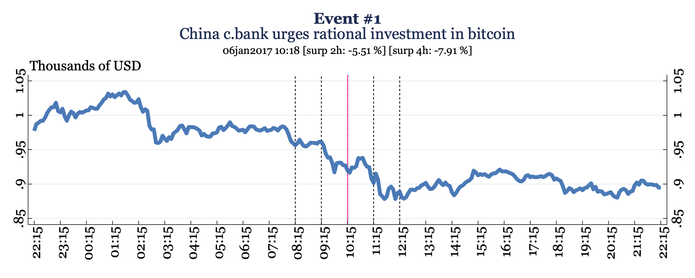
- News: The headline refers to January 6, 2017 reporting that the People’s Bank of China and related local regulators warned major bitcoin exchanges and urged investors to treat bitcoin cautiously rather than as a true currency.
- Market impact: The PNG shows a sharp negative reaction, with BTC log-returns of -5.51 in the 2-hour window and -7.91 in the 4-hour window, so both measured windows indicate a substantial decline after the news.
- Timing: On the 5-minute chart, the selloff was already underway before 10:18 GMT but visibly accelerated into and immediately after T₀, with the clearest downward extension occurring through roughly the next one to two hours.
- Confounds: Some broader China-related pressure was present because bitcoin had already reversed from a January 4 peak amid yuan and capital-control narratives, but no separate macro event within ±2 hours was identified as a stronger contemporaneous driver than the PBOC warning itself.
- Narrative fit: This event is best classified as Matched with confident but not unambiguous certainty, because contemporaneous reporting tied bitcoin’s drop to the PBOC warning and exchange scrutiny, while pre-existing volatility slightly weakens a maximum-certainty assignment.
- Sources: Reuters/Fortune, CoinDesk, Bloomberg, CNBC, CoinTelegraph
Event #2: China exchange inspection launch
Matched | Certainty: 4
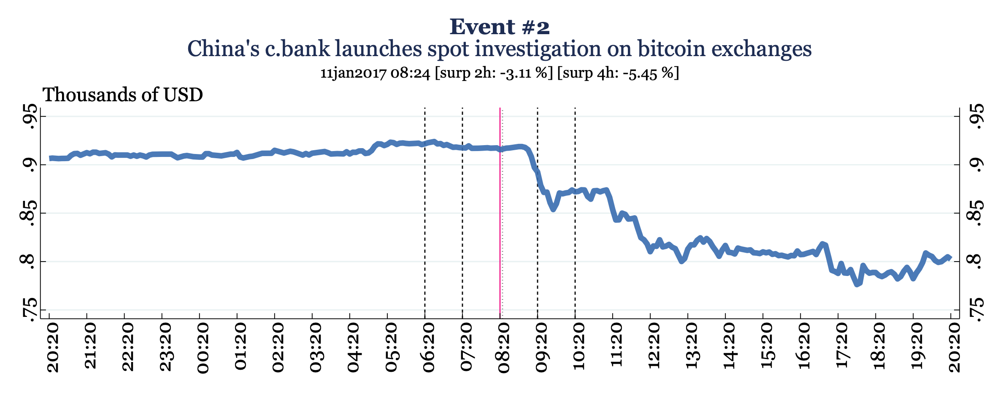
- News: The headline refers to January 11, 2017 reporting that the People’s Bank of China launched on-site inspections of major bitcoin exchanges, with contemporaneous coverage from CNBC, Bloomberg, CoinDesk and other outlets framing the move as a fresh regulatory crackdown.
- Market impact: The PNG shows a clear negative reaction, with BTC log-returns of -3.11 in the 2-hour window and -5.45 in the 4-hour window, so both measured windows indicate a sizeable decline consistent with adverse regulatory news.
- Timing: On the 5-minute chart, bitcoin is broadly steady into 08:24 GMT and then begins a distinct selloff within roughly the next half hour, with the sharpest leg lower unfolding through the following one to two hours.
- Confounds: Broader China capital-control and yuan-pressure narratives were part of the background context, but no separate crypto-specific or macro event within ±2 hours was identified in contemporaneous reporting as a stronger immediate catalyst for the drop.
- Narrative fit: This event is best classified as Matched with unambiguous certainty, because multiple contemporaneous reports explicitly linked bitcoin’s decline to the PBOC inspection announcement and the price move starts shortly after T₀ with no stronger competing explanation.
- Sources: Reuters/CNBC, Bloomberg, CoinDesk, CoinTelegraph, Central Banking, Nasdaq
Event #3: China exchange meeting report
Matched | Certainty: 4
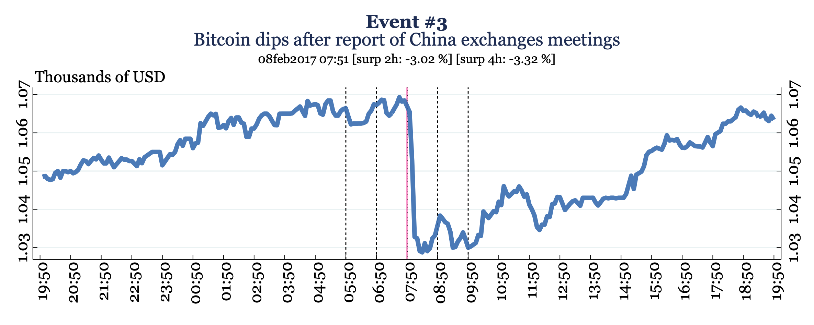
- News: The headline refers to February 8, 2017 reporting that Chinese authorities were holding additional closed-door meetings with bitcoin exchanges, with Bloomberg-originated reporting echoed by CoinDesk and market coverage treating it as renewed regulatory pressure.
- Market impact: The PNG shows a sharp negative reaction, with BTC log-returns of -3.02 in the 2-hour window and -3.32 in the 4-hour window, so both measured windows indicate a clear decline consistent with adverse China-regulation news.
- Timing: On the 5-minute chart, bitcoin is firm into 07:51 GMT and then breaks lower almost immediately after T₀, with the steepest downward leg concentrated in roughly the next fifteen to thirty minutes before stabilizing.
- Confounds: Broader China capital-control and exchange-regulation concerns remained part of the background narrative, but no separate crypto-specific or macro event within ±2 hours was identified in contemporaneous reporting as a stronger immediate catalyst for the drop.
- Narrative fit: This event is best classified as Matched with unambiguous certainty, because contemporaneous coverage explicitly linked bitcoin’s fall to reports of the PBOC exchange meetings and the selloff begins essentially at T₀ without a stronger competing explanation.
- Sources: Bloomberg, Reuters/Nasdaq, CoinDesk, CNBC, CoinTelegraph, WSJ/Barron's
Event #4: China withdrawal freeze expands
Matched | Certainty: 3
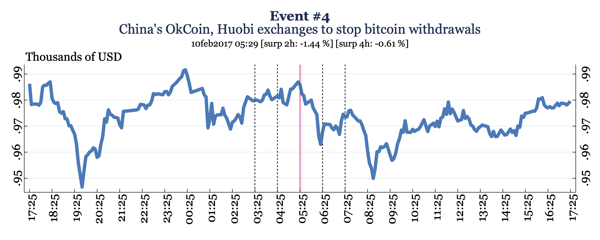
- News: The headline refers to February 10, 2017 reporting that China’s OkCoin and Huobi would stop bitcoin withdrawals, with contemporaneous crypto and mainstream coverage framing the move as a fresh escalation in the PBOC’s tightening oversight of exchanges.
- Market impact: The PNG shows a negative but less persistent reaction, with BTC log-returns of -1.44 in the 2-hour window and -0.61 in the 4-hour window, so both measured windows indicate a decline consistent with adverse regulatory news.
- Timing: On the 5-minute chart, bitcoin is choppy but near local highs into 05:29 GMT and then turns lower almost immediately after T₀, with the clearest downward extension occurring over roughly the next one to three hours.
- Confounds: Background macro noise was present because Asian markets were focused on dollar-yen moves and the coming U.S. payrolls release later on February 10, but no separate crypto-specific or macro event within ±2 hours was identified as a stronger direct catalyst for bitcoin’s drop.
- Narrative fit: This event is best classified as Matched with confident but not unambiguous certainty, because contemporaneous reporting directly tied bitcoin weakness to the withdrawal suspension news, while the measured decline was modest and unfolded amid already elevated China-regulation volatility.
- Sources: CoinDesk, CoinTelegraph, CNBC, Reuters/Business Standard, Bloomberg
Event #5: SEC rejects bitcoin ETF
Matched | Certainty: 4
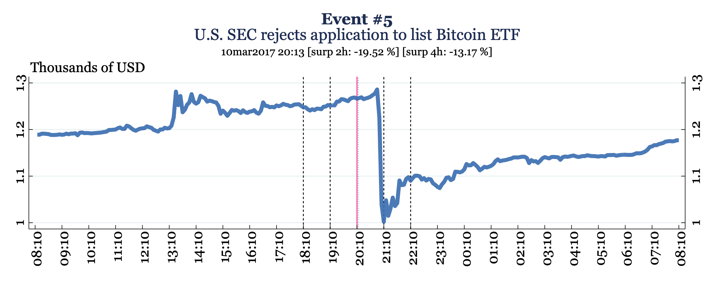
- News: The headline refers to March 10, 2017 reporting that the U.S. Securities and Exchange Commission rejected the Winklevoss application to list a bitcoin ETF, with Bloomberg, CoinDesk and Cointelegraph all treating it as a major setback for bitcoin market access.
- Market impact: The PNG shows an extreme negative reaction, with BTC log-returns of -19.52 in the 2-hour window and -13.17 in the 4-hour window, so both measured windows indicate a very large decline fully consistent with adverse ETF-denial news.
- Timing: On the 5-minute chart, bitcoin is still near local highs into 20:13 GMT and then collapses almost immediately after T₀, with the steepest leg lower concentrated in roughly the next thirty to sixty minutes before a partial rebound begins.
- Confounds: Routine macro background was present because U.S. markets were digesting the February payrolls report and an expected Fed hike, but no separate crypto-specific or macro event within ±2 hours was identified in contemporaneous reporting as a stronger direct catalyst than the SEC ruling.
- Narrative fit: This event is best classified as Matched with unambiguous certainty, because multiple contemporaneous reports explicitly tied bitcoin’s plunge to the SEC rejection and the selloff begins essentially at T₀ with no credible competing explanation in the event window.
- Sources: Bloomberg, CoinDesk, CoinTelegraph, Fortune, CNBC, Reuters
Event #6: SEC rejects SolidX listing
Matched | Certainty: 3
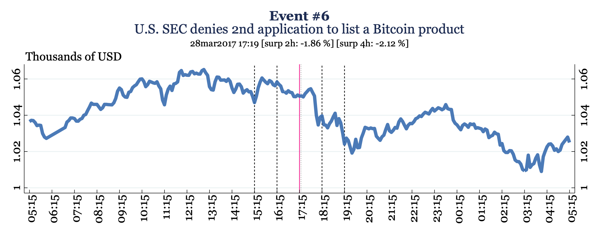
- News: The headline refers to March 28, 2017 reporting that the U.S. Securities and Exchange Commission denied NYSE Arca’s bid to list the SolidX Bitcoin Trust, with Reuters/CNBC and CoinDesk presenting it as the second bitcoin exchange-traded product rejection that month. (cnbc.com)
- Market impact: The PNG shows a clear negative reaction, with BTC log-returns of -1.86 in the 2-hour window and -2.12 in the 4-hour window, so both measured windows indicate a meaningful decline consistent with adverse ETF-denial news. (cnbc.com)
- Timing: On the 5-minute chart, bitcoin is drifting slightly lower into 17:19 GMT and then breaks down more decisively within roughly the next thirty to sixty minutes, with the weakest stretch extending through about 19:15 GMT before a partial rebound. (coindesk.com)
- Confounds: Background market noise was present because U.S. investors were also digesting routine late-session macro and political headlines on March 28, but no separate crypto-specific or macro event within ±2 hours was identified in contemporaneous reporting as a stronger direct catalyst for bitcoin’s decline. (cnbc.com)
- Narrative fit: This event is best classified as Matched with confident but not unambiguous certainty, because contemporaneous coverage treated the SEC denial as bearish for bitcoin and the selloff deepens shortly after T₀, though the move was materially smaller and less immediate than the March 10 Winklevoss rejection. (cnbc.com)
- Sources: Reuters/CNBC, CoinDesk, Bloomberg, CNBC, CoinTelegraph, WSJ search, Reuters search. (cnbc.com)
Event #7: SEC reviews ETF denial
Matched | Certainty: 3
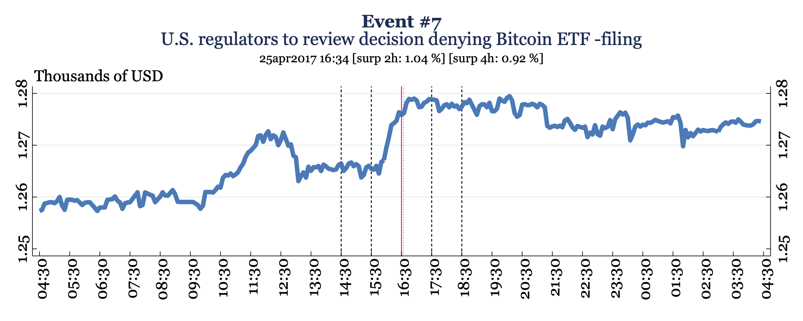
- News: The headline refers to April 25, 2017 reporting that U.S. regulators would review the earlier decision denying the Winklevoss bitcoin ETF filing, with CNBC and CoinTelegraph presenting the move as reopening, at least procedurally, the possibility of a future approval.
- Market impact: The PNG shows a positive reaction, with BTC log-returns of 1.04 in the 2-hour window and 0.92 in the 4-hour window, so both measured windows indicate a modest rise consistent with more constructive ETF-related news.
- Timing: On the 5-minute chart, bitcoin is relatively flat into 16:34 GMT and then breaks higher almost immediately after T₀, with the sharpest upward leg concentrated in roughly the next thirty to sixty minutes before prices level off near session highs.
- Confounds: Background macro noise was present because broader markets were focused on the Trump administration’s tax-plan messaging and routine late-session U.S. trading flows, but no separate crypto-specific or macro event within ±2 hours was identified in contemporaneous reporting as a stronger direct catalyst for bitcoin’s rise.
- Narrative fit: This event is best classified as Matched with confident but not unambiguous certainty, because contemporaneous coverage explicitly described bitcoin rising on the SEC review headline and the move begins essentially at T₀, though the news concerned a review process rather than an outright approval.
- Sources: CNBC, CoinTelegraph, CoinDesk, Bloomberg search, Reuters search, CoinMarketCap
Event #8: Chinese exchanges resume withdrawals
Matched | Certainty: 3
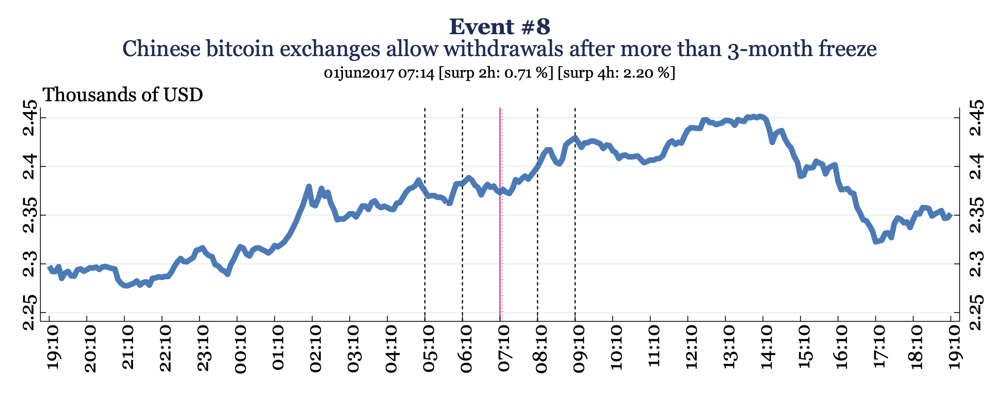
- News: The headline refers to June 1, 2017 reporting that major Chinese bitcoin exchanges were again permitting withdrawals after the freeze imposed during the PBOC compliance crackdown, with Bloomberg, Reuters-linked coverage and CoinDesk all treating the reopening as a constructive market development. (bloomberg.com)
- Market impact: The PNG shows a positive reaction, with BTC log-returns of 0.71 in the 2-hour window and 2.20 in the 4-hour window, so both measured windows indicate a rise consistent with bullish news, with the fuller effect appearing more clearly in the 4-hour window.
- Timing: On the 5-minute chart, bitcoin is already edging higher before 07:14 GMT but continues to grind upward after T₀, with the clearest post-event acceleration developing over roughly the next one to two hours rather than as an instantaneous spike.
- Confounds: Some background noise was present because bitcoin was already in a strong late-May and early-June uptrend and broader financial markets were digesting routine macro headlines, but no separate crypto-specific or macro event within ±2 hours was identified in contemporaneous reporting as a stronger direct catalyst for bitcoin’s rise. (bloomberg.com)
- Narrative fit: This event is best classified as Matched with confident but not unambiguous certainty, because the direction of the move and contemporaneous reporting both fit the reopening-of-withdrawals narrative, though the rally appears somewhat underway before T₀ and strengthens more gradually than in the clearest event-driven spikes. (bloomberg.com)
- Sources: Bloomberg, Reuters, CoinDesk, CoinTelegraph search, WSJ search, CNBC search, Crowdfund Insider, TechNode. (bloomberg.com)
Event #9: Falcon launches bitcoin management
Matched | Certainty: 2
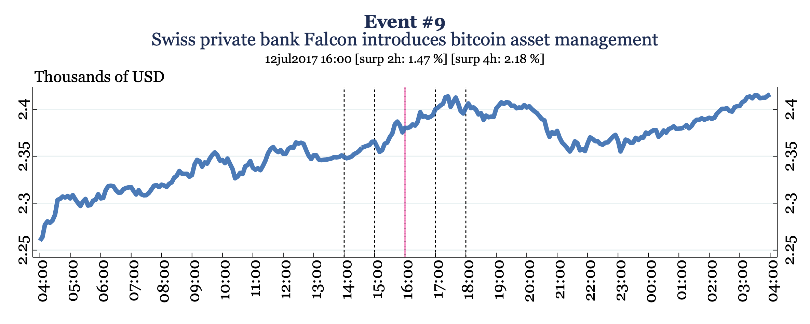
- News: The headline refers to July 12, 2017 reporting that Swiss private bank Falcon launched bitcoin and crypto-asset management services for clients, with CoinDesk and related banking coverage presenting the move as a notable institutional-adoption milestone for bitcoin. (coindesk.com)
- Market impact: The PNG shows a positive reaction, with BTC log-returns of 1.47 in the 2-hour window and 2.18 in the 4-hour window, so both measured windows indicate a meaningful rise broadly consistent with constructive institutional-adoption news. (coindesk.com)
- Timing: On the 5-minute chart, bitcoin is already drifting upward before 16:00 GMT and then continues to climb after T₀, with the clearest post-event acceleration unfolding over roughly the next one to two hours rather than as an immediate single-candle spike. (coindesk.com)
- Confounds: Background noise was clearly present because July 12 trading was also shaped by broad risk-on moves around Janet Yellen’s congressional testimony and unusually visible bitcoin attention from the widely reported “Buy Bitcoin” sign episode, though no stronger crypto-specific catalyst within ±2 hours was identified in the searched coverage. (cnbc.com)
- Narrative fit: This event is best classified as Matched with moderate certainty, because the direction of the move fits the Falcon adoption headline and no explicit contradiction was found, but the rally was partly underway before T₀ and the same session contained broader macro and sentiment catalysts. (coindesk.com)
- Sources: CoinDesk, Global Banking & Finance Review, CNBC, Reuters-linked CNBC coverage, Fortune, Bloomberg search, WSJ search. (coindesk.com)
Event #10: CFTC clears LedgerX derivatives
Matched | Certainty: 2
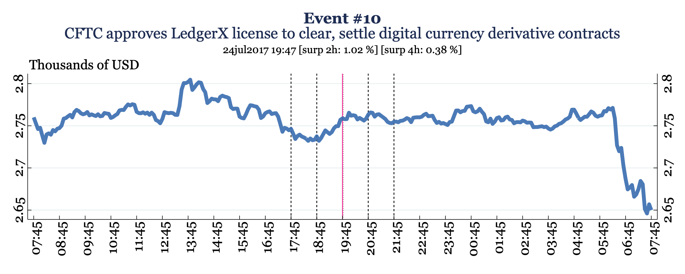
- News: The headline refers to July 24, 2017 reporting that the CFTC approved LedgerX to clear and settle digital-currency derivatives contracts, with Cointelegraph and later CoinDesk retrospectives presenting the decision as a meaningful step toward regulated institutional bitcoin derivatives activity. (cointelegraph.com)
- Market impact: The PNG shows a positive but modest reaction, with BTC log-returns of 1.02 in the 2-hour window and 0.38 in the 4-hour window, so both measured windows indicate gains consistent with constructive regulatory news, though the move is much clearer in the shorter window than over four hours.
- Timing: On the 5-minute chart, bitcoin is soft into roughly 18:30–19:00 GMT and then turns higher just before or around the 19:47 GMT event mark, with the main post-event rise unfolding over the next thirty to sixty minutes before flattening out.
- Confounds: Background noise was present because the broader session already featured ongoing 2017 crypto momentum and routine macro market coverage, but the searched crypto and financial reporting did not identify a separate crypto-specific or macro catalyst within ±2 hours that was more explicitly tied to bitcoin’s move. (cointelegraph.com)
- Narrative fit: This event is best classified as Matched with moderate certainty, because the direction and immediate timing broadly fit a bullish institutional-market-structure headline, but the price response is relatively small in the 4-hour window and contemporaneous source coverage located here is thinner than in the strongest event-driven cases. (cointelegraph.com)
- Sources: Cointelegraph, CoinDesk, Reuters search, Bloomberg search, WSJ search, CNBC search, broader macro news search. (cointelegraph.com)
Event #11: China bans ICO fundraising
Matched | Certainty: 4
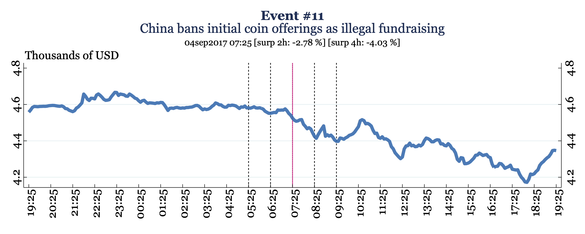
- News: The headline refers to September 4, 2017 reporting that Chinese regulators declared initial coin offerings illegal fundraising and ordered related activity halted, with Bloomberg, CNBC and Caixin all presenting it as a major negative regulatory shock for the crypto market. (bloomberg.com)
- Market impact: The PNG shows a sharply negative reaction, with BTC log-returns of -2.78 in the 2-hour window and -4.03 in the 4-hour window, so both measured windows point to a meaningful selloff fully consistent with adverse China-regulation news. (bloomberg.com)
- Timing: On the 5-minute chart, bitcoin is already edging lower shortly before 07:25 GMT and then sells off more decisively immediately after T₀, with the clearest downside extension occurring through the following one to two hours before only a partial rebound.
- Confounds: None identified, because the searched contemporaneous coverage centered overwhelmingly on the China ICO crackdown as the driver of bitcoin’s decline and no separate crypto-specific or macro event within ±2 hours was found to be more explicitly tied to the move. (bloomberg.com)
- Narrative fit: This event is best classified as Matched with unambiguous certainty, because the move is large, negative, begins essentially at the event time, and contemporaneous reporting directly attributes bitcoin’s drop to China’s ICO ban rather than to an alternative catalyst. (bloomberg.com)
- Sources: Bloomberg, Reuters-reported CNBC coverage, Caixin, Cointelegraph, CoinDesk, WSJ search, broader macro news search. (bloomberg.com)
Event #12: China exchange shutdown report
Matched | Certainty: 4
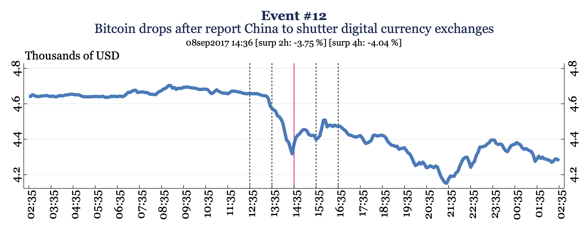
- News: The headline refers to September 8, 2017 reporting that Chinese regulators were preparing to shut domestic digital-currency exchanges, with Bloomberg citing Caixin-sourced claims and Reuters likewise describing the report as a fresh regulatory blow to bitcoin after the ICO crackdown earlier that week. (bloomberg.com)
- Market impact: The PNG shows a sharply negative reaction, with BTC log-returns of -3.75 in the 2-hour window and -4.04 in the 4-hour window, so both measured windows indicate a sizeable selloff fully consistent with adverse China-exchange regulation news. (bloomberg.com)
- Timing: On the 5-minute chart, bitcoin is broadly stable before roughly 13:25–13:35 GMT, then breaks lower about an hour before T₀ and accelerates into a steep drop immediately around the 14:36 GMT event mark, followed by only a partial rebound before renewed weakness.
- Confounds: Background macro news existed around the same date, including the prior day’s ECB-driven currency-market moves, but the searched contemporaneous crypto and financial coverage did not identify a separate crypto-specific or macro catalyst within ±2 hours that was more explicitly tied to bitcoin’s drop than the China exchange-shutdown report. (business-standard.com)
- Narrative fit: This event is best classified as Matched with unambiguous certainty, because the move is large, negative, and closely aligned with a heavily reported China crackdown headline, while contemporaneous Bloomberg, Reuters and crypto-market coverage all point in the same direction without an explicit contradictory explanation. (bloomberg.com)
- Sources: Bloomberg, Reuters, Cointelegraph, CNBC search, CoinDesk search, WSJ search, broader macro news search. (bloomberg.com)
Matched | Certainty: 3
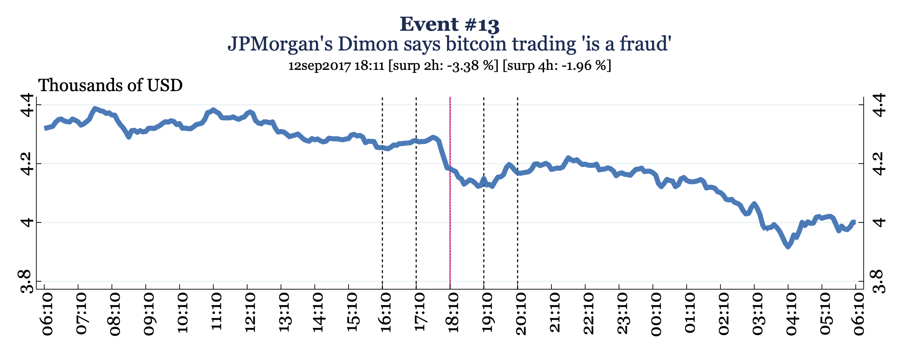
- News: The headline refers to September 12, 2017 reporting that JPMorgan chief Jamie Dimon called bitcoin a “fraud” at an investor conference, with Bloomberg, CoinDesk and later CNN/CNBC coverage all framing the remarks as a notable negative headline for crypto sentiment.
- Market impact: The PNG shows a clearly negative reaction, with BTC log-returns of -3.38 in the 2-hour window and -1.96 in the 4-hour window, so both measured windows indicate a meaningful selloff that directionally matches a hostile high-profile banking comment.
- Timing: On the 5-minute chart, bitcoin is broadly steady into the event and then breaks sharply lower essentially at 18:11 GMT, with the fastest initial decline unfolding in the next 30 to 60 minutes before a partial rebound and later renewed weakness.
- Confounds: Ongoing anxiety over a possible wider China exchange crackdown was still part of the market backdrop that week, but the searched contemporaneous crypto and financial coverage did not identify a separate crypto-specific or macro catalyst within ±2 hours that was more explicitly tied to the immediate drop.
- Narrative fit: This event is best classified as Matched with confident certainty, because the move is negative, begins right around T₀, and contemporaneous reporting noted bitcoin falling after Dimon’s remarks, even though broader China-related regulatory fears likely amplified background fragility.
- Sources: Bloomberg, CoinDesk, Cointelegraph, CNN Business search, Reuters search, WSJ search, CNBC search, broader macro news search.
Event #14: China exchange closure deadline
Matched | Certainty: 3
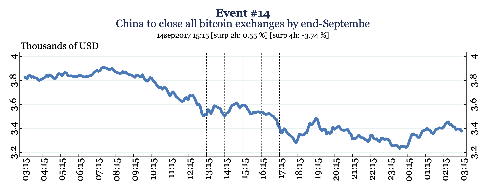
- News: The headline refers to September 14, 2017 reporting that China was moving to close domestic bitcoin exchanges by month-end, with BTCC itself announcing it would stop trading on September 30 and contemporaneous Bloomberg, CNBC and CoinDesk coverage framing this as a fresh escalation of the crackdown. (cnbc.com)
- Market impact: The PNG shows mixed but still net-negative performance, with BTC log-returns of -0.55 in the 2-hour window and -3.74 in the 4-hour window, so the shorter window is modest while the broader four-hour window captures a much more substantial selloff consistent with the bearish regulatory headline. (bloomberg.com)
- Timing: On the 5-minute chart, bitcoin is already under pressure before 15:15 GMT, briefly steadies around T₀, and then resumes a clearer downward grind within roughly the next hour, with the most visible extension of the decline occurring into the later 4-hour window.
- Confounds: Ongoing China-crypto regulatory anxiety was clearly part of the backdrop, but the searched contemporaneous crypto and financial coverage did not identify a separate crypto-specific or macro catalyst within ±2 hours that was more explicitly tied to bitcoin’s decline than the exchange-shutdown news itself. (bloomberg.com)
- Narrative fit: This event is best classified as Matched with confident certainty, because the broader move is decisively negative and directionally consistent with the news, even though the immediate reaction is not especially clean and some selling was already underway before the exact event timestamp. (bloomberg.com)
- Sources: Bloomberg, Reuters search, CNBC, CoinDesk, Cointelegraph, WSJ search, TechCrunch, broader macro news search. (bloomberg.com)
Event #15: Grayscale trust filing withdrawn
Mismatch | Certainty: NA
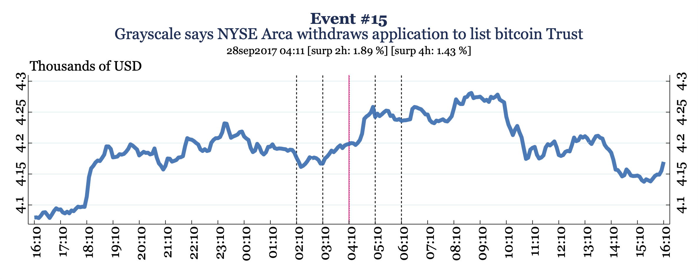
- News: The headline refers to Grayscale’s announcement, reported by Reuters and in the company’s own September 25–28, 2017 disclosures, that NYSE Arca had withdrawn its application to list the Bitcoin Investment Trust, a headline that is facially negative for mainstream bitcoin-market access. (prnewswire.com)
- Market impact: The PNG shows a positive reaction rather than a selloff, with BTC log-returns of 1.89 in the 2-hour window and 1.43 in the 4-hour window, so both reported windows indicate a meaningful rise that runs opposite to the obvious interpretation of the withdrawal news.
- Timing: On the 5-minute chart, bitcoin is soft to sideways before 04:11 GMT, then begins climbing almost immediately after T₀ and extends higher through the next one to two hours, with the clearest upside acceleration appearing shortly after the event mark.
- Confounds: The searched contemporaneous material did not surface a stronger crypto-specific or macro catalyst within roughly ±2 hours that was more explicitly tied to this exact upward move, but that absence does not override the direct sign contradiction between a negative listing-withdrawal headline and positive realized returns. (investing.com)
- Narrative fit: This event is best classified as Mismatch, because the core news is adverse while both measured windows are decisively positive, and the decision tree instructs that explicit sign contradictions of this sort should not be treated as a matched causal market reaction. (prnewswire.com)
- Sources: Grayscale press release, Reuters, CoinDesk search, Cointelegraph search, Bloomberg search, CNBC search, WSJ search, broader macro news search. (prnewswire.com)
Event #16: Bitcoin fund proposals withdrawn
No Move | Certainty: NA
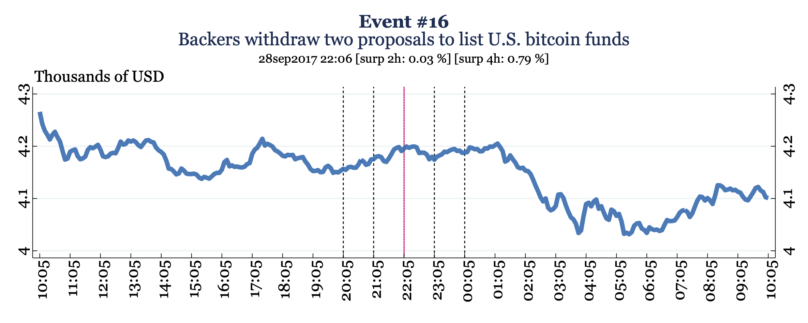
- News: The headline refers to Reuters reporting on September 28, 2017 that backers withdrew two proposals to list U.S. bitcoin funds after regulatory concerns, a facially negative development for near-term mainstream investment access to bitcoin. (businesslawtoday.org)
- Market impact: The PNG shows essentially no immediate reaction in the short window, with a 2-hour log-return of 0.03, while the 4-hour log-return is 0.79 and reflects only a modest net gain rather than a decisive directional move tied to the headline.
- Timing: On the 5-minute chart, bitcoin is broadly flat to slightly firmer into 22:06 GMT and remains choppy without a clean break right after T₀, with the more visible selloff not arriving until several hours later outside the immediate reaction window.
- Confounds: The searched contemporaneous crypto and financial coverage did not surface a separate crypto-specific or macro catalyst within roughly ±2 hours that was more explicitly tied to bitcoin at that exact moment, though broader late-September regulatory scrutiny remained part of the background. (businesslawtoday.org)
- Narrative fit: This event is best classified as No Move, because the decision tree assigns that category when the available short-window return is below 0.1% in absolute value, and the chart likewise shows no meaningful immediate response at the event timestamp.
- Sources: Reuters, Cointelegraph, CoinDesk search, Bloomberg search, CNBC search, WSJ search, broader macro news search. (businesslawtoday.org)
Event #17: South Korea ICO ban
Matched | Certainty: 3
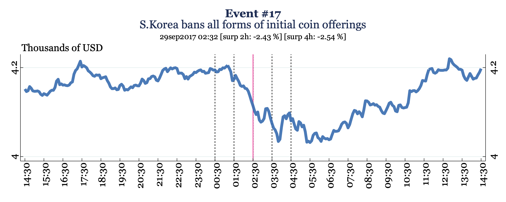
- News: The headline refers to South Korea’s Financial Services Commission banning all forms of initial coin offerings, a development reported contemporaneously by CNBC, CoinDesk, Bloomberg, and the Wall Street Journal as part of a broader tightening of crypto regulation. (cnbc.com)
- Market impact: The PNG shows a clear negative reaction, with BTC log-returns of -2.43 in the 2-hour window and -2.54 in the 4-hour window, so both measured windows indicate a meaningful selloff that is directionally consistent with the regulatory-crackdown headline. (cnbc.com)
- Timing: On the 5-minute chart, bitcoin is already easing lower before 02:32 GMT, but the decline steepens immediately after T₀ and extends through roughly the next two hours, with the sharpest downside leg occurring in the first half of the 4-hour window.
- Confounds: The searched contemporaneous crypto and financial coverage did not surface a separate crypto-specific or macro catalyst within roughly ±2 hours that was more explicitly tied to bitcoin’s selloff than the South Korea ICO ban itself, although general late-September regulatory anxiety remained part of the backdrop. (cnbc.com)
- Narrative fit: This event is best classified as Matched with confident certainty, because the news is plainly negative for crypto risk sentiment, the realized move is negative in both windows, and contemporaneous reporting explicitly linked bitcoin and other cryptocurrencies to the South Korean crackdown. (bloomberg.com)
- Sources: CNBC, CoinDesk, Bloomberg, Wall Street Journal, Cointelegraph, Forbes search, Reuters-attributed coverage, broader macro news search. (cnbc.com)
Event #18: Japan licenses crypto exchanges
Matched | Certainty: 3
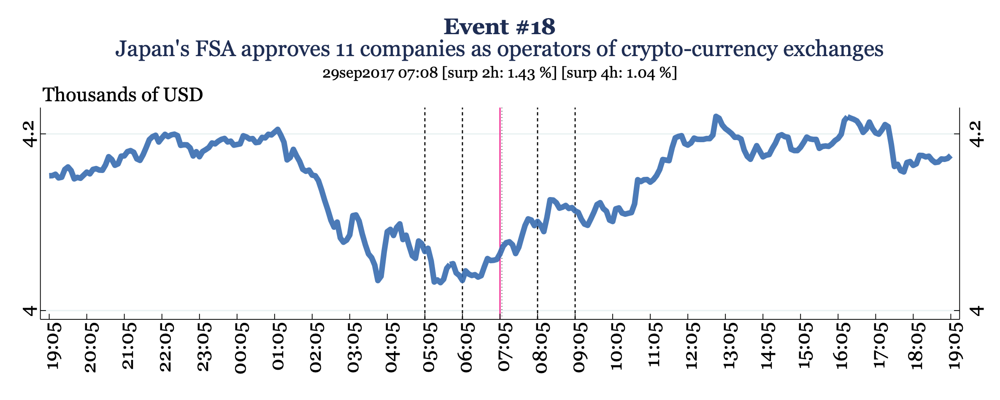
- News: The headline refers to Japan’s Financial Services Agency approving 11 companies as registered cryptocurrency exchange operators on September 29, 2017, a development reported by Reuters-linked coverage and contemporaneously echoed by CNBC, CoinDesk, and other crypto outlets as supportive of regulated bitcoin adoption. (crowdfundinsider.com)
- Market impact: The PNG shows a clear positive reaction, with BTC log-returns of 1.43 in the 2-hour window and 1.04 in the 4-hour window, so both measured windows indicate a meaningful rise that is directionally consistent with the exchange-approval headline.
- Timing: On the 5-minute chart, bitcoin is already rebounding from an overnight low shortly before 07:08 GMT, then continues grinding higher after T₀ with the recovery extending through the next two hours, even if the move does not begin from a perfectly flat baseline.
- Confounds: The main same-day alternative catalyst in searched coverage was South Korea’s September 29, 2017 ICO ban, which Bloomberg explicitly tied to falling cryptocurrencies later that day, but that item pointed in the opposite direction and was not a stronger explanation for this positive move around 07:08 GMT. (bloomberg.com)
- Narrative fit: This event is best classified as Matched with confident certainty, because the news is plainly constructive for crypto market legitimacy, both measured windows are positive, and no contemporaneous macro or crypto event within roughly ±2 hours was more explicitly linked to this specific upside reaction. (cnbc.com)
- Sources: Reuters-linked coverage, CNBC, CoinDesk, Cointelegraph search, Bloomberg search, Wall Street Journal search, broader macro news search. (crowdfundinsider.com)
Event #19: Swiss ICO probe headline
Polluted | Certainty: NA
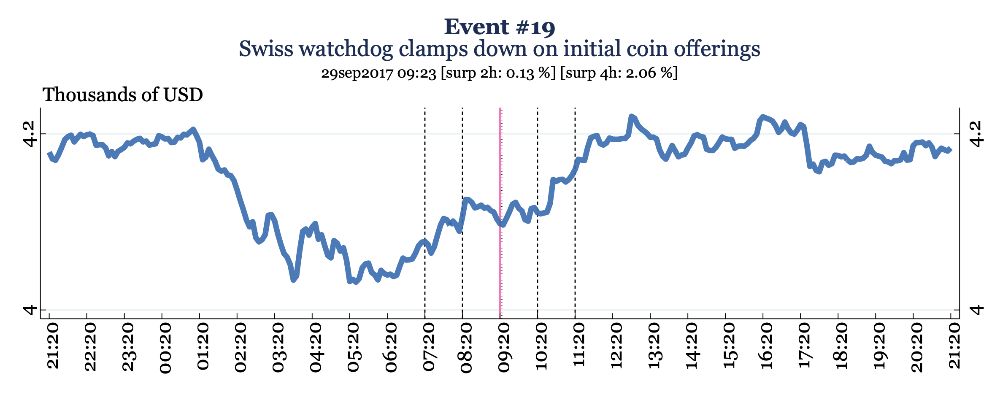
- News: The headline refers to Swiss regulator FINMA investigating a number of initial coin offerings on September 29, 2017, a Reuters-reported regulatory development also reflected in later Bloomberg Law coverage as part of widening global ICO scrutiny.
- Market impact: The PNG shows BTC log-returns of 0.13 in the 2-hour window and 2.06 in the 4-hour window, so bitcoin posts only a marginal immediate gain around T₀ but a much larger positive move over the broader four-hour window.
- Timing: On the 5-minute chart, bitcoin is already recovering before 09:23 GMT, stays choppy for roughly the next hour, and only breaks into a more decisive upside extension closer to the latter part of the 4-hour window rather than immediately at release.
- Confounds: Searched contemporaneous coverage shows the same day was dominated by other regulatory headlines, especially South Korea’s ICO ban and broader global ICO enforcement concerns, making the later upside move difficult to attribute cleanly to the Swiss watchdog story alone.
- Narrative fit: This event is best classified as Polluted, because the headline is directionally negative for crypto sentiment, the immediate reaction is negligible, and the stronger subsequent rise occurs in a crowded same-day news environment with multiple overlapping regulatory catalysts.
- Sources: Reuters search, Bloomberg Law, CoinDesk search, Cointelegraph, CNBC search, Wall Street Journal search, broader macro news search.
Event #20: Russia bitcoin website ban
Matched | Certainty: 2
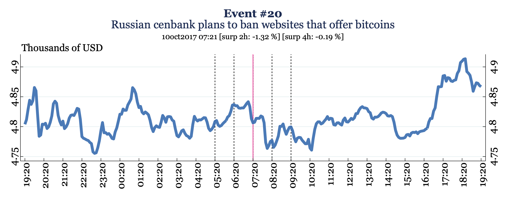
- News: The headline refers to October 10, 2017 remarks by Russian central bank first deputy governor Sergei Shvetsov that authorities would block access to websites of exchanges offering cryptocurrencies such as bitcoin, as reported by Reuters-attributed CNBC coverage and echoed by Cointelegraph. (cnbc.com)
- Market impact: The PNG shows BTC log-returns of -1.32 in the 2-hour window and -0.19 in the 4-hour window, so bitcoin records a meaningful immediate selloff but only a very small net decline over the broader four-hour window.
- Timing: On the 5-minute chart, bitcoin is firm into 07:21 GMT, then drops almost immediately after T₀ with the sharpest downside move concentrated in roughly the first hour before the price partially stabilizes and later retraces.
- Confounds: The searched contemporaneous crypto and financial coverage did not surface a separate crypto-specific or macro catalyst within roughly ±2 hours of 07:21 GMT that was more explicitly tied to bitcoin’s initial drop, although the wider session still reflected an already regulation-sensitive crypto backdrop. (cnbc.com)
- Narrative fit: This event is best classified as Matched with moderate certainty, because the headline is clearly negative for retail crypto access in Russia and the near-immediate price reaction is negative, but the much smaller 4-hour return shows the selloff was not especially durable. (cnbc.com)
- Sources: CNBC, Cointelegraph, Bloomberg search, Reuters search, Wall Street Journal search, CoinDesk search, broader macro news search. (cnbc.com)
Event #21: Russia crypto regulation deal
Matched | Certainty: 1
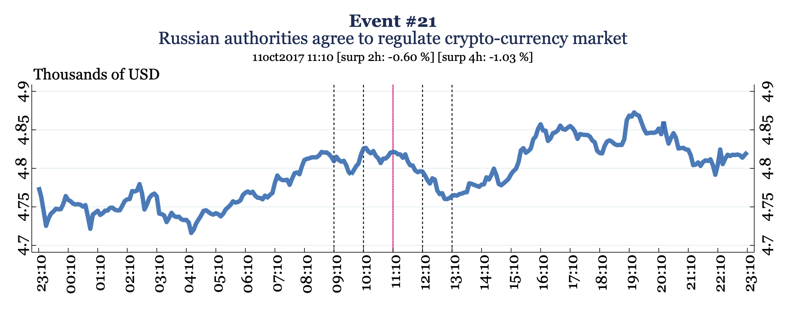
- News: The headline refers to an October 11, 2017 Reuters report, later republished by VOA and echoed in crypto coverage, saying Russian authorities had agreed to regulate the cryptocurrency market rather than prohibit it outright, framing the shift as a partial legalization step. (voanews.com)
- Market impact: The PNG shows BTC log-returns of -0.60 in the 2-hour window and -1.03 in the 4-hour window, so bitcoin declined in both measured windows even though the regulatory headline would ordinarily read as at least mildly constructive for market legitimacy.
- Timing: On the 5-minute chart, bitcoin is roughly stable into 11:10 GMT, then drifts lower through the following two hours with the clearest downside extension unfolding after T₀ rather than being fully in place beforehand.
- Confounds: Searched contemporaneous crypto and financial coverage did not identify a stronger crypto-specific or macro catalyst within roughly ±2 hours of 11:10 GMT that was more explicitly tied to this particular decline, although the market was still digesting Russia’s whipsawing regulatory signals from the prior day. (cnbc.com)
- Narrative fit: This event is best classified as Matched with weak certainty, because the observed move runs opposite to the headline’s most obvious interpretation, but the timing is not wholly inconsistent and the search did not surface a cleaner alternative explanation inside the event window. (voanews.com)
- Sources: Reuters-republished VOA, CoinDesk, Cointelegraph search, CNBC, Bloomberg search, Wall Street Journal search, broader macro news search. (voanews.com)
Event #22: CME bitcoin futures launch
Matched | Certainty: 4
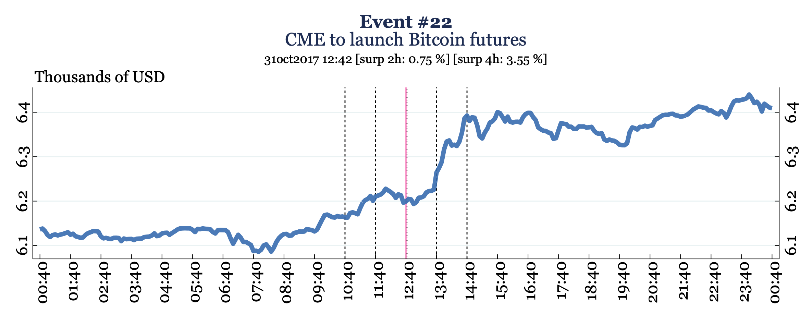
- News: The headline refers to CME Group’s October 31, 2017 announcement that it intended to launch bitcoin futures in the fourth quarter, a mainstream-market adoption milestone reported by CME itself and quickly amplified across Bloomberg, CNBC, CoinDesk, and Cointelegraph.
- Market impact: The PNG shows BTC log-returns of 0.75 in the 2-hour window and 3.55 in the 4-hour window, so bitcoin posts a modest immediate gain around T₀ and then a much larger sustained upside move over the broader four-hour period.
- Timing: On the 5-minute chart, bitcoin is already firming before 12:42 GMT, pauses around T₀, and then begins its sharpest upward leg roughly 45 to 60 minutes later, with the strongest extension carrying into the latter half of the 4-hour window.
- Confounds: Searched contemporaneous crypto and financial coverage did not identify a separate crypto-specific or macro catalyst within roughly ±2 hours of 12:42 GMT that was more explicitly tied to bitcoin’s surge, while multiple outlets directly linked the breakout to CME’s futures decision.
- Narrative fit: This event is best classified as Matched with unambiguous certainty, because the headline is strongly bullish for institutional legitimacy, the measured returns are positive in both windows, and contemporaneous reporting repeatedly describes the price breakout as a reaction to the CME futures announcement.
- Sources: CME Group press release, Bloomberg, CNBC, CoinDesk, Cointelegraph, Reuters search, Wall Street Journal search, broader macro news search.
Event #23: Swiss bank short-bitcoin futures
Matched | Certainty: 2
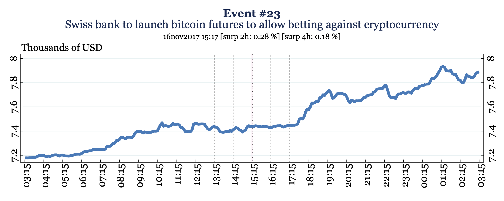
- News: The headline refers to November 16, 2017 reporting, attributed in crypto coverage to Reuters and echoed by CoinDesk, that Swiss bank Vontobel and related Swiss issuers were launching mini futures that would let investors hedge or bet against bitcoin. (coindesk.com)
- Market impact: The PNG shows BTC log-returns of 0.28 in the 2-hour window and 0.18 in the 4-hour window, so bitcoin records a small gain in both measured windows despite the headline describing a new instrument that could be read as mildly bearish or at least two-sided.
- Timing: On the 5-minute chart, bitcoin is broadly flat into 15:17 GMT, remains quiet for roughly the next two hours, and only begins its more forceful upward leg near 17:30 GMT, late within the broader four-hour window.
- Confounds: Searched contemporaneous crypto and financial coverage points to an already supportive bitcoin backdrop tied to post-SegWit2x recovery and renewed fork-related speculation, which was widely cited around November 16–17 and offers a plausible competing explanation for the later upside drift. (cnbc.com)
- Narrative fit: This event is best classified as Matched with moderate certainty, because the news is not cleanly directional, the measured returns are only modestly positive, and the delayed move can still fit a market interpretation that institutional trading access was legitimizing even if short exposure was the headline hook. (coindesk.com)
- Sources: Reuters-attributed coverage search, CoinDesk, Cointelegraph search, CNBC search, Bloomberg search, Wall Street Journal search, and broader macro and crypto day-of-news search. (coindesk.com)
Event #24: Nasdaq bitcoin futures report
Matched | Certainty: 2
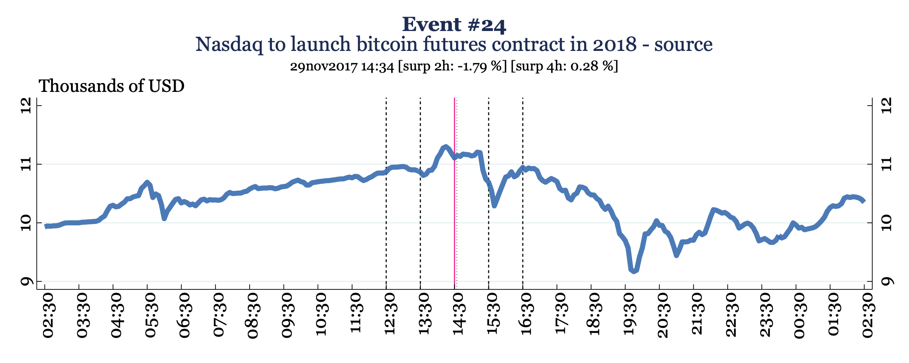
- News: The headline refers to November 29, 2017 reporting, attributed in mainstream coverage to the Wall Street Journal and relayed by CNBC and crypto outlets, that Nasdaq was preparing to launch bitcoin futures in 2018 as another institutional-legitimacy milestone for the asset. (cnbc.com)
- Market impact: The PNG shows BTC log-returns of -1.79 in the 2-hour window and 0.28 in the 4-hour window, so bitcoin sells off on the shorter horizon despite the ostensibly bullish headline, then recovers enough to leave the broader four-hour window slightly positive.
- Timing: On the 5-minute chart, bitcoin is already elevated into 14:34 GMT, spikes just before T₀, then drops sharply within roughly 20 to 40 minutes after the headline before partially rebounding later in the four-hour window.
- Confounds: Searched contemporaneous coverage shows bitcoin was already in an extremely volatile price-discovery phase around its first break above $11,000, with broad reporting emphasizing whipsaw trading and bubble concerns, but no cleaner crypto-specific or macro catalyst within roughly ±2 hours of 14:34 GMT that was more explicitly tied to the post-T₀ move. (cnbc.com)
- Narrative fit: This event is best classified as Matched with moderate certainty, because the headline is directionally bullish for mainstream adoption, the immediate reaction is contradictory, but the full four-hour window turns positive and the search did not surface a stronger alternative explanation inside the event window. (cnbc.com)
- Sources: CNBC, Cointelegraph, Reuters search, Bloomberg search, Wall Street Journal-attributed coverage, BEA macro calendar search, Nasdaq market coverage, and broader crypto day-of-news search. (cnbc.com)
Event #25: CFTC clears bitcoin futures
Matched | Certainty: 4
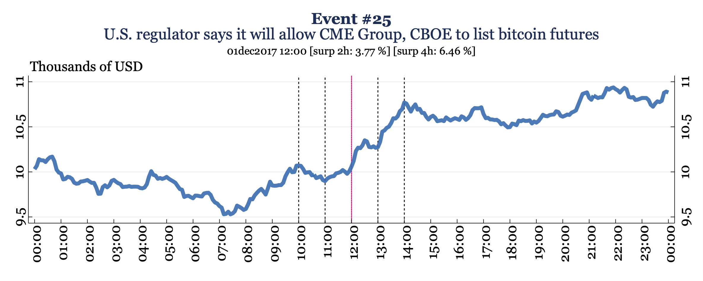
- News: The headline refers to December 1, 2017 reporting, first associated with Reuters and quickly echoed by CNBC, Bloomberg, CoinDesk, and Cointelegraph, that the U.S. regulator would allow CME Group and CBOE to list bitcoin futures, a landmark step in regulated market access.
- Market impact: The PNG shows BTC log-returns of 3.77 in the 2-hour window and 6.46 in the 4-hour window, so bitcoin posts a strong immediate rally around T₀ and then extends that upside materially across the broader four-hour window.
- Timing: On the 5-minute chart, bitcoin is roughly flat to slightly firm just before 12:00 GMT, then begins a decisive upward leg within minutes after T₀, with a further acceleration during the following one to two hours.
- Confounds: Searched contemporaneous crypto and financial coverage did not identify a separate crypto-specific or macro catalyst within roughly ±2 hours of 12:00 GMT that was more explicitly tied to bitcoin’s surge, while multiple outlets directly described the futures approval as price-supportive.
- Narrative fit: This event is best classified as Matched with unambiguous certainty, because the headline is strongly bullish for institutional legitimacy, the measured returns are sharply positive in both windows, and contemporaneous reporting explicitly says bitcoin rose after CME and CBOE were cleared to list futures.
- Sources: Reuters search, CNBC, Bloomberg, CoinDesk, Cointelegraph, CME Group press release, CFTC filing materials, Wall Street Journal search, and broader macro day-of-news search.
Event #26: Indonesia crypto payments ban
Matched | Certainty: 1
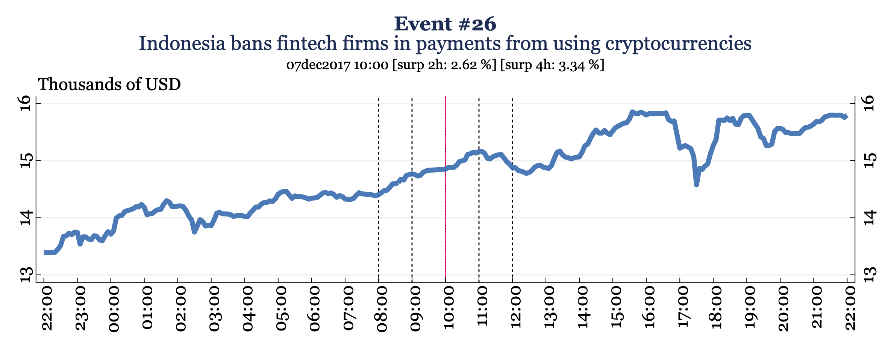
- News: The headline refers to Reuters reporting on December 7, 2017 that Bank Indonesia issued rules barring fintech payment firms from using cryptocurrencies and was also reviewing whether exchange trading needed tighter oversight, a clearly restrictive regulatory development for local crypto usage. (investing.com)
- Market impact: The PNG shows BTC log-returns of 2.62 in the 2-hour window and 3.34 in the 4-hour window, so bitcoin rises strongly in both measured windows even though the headline itself reads as straightforwardly bearish for cryptocurrency adoption and payments. (investing.com)
- Timing: On the 5-minute chart, bitcoin is already trending upward before 10:00 GMT, continues grinding higher immediately after T₀, and extends the advance through roughly the next one to two hours rather than reversing lower on the Indonesian regulatory headline.
- Confounds: Searched contemporaneous coverage shows a much broader global bitcoin melt-up on December 7, with Reuters- and CNBC-linked reporting focused on record highs near and above $16,000 to $19,000, while the NiceHash hack was also in the news but was being shrugged off rather than driving the observed upside move. (cnbc.com)
- Narrative fit: This event is best classified as Matched with weak certainty, because the observed move runs opposite to the obvious bearish interpretation of the news, yet the search did not surface a cleaner within-window catalyst more explicitly tied to the post-T₀ rise than the market’s ongoing record-setting momentum. (cnbc.com)
- Sources: Reuters-attributed coverage, CoinDesk, Cointelegraph search, CNBC, Bloomberg search, Wall Street Journal search, Axios, Guardian, and broader macro and crypto day-of-news search. (investing.com)
Event #27: Bitcoin ETF push meets selloff
Mismatch | Certainty: NA
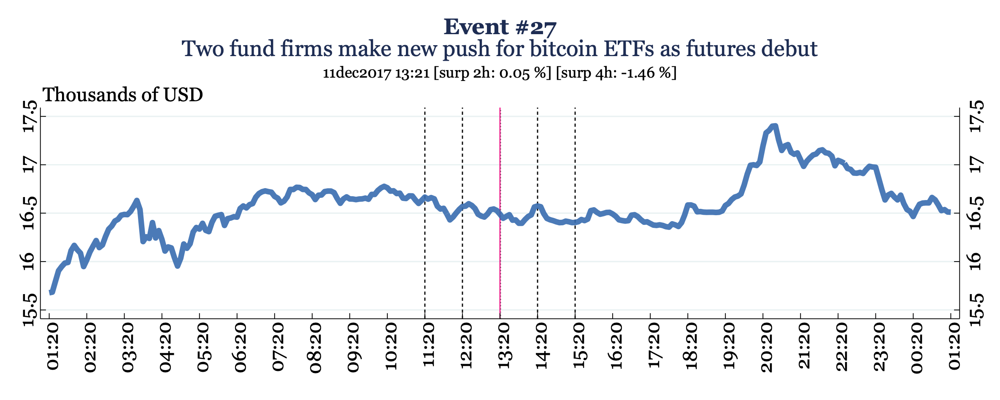
- News: The headline refers to December 11, 2017 Reuters reporting that REX Shares, VanEck, and First Trust renewed or advanced bitcoin ETF proposals as regulated bitcoin futures began trading, a facially bullish institutional-adoption development for the asset class. (thenationalnews.com)
- Market impact: The PNG shows BTC log-returns of 0.05 in the 2-hour window and -1.46 in the 4-hour window, so bitcoin is essentially flat around T₀ on the shorter horizon and then declines meaningfully across the broader four-hour window rather than sustaining an ETF-driven rally.
- Timing: On the 5-minute chart, bitcoin is already drifting slightly lower into 13:21 GMT, shows no decisive upside response immediately after T₀, and continues to chop sideways-to-down through most of the next two hours before a larger rally only much later in the session.
- Confounds: Searched contemporaneous coverage shows December 11 was dominated by the Cboe bitcoin futures debut and broader commentary about extreme volatility, while the main scheduled macro catalysts such as U.S. PPI and the FOMC meeting were outside the immediate ±2 hour window, so no cleaner same-window alternative catalyst was identified. (cnbc.com)
- Narrative fit: This event is best classified as Mismatch, because the underlying headline is plainly bullish for mainstream access to bitcoin, yet the measured 4-hour window is clearly negative and contemporaneous reporting around the day more often described bitcoin as rising on futures-related enthusiasm rather than falling on the ETF-push story. (washingtonpost.com)
- Sources: Reuters-attributed coverage via The National and CNBC, Bloomberg, CoinDesk search, Cointelegraph search, ETF.com, SEC filing materials, Wall Street Journal search, BLS PPI release, and broader macro and crypto day-of-news search. (thenationalnews.com)
Event #28: Goldman desk headline sparks bounce
Matched | Certainty: 2
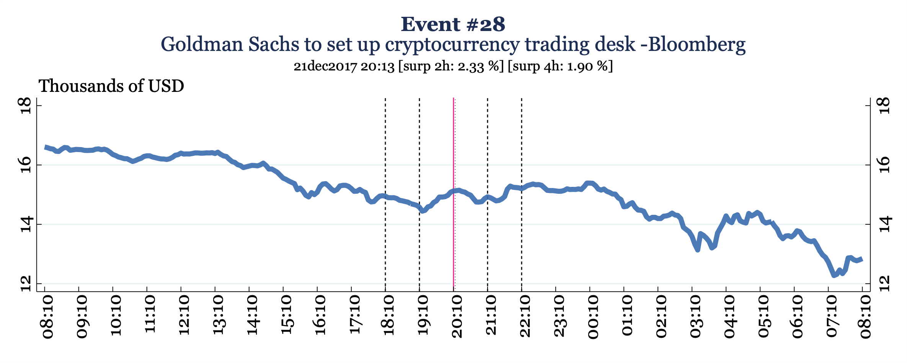
- News: The headline refers to Bloomberg-reported news, widely echoed by CNBC and other outlets on December 21, 2017, that Goldman Sachs was preparing a cryptocurrency trading desk, a facially bullish institutional-adoption development for bitcoin and the broader crypto market.
- Market impact: The PNG shows BTC log-returns of 2.33 in the 2-hour window and 1.90 in the 4-hour window, so bitcoin rises meaningfully across both measured windows even though the broader 24-hour context remains highly volatile and ultimately turns sharply lower later.
- Timing: On the 5-minute chart, bitcoin is falling into 20:13 GMT, bottoms shortly before or around T₀, and then rebounds within minutes after the headline, with the clearest upside response concentrated in roughly the next one to two hours.
- Confounds: Searched contemporaneous crypto and financial coverage did not identify a separate crypto-specific or macro catalyst within roughly ±2 hours of 20:13 GMT that was more explicitly tied to the immediate rebound, although day-of reporting also emphasized extreme market-wide volatility after the prior weekend’s record highs.
- Narrative fit: This event is best classified as Matched with moderate certainty, because the news is plainly bullish and the measured returns are positive in both windows with a near-immediate bounce after T₀, but the move occurs inside a broader unstable selloff regime that limits confidence in clean attribution.
- Sources: Bloomberg-attributed CNBC report, Cointelegraph, CoinDesk search, Reuters search, Bloomberg search, Wall Street Journal search, Axios, TechCrunch, and broader macro and crypto day-of-news search.
Event #29: Merrill block headline meets bounce
Matched | Certainty: 1
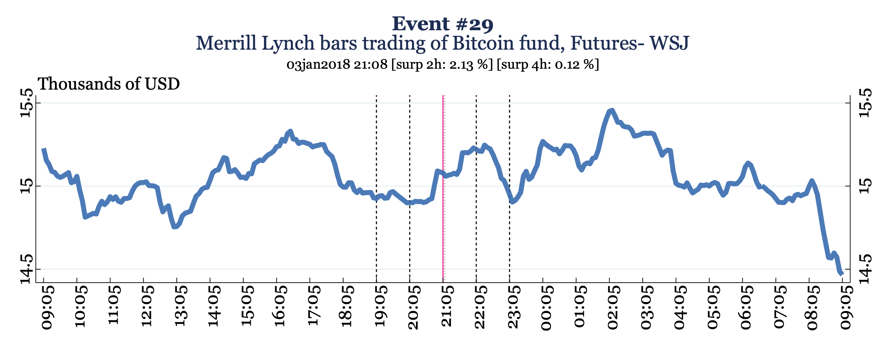
- News: The headline refers to January 3, 2018 Wall Street Journal reporting, later echoed by Reuters, that Merrill Lynch barred advisers and clients from trading the Grayscale Bitcoin Investment Trust and bitcoin futures products, a facially bearish institutional-restriction story for bitcoin sentiment. (scholarworks.indianapolis.iu.edu)
- Market impact: The PNG shows BTC log-returns of 2.13 in the 2-hour window and 0.12 in the 4-hour window, so bitcoin rises sharply around T₀ on the shorter horizon and remains only marginally positive over the broader four-hour window instead of selling off on the restrictive headline.
- Timing: On the 5-minute chart, bitcoin is roughly flat to soft before 21:08 GMT, jumps almost immediately after T₀, and posts the clearest upside burst during roughly the next hour before giving back much of that move later in the measured window.
- Confounds: Searched contemporaneous coverage did not surface a cleaner crypto-specific or macro catalyst within the immediate ±2 hour window that was more explicitly tied to the post-T₀ jump, although broader early-January trading remained extremely momentum-driven and volatile across the asset class. (coinmarketcap.com)
- Narrative fit: This event is best classified as Matched with weak certainty, because the observed move runs opposite to the obvious bearish interpretation of the news, yet the search did not identify a more convincing same-window alternative catalyst than bitcoin’s prevailing speculative rebound dynamics. (scholarworks.indianapolis.iu.edu)
- Sources: Reuters-attributed legal and academic references to the Merrill restriction story, Wall Street Journal search, CoinDesk search, Cointelegraph search, Bloomberg search, CNBC search, CoinMarketCap historical data, and broader macro and crypto day-of-news search. (scholarworks.indianapolis.iu.edu)
Event #30: SEC ETF withdrawal headline hits
Matched | Certainty: 3
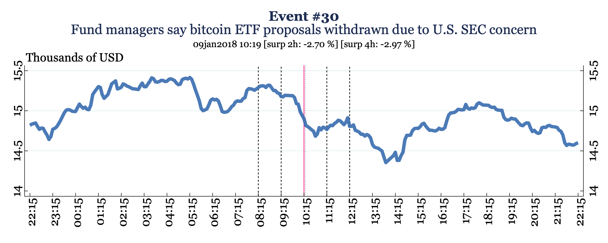
- News: The headline refers to January 9, 2018 reporting, carried by Reuters and echoed by CNBC, CoinDesk, and Cointelegraph, that several bitcoin-related ETF proposals were withdrawn after SEC staff raised concerns about liquidity and valuation of the underlying instruments. (cnbc.com)
- Market impact: The PNG shows BTC log-returns of -2.70 in the 2-hour window and -2.97 in the 4-hour window, so bitcoin falls materially across both measured windows in a direction that fits a bearish regulatory-access interpretation of the ETF withdrawal story.
- Timing: On the 5-minute chart, bitcoin is already easing modestly before 10:19 GMT, then sells off sharply almost immediately after T₀, with the steepest leg lower unfolding in roughly the next thirty to ninety minutes before remaining depressed across the broader four-hour window.
- Confounds: Searched contemporaneous crypto and financial coverage did not identify a cleaner crypto-specific or macro catalyst within roughly ±2 hours of 10:19 GMT that was more explicitly tied to the immediate drop, and January 9, 2018 also lacked a major scheduled U.S. macro release in that same window. (bls.gov)
- Narrative fit: This event is best classified as Matched with confident certainty, because the news is plainly bearish for near-term hopes of regulated bitcoin ETF access, the measured returns are negative in both windows, and the chart shows a prompt downside extension after the headline without a stronger same-window alternative explanation. (cnbc.com)
- Sources: Reuters-attributed CNBC report, CoinDesk, Cointelegraph, BLS release calendar, Reuters search, Bloomberg search, Wall Street Journal search, and broader macro and crypto day-of-news search. (cnbc.com)
Event #31: Korea ban scare meets whipsaw
No Move | Certainty: NA
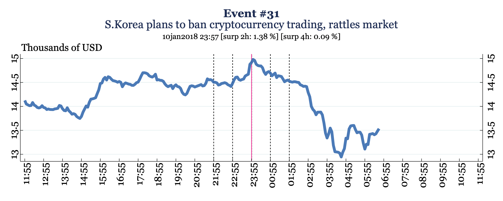
- News: The headline refers to January 10–11, 2018 Reuters reporting that South Korea’s justice minister said the government was preparing legislation to ban cryptocurrency trading on domestic exchanges, a plainly bearish regulatory shock that was widely echoed across financial and crypto media.
- Market impact: The PNG shows BTC log-returns of 1.38 in the 2-hour window and 0.09 in the 4-hour window, so bitcoin initially rises into and just after T₀ but is essentially flat on the broader four-hour measure rather than sustaining a clear downside response.
- Timing: On the 5-minute chart, bitcoin is already rallying before 23:57 GMT, spikes into a local high at or just before T₀, and then reverses lower within minutes, with the sharpest decline delayed until roughly two to four hours after the headline.
- Confounds: Searched contemporaneous coverage shows the South Korea ban story itself was the dominant crypto catalyst, while later reporting also emphasized partial rebound dynamics after the presidential office said the proposal was not finalized, and no cleaner same-window macro release was identified near 23:57 GMT.
- Narrative fit: This event is best classified as No Move, because the 4-hour return is only 0.09 and therefore below the 0.1% threshold in the decision rules, making the broader measured reaction effectively flat despite the visually dramatic intrawindow whipsaw on the chart.
- Sources: Reuters-attributed CNBC report, Reuters syndication, CoinDesk, Cointelegraph search, Bloomberg search, Wall Street Journal search, BLS release calendar, Federal Reserve calendar, and broader macro and crypto day-of-news search.
Event #32: Morgan Stanley futures clearing boost
Matched | Certainty: 2
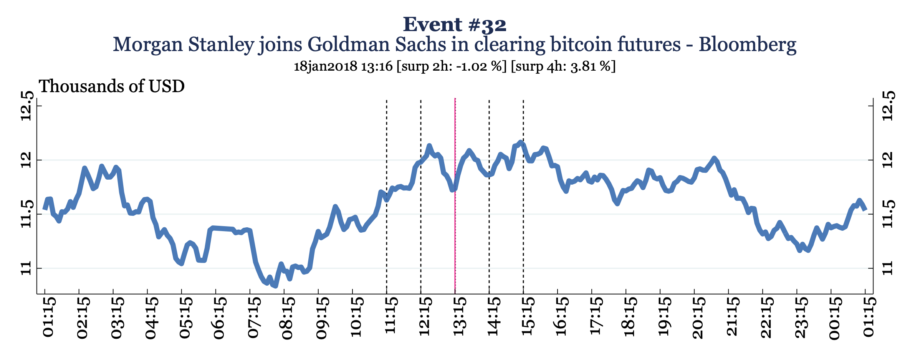
- News: The headline refers to Bloomberg reporting on January 18, 2018 that Morgan Stanley had joined Goldman Sachs in clearing bitcoin futures for institutional clients, a development widely framed in crypto coverage as another sign of growing Wall Street participation in bitcoin markets. (dealstreetasia.com)
- Market impact: The PNG shows BTC log-returns of -1.02 in the 2-hour window and 3.81 in the 4-hour window, so bitcoin initially dips around T₀ but posts a much larger gain over the broader four-hour window, leaving the fuller reaction directionally consistent with a supportive institutional-adoption narrative.
- Timing: On the 5-minute chart, bitcoin is already rebounding strongly before 13:16 GMT, slips immediately around T₀, and then resumes climbing within roughly the next thirty to ninety minutes, with the clearest net upside showing up in the later part of the four-hour window rather than on impact.
- Confounds: Contemporaneous reporting shows crypto markets were broadly rebounding on January 18 after the prior session’s washout, while the first Cboe bitcoin futures contract had just expired and ongoing Korea-and-China regulatory anxiety was still dominating market commentary, so alternative marketwide drivers were present but no cleaner same-window macro release was more explicitly tied to the post-T₀ rise. (cnbc.com)
- Narrative fit: This event is best classified as Matched with moderate certainty, because the four-hour window aligns with the positive institutional-access interpretation of the headline, but the move begins before T₀ and the immediate two-hour reaction is negative, which makes the causal link plausible yet far from clean. (dealstreetasia.com)
- Sources: Bloomberg snippet, DealStreetAsia, Cointelegraph, CNBC, Reuters-targeted search, CoinDesk search, Wall Street Journal search, Bloomberg search, and broader macro and crypto day-of-news search. (dealstreetasia.com)
Event #33: Facebook ad ban deepens selloff
Polluted | Certainty: NA
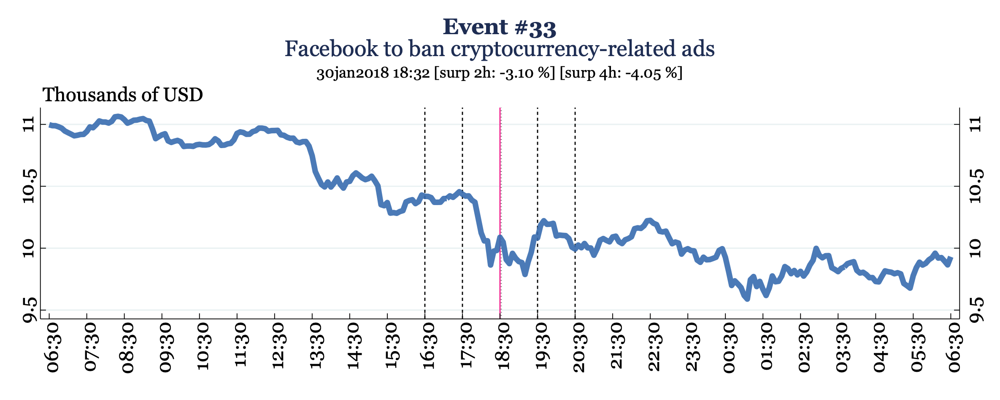
- News: The headline refers to Facebook’s January 30, 2018 policy announcement banning ads for cryptocurrencies, ICOs, and related products on grounds they were often linked to deceptive promotion, a bearish platform-access story first reported across financial and crypto outlets.
- Market impact: The PNG shows BTC log-returns of -3.10 in the 2-hour window and -4.05 in the 4-hour window, so bitcoin falls materially in both measured windows and the observed reaction is directionally consistent with a negative regulatory-and-sentiment shock.
- Timing: On the 5-minute chart, bitcoin is already sliding before 18:32 GMT, drops sharply into T₀, briefly bounces right around the timestamp, and then remains under pressure afterward, so the downside move is not cleanly initiated by the headline itself.
- Confounds: Contemporaneous reporting shows a broader January 30 crypto selloff was also tied to Bloomberg’s report that the CFTC had subpoenaed Bitfinex and Tether earlier that day, with later market coverage explicitly citing both that enforcement story and the Facebook ban as drivers of the decline.
- Narrative fit: This event is best classified as Polluted, because the Facebook ad-ban headline is plausibly bearish and aligns with the negative returns, but a same-day, near-window regulatory catalyst around Bitfinex and Tether was at least as important in contemporaneous explanations of bitcoin’s selloff.
- Sources: Bloomberg, CoinDesk, Cointelegraph, CNBC, Reuters-targeted search, Wall Street Journal-targeted search, Bloomberg-targeted search, U.S. macro calendar search, and broader macro and crypto day-of-news search.
Event #34: Korea no-ban reassurance lifts BTC
Matched | Certainty: 3
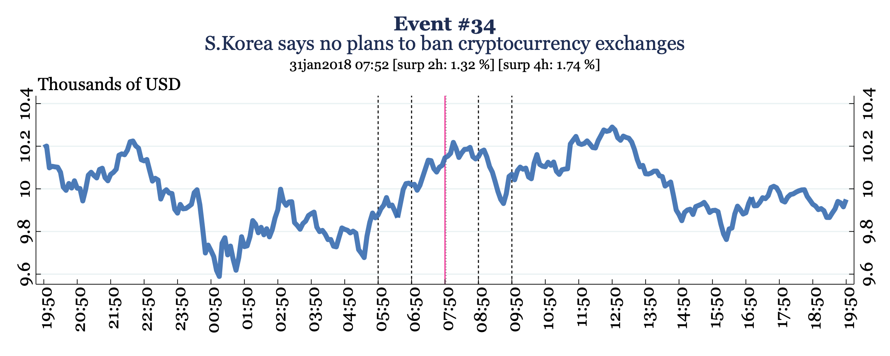
- News: The headline refers to Reuters reporting on January 31, 2018 that South Korea’s finance minister said the government had no intention of banning or suppressing cryptocurrency exchanges, a supportive regulatory clarification that was quickly echoed across crypto and financial media.
- Market impact: The PNG shows BTC log-returns of 1.32 in the 2-hour window and 1.74 in the 4-hour window, so bitcoin rises in both measured windows and the observed reaction is directionally consistent with relief from a feared exchange-ban scenario.
- Timing: On the 5-minute chart, bitcoin begins firming roughly one to two hours before 07:52 GMT, accelerates upward into and just after T₀, and reaches its clearest local post-headline high within about thirty to sixty minutes before later giving back part of the move.
- Confounds: Contemporaneous coverage also highlighted South Korea’s disclosure of roughly $600 million in illegal crypto-linked foreign-exchange trading and the rollout of real-name trading rules, but those elements were part of the same Korea regulatory news flow and no separate macro catalyst of similar prominence was identified within the immediate ±2 hour window.
- Narrative fit: This event is best classified as Matched with confident certainty, because both return windows are positive and align with a relief interpretation of the no-ban message, although the rally had already started before T₀, which prevents the timing from being fully clean or unambiguous.
- Sources: Reuters-targeted search, Cointelegraph, CoinDesk background coverage, CNBC background coverage, DealStreetAsia Reuters syndication, Federal Reserve calendar material, broader Reuters/Bloomberg/WSJ-targeted search, and broader macro and crypto day-of-news search.
Event #35: India anti-crypto vow rebounds BTC
Mismatch | Certainty: NA
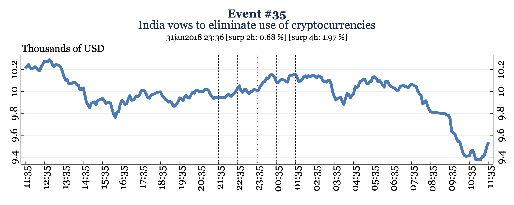
- News: The headline refers to Reuters reporting from New Delhi that Finance Minister Arun Jaitley said on February 1, 2018 India did not view cryptocurrencies as legal tender and would take steps to eliminate their use in illegitimate activity and payments systems.
- Market impact: The PNG shows BTC log-returns of 0.68 in the 2-hour window and 1.97 in the 4-hour window, so bitcoin rises in both measured windows even though the headline is an obviously negative regulatory signal for crypto sentiment.
- Timing: On the 5-minute chart, bitcoin is roughly flat into 23:36 GMT, starts pushing higher almost immediately afterward, and reaches its clearest local post-headline gains over roughly the next thirty to one hundred twenty minutes before fading later in the session.
- Confounds: Contemporaneous coverage indicates the wider market was already in a volatile regulatory slump and many reports tied India’s comments to later same-day or next-day weakness rather than this immediate bounce, but no separate macro release of similar prominence was identified within the narrow ±2 hour window.
- Narrative fit: This event is best classified as Mismatch, because contemporaneous reporting framed India’s statement as bearish and price-negative while the measured BTC reaction in both the two-hour and four-hour windows is positive, directly contradicting the headline’s obvious directional implication.
- Sources: Reuters syndication via Business Standard, Bloomberg, Cointelegraph, Forbes, Economic Times, CNBC search, Wall Street Journal-targeted search, Reuters-targeted search, and broader macro and crypto day-of-news search.
Event #36: India payments curb extends slide
Matched | Certainty: 2
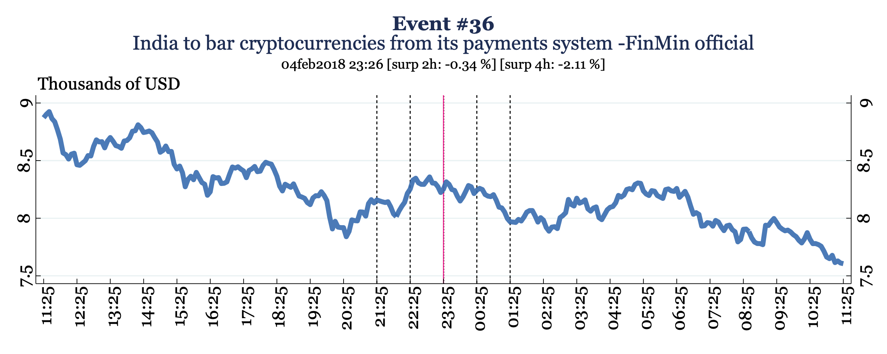
- News: The headline refers to Reuters reporting on February 4, 2018 that an Indian finance ministry official said cryptocurrencies would be barred from India’s payments system, extending the bearish policy message delivered in the February 1 budget speech and reinforcing a negative regulatory narrative for crypto sentiment.
- Market impact: The PNG shows BTC log-returns of -0.34 in the 2-hour window and -2.11 in the 4-hour window, so bitcoin is only modestly weaker in the narrow window but falls materially over the broader four-hour window, which is directionally consistent with a negative regulation-driven interpretation.
- Timing: On the 5-minute chart, bitcoin is choppy and roughly flat to slightly softer into 23:26 GMT, does not show an immediate sharp break at T₀, and only develops a clearer downward drift over the following one to three hours, making the timing alignment gradual rather than clean.
- Confounds: Contemporaneous crypto and financial coverage indicates the market was already in a wider early-February selloff tied to global regulatory fears, including South Korea and Facebook-related pressure, while no single separate macro release of similar prominence was identified within the immediate ±2 hour window.
- Narrative fit: This event is best classified as Matched with moderate certainty, because both measured returns are negative and consistent with the bearish headline, but the news largely reiterates India’s February 1 stance and arrives during an already fragile market backdrop, which weakens causal confidence.
- Sources: Reuters-targeted search, Forbes, CoinDesk background search, Cointelegraph background search, CNBC background coverage, Wall Street Journal-targeted search, Bloomberg-targeted search, and broader macro and crypto day-of-news search.
Event #37: Thailand bank crypto ban muted
Matched | Certainty: 2
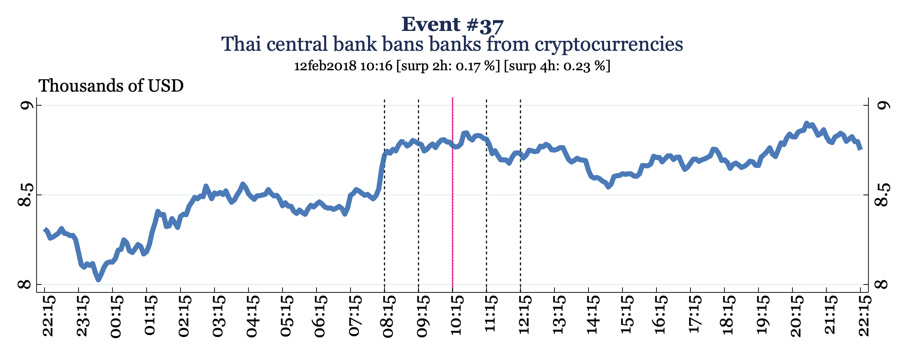
- News: The headline refers to Reuters reporting on February 12, 2018 that the Bank of Thailand told domestic financial institutions to avoid cryptocurrency-related activity, including trading, exchange involvement, client advice, and credit-card use for crypto purchases, a clearly restrictive banking-policy signal for the sector.
- Market impact: The PNG shows BTC log-returns of 0.17 in the 2-hour window and 0.23 in the 4-hour window, so bitcoin rises modestly in both measured windows and the move is small but directionally inconsistent with the headline’s obvious negative regulatory implication.
- Timing: On the 5-minute chart, bitcoin had already rallied sharply before 10:16 GMT, appears broadly flat to slightly softer immediately around T₀, and only resumes a choppy sideways-to-higher pattern later, so there is no clean post-headline impulse visible.
- Confounds: Contemporaneous market coverage indicated bitcoin was already rebounding on easing broader regulatory fears, especially around South Korea and the constructive tone from U.S. regulators the prior week, while no separate macro release of similar prominence was identified inside the immediate ±2 hour window.
- Narrative fit: This event is best classified as Matched with moderate certainty, because the measured move is above the no-move threshold yet very small, the price action around T₀ is muddied by an ongoing rebound, and the Thai banking restriction does not produce a clear standalone bearish reaction.
- Sources: Reuters-targeted search, Cointelegraph, DealStreetAsia, Bloomberg-targeted search, Wall Street Journal-targeted search, CNBC background search, CoinMarketCap historical snapshot, and broader macro and crypto day-of-news search.
Event #38: SEC exchange warning hits BTC
Matched | Certainty: 3
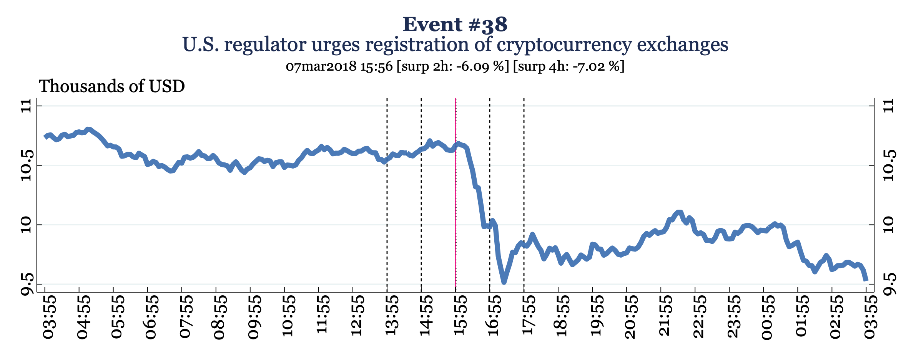
- News: The headline refers to Reuters reporting at 15:56 GMT on March 7, 2018 that the U.S. Securities and Exchange Commission said many cryptocurrency trading platforms should register as exchanges or alternative trading systems, a clearly negative U.S. regulatory signal for the sector.
- Market impact: The PNG shows BTC log-returns of -6.09 in the 2-hour window and -7.02 in the 4-hour window, so bitcoin falls sharply in both measured windows and the direction is strongly consistent with a bearish regulatory interpretation.
- Timing: On the 5-minute chart, bitcoin is broadly steady into 15:56 GMT, begins breaking lower within roughly five to ten minutes after T₀, and posts its steepest leg down during the following hour before only partially stabilising.
- Confounds: Contemporaneous coverage also mentioned broader regulatory pressure and some speculation around exchange-related fears such as Binance rumors, but no separate macro release or alternative event of similar prominence was identified inside the immediate ±2 hour window with clearer BTC price attribution than the SEC statement.
- Narrative fit: This event is best classified as Matched with confident certainty, because the headline is plainly bearish, the selloff begins almost immediately after T₀, and contemporaneous reporting explicitly linked bitcoin’s drop below $10,000 to the SEC’s exchange-registration warning.
- Sources: Reuters-targeted search, Investing.com Reuters syndication, CNBC, Cointelegraph, Bloomberg Law, Wall Street Journal-targeted search, Bloomberg-targeted search, and broader macro and crypto day-of-news search.
Event #39: Thailand regulation plan meets muted rise
Matched | Certainty: 2
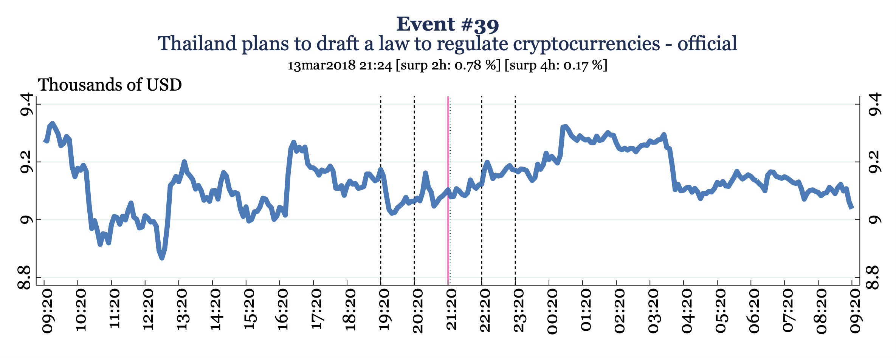
- News: The headline refers to Reuters reporting on March 13, 2018 that Thailand’s cabinet planned draft laws to regulate and tax cryptocurrencies, framing the move as formal oversight rather than an outright ban and therefore delivering a mixed but still regulation-focused policy signal for crypto markets.
- Market impact: The PNG shows BTC log-returns of 0.78 in the 2-hour window and 0.17 in the 4-hour window, so bitcoin rises modestly in both measured windows, with the stronger positive move concentrated in the narrower window and only a small net gain over four hours.
- Timing: On the 5-minute chart, bitcoin is choppy and roughly flat into 21:24 GMT, begins edging higher within about ten to twenty minutes after T₀, and continues a gradual post-headline climb for roughly two to three hours before later retracing part of the advance.
- Confounds: Contemporaneous coverage shows broader March 13–14 regulatory noise remained heavy, most notably Google’s cryptocurrency advertising ban reported around 00:00 EDT on March 14, 2018, but no separate macro release or alternative event of similar prominence was identified within the immediate ±2 hour window with clearer BTC price attribution than the Thailand story.
- Narrative fit: This event is best classified as Matched with moderate certainty, because both measured returns are positive and a regulation framework can plausibly be read as less hostile than a ban, yet the move is not large, the four-hour gain is small, and the policy signal is directionally ambiguous rather than cleanly bullish.
- Sources: Reuters-targeted search, Fox Business Reuters syndication, CoinDesk, Cointelegraph, CNBC, Bloomberg-targeted search, Wall Street Journal-targeted search, and broader macro and crypto day-of-news search.
Event #40: Google ad ban triggers selloff
Matched | Certainty: 3
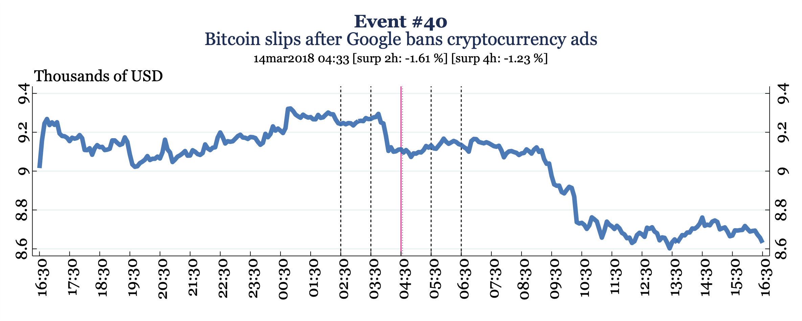
- News: The headline refers to Reuters reporting on March 14, 2018 that Google would ban cryptocurrency advertising from June, extending Big Tech’s crackdown on crypto promotion and delivering a plainly negative sentiment and adoption signal for the sector.
- Market impact: The PNG shows BTC log-returns of -1.61 in the 2-hour window and -1.23 in the 4-hour window, so bitcoin falls in both measured windows and the direction is clearly consistent with the headline’s bearish interpretation.
- Timing: On the 5-minute chart, bitcoin is relatively steady into 04:33 GMT, breaks lower roughly ten to fifteen minutes before T₀, and then remains soft to sideways immediately after the headline before a much larger secondary selloff develops later in the morning.
- Confounds: Contemporaneous reporting tied the day’s broader crypto weakness to regulatory pressure more generally, including discussion of U.S. oversight and later commentary about Mt. Gox-related selling, but no separate macro release or alternative event of similar prominence was identified inside the immediate ±2 hour window with clearer BTC price attribution than the Google story.
- Narrative fit: This event is best classified as Matched with confident certainty, because both measured returns are negative and same-signed, contemporaneous financial and crypto coverage linked bitcoin’s weakness to the ad-ban news, but the price break begins slightly before T₀ and the largest leg lower occurs well after the initial window.
- Sources: Reuters-targeted search, Investing.com Reuters syndication, Bloomberg, CNBC, CoinDesk, Cointelegraph, Forbes, Wall Street Journal-targeted search, and broader macro and crypto day-of-news search.
Event #41: Coinfloor futures fail to lift BTC
Polluted | Certainty: NA
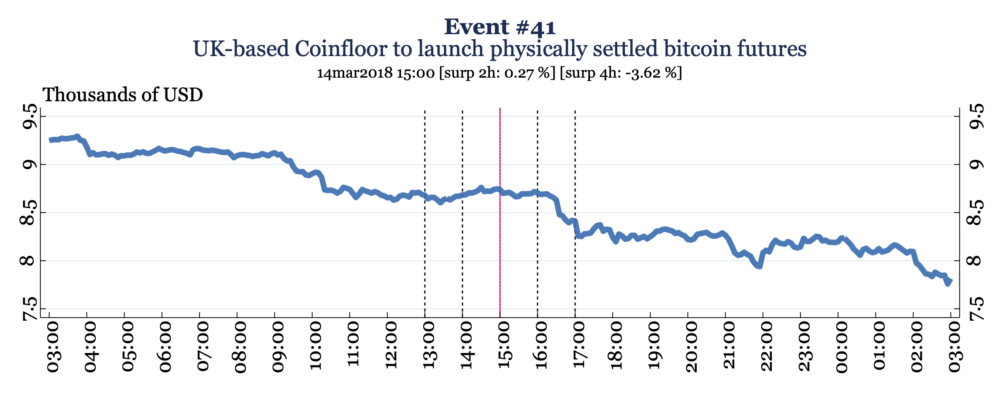
- News: The headline refers to Reuters reporting at 15:00 GMT on March 14, 2018 that UK exchange operator Coinfloor would launch physically settled bitcoin futures, a potentially constructive market-structure development because it pointed to institutional-style product expansion beyond cash-settled contracts.
- Market impact: The PNG shows BTC log-returns of 0.27 in the 2-hour window and -3.62 in the 4-hour window, so bitcoin is only marginally positive in the narrow window but declines materially across the broader event window, leaving the overall move inconsistent with a straightforward bullish reading.
- Timing: On the 5-minute chart, bitcoin is choppy and roughly flat into 15:00 GMT, shows no immediate decisive upside after T₀, and then begins a clear leg lower about ninety to one hundred twenty minutes later, with the sharpest selling concentrated after roughly 16:30 GMT.
- Confounds: Contemporaneous reporting across financial and crypto outlets tied March 14’s broader bitcoin weakness mainly to Google’s cryptocurrency advertising ban announced earlier that day and to lingering Mt. Gox selloff fears, while U.S. retail sales data also hit at 12:30 GMT, so alternative drivers inside the broader four-hour window were more prominent than the Coinfloor story.
- Narrative fit: This event is best classified as Polluted, because the Reuters headline is mildly bullish yet produces no clear standalone upside response near T₀, and the eventual four-hour decline is more plausibly explained by the day’s dominant bearish sentiment around Google’s ad ban and Mt. Gox-related selling pressure.
- Sources: Reuters-targeted search, CoinDesk, Cointelegraph, Bloomberg-targeted search, CNBC-targeted search, Wall Street Journal-targeted search, Bloomberg macro search, and broader macro and crypto day-of-news search.
Matched | Certainty: 3
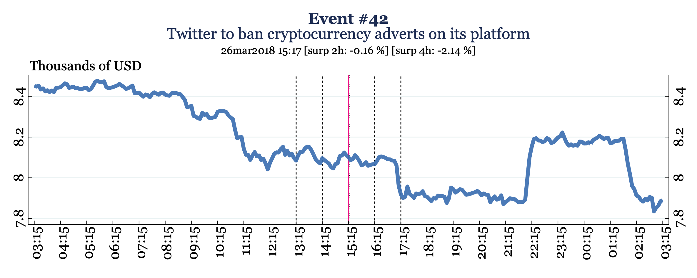
- News: The headline refers to Reuters reporting on March 26, 2018 that Twitter would ban cryptocurrency advertising on its platform, extending the earlier Facebook and Google clampdown and delivering a clearly negative sentiment signal for crypto promotion and retail participation.
- Market impact: The PNG shows BTC log-returns of -0.16 in the 2-hour window and -2.14 in the 4-hour window, so bitcoin is only slightly lower in the narrow window but declines meaningfully across the broader event window, consistent overall with a bearish interpretation.
- Timing: On the 5-minute chart, bitcoin is already drifting lower into 15:17 GMT, shows no immediate rebound after T₀, and then breaks decisively downward about ninety to one hundred twenty minutes later, with the sharpest selloff clustered near 17:00 GMT.
- Confounds: Contemporaneous financial and crypto coverage on March 26 explicitly linked the day’s bitcoin weakness to Twitter’s advertising ban, while broader trade-war anxiety remained background macro noise but no separate crypto or macro catalyst of similar prominence was identified within the immediate ±2 hour window with clearer BTC price attribution.
- Narrative fit: This event is best classified as Matched with confident certainty, because the headline is plainly bearish, the larger four-hour move is clearly negative, and contemporaneous reporting tied bitcoin’s drop below $8,000 to the Twitter decision even though the steepest leg lower followed with some delay.
- Sources: Reuters-targeted search, CNBC, Bloomberg, CoinDesk, Cointelegraph, Bloomberg Law, Wall Street Journal-targeted search, and broader macro and crypto day-of-news search.
Event #43: DOJ probe sparks brief rebound
Matched | Certainty: 1
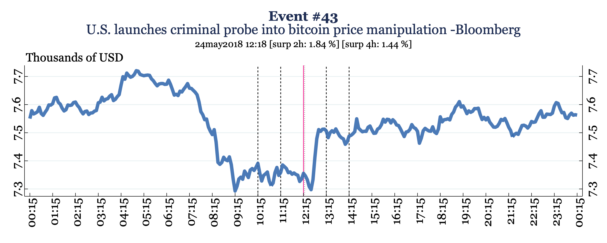
- News: The headline refers to Bloomberg reporting on May 24, 2018 that the U.S. Justice Department had opened a criminal probe into possible bitcoin price manipulation alongside the CFTC, a plainly negative regulatory-surveillance development for crypto market sentiment. Bloomberg
- Market impact: The PNG shows BTC log-returns of 1.84 in the 2-hour window and 1.44 in the 4-hour window, so bitcoin rises in both measured windows even though the headline itself reads as bearish on its face. CNBC
- Timing: On the 5-minute chart, bitcoin is already under pressure before 12:18 GMT, prints its local low almost exactly at T₀, and then snaps sharply higher within roughly five to ten minutes after the headline before stabilizing. CoinDesk
- Confounds: Contemporaneous reporting shows broader risk sentiment was also unsettled on May 24 by President Donald Trump’s cancellation of the planned North Korea summit and routine U.S. data releases, but no separate crypto-specific catalyst of similar prominence was identified inside the immediate ±2 hour window with clearer bitcoin price attribution than the DOJ-probe story. CNBC
- Narrative fit: This event is best classified as Matched with weak certainty, because the measured move is opposite to the obvious bearish interpretation yet the reversal begins immediately after T₀ and contemporaneous coverage described bitcoin as tumbling first and then rebounding as the market absorbed the Bloomberg report. CNBC
- Sources: Reuters-targeted search, Bloomberg, CNBC, CoinDesk, Cointelegraph, Wall Street Journal-targeted search, Axios, and broader macro and crypto day-of-news search. Bloomberg
Event #44: VanEck ETF filing boosts bitcoin
Matched | Certainty: 3
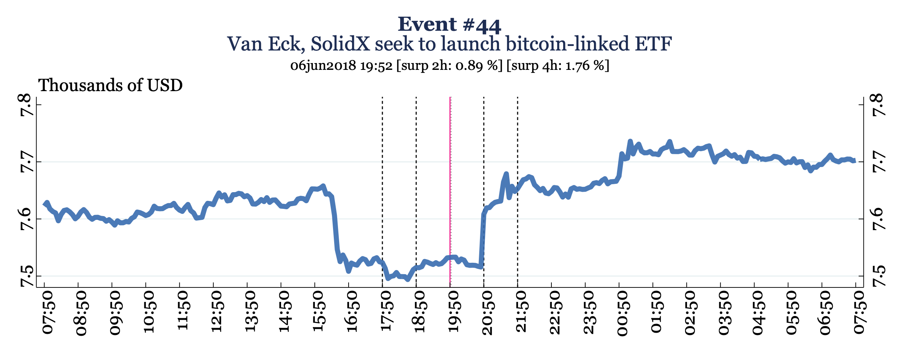
- News: The headline refers to Reuters reporting on June 6, 2018 that VanEck and SolidX were seeking to launch a bitcoin-linked ETF, reviving hopes for a regulated institutional investment vehicle tied directly to bitcoin exposure. CNBC
- Market impact: The PNG shows BTC log-returns of 0.89 in the 2-hour window and 1.76 in the 4-hour window, so bitcoin rises in both measured windows and the broader move is directionally consistent with a bullish ETF-access narrative. CoinDesk
- Timing: On the 5-minute chart, bitcoin is soft before 19:52 GMT, bases around T₀, and then begins a clear upward leg within roughly fifty to sixty minutes after the headline, with the strongest continuation developing through late evening trading. Bloomberg
- Confounds: Contemporaneous searches across crypto and financial outlets did not identify another crypto-specific or macro catalyst inside the immediate ±2 hour window with clearer contemporaneous bitcoin price attribution than the VanEck-SolidX ETF filing story. CNBC
- Narrative fit: This event is best classified as Matched with confident certainty, because the headline is straightforwardly supportive for bitcoin sentiment, both event windows are positive, and the chart shows a sustained upside move emerging soon after T₀ without a stronger competing explanation. CoinDesk
- Sources: Reuters-targeted search, CNBC, Bloomberg, CoinDesk, Cointelegraph, SEC filing timeline material, Wall Street Journal-targeted search, and broader macro and crypto day-of-news search. CoinDesk
Event #45: Apple mining ban barely moves BTC
Matched | Certainty: 2
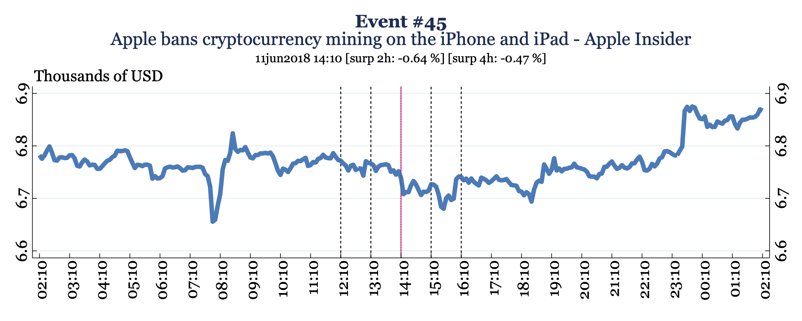
- News: The headline refers to AppleInsider’s June 11, 2018 report that Apple had updated App Store review guidelines to prohibit on-device cryptocurrency mining on iPhones and iPads, a modestly negative adoption signal for consumer-facing crypto activity rather than a core bitcoin-market shock. CNBC
- Market impact: The PNG shows BTC log-returns of -0.64 in the 2-hour window and -0.47 in the 4-hour window, so bitcoin drifts lower in both measured windows, but the magnitude is modest relative to the much larger selloff that had already unfolded earlier in the day. CoinDesk
- Timing: On the 5-minute chart, bitcoin is already soft into 14:10 GMT, slips almost immediately after T₀, and continues grinding lower for roughly sixty to ninety minutes before stabilizing and later reversing higher into late U.S. trading. CNBC
- Confounds: Contemporaneous financial and crypto coverage on June 11 overwhelmingly attributed the day’s broader bitcoin weakness to the weekend Coinrail hack and related risk aversion, while the earlier Wall Street Journal manipulation-investigation report also remained in the background, making those pre-existing bearish forces more prominent confounds than the Apple guideline update itself. CNBC
- Narrative fit: This event is best classified as Matched with moderate certainty, because the headline is directionally bearish and both event windows are negative, yet the post-T₀ move is small and occurred within a session already dominated by separate negative crypto news that likely explains more of bitcoin’s weakness. CoinDesk
- Sources: Reuters-targeted search, Bloomberg-targeted search, Wall Street Journal-targeted search, CNBC, CoinDesk, Cointelegraph-targeted search, AppleInsider-follow-on coverage, and broader macro and crypto day-of-news search. CNBC
Event #46: Wells Fargo card ban dents sentiment
Matched | Certainty: 2
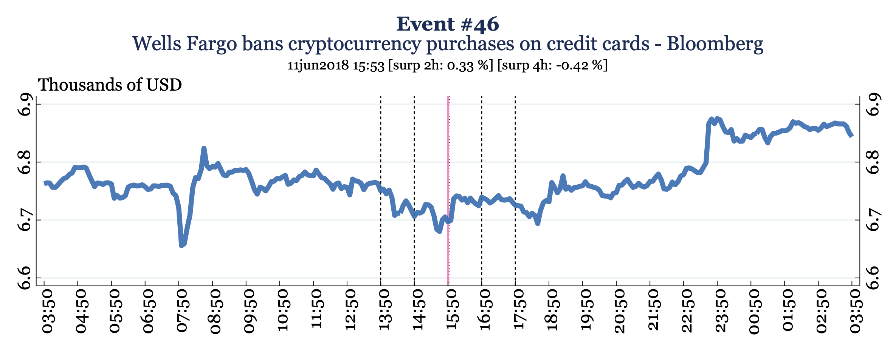
- News: The headline refers to Bloomberg’s June 11, 2018 report that Wells Fargo had begun blocking cryptocurrency purchases on its credit cards, extending a U.S. banking restriction that was mildly negative for retail crypto access and sentiment rather than a major structural bitcoin shock. Bloomberg
- Market impact: The PNG shows BTC log-returns of -0.33 in the 2-hour window and -0.42 in the 4-hour window, so bitcoin falls in both measured windows, but the decline is modest relative to the much larger selloff already underway earlier on June 11. CoinDesk
- Timing: On the 5-minute chart, bitcoin is already drifting lower into 15:53 GMT, makes a local low essentially at T₀, and then stabilizes quickly with only choppy sideways-to-slightly-lower action over the next one to two hours before a later evening rebound. Bloomberg
- Confounds: Contemporaneous crypto and financial coverage on June 11 continued to attribute the day’s broader bitcoin weakness primarily to the weekend Coinrail hack and related risk aversion, making that pre-existing bearish catalyst a meaningful background confound around this smaller banking-access headline. CNBC
- Narrative fit: This event is best classified as Matched with moderate certainty, because the headline is directionally bearish and both event windows are negative, yet the move is small, begins before T₀, and sits within a session whose dominant selling narrative was still the Coinrail-led crypto rout. CoinDesk
- Sources: Reuters-targeted search, Bloomberg, CNBC, CoinDesk, Cointelegraph-targeted search, Wall Street Journal-targeted search, Axios, CNN, Guardian, and broader macro and crypto day-of-news search. Bloomberg
Matched | Certainty: 3
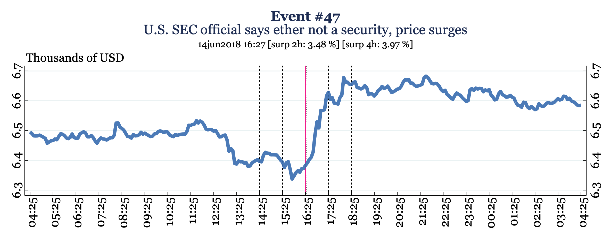
- News: The headline refers to June 14, 2018 coverage of SEC Corporation Finance Director William Hinman saying at Yahoo Finance’s All Markets Summit that current offers and sales of ether were not securities transactions, a clearly supportive U.S. regulatory signal for the broader crypto market. Axios
- Market impact: The PNG shows BTC log-returns of 3.48 in the 2-hour window and 3.97 in the 4-hour window, so bitcoin rallies strongly across both measured windows in a direction consistent with a relief-driven crypto repricing after the remarks. Cointelegraph
- Timing: On the 5-minute chart, bitcoin is weak into 16:27 GMT, bottoms around T₀, and then begins a sharp advance within roughly ten to twenty minutes, with the steepest gains concentrated through the following hour and sustained strength afterward. Cointelegraph
- Confounds: Broader same-day coverage indicates some crypto rebound dynamics were also aided by relief after an earlier June slump and discussion of bitcoin futures-expiry effects, but no comparably important macro or crypto headline within the immediate ±2 hour window was more explicitly tied to bitcoin’s sharp post-T₀ surge. Cointelegraph
- Narrative fit: This event is best classified as Matched with confident certainty, because the headline is straightforwardly bullish for crypto regulation, both event windows are strongly positive, and the chart shows a rapid upside reversal soon after T₀ without a stronger competing catalyst. CoinDesk
- Sources: Reuters-targeted search, Bloomberg-targeted search, Wall Street Journal-targeted search, CNBC, CoinDesk, Cointelegraph, Axios, legal commentary on Hinman’s remarks, and broader macro and crypto day-of-news search. Axios
Event #48: Facebook ad ban eased
No Move | Certainty: NA
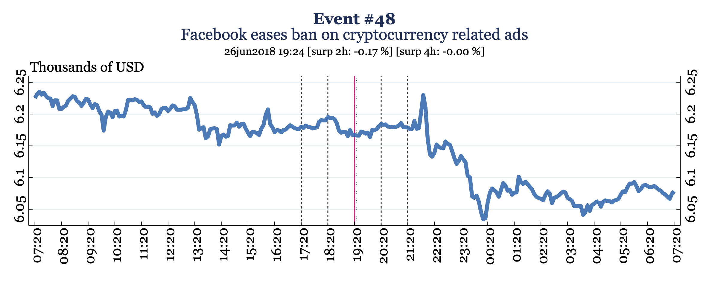
- News: The headline refers to Facebook’s June 26, 2018 policy update allowing some pre-approved cryptocurrency ads while continuing to prohibit ICO and binary-options promotions, a modestly positive platform-policy change first reported in contemporaneous tech and crypto coverage. CoinDesk
- Market impact: The PNG shows BTC log-returns of -0.17 in the 2-hour window and -0.00 in the 4-hour window, so bitcoin is essentially flat across the full event window and only marginally negative in the narrower one, failing the project’s minimum movement threshold. Bloomberg
- Timing: On the 5-minute chart, bitcoin is broadly range-bound into and immediately after 19:24 GMT, with no clear upside impulse following T₀; the more noticeable move is a brief spike and then a sharp selloff that begins roughly two hours later, outside a clean immediate reaction pattern. CoinDesk
- Confounds: Day-of market coverage shows crypto remained under pressure after the prior weekend’s break below $6,000 and the earlier June exchange-hack-driven selloff, creating bearish background conditions, but no comparably important catalyst within the immediate ±2 hour window was clearly tied to a distinct BTC move. Bloomberg
- Narrative fit: This event is best classified as No Move, because a superficially bullish headline did not produce a measurable bitcoin response in either available window, and the chart shows mostly sideways trading around T₀ rather than a meaningful post-announcement repricing. Axios
- Sources: Reuters-targeted search, Bloomberg, Wall Street Journal-targeted search, CoinDesk, Cointelegraph-targeted search, Axios, CNBC-targeted search, and broader macro and crypto day-of-news search. CoinDesk
Event #49: SEC rejects Winklevoss ETF
Matched | Certainty: 4
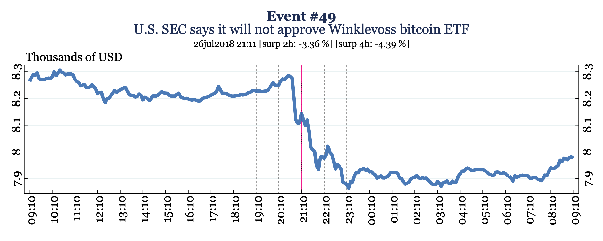
- News: The headline refers to the U.S. SEC’s July 26, 2018 decision not to approve the Winklevoss twins’ bitcoin ETF proposal, a plainly bearish regulatory surprise for a market that had been pricing in at least some ETF-related optimism. CNBC
- Market impact: The PNG shows BTC log-returns of -3.36 in the 2-hour window and -4.39 in the 4-hour window, so bitcoin sells off sharply across both measured windows in a direction fully consistent with the negative ETF ruling. CoinDesk
- Timing: On the 5-minute chart, bitcoin is firm into 21:11 GMT, then breaks lower almost immediately around T₀, with the steepest leg down unfolding in the next hour and weakness extending through the remainder of the four-hour window. CoinDesk
- Confounds: Same-day macro coverage includes the ECB’s July 26 policy decision earlier in the day, but no comparably important crypto or macro catalyst within the immediate ±2 hour window was more explicitly tied to bitcoin’s sharp post-T₀ decline than the SEC ETF rejection itself. CNBC
- Narrative fit: This event is best classified as Matched with unambiguous certainty, because the headline is directly bearish for bitcoin adoption expectations, both event windows are strongly negative, and the chart shows an immediate, sustained selloff with no stronger competing explanation. CNBC
- Sources: Reuters-targeted search, Bloomberg-targeted search, Wall Street Journal-targeted search, CNBC, CoinDesk, Cointelegraph, Axios, Forbes, and broader macro and crypto day-of-news search. CoinDesk
Event #50: SEC reviews ETF rejections
Matched | Certainty: 3
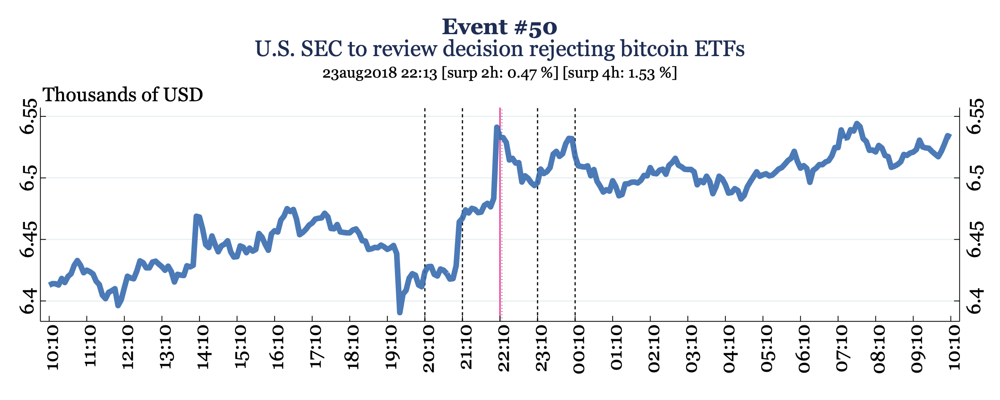
- News: The headline refers to the U.S. SEC’s August 23, 2018 statement that it would review staff-level orders rejecting nine bitcoin ETF proposals, a modestly bullish regulatory reversal first reported contemporaneously by Reuters and then amplified across crypto media. CoinDesk
- Market impact: The PNG shows BTC log-returns of 0.47 in the 2-hour window and 1.53 in the 4-hour window, so bitcoin rises in both measured windows, with the broader four-hour reaction showing the clearer positive repricing around the ETF-review headline. Reuters via Investing.com
- Timing: On the 5-minute chart, bitcoin had already begun recovering roughly an hour before 22:13 GMT, but the sharpest upward leg occurs immediately around T₀ and is followed by choppy consolidation at higher levels rather than a full reversal. CoinDesk
- Confounds: Same-day coverage shows markets were also looking ahead to Jerome Powell’s Jackson Hole speech on August 24, but no comparably important macro or crypto catalyst within the immediate ±2 hour window was more explicitly tied to bitcoin’s evening spike than the SEC review announcement. Axios
- Narrative fit: This event is best classified as Matched with confident certainty, because the review decision softened the prior day’s ETF rejection narrative, both event windows are positive, and the most abrupt upside extension occurs right around T₀ despite some pre-announcement recovery already being underway. Cointelegraph
- Sources: Reuters-targeted search, Bloomberg-targeted search, Wall Street Journal-targeted search, CNBC-targeted search, CoinDesk, Cointelegraph, Axios, Investing.com’s Reuters pickup, and broader macro and crypto day-of-news search. Reuters via Investing.com
Event #51: Goldman shelves crypto desk
Matched | Certainty: 4
- News: The headline refers to Business Insider’s September 5, 2018 report that Goldman Sachs was dropping near-term plans for a dedicated bitcoin trading desk, a plainly bearish institutional-adoption signal that was rapidly echoed across financial and crypto media. CNBC
- Market impact: The PNG shows BTC log-returns of -5.08 in the 2-hour window and -5.34 in the 4-hour window, so bitcoin sells off sharply in both windows and the decline is directionally consistent with the negative Goldman headline. Bloomberg
- Timing: On the 5-minute chart, bitcoin is stable into the event, then breaks lower just before 10:00 GMT and extends the selloff through and immediately after the 10:49 GMT headline, indicating a fast and sustained repricing around T₀. CNBC
- Confounds: Broader risk sentiment was already fragile in early September 2018, but the day-of reporting reviewed here does not identify a comparably important crypto-specific or macro catalyst within the immediate ±2 hour window that was more directly tied to bitcoin’s plunge than the Goldman report. Axios
- Narrative fit: This event is best classified as Matched with unambiguous certainty, because the news was clearly bearish for expected Wall Street participation in crypto, both event windows are strongly negative, and contemporaneous coverage explicitly linked the drop to the Goldman story. Cointelegraph
- Sources: Reuters-targeted search, Bloomberg-targeted search, Wall Street Journal-targeted search, CNBC, Bloomberg, Cointelegraph, Axios, TechCrunch, The Block, and broader macro and crypto day-of-news search. Bloomberg
Event #52: Judge extends crypto oversight
Matched | Certainty: 2
- News: The headline refers to the September 11, 2018 court ruling in the Zaslavskiy case that U.S. securities laws could apply to certain cryptocurrency offerings, a regulatory development reported by Reuters and quickly echoed across crypto and business media. CoinDesk
- Market impact: The PNG shows BTC log-returns of 0.18 in the 2-hour window and 0.21 in the 4-hour window, so bitcoin edges higher in both windows, but the measured move is small and looks more like a modest rebound than a forceful repricing. CoinMarketCap
- Timing: On the 5-minute chart, bitcoin is weak into the 18:43 GMT headline, bottoms shortly before T₀, and then recovers gradually after the event, with the clearer upside extension developing over the following one to two hours rather than immediately at release. Bloomberg
- Confounds: Same-day coverage shows an already fragile crypto market and ongoing regulatory scrutiny, including SEC-related enforcement headlines earlier on September 11, but no comparably important macro or crypto catalyst within the immediate ±2 hour window was more explicitly tied to bitcoin’s modest post-T₀ rise than this ruling. CNBC
- Narrative fit: This event is best classified as Matched with moderate certainty, because the regulatory ruling is mildly bearish or at least cautionary on its face, yet bitcoin posts small positive returns in both windows and the post-T₀ rebound lacks the immediacy and magnitude needed for a higher-confidence causal link. Cointelegraph
- Sources: Reuters-targeted search, Bloomberg-targeted search, Wall Street Journal-targeted search, CNBC, CoinDesk, Cointelegraph, The Block, CoinMarketCap, and broader macro and crypto day-of-news search. Cointelegraph
Event #53: Morgan Stanley eyes bitcoin swaps
Matched | Certainty: 3
- News: The headline refers to Bloomberg’s September 13, 2018 report that Morgan Stanley was preparing to offer clients bitcoin price-return swaps, a constructive institutional-adoption signal that was quickly amplified across mainstream and crypto media. Bloomberg
- Market impact: The PNG shows BTC log-returns of 0.54 in the 2-hour window and 1.08 in the 4-hour window, so bitcoin rises in both windows and the larger 4-hour gain suggests a positive move that broadened after the headline. CNBC
- Timing: On the 5-minute chart, bitcoin is already recovering before the 12:40 GMT headline, dips briefly at T₀, and then extends higher within roughly 30 to 60 minutes, with the clearest upside continuation unfolding during the following two hours. Cointelegraph
- Confounds: The main nearby confound is Turkey’s surprise central-bank rate hike earlier that day, which improved broader risk sentiment, but the reviewed coverage does not identify a comparably direct crypto-specific catalyst within the immediate ±2 hour window that was more explicitly tied to bitcoin’s post-T₀ advance than the Morgan Stanley story. CNBC
- Narrative fit: This event is best classified as Matched with confident certainty, because institutional-access news is directionally bullish, both event windows are positive, and the post-T₀ leg higher is visible even though part of the rebound was already underway before the announcement. Cointelegraph
- Sources: Reuters-targeted search, Bloomberg-targeted search, Wall Street Journal-targeted search, CNBC, Bloomberg, Cointelegraph, CoinDesk-targeted search, Axios, and broader macro and crypto day-of-news search. Bloomberg
Event #54: Google relaxes crypto ad ban
Polluted | Certainty: NA
- News: The headline refers to CNBC’s September 25, 2018 report that Google was ending its sweeping cryptocurrency advertising ban by permitting certified exchanges to advertise in the U.S. and Japan, a modestly constructive policy reversal for the sector. CNBC
- Market impact: The PNG shows BTC log-returns of -0.04 in the 2-hour window and -0.40 in the 4-hour window, so bitcoin is essentially flat in the shorter window and modestly lower across the broader event window despite the headline’s mildly positive read-through. CoinMarketCap
- Timing: On the 5-minute chart, bitcoin is already drifting lower before the 15:27 GMT headline, slips further immediately after T₀, and then sees its sharpest downdraft roughly one to two hours later rather than reacting with any clear bullish impulse. CNBC
- Confounds: Same-day reporting points to a broadly weak and low-conviction September crypto market, and because the reviewed Reuters, Bloomberg, WSJ-targeted, and crypto-source searches do not isolate this headline as the clear driver of the later decline, the surrounding price action appears contaminated by broader market drift and background sentiment. CoinDesk
- Narrative fit: This event is best classified as Polluted, because the news itself is directionally positive, yet bitcoin does not rally, the 2-hour move is effectively nil, and the later 4-hour weakness is more plausibly part of ambient market softness than a direct response to Google’s policy change. CNBC
- Sources: Reuters-targeted search, Bloomberg-targeted search, Wall Street Journal-targeted search, CNBC, CoinDesk-targeted search, Cointelegraph-targeted search, The Block-targeted search, CoinMarketCap, and broader macro and crypto day-of-news search. CNBC
Event #55: Japan grants crypto self-regulation
Matched | Certainty: 2
- News: The headline refers to Reuters’ October 24, 2018 report that Japan’s Financial Services Agency granted the Japan Virtual Currency Exchange Association formal self-regulatory status, a modestly constructive signal for the country’s crypto industry after months of post-Coincheck scrutiny. CoinDesk
- Market impact: The PNG shows BTC log-returns of -0.15 in the 2-hour window and 0.44 in the 4-hour window, so bitcoin is slightly lower in the narrower window but modestly higher across the broader event window, indicating only a mild delayed positive response. CoinDesk
- Timing: On the 5-minute chart, the major upward burst occurs roughly 90 to 120 minutes before the 06:28 GMT headline, while post-T₀ trading is comparatively flat to soft, leaving no immediate rally that cleanly begins at the announcement time. CoinDesk
- Confounds: Reviewed Reuters-, Bloomberg-, and WSJ-targeted searches plus crypto coverage do not surface a single stronger crypto-specific catalyst inside the immediate ±2 hour window, although the day sat within an unusually low-volatility and low-conviction bitcoin regime that makes attribution inherently noisy. CNBC
- Narrative fit: This event is best classified as Matched with moderate certainty, because the regulatory recognition is directionally supportive and the 4-hour window is positive, but the pre-T₀ price spike and weak immediate reaction materially reduce confidence in a direct causal link. CoinDesk
- Sources: Reuters-targeted search, Bloomberg-targeted search, Wall Street Journal-targeted search, CoinDesk, Cointelegraph-targeted search, CNBC, Forbes-targeted search, Axios, and broader macro and crypto day-of-news search. CoinDesk
Event #56: Quadriga founder death freezes funds
Matched | Certainty: 2
- News: The headline refers to Reuters’ February 5, 2019 report on QuadrigaCX’s crisis after founder Gerald Cotten’s death allegedly left about C$180 million in client crypto inaccessible, a negative industry-trust story but one centered on a single Canadian exchange rather than bitcoin’s network itself. Reuters
- Market impact: The PNG shows BTC log-returns of 0.67 in the 2-hour window and 0.24 in the 4-hour window, so bitcoin is modestly higher in both windows despite the headline’s superficially bearish implications for confidence in centralized crypto venues. CoinDesk
- Timing: On the 5-minute chart, bitcoin jumps sharply roughly 10 to 15 minutes before the 17:02 GMT T₀, then holds most of that gain and trends sideways to slightly higher afterward, implying the move was near-contemporaneous but not cleanly initiated by the headline itself. CoinDesk
- Confounds: Reviewed Reuters-, Bloomberg-, WSJ-targeted, CoinDesk-, Cointelegraph-, and The Block-targeted searches do not surface a single stronger crypto-specific or macro catalyst explicitly tied to bitcoin inside the immediate ±2 hour window, although the day remained embedded in a broader risk-sensitive early-2019 macro backdrop. CoinDesk
- Narrative fit: This event is best classified as Matched with moderate certainty, because both event windows are positive and uncontaminated by a clearer alternative catalyst, yet the price reaction runs opposite the obvious negative interpretation and part of the move begins just before T₀, limiting confidence in direct causality. Reuters
- Sources: Reuters-targeted search, Bloomberg-targeted search, Wall Street Journal-targeted search, CoinDesk, Cointelegraph-targeted search, The Block-targeted search, CNBC, and broader macro and crypto day-of-news search. Reuters
Event #57: China mining ban threat
Matched | Certainty: 3
- News: The headline refers to Reuters-backed reporting on April 9, 2019 that China’s state planner proposed classifying cryptocurrency mining as an industry to be eliminated, a clearly negative regulatory signal for a sector still central to bitcoin’s production ecosystem. Bloomberg
- Market impact: The PNG shows BTC log-returns of -0.67 in the 2-hour window and -0.86 in the 4-hour window, so bitcoin is lower in both event windows and the broader four-hour move reinforces the bearish read-through from the mining-ban headline. The Block
- Timing: On the 5-minute chart, bitcoin is already drifting lower before the 04:51 GMT T₀, but the sharpest downdraft and local trough arrive within roughly 20 to 40 minutes after the headline, which is close enough to support event-time alignment. The Block
- Confounds: Reviewed Reuters-, Bloomberg-, WSJ-, CoinDesk-, Cointelegraph-, and The Block-targeted searches do not surface a stronger macro or crypto-specific catalyst explicitly tied to bitcoin inside the immediate ±2 hour window, though the market was still digesting the large early-April breakout and broader post-rally positioning remained a background influence. Axios
- Narrative fit: This event is best classified as Matched with confident certainty, because the news is unambiguously bearish, both the 2-hour and 4-hour windows are negative, and the most notable post-T₀ price leg down occurs shortly after the report without a clearer competing explanation. Bloomberg
- Sources: Reuters-targeted search, Bloomberg-targeted search, Wall Street Journal-targeted search, CoinDesk-targeted search, Cointelegraph-targeted search, The Block, Axios, CNBC-targeted search, and broader macro and crypto day-of-news search. Bloomberg
Event #58: Bakkt futures test date
Matched | Certainty: 2
- News: The headline refers to June 13, 2019 reporting that ICE-backed Bakkt said it would begin user acceptance testing for its physically delivered bitcoin futures on July 22, a directionally supportive institutional-market infrastructure update for bitcoin. CoinDesk
- Market impact: The PNG shows BTC log-returns of 0.11 in the 2-hour window and 0.41 in the 4-hour window, so bitcoin is only marginally higher around the release but posts a somewhat clearer positive move across the broader four-hour event window. CoinDesk
- Timing: On the 5-minute chart, bitcoin is already rising before the 16:03 GMT T₀, trades roughly sideways immediately after the headline, and only begins its more visible upward leg around two hours later, weakening clean event-time attribution. CoinDesk
- Confounds: Reviewed Reuters-, Bloomberg-, WSJ-, CoinDesk-, Cointelegraph-, and The Block-targeted searches do not surface a single stronger crypto-specific or macro catalyst explicitly tied to bitcoin within the immediate ±2 hour window, though the session still sat within a broader June 2019 risk-on and institutional-adoption narrative. The Block
- Narrative fit: This event is best classified as Matched with moderate certainty, because the headline is bullish and both event windows are positive, yet the immediate reaction is weak, part of the move predates T₀, and the stronger advance emerges late enough to leave causality uncertain. CoinDesk
- Sources: Reuters-targeted search, Bloomberg-targeted search, Wall Street Journal-targeted search, CoinDesk, Cointelegraph-targeted search, The Block, CNBC-targeted search, and broader macro and crypto day-of-news search. CoinDesk
Event #59: Powell hits Libra project
Matched | Certainty: 3
- News: The headline refers to July 10, 2019 reporting on Federal Reserve Chair Jerome Powell telling Congress that Facebook’s Libra should not move forward until serious concerns around privacy, money laundering, consumer protection, and financial stability were addressed, a plainly negative regulatory signal for crypto sentiment. Federal Reserve
- Market impact: The PNG shows BTC log-returns of -5.19 in the 2-hour window and -6.18 in the 4-hour window, so bitcoin falls sharply in both event windows and the larger four-hour decline confirms a sustained bearish reaction around the release. CNBC
- Timing: On the 5-minute chart, bitcoin is fairly stable into the 14:52 GMT T₀, then breaks lower almost immediately and posts its sharpest leg down within roughly 10 to 30 minutes after the headline, which supports close event-time alignment. CNBC
- Confounds: Reviewed Reuters-, Bloomberg-, WSJ-, CoinDesk-, Cointelegraph-, and The Block-targeted searches do not surface a stronger crypto-specific catalyst explicitly tied to bitcoin inside the immediate ±2 hour window, while Powell’s broader dovish rate-cut testimony was generally treated as supportive for traditional risk assets rather than an obvious competing explanation for BTC’s drop. CNBC
- Narrative fit: This event is best classified as Matched with confident certainty, because the Libra comments were clearly bearish for near-term crypto regulation sentiment, both event windows are decisively negative, and the most visible price break begins just after T₀ without a clearer alternative catalyst. Cointelegraph
- Sources: Reuters-targeted search, Bloomberg-targeted search, Wall Street Journal-targeted search, CoinDesk-targeted search, Cointelegraph, The Block-targeted search, CNBC, Federal Reserve testimony, and broader macro and crypto day-of-news search. Federal Reserve
Event #60: FCA intrinsic-value warning
No Move | Certainty: NA
- News: The headline refers to Reuters reporting on July 31, 2019 that the UK Financial Conduct Authority said cryptoassets have “no intrinsic value” as it finalized guidance on which tokens fall inside or outside its regulatory perimeter, a clearly skeptical but not newly market-structuring policy message. Reuters via Investing.com
- Market impact: The PNG shows BTC log-returns of 0.06 in the 2-hour window and 0.04 in the 4-hour window, so bitcoin is effectively flat around the 09:12 GMT release and neither available event window clears the material-move threshold. Reuters via Investing.com
- Timing: On the 5-minute chart, bitcoin is broadly rangebound into and after the 09:12 GMT T₀, with no distinct break at the event time and the more visible upward move only emerging several hours later around midday, well outside a clean immediate reaction window. The Block
- Confounds: Reviewed crypto and macro searches show no stronger crypto-specific catalyst inside the immediate ±2 hour window, but the day was dominated later by the July 31, 2019 FOMC rate decision and Powell press conference, which were major cross-asset events occurring well after this headline. Federal Reserve
- Narrative fit: This event is best classified as No Move, because the headline is mildly bearish on its face yet both available event-window returns are below the 0.1% absolute threshold and the chart shows no meaningful price response close to T₀. Reuters via Investing.com
- Sources: Reuters-targeted search, Bloomberg-targeted search, Wall Street Journal-targeted search, CoinDesk-targeted search, Cointelegraph-targeted search, The Block, CNBC-targeted search, Federal Reserve materials, and broader macro and crypto day-of-news search. Reuters via Investing.com
Event #61: CME bitcoin options plan
No Move | Certainty: NA
- News: The headline refers to Reuters reporting on September 20, 2019 that CME Group planned to launch options on its bitcoin futures in the first quarter of 2020, an institutionally positive market-structure development but not an immediate spot-demand catalyst. Reuters via Investing.com
- Market impact: The PNG shows BTC log-returns of -0.25 in the 2-hour window and 0.04 in the 4-hour window, so bitcoin dips modestly around the 17:11 GMT release but finishes essentially flat across the broader four-hour event window. Reuters via Investing.com
- Timing: On the 5-minute chart, bitcoin is already soft before the 17:11 GMT T₀, then shows a brief sharp downtick almost exactly at the release before rebounding within the next hour, leaving no durable post-event directional break. Reuters via Investing.com
- Confounds: Reviewed Reuters-, Bloomberg-, WSJ-, CoinDesk-, Cointelegraph-, and The Block-targeted searches do not surface a stronger crypto-specific catalyst explicitly tied to bitcoin inside the immediate ±2 hour window, though the broader week still featured Fed liquidity operations and macro cross-asset positioning after the September 18 FOMC meeting. Federal Reserve
- Narrative fit: This event is best classified as No Move, because one available window is only mildly negative while the four-hour return is just 0.04, which is below the 0.1% materiality threshold and inconsistent with a sustained reaction to a superficially bullish derivatives-market headline. Reuters via Investing.com
- Sources: Reuters-targeted search, Bloomberg-targeted search, Wall Street Journal-targeted search, CoinDesk-targeted search, Cointelegraph-targeted search, The Block-targeted search, Federal Reserve materials, and broader macro and crypto day-of-news search. Reuters via Investing.com
Event #62: Bakkt bitcoin options launch
Matched | Certainty: 2
- News: The headline refers to Bakkt’s October 24, 2019 announcement, reported by Cointelegraph and Bloomberg, that it would launch the first regulated options contract on its bitcoin futures on December 9, an institutionally positive derivatives-market development. Cointelegraph
- Market impact: The PNG shows BTC log-returns of 0.12 in the 2-hour window and 0.31 in the 4-hour window, so bitcoin posts a modest positive reaction around the 17:37 GMT release, with the broader four-hour window showing the clearer upside follow-through. Bloomberg
- Timing: On the 5-minute chart, bitcoin is choppy into the 17:37 GMT T₀, dips slightly at the release, and then grinds higher over the following hour or two rather than breaking sharply immediately, which supports only a loose timing match. CoinDesk
- Confounds: Reviewed macro and crypto searches show the same day also featured the ECB policy decision, Eurozone and U.S. PMI and durable-goods data, and other broad risk-sentiment drivers, but no stronger crypto-specific catalyst was identified within the immediate ±2 hour window that was explicitly tied to bitcoin. IMF Global Markets Monitor
- Narrative fit: This event is best classified as Matched with moderate certainty, because the news is directionally bullish and both event windows are positive, yet the move is small, not especially immediate, and unfolds amid a macro-heavy trading day that weakens causal confidence. The Block
- Sources: Reuters-targeted search, Bloomberg, Wall Street Journal-targeted search, CoinDesk, Cointelegraph, The Block, CNBC, IMF Global Markets Monitor, and broader macro and crypto day-of-news search. Bloomberg
Event #63: Grayscale SEC trust filing
Matched | Certainty: 2
- News: The headline refers to November 19, 2019 reporting that Grayscale filed a Form 10 with the SEC to make Grayscale Bitcoin Trust an SEC-reporting company, a modestly bullish institutional-access and transparency development for bitcoin markets. CoinDesk
- Market impact: The PNG shows BTC log-returns of -0.18 in the 2-hour window and 0.23 in the 4-hour window, so bitcoin dips slightly around the 16:08 GMT release but recovers enough to leave the broader four-hour window mildly positive. CoinDesk
- Timing: On the 5-minute chart, bitcoin is already rebounding into the 16:08 GMT T₀, spikes almost immediately at the release, then reverses sharply within the next hour before stabilizing and grinding back upward, giving only a loose and noisy timing alignment. Bloomberg
- Confounds: Reviewed Reuters-, Bloomberg-, WSJ-, CoinDesk-, Cointelegraph-, The Block-, and broader day-of-news searches show a weak crypto tape already shaped by an ongoing November selloff and China-related crackdown concerns, but no stronger discrete catalyst explicitly tied to bitcoin was identified inside the immediate ±2 hour window. Bloomberg
- Narrative fit: This event is best classified as Matched with moderate certainty, because the filing is directionally constructive and the four-hour window is positive, yet the move is very small, the two-hour window is negative, and the intraday path is too choppy for high-confidence attribution. Cointelegraph
- Sources: Reuters-targeted search, Bloomberg-targeted search, Wall Street Journal-targeted search, CoinDesk, Cointelegraph, The Block-targeted search, CNBC-targeted search, and broader macro and crypto day-of-news search. CoinDesk
Event #64: PBOC Shanghai crackdown
Matched | Certainty: 4
- News: The headline refers to November 22, 2019 reporting that the Shanghai headquarters of the People’s Bank of China said it would crack down on cryptocurrency exchanges and related activity, an unambiguously bearish regulatory signal for bitcoin. The Block
- Market impact: The PNG shows BTC log-returns of -1.06 in the 2-hour window and -5.88 in the 4-hour window, so bitcoin falls modestly around the 08:30 GMT release and then extends into a very sharp broader selloff consistent with the headline’s negative regulatory thrust. CNBC
- Timing: On the 5-minute chart, bitcoin is relatively stable into the 08:30 GMT T₀, starts weakening within roughly 20 to 30 minutes, and then breaks decisively lower between about 09:30 and 10:30 GMT, which is a strong near-immediate timing match. The Block
- Confounds: Reviewed Reuters-, Bloomberg-, WSJ-, CoinDesk-, Cointelegraph-, The Block-, CNBC-, and broader day-of-news searches show ongoing trade-war and macro background noise, but no stronger discrete macro or crypto catalyst within the immediate ±2 hour window was identified that contemporaneous coverage tied to bitcoin’s plunge more directly than the China crackdown. CoinDesk
- Narrative fit: This event is best classified as Matched with unambiguous certainty, because the news is plainly bearish, both event windows are decisively negative, and contemporaneous reporting explicitly linked bitcoin’s selloff and subsequent six-month low to the renewed Chinese regulatory crackdown. The Indian Express
- Sources: Reuters-targeted search, Bloomberg-targeted search, Wall Street Journal-targeted search, CoinDesk, Cointelegraph-targeted search, The Block, CNBC, IMF Global Markets Monitor, and broader macro and crypto day-of-news search. The Block
Event #65: WisdomTree bitcoin ETP launch
Matched | Certainty: 2
- News: The headline refers to December 3, 2019 reporting that WisdomTree launched its first physically backed bitcoin exchange-traded product on Switzerland’s SIX exchange, a directionally bullish institutional-access development for bitcoin even if the product was aimed initially at professional investors only. CoinDesk
- Market impact: The PNG shows BTC log-returns of 0.33 in the 2-hour window and -0.23 in the 4-hour window, so bitcoin stages only a small rebound around the 11:13 GMT release before giving back the gain and ending the broader event window slightly negative. CoinDesk
- Timing: On the 5-minute chart, bitcoin is already bouncing from a sharp dip before T₀, pops briefly into the 11:13 GMT release, and then turns choppy rather than extending cleanly higher, which gives only a loose short-window timing match. CoinDesk
- Confounds: Reviewed Reuters-targeted, Bloomberg-targeted, Wall Street Journal-targeted, CoinDesk, Cointelegraph-targeted, The Block-targeted, CNBC-targeted, and broader day-of-news searches show tariff and global-growth macro background lingering in markets, but no stronger discrete crypto or macro catalyst was identified within the immediate ±2 hour window that contemporaneous coverage tied more directly to bitcoin. Axios
- Narrative fit: This event is best classified as Matched with moderate certainty, because the WisdomTree launch is modestly bullish and the 2-hour window is positive, yet the move is very small, the 4-hour window turns negative, and the intraday path looks more like a brief rebound than a clean sustained reaction. CoinDesk
- Sources: Reuters-targeted search, Bloomberg-targeted search, Wall Street Journal-targeted search, CoinDesk, Cointelegraph-targeted search, The Block-targeted search, CNBC-targeted search, Axios, CoinMarketCap historical snapshot, and broader macro and crypto day-of-news search. CoinDesk
Event #66: India court lifts RBI ban
Matched | Certainty: 2
- News: The headline refers to March 4, 2020 reporting that India’s Supreme Court struck down the Reserve Bank of India’s 2018 banking restriction on crypto businesses, a directionally bullish regulatory development for bitcoin and local exchange activity. CoinDesk
- Market impact: The PNG shows BTC log-returns of 0.53 in the 2-hour window and 0.28 in the 4-hour window, so bitcoin posts a modest gain around the 22:18 GMT release, with the positive reaction fading but remaining intact over the broader event window. CoinDesk
- Timing: On the 5-minute chart, bitcoin is already firming modestly into 22:18 GMT, accelerates higher almost immediately afterward, and then turns choppier after roughly 23:30 GMT, which supports a reasonable but not perfectly clean timing match. The Block
- Confounds: Reviewed Reuters-targeted search, Bloomberg-targeted search, Wall Street Journal-targeted search, CoinDesk, Cointelegraph-targeted search, The Block, CNBC, and broader day-of-news searches show the dominant same-day macro shock was the Federal Reserve’s emergency 50 basis point rate cut many hours earlier, but no stronger discrete catalyst was identified within the immediate ±2 hour window. CNBC
- Narrative fit: This event is best classified as Matched with moderate certainty, because the court ruling is plainly supportive for crypto, both event windows are positive, and the move begins near T₀, yet the gains are small and arrive in a highly macro-driven coronavirus trading session that limits attribution confidence. CoinDesk
- Sources: Reuters-targeted search, Bloomberg-targeted search, Wall Street Journal-targeted search, CoinDesk, Cointelegraph-targeted search, The Block, CNBC, Axios, TechCrunch, and broader macro and crypto day-of-news search. CoinDesk
Event #67: JPMorgan banks Coinbase and Gemini
Mismatch | Certainty: NA
- News: The headline refers to May 12, 2020 reporting, first surfaced by the Wall Street Journal and quickly matched by crypto press, that JPMorgan had begun providing banking services to Coinbase and Gemini, a headline that reads as a mainstream-adoption positive for the sector. CoinDesk
- Market impact: The PNG shows BTC log-returns of -0.10 in the 2-hour window and -0.89 in the 4-hour window, so bitcoin is essentially flat to slightly down around the 11:17 GMT release and modestly lower across the broader event window. CoinDesk
- Timing: On the 5-minute chart, bitcoin is drifting sideways to softer through T₀, dips again around 13:00 GMT, and only then reverses sharply higher after roughly 14:00 GMT, so the cleanest intraday upswing does not begin near the headline time. The Block
- Confounds: Reviewed Reuters-targeted, Bloomberg-targeted, Wall Street Journal-targeted, CoinDesk, Cointelegraph-targeted, The Block-targeted, CNBC-targeted, IMF market-monitor, and broader day-of-news searches show the dominant backdrop was post-halving digestion and broader coronavirus macro trading, but no stronger discrete catalyst within the immediate ±2 hour window was identified that contemporaneous coverage tied more directly to bitcoin. CNBC
- Narrative fit: This event is best classified as Mismatch, because the JPMorgan-onboards-exchanges headline is plainly bullish in obvious interpretation, yet the reported 4-hour return is clearly negative and the chart’s meaningful rally starts hours after T₀ rather than as an immediate response. CoinDesk
- Sources: Reuters-targeted search, Bloomberg-targeted search, Wall Street Journal-targeted search, CoinDesk, Cointelegraph-targeted search, The Block-targeted search, CNBC-targeted search, IMF Global Markets Monitor, BLS/CNBC CPI coverage, and broader macro and crypto day-of-news search. CoinDesk
Event #68: India revives crypto ban
Matched | Certainty: 1
- News: The headline refers to June 12, 2020 reporting, led by the Economic Times and echoed by crypto outlets, that India was reviving plans for legislation to ban cryptocurrency trading, an obviously negative regulatory signal for bitcoin sentiment. The Economic Times
- Market impact: The PNG shows BTC log-returns of 0.24 in the 2-hour window and 0.55 in the 4-hour window, so bitcoin rises modestly rather than falls around the 03:06 GMT release, with the broader event window showing a clearer positive drift. CoinDesk
- Timing: On the 5-minute chart, bitcoin is already edging higher into 03:06 GMT and continues a gradual climb afterward, but there is no sharp inflection at the release time and the stronger advance develops only later in the morning. Cointelegraph
- Confounds: Reviewed Reuters-targeted search, Bloomberg-targeted search, Wall Street Journal-targeted search, CoinDesk, Cointelegraph, The Block, CNBC-targeted search, IMF market-monitor, and broader day-of-news searches show a heavy coronavirus macro backdrop and broad risk rebound after the prior session’s selloff, but no stronger discrete crypto catalyst within the immediate ±2 hour window was identified. IMF Global Markets Monitor
- Narrative fit: This event is best classified as Matched with weak certainty, because the India-ban headline is plainly bearish in obvious interpretation yet both event windows are positive, and absent a tighter competing catalyst the safest reading is only a very weak narrative association rather than a clean contradiction in contemporaneous price reporting. The Block
- Sources: Reuters-targeted search, Bloomberg-targeted search, Wall Street Journal-targeted search, CoinDesk, Cointelegraph, The Block, CNBC-targeted search, IMF Global Markets Monitor, S&P Global day summary, and broader macro and crypto day-of-news search. The Economic Times
Event #69: US banks win crypto custody nod
Matched | Certainty: 3
- News: The headline refers to July 22, 2020 reporting, led by the OCC and quickly echoed by CoinDesk and The Block, that U.S. national banks were cleared to provide cryptocurrency custody and safekeeping services, a clearly constructive regulatory development for bitcoin adoption. CoinDesk
- Market impact: The PNG shows BTC log-returns of 0.32 in the 2-hour window and 0.29 in the 4-hour window, so bitcoin posts a modest but consistently positive reaction around the 17:00 GMT release rather than a selloff or flat response. Cointelegraph
- Timing: On the 5-minute chart, bitcoin is broadly steady into T₀, begins grinding higher within roughly the next hour, and then extends that advance later in the U.S. session, so the directional move starts close enough to the release to support a plausible linkage. The Block
- Confounds: Reviewed Reuters-targeted search, Bloomberg-targeted search, Wall Street Journal-targeted search, CoinDesk, Cointelegraph, The Block, CNBC market coverage, S&P Global day summary, and broader macro and crypto day-of-news searches show a supportive risk backdrop from vaccine optimism and earnings, but no stronger discrete bitcoin-specific catalyst within the immediate ±2 hour window was identified. CNBC
- Narrative fit: This event is best classified as Matched with confident certainty, because the OCC custody decision is an obviously bullish regulatory signal, both event windows are positive, and contemporaneous crypto coverage explicitly tied subsequent bitcoin strength to the bank-custody green light even if the larger breakout came later in the evening. Cointelegraph
- Sources: Reuters-targeted search, Bloomberg-targeted search, Wall Street Journal-targeted search, CoinDesk, Cointelegraph, The Block, CNBC market coverage, S&P Global day summary, OCC materials search, and broader macro and crypto day-of-news search. CoinDesk
Event #70: Russia legalizes crypto, bans payments
No Move | Certainty: NA
- News: The headline refers to July 22, 2020 reporting, led by Reuters and quickly echoed by Cointelegraph, that Russia’s lower house approved a bill giving cryptocurrencies legal status while still banning their use for payments, a mixed but generally clarifying regulatory development. Cointelegraph
- Market impact: The PNG shows BTC log-returns of 0.02 in the 2-hour window and 0.40 in the 4-hour window, so bitcoin is essentially flat in the immediate window around the 19:14 GMT release even though the broader session later trends higher. CoinDesk
- Timing: On the 5-minute chart, bitcoin is steady to slightly firmer around T₀ and shows no distinct inflection at 19:14 GMT, with the clearly visible upside jump not arriving until roughly 22:15 GMT, about three hours later. CoinDesk
- Confounds: Reviewed Reuters-targeted search, Bloomberg-targeted search, Wall Street Journal-targeted search, CoinDesk, Cointelegraph, The Block-targeted search, CNBC market coverage, IMF Global Markets Monitor, and broader day-of-news searches show a generally supportive macro backdrop from dollar weakness and post-EU-recovery-fund risk appetite, but no stronger discrete crypto catalyst within the immediate ±2 hour window. IMF Global Markets Monitor
- Narrative fit: This event is best classified as No Move, because the 2-hour return is below the 0.1 threshold and the chart does not show a meaningful reaction near release time, making the later upside move too delayed to attribute cleanly to the Russia bill. Cointelegraph
- Sources: Reuters-targeted search, Bloomberg-targeted search, Wall Street Journal-targeted search, CoinDesk, Cointelegraph, The Block-targeted search, CNBC market coverage, IMF Global Markets Monitor, and broader macro and crypto day-of-news search. Cointelegraph
Event #71: Nigeria moves to regulate crypto
No Move | Certainty: NA
- News: The headline refers to September 14, 2020 reporting, echoed by Bloomberg and then detailed by Cointelegraph and CoinDesk, that Nigeria’s SEC moved to bring digital assets and token offerings under formal regulatory oversight to protect investors rather than ban the sector outright. CoinDesk
- Market impact: The PNG shows BTC log-returns of 0.00 in the 2-hour window and -0.00 in the 4-hour window, so bitcoin is effectively unchanged around the 18:19 GMT release with no meaningful directional reaction to classify as bullish or bearish. CoinDesk
- Timing: On the 5-minute chart, bitcoin is already drifting sideways before T₀ and continues to chop in a narrow range after 18:19 GMT, with no visible inflection at release time and the later overnight rise beginning many hours afterward. Cointelegraph
- Confounds: Reviewed Reuters-targeted search, Bloomberg-targeted search, Wall Street Journal-targeted search, CoinDesk, Cointelegraph, The Block-targeted search, CNBC market coverage, and broader macro and crypto day-of-news searches show a generally firmer risk backdrop from dealmaking and vaccine optimism, but no stronger discrete bitcoin-specific catalyst within the immediate ±2 hour window. CNBC
- Narrative fit: This event is best classified as No Move, because both available event-window returns are below the 0.1 threshold and the chart shows no distinct response near release time, making any regulatory narrative linkage too weak to defend. Cointelegraph
- Sources: Reuters-targeted search, Bloomberg-targeted search, Wall Street Journal-targeted search, CoinDesk, Cointelegraph, The Block-targeted search, CNBC market coverage, and broader macro and crypto day-of-news search. CoinDesk
Event #72: EU plans crypto regime
Matched | Certainty: 1
- News: The headline refers to Reuters-reported EU internal documents, echoed by Cointelegraph before the formal September 24, 2020 MiCA proposal, saying the bloc aimed to introduce a comprehensive crypto-assets framework by 2024 to support DLT use while addressing risks. Cointelegraph
- Market impact: The PNG shows BTC log-returns of -0.40 in the 2-hour window and -0.95 in the 4-hour window, so bitcoin fell modestly around the 16:19 GMT release despite the headline reading as a medium-term regulatory-clarity development rather than overtly negative news. CoinDesk
- Timing: On the 5-minute chart, bitcoin was already sliding into T₀ from roughly 15:00 GMT and continued lower after 16:19 GMT, with the sharpest leg down appearing closer to 17:20–17:40 GMT rather than as an immediate release-time break. Cointelegraph
- Confounds: Reviewed Reuters-targeted search, Bloomberg-targeted search, Wall Street Journal-targeted search, CoinDesk, Cointelegraph, The Block-targeted search, CNBC market coverage, S&P Global daily summary, IMF Global Markets Monitor, and broader day-of-news searches show a generally risk-off cross-asset backdrop with weaker equities and little conviction, but no stronger discrete crypto catalyst within the immediate ±2 hour window. S&P Global
- Narrative fit: This event is best classified as Matched with weak certainty, because the move is directionally opposite to the obvious constructive reading of the headline, yet contemporaneous searches do not surface a cleaner competing catalyst inside the ±2 hour window that would justify Polluted or Mismatch. IMF Global Markets Monitor
- Sources: Reuters-targeted search, Bloomberg-targeted search, Wall Street Journal-targeted search, CoinDesk, Cointelegraph, The Block-targeted search, CNBC market coverage, S&P Global daily summary, IMF Global Markets Monitor, and broader macro and crypto day-of-news search. Cointelegraph
Event #73: UK bans retail crypto derivatives
Matched | Certainty: 1
- News: The headline refers to the UK Financial Conduct Authority’s October 6, 2020 decision, reported by Bloomberg and detailed by Cointelegraph and the FCA itself, to ban the sale of crypto-derivatives and exchange-traded notes to retail consumers effective January 6, 2021. FCA
- Market impact: The PNG shows BTC log-returns of -0.57 in the 2-hour window and -0.16 in the 4-hour window, so bitcoin slipped modestly around the 10:10 GMT release, with the near-term move looking mildly bearish but not especially large for a regulation headline. Cointelegraph
- Timing: On the 5-minute chart, bitcoin is roughly flat to slightly firmer into T₀, then begins to fade within about 20 to 40 minutes after 10:10 GMT, with the clearest event-window weakness concentrated before noon rather than as an instant break. Cointelegraph
- Confounds: Reviewed Reuters-targeted search, Bloomberg-targeted search, Wall Street Journal-targeted search, CoinDesk, Cointelegraph, The Block-targeted search, CNBC market coverage, and broader macro and crypto day-of-news searches show a mixed risk backdrop tied to U.S. stimulus optimism earlier in the day, but no stronger discrete bitcoin-specific catalyst within the immediate ±2 hour window. CNBC
- Narrative fit: This event is best classified as Matched with weak certainty, because the modest downside move is directionally consistent with a restrictive retail-crypto policy headline, yet the reaction is small and the broader day remained driven more by general macro sentiment than by a uniquely dominant crypto catalyst. FCA
- Sources: Reuters-targeted search, Bloomberg-targeted search, Wall Street Journal-targeted search, CoinDesk, Cointelegraph, The Block-targeted search, CNBC market coverage, FCA primary materials, and broader macro and crypto day-of-news search. FCA
Event #74: Square makes bitcoin treasury bet
Matched | Certainty: 4
- News: The headline refers to Square’s October 8, 2020 announcement, first carried by Bloomberg and echoed across crypto media, that it invested about $50 million to buy 4,709 BTC as a corporate treasury allocation representing roughly 1% of assets. Bloomberg
- Market impact: The PNG shows BTC log-returns of 1.04 in the 2-hour window and 2.84 in the 4-hour window, so bitcoin rose clearly around the 13:14 GMT release and the larger four-hour gain matches a strong bullish institutional-adoption interpretation. CoinDesk
- Timing: On the 5-minute chart, bitcoin is mostly range-bound before T₀, then breaks higher within minutes of 13:14 GMT and accelerates again through roughly 14:20–14:45 GMT, indicating an immediate reaction followed by sustained follow-through buying. CoinDesk
- Confounds: Reviewed Reuters-targeted search, Bloomberg market coverage, Wall Street Journal-targeted search, CoinDesk, Cointelegraph, The Block-targeted search, CNBC market coverage, S&P Global daily summary, and broader day-of-news searches show a generally firmer risk backdrop from U.S. stimulus optimism, but no stronger discrete crypto catalyst within the immediate ±2 hour window. S&P Global
- Narrative fit: This event is best classified as Matched with unambiguous certainty, because the news was overtly bullish for bitcoin, contemporaneous reporting explicitly linked the price jump to Square’s purchase, and the chart shows the move beginning almost immediately after release without a cleaner rival explanation. Cointelegraph
- Sources: Reuters-targeted search, Bloomberg-targeted search, Wall Street Journal-targeted search, CoinDesk, Cointelegraph, The Block-targeted search, CNBC market coverage, S&P Global daily summary, and broader macro and crypto day-of-news search. CoinDesk
Event #75: PayPal opens crypto to users
Matched | Certainty: 4
- News: The headline refers to PayPal’s October 21, 2020 announcement, first reported by Reuters and quickly echoed across crypto outlets, that U.S. users could buy, hold and sell bitcoin and other tokens and later spend them across its merchant network. Bloomberg
- Market impact: The PNG shows BTC log-returns of 0.97 in the 2-hour window and 1.63 in the 4-hour window, so bitcoin rose clearly around the 11:29 GMT release, with the larger four-hour gain fitting a strongly bullish mainstream-adoption interpretation. CoinDesk
- Timing: On the 5-minute chart, bitcoin is mostly flat before T₀, begins to edge higher within roughly 10 to 20 minutes after 11:29 GMT, and then accelerates more decisively through the early afternoon as the PayPal story spreads. CoinDesk
- Confounds: Reviewed Reuters-targeted search, Bloomberg-targeted search, Wall Street Journal-targeted search, CoinDesk, Cointelegraph, The Block-targeted search, CNBC market coverage, and broader macro and crypto day-of-news searches show a supportive backdrop from U.S. stimulus hopes and dollar weakness, but no stronger discrete bitcoin catalyst inside the immediate ±2 hour window. CNBC
- Narrative fit: This event is best classified as Matched with unambiguous certainty, because the news was overtly bullish for bitcoin, contemporaneous reporting directly tied BTC’s breakout to PayPal’s entry, and the chart shows the move beginning shortly after release without a cleaner competing explanation. Cointelegraph
- Sources: Reuters-targeted search, Bloomberg-targeted search, Wall Street Journal-targeted search, CoinDesk, Cointelegraph, The Block-targeted search, CNBC market coverage, and broader macro and crypto day-of-news search. CoinDesk
Event #76: U.S. seizes Silk Road bitcoin
Polluted | Certainty: NA
- News: The headline refers to Reuters’ November 5, 2020 report that U.S. authorities seized more than $1 billion in bitcoin tied to Silk Road, a law-enforcement action also covered by Bloomberg, CNBC and CoinDesk later that day. Reuters
- Market impact: The PNG shows BTC log-returns of 0.79 in the 2-hour window and -0.50 in the 4-hour window, so bitcoin rose modestly around the 19:16 GMT release but the broader four-hour window reversed and does not deliver a clean sustained reaction to the seizure headline. CoinDesk
- Timing: On the 5-minute chart, bitcoin is already volatile before T₀, dips into roughly 17:15–18:20 GMT, then starts recovering before 19:16 GMT and continues choppily higher afterward, which weakens any claim of a clearly news-led move beginning at release time. CoinDesk
- Confounds: Reviewed Reuters-targeted search, Bloomberg-targeted search, Wall Street Journal-targeted search, CoinDesk, Cointelegraph, The Block-targeted search, CNBC market coverage, and broader day-of-news searches show bitcoin’s session was already being explicitly tied to U.S. election uncertainty, dollar weakness and risk-on macro sentiment, which are stronger rival explanations inside the same trading window. Bloomberg
- Narrative fit: This event is best classified as Polluted, because contemporaneous reporting framed bitcoin’s move primarily through the U.S. election and macro backdrop, while the chart shows no sharp break at 19:16 GMT and the mixed 2-hour versus 4-hour returns leave the seizure story without a dominant standalone price signature. Cointelegraph
- Sources: Reuters-targeted search, Bloomberg-targeted search, Wall Street Journal-targeted search, CoinDesk, Cointelegraph, The Block-targeted search, CNBC market coverage, Axios coverage, and broader macro and crypto day-of-news search. CoinDesk
Event #77: S&P launches crypto indexes
No Move | Certainty: NA
- News: The headline refers to Reuters’ December 3, 2020 report, later echoed by CoinDesk and Cointelegraph, that S&P Dow Jones Indices would launch customizable cryptocurrency indexes in 2021 with data partner Lukka as another sign of institutional market infrastructure expanding into crypto. CoinDesk
- Market impact: The PNG shows BTC log-returns of 0.24 in the 2-hour window and -0.02 in the 4-hour window, so bitcoin posted only a very small short-window uptick around the 13:11 GMT release and was essentially flat across the broader four-hour window. CoinDesk
- Timing: On the 5-minute chart, bitcoin is already moving sideways before T₀, remains choppy immediately after 13:11 GMT, and does not show a distinct break or sustained acceleration that cleanly begins at the release time. Cointelegraph
- Confounds: Reviewed Reuters-targeted search, Bloomberg-targeted search, Wall Street Journal-targeted search, CoinDesk, Cointelegraph, The Block-targeted search, CNBC market coverage, S&P Global daily summary, and broader macro and crypto day-of-news searches show a risk-on backdrop tied to stimulus hopes, dollar weakness and routine macro data, but no stronger discrete bitcoin catalyst inside the immediate ±2 hour window. S&P Global
- Narrative fit: This event is best classified as No Move, because the four-hour return is effectively zero and the modest two-hour gain is too small and visually noisy to attribute confidently to the otherwise bullish index-launch headline. CoinDesk
- Sources: Reuters-targeted search, Bloomberg-targeted search, Wall Street Journal-targeted search, CoinDesk, Cointelegraph, The Block-targeted search, CNBC market coverage, S&P Global daily summary, and broader macro and crypto day-of-news search. CoinDesk
Event #78: SBI acquires B2C2
Matched | Certainty: 2
- News: The headline refers to Reuters’ December 15, 2020 report, quickly echoed by CoinDesk, The Block and Cointelegraph, that Japan’s SBI Financial Services acquired crypto trading firm B2C2 to deepen institutional digital-asset market infrastructure. CoinDesk
- Market impact: The PNG shows BTC log-returns of -0.00 in the 2-hour window and 0.60 in the 4-hour window, so bitcoin was essentially flat around the 13:42 GMT release but drifted modestly higher across the broader four-hour window. CoinDesk
- Timing: On the 5-minute chart, bitcoin is already rebounding before T₀, remains choppy immediately after 13:42 GMT, and only grinds higher later in the afternoon, so the move does not begin with a sharp post-release break. The Block
- Confounds: Reviewed Reuters-targeted search, Bloomberg-targeted search, Wall Street Journal-targeted search, CoinDesk, Cointelegraph, The Block-targeted search, CNBC market coverage, and broader day-of-news searches show an active background of year-end institutional-demand, stimulus and pre-Fed risk sentiment, but no stronger discrete bitcoin-specific catalyst was identified inside the immediate ±2 hour window. Bloomberg
- Narrative fit: This event is best classified as Matched with moderate certainty, because the headline was directionally bullish for crypto adoption and the 4-hour return is positive, yet the flat 2-hour reaction and pre-existing rebound make the causal link only tentative rather than clean. Cointelegraph
- Sources: Reuters-targeted search, Bloomberg-targeted search, Wall Street Journal-targeted search, CoinDesk, Cointelegraph, The Block-targeted search, CNBC market coverage, and broader macro and crypto day-of-news search. CoinDesk
Event #79: Regulation fears hit bitcoin
Matched | Certainty: 3
- News: The headline refers to Reuters’ January 20, 2021 report, echoed by CoinDesk and Cointelegraph, that crypto-linked stocks and bitcoin came under pressure as Janet Yellen’s anti-money-laundering comments sharpened fears of tougher U.S. cryptocurrency regulation. Cointelegraph
- Market impact: The PNG shows BTC log-returns of -1.11 in the 2-hour window and -2.43 in the 4-hour window, so bitcoin fell meaningfully around the 10:56 GMT release and extended the decline across the broader four-hour window. CoinDesk
- Timing: On the 5-minute chart, bitcoin is already softening before T₀, then breaks lower more decisively just after 10:56 GMT and remains under pressure for roughly the next hour before stabilizing midday. CoinDesk
- Confounds: Reviewed Reuters-targeted search, Bloomberg-targeted search, Wall Street Journal-targeted search, CoinDesk, Cointelegraph, The Block-targeted search, CNBC market coverage, S&P Global daily summary, and broader macro and crypto day-of-news searches show a generally risk-on inauguration-day backdrop, but no stronger discrete bitcoin catalyst was identified inside the immediate ±2 hour window. S&P Global
- Narrative fit: This event is best classified as Matched with confident certainty, because the headline was plainly bearish for crypto, contemporaneous coverage explicitly tied the selloff to Yellen-linked regulation fears, and both the 2-hour and 4-hour returns align with that interpretation. CoinDesk
- Sources: Reuters-targeted search, Bloomberg-targeted search, Wall Street Journal-targeted search, CoinDesk, Cointelegraph, The Block-targeted search, CNBC market coverage, S&P Global daily summary, and broader macro and crypto day-of-news search. CoinDesk
Event #80: Musk bio sparks bitcoin jump
Matched | Certainty: 4
- News: The headline refers to Elon Musk’s January 29, 2021 Twitter-bio change to “#bitcoin,” reported immediately by The Block and then widely echoed by CoinDesk, Cointelegraph and CNBC as a fresh pro-bitcoin signal from the Tesla chief. The Block
- Market impact: The PNG shows BTC log-returns of 15.06 in the 2-hour window and 10.90 in the 4-hour window, so bitcoin surged sharply around the 08:35 GMT release and retained most of that jump over the broader four-hour window. CoinDesk
- Timing: On the 5-minute chart, bitcoin is drifting lower into T₀, then breaks almost vertically higher within minutes of 08:35 GMT and reaches the main impulse leg during the next half hour, which closely matches the headline timing. CNBC
- Confounds: Reviewed Reuters-targeted search, Bloomberg-targeted search, Wall Street Journal-targeted search, CoinDesk, Cointelegraph, The Block-targeted search, CNBC market coverage, S&P Global daily summary, and broader day-of-news searches found background macro noise and a large bitcoin options expiry, but no stronger discrete catalyst inside the immediate ±2 hour window. The Block
- Narrative fit: This event is best classified as Matched with unambiguous certainty, because the price explosion begins essentially at T₀, contemporaneous coverage explicitly ties the move to Musk’s profile change, and both available return windows strongly support the same bullish interpretation. Cointelegraph
- Sources: Reuters-targeted search, Bloomberg-targeted search, Wall Street Journal-targeted search, CoinDesk, Cointelegraph, The Block-targeted search, CNBC market coverage, S&P Global daily summary, and broader macro and crypto day-of-news search. CoinDesk
Event #81: Nigeria banking ban shrugs off
Matched | Certainty: 1
- News: The headline refers to Reuters’ February 5, 2021 report that Nigeria’s central bank told banks to identify and close accounts linked to cryptocurrency activity, a plainly restrictive policy signal for local crypto market access. CoinDesk
- Market impact: The PNG shows BTC log-returns of 0.58 in the 2-hour window and 0.39 in the 4-hour window, so bitcoin rose modestly around the 14:27 GMT release despite the headline’s superficially bearish regulatory tone. CoinDesk
- Timing: On the 5-minute chart, bitcoin is already firming before T₀, adds only slightly into the 14:27 GMT mark, then trades choppily to softer through the next several hours rather than beginning a clean fresh move at release time. CoinDesk
- Confounds: Reviewed Reuters-targeted search, Bloomberg-targeted search, Wall Street Journal-targeted search, CoinDesk, Cointelegraph, The Block-targeted search, CNBC market coverage, and broader macro and crypto day-of-news searches found no stronger discrete bitcoin catalyst inside the immediate ±2 hour window, though the broader backdrop remained constructive for crypto risk appetite. Blockstream Markets Weekly
- Narrative fit: This event is best classified as Matched with weak certainty, because the observed returns are positive even though the news is intuitively negative, yet no clearer competing catalyst was identified in the immediate event window to justify a Polluted or Mismatch label. CoinDesk
- Sources: Reuters-targeted search, Bloomberg-targeted search, Wall Street Journal-targeted search, CoinDesk, Cointelegraph, The Block-targeted search, CNBC market coverage, Blockstream weekly market note, and broader macro and crypto day-of-news search. CoinDesk
Event #82: Tesla purchase ignites bitcoin rally
Matched | Certainty: 4
- News: The headline refers to Reuters’ February 8, 2021 report that bitcoin hit a record high after Tesla disclosed in an SEC filing that it had bought $1.5 billion of BTC and planned to accept bitcoin for payments, a plainly bullish institutional-adoption shock. Reuters
- Market impact: The PNG shows BTC log-returns of 8.16 in the 2-hour window and 10.72 in the 4-hour window, so bitcoin surged sharply around the 12:01 GMT release and extended that advance into the broader four-hour window. CoinDesk
- Timing: On the 5-minute chart, bitcoin is essentially flat into T₀, then breaks violently higher within minutes of 12:01 GMT and completes the main impulse leg by roughly 13:15 GMT, which is unusually tight timing alignment for a news-driven move. Bloomberg
- Confounds: Reviewed Reuters-targeted search, Bloomberg-targeted search, Wall Street Journal-targeted search, CoinDesk, Cointelegraph, The Block-targeted search, CNBC market coverage, S&P Global daily summary, and broader macro and crypto day-of-news searches found supportive risk-on background conditions, but no stronger discrete catalyst inside the immediate ±2 hour window. S&P Global
- Narrative fit: This event is best classified as Matched with unambiguous certainty, because the move starts almost exactly at T₀, contemporaneous reporting explicitly attributes the record breakout to Tesla’s purchase, and both available return windows strongly support the same bullish interpretation. CoinDesk
- Sources: Reuters-targeted search, Bloomberg-targeted search, Wall Street Journal-targeted search, CoinDesk, Cointelegraph, The Block-targeted search, CNBC market coverage, S&P Global daily summary, and broader macro and crypto day-of-news search. CoinDesk
Event #83: Mastercard crypto payments muted
No Move | Certainty: NA
- News: The headline refers to CoinDesk’s February 10, 2021 report that Mastercard planned to let merchants accept some cryptocurrency payments on its network later that year, a superficially bullish mainstream-adoption development for digital assets. CoinDesk
- Market impact: The PNG shows BTC log-returns of -0.83 in the 2-hour window and -0.08 in the 4-hour window, so bitcoin dipped modestly around the 20:11 GMT release but the broader four-hour move was effectively flat by the project’s threshold. CoinDesk
- Timing: On the 5-minute chart, bitcoin is choppy into 20:11 GMT, softens for roughly the next hour, and then partially retraces, leaving no clean sustained break that begins precisely at T₀. CoinDesk
- Confounds: Reviewed Reuters-targeted search, Bloomberg-targeted search, Wall Street Journal-targeted search, CoinDesk, CNBC market coverage, and broader macro and crypto day-of-news searches found no stronger discrete bitcoin catalyst inside the immediate ±2 hour window, though Tesla-related momentum and broader institutional-adoption optimism remained the background regime. CNBC
- Narrative fit: This event is best classified as No Move, because one available return window is within the sub-0.1% threshold, the short-lived dip does not match the headline’s intuitive bullish direction, and the chart shows only noisy sideways trading rather than a distinct event response. CoinDesk
- Sources: Reuters-targeted search, Bloomberg-targeted search, Wall Street Journal-targeted search, CoinDesk, CNBC market coverage, and broader macro and crypto day-of-news search. CoinDesk
Event #84: Canada bitcoin ETF approval fades
Mismatch | Certainty: NA
- News: The headline refers to Reuters’ February 12, 2021 report that Canadian regulators cleared Purpose Investments to launch what was described as the world’s first bitcoin ETF, an apparently bullish market-structure milestone for crypto adoption. Reuters
- Market impact: The PNG shows BTC log-returns of -0.84 in the 2-hour window and -0.19 in the 4-hour window, so bitcoin weakened around the 18:42 GMT release and remained mildly negative across the broader four-hour window. CoinDesk
- Timing: On the 5-minute chart, bitcoin drops almost immediately after 18:42 GMT, but the decline is brief and partially retraced within the next hour, leaving only a shallow net move by the end of the 4-hour window. CoinDesk
- Confounds: Reviewed Reuters-targeted search, Bloomberg-targeted search, Wall Street Journal-targeted search, CoinDesk, Cointelegraph-targeted search, The Block-targeted search, CNBC market coverage, and broader macro and crypto day-of-news searches found no stronger discrete catalyst inside the immediate ±2 hour window. Reuters
- Narrative fit: This event is best classified as Mismatch, because contemporaneous crypto coverage framed the ETF approval as supportive for bitcoin while both available return windows are negative, directly contradicting the headline’s obvious bullish interpretation. CoinDesk
- Sources: Reuters-targeted search, Bloomberg-targeted search, Wall Street Journal-targeted search, CoinDesk, Cointelegraph-targeted search, The Block-targeted search, CNBC market coverage, and broader macro and crypto day-of-news search. CoinDesk
Event #85: Cboe bitcoin ETF filing fades
Mismatch | Certainty: NA
- News: The headline refers to Bloomberg-reported news, published on March 2, 2021 and widely recirculated by other outlets, that Cboe sought SEC approval to list the VanEck Bitcoin Trust, an apparently bullish step toward a first U.S. bitcoin ETF. Al Jazeera
- Market impact: The PNG shows BTC log-returns of -0.87 in the 2-hour window and -1.68 in the 4-hour window, so bitcoin drifted lower around the 05:10 GMT release and finished the broader event window with a clearer negative move. CoinDesk
- Timing: On the 5-minute chart, bitcoin is already soft before 05:10 GMT, briefly blips up at T₀, and then rolls over during the following hour, which does not show a clean bullish break beginning precisely with the ETF filing headline. Al Jazeera
- Confounds: Reviewed Reuters-targeted search, Bloomberg-targeted search, Wall Street Journal-targeted search, CoinDesk, Cointelegraph-targeted search, The Block-targeted search, CNBC market coverage, and broader macro and crypto day-of-news searches found rate and reflation concerns still dominating market tone, but no stronger discrete catalyst explicitly tied to bitcoin inside the immediate ±2 hour window. IMF Global Markets Monitor
- Narrative fit: This event is best classified as Mismatch, because contemporaneous reporting framed the Cboe-VanEck filing as constructive for bitcoin adoption while both available return windows are negative, contradicting the headline’s obvious bullish interpretation. Al Jazeera
- Sources: Reuters-targeted search, Bloomberg-targeted search, Wall Street Journal-targeted search, CoinDesk, Cointelegraph-targeted search, The Block-targeted search, CNBC market coverage, IMF market monitor, and broader macro and crypto day-of-news search. Al Jazeera
Event #86: Gensler regulation headline fades
Polluted | Certainty: NA
- News: The headline refers to Reuters’ March 2, 2021 analysis that SEC chair nominee Gary Gensler’s Senate testimony pointed toward clearer and likely tighter cryptocurrency oversight, a development with an intuitively bearish regulatory framing for bitcoin. The Paypers
- Market impact: The PNG reports BTC log-returns of -0.07 in the 2-hour window and -1.80 in the 4-hour window, so bitcoin was effectively flat around the 17:54 GMT release but materially lower across the broader two-hours-after to two-hours-before event window. CoinDesk
- Timing: On the 5-minute chart, the sharpest selloff begins roughly an hour before T₀ near 16:50 GMT, while price action after 17:54 GMT is mostly sideways-to-soft rather than a fresh breakdown triggered by the Reuters headline itself. CNBC
- Confounds: Reviewed Reuters-targeted search, Bloomberg-targeted search, Wall Street Journal-targeted search, CoinDesk, Cointelegraph-targeted search, The Block-targeted search, CNBC market coverage, and broader macro and crypto day-of-news searches showed bitcoin trading in a choppy risk-sensitive regime already dominated by post-February correction dynamics and wider market indecision rather than a single clean crypto-specific catalyst inside the window. CoinDesk
- Narrative fit: This event is best classified as Polluted, because the only meaningful negative move occurs largely before the 17:54 GMT timestamp, the 2-hour return is below the material-move threshold, and contemporaneous coverage describes an already-unstable market backdrop that weakens direct attribution to the regulation headline. CoinDesk
- Sources: Reuters-targeted search, Bloomberg-targeted search, Wall Street Journal-targeted search, CoinDesk, Cointelegraph-targeted search, The Block-targeted search, CNBC market coverage, and broader macro and crypto day-of-news search. CNBC
Event #87: India crypto ban headline fades
Polluted | Certainty: NA
- News: The headline refers to Reuters’ March 14, 2021 report that India planned legislation to ban private cryptocurrencies and penalise miners, traders, and holders, an intuitively bearish regulatory development for bitcoin. Economic Times
- Market impact: The PNG shows BTC log-returns of 0.60 in the 2-hour window and -0.05 in the 4-hour window, so bitcoin initially edged higher around the 22:30 GMT release and was essentially flat across the broader event window. Bloomberg
- Timing: On the 5-minute chart, bitcoin is steady into 22:30 GMT, pops modestly during the next hour, and only then reverses, which does not show a clean bearish break beginning at the Reuters timestamp itself. The Block
- Confounds: Reviewed Reuters-targeted search, Bloomberg-targeted search, Wall Street Journal-targeted search, CoinDesk, Cointelegraph-targeted search, The Block-targeted search, CNBC market coverage, and broader macro and crypto day-of-news searches showed bitcoin was already coming off a stimulus-fuelled weekend record high in a frothy, pullback-prone market, providing a credible alternative explanation for later weakness. Bloomberg
- Narrative fit: This event is best classified as Polluted, because the immediate 2-hour move is positive, the 4-hour return is below the material-move threshold, and contemporaneous reporting points to broader post-record-high profit-taking rather than a clean selloff caused by the India ban headline alone. Bloomberg
- Sources: Reuters-targeted search, Bloomberg-targeted search, Wall Street Journal-targeted search, CoinDesk, Cointelegraph-targeted search, The Block-targeted search, CNBC market coverage, Economic Times, and broader macro and crypto day-of-news search. Economic Times
Event #88: Tesla bitcoin payments spark rally
Matched | Certainty: 4
- News: The headline refers to Elon Musk’s March 24, 2021 announcement that Tesla had begun accepting bitcoin for U.S. vehicle purchases and would retain the coins rather than convert them to dollars, an unmistakably bullish adoption signal for bitcoin. Bloomberg
- Market impact: The PNG reports BTC log-returns of 2.74 in the 2-hour window and 3.02 in the 4-hour window, showing a clear upside move around the 06:15 GMT release that matches the positive interpretation seen in contemporaneous crypto coverage. CoinDesk
- Timing: On the 5-minute chart, bitcoin is soft into T₀ and then turns sharply higher within minutes after 06:15 GMT, with the strongest initial leg of the rally unfolding during roughly the next two hours rather than before the announcement. The Block
- Confounds: Reviewed Reuters-targeted search, Bloomberg-targeted search, Wall Street Journal-targeted search, CoinDesk, Cointelegraph-targeted search, The Block-targeted search, CNBC market coverage, and broader macro and crypto day-of-news searches did not identify a comparably important alternative catalyst inside the immediate ±2-hour window with stronger contemporaneous attribution than the Musk/Tesla payments news. CNBC
- Narrative fit: This event is best classified as Matched with high certainty, because the news is plainly bullish, the move begins just after T₀, both reported windows are strongly positive, and contemporaneous reporting explicitly tied bitcoin’s rise to Tesla’s payment announcement. Cointelegraph
- Sources: Reuters-targeted search, Bloomberg-targeted search, Wall Street Journal-targeted search, CoinDesk, Cointelegraph-targeted search, The Block-targeted search, CNBC market coverage, Axios, and broader macro and crypto day-of-news search. The Block
Event #89: Fidelity ETF filing meets selloff
Mismatch | Certainty: NA
- News: The headline refers to Fidelity’s March 24, 2021 filing for the Wise Origin Bitcoin Trust, a proposed U.S. spot bitcoin ETF that was widely framed as a bullish institutional-adoption milestone for bitcoin. Bloomberg Law
- Market impact: The PNG reports BTC log-returns of -2.55 in the 2-hour window and -4.23 in the 4-hour window, showing a pronounced decline around the 22:01 GMT timestamp rather than the upside reaction that a bullish ETF-filing narrative would imply. StatMuse
- Timing: On the 5-minute chart, bitcoin is already trending lower for hours before 22:01 GMT, then breaks down further immediately after T₀ and remains weak into the following overnight session, so the selloff is not a fresh bullish impulse beginning at the filing time. CoinMarketCap
- Confounds: Reviewed Reuters-targeted search, Bloomberg-targeted search, Wall Street Journal-targeted search, CoinDesk, Cointelegraph-targeted search, The Block-targeted search, CNBC market coverage, and broader macro and crypto day-of-news searches did not surface a single cleaner bullish catalyst in the immediate window, but they did show a market already under distribution before the filing. CoinDesk
- Narrative fit: This event is best classified as Mismatch, because the news itself is plainly positive, Cointelegraph contemporaneously treated the filing as bullish institutional validation, yet both reported return windows are materially negative and the chart never confirms a bullish response. Cointelegraph
- Sources: Reuters-targeted search, Bloomberg-targeted search, Wall Street Journal-targeted search, CoinDesk, Cointelegraph-targeted search, The Block-targeted search, CNBC market coverage, StatMuse, CoinMarketCap, and broader macro and crypto day-of-news search. Cointelegraph
Event #90: Visa crypto settlement boosts bitcoin
Matched | Certainty: 4
- News: The headline refers to Visa’s March 29, 2021 announcement that it would allow USD Coin settlement on its payment network via a pilot with Crypto.com and Anchorage, a mainstream-acceptance development that was broadly framed as bullish for digital assets. CNBC
- Market impact: The PNG reports BTC log-returns of 3.23 in the 2-hour window and 4.52 in the 4-hour window, showing a strong upside reaction around the 08:45 GMT release that matches contemporaneous reports of bitcoin jumping toward and above $57,000 on the Visa news. Nasdaq
- Timing: On the 5-minute chart, bitcoin is already firming modestly before T₀ but the decisive breakout begins essentially at 08:45 GMT, with the steepest leg of the move unfolding in the next hour and extending into the broader 4-hour window. Bloomberg
- Confounds: Reviewed Reuters-targeted search, Bloomberg-targeted search, Wall Street Journal-targeted search, CoinDesk, Cointelegraph-targeted search, The Block-targeted search, CNBC market coverage, and broader macro and crypto day-of-news searches did not identify a comparably important alternative catalyst inside the immediate ±2-hour window with stronger contemporaneous attribution than the Visa settlement announcement. CoinDesk
- Narrative fit: This event is best classified as Matched with high certainty, because the news is plainly bullish, the major price acceleration starts at T₀, both reported windows are strongly positive, and multiple contemporaneous market reports explicitly linked bitcoin’s rally to Visa’s crypto-settlement move. Bloomberg
- Sources: Reuters-targeted search, Bloomberg-targeted search, Wall Street Journal-targeted search, CoinDesk, Cointelegraph-targeted search, The Block-targeted search, CNBC market coverage, Nasdaq market coverage, and broader macro and crypto day-of-news search. Bloomberg
Event #91: PayPal checkout launch lifts bitcoin
Matched | Certainty: 4
- News: The headline refers to PayPal’s March 30, 2021 launch of “Checkout with Crypto,” allowing U.S. users to convert bitcoin and other supported tokens into fiat for purchases across millions of merchants, a mainstream-adoption step broadly framed as bullish for crypto. CNBC
- Market impact: The PNG reports BTC log-returns of 1.99 in the 2-hour window and 1.47 in the 4-hour window, showing a clear upside reaction around the 09:30 GMT release that matches contemporaneous reports of bitcoin jumping toward and above $59,000 on the PayPal news. Cointelegraph
- Timing: On the 5-minute chart, bitcoin is already firming before T₀ but the sharpest acceleration begins essentially at 09:30 GMT, with the most decisive leg occurring immediately afterward and carrying into the next hour before consolidating at higher levels. Cointelegraph
- Confounds: Reviewed Reuters-targeted search, Bloomberg-targeted search, Wall Street Journal-targeted search, CoinDesk, Cointelegraph-targeted search, The Block-targeted search, CNBC market coverage, Axios, and broader macro and crypto day-of-news searches did not identify a comparably important alternative catalyst inside the immediate ±2-hour window with stronger bitcoin-specific attribution than the PayPal checkout launch. Reuters
- Narrative fit: This event is best classified as Matched with high certainty, because the news is plainly bullish, the main upside impulse begins at T₀, both reported windows are positive, and contemporaneous market coverage explicitly linked bitcoin’s rise to PayPal’s checkout announcement. Cointelegraph
- Sources: Reuters-targeted search, Bloomberg-targeted search, Wall Street Journal-targeted search, CoinDesk, Cointelegraph-targeted search, The Block-targeted search, CNBC market coverage, Axios, StatMuse, and broader macro and crypto day-of-news search. Cointelegraph
Event #92: CME micro futures fail to lift bitcoin
Mismatch | Certainty: NA
- News: The headline refers to CME Group’s March 30, 2021 announcement that it planned to launch Micro Bitcoin futures on May 3, a product-expansion story generally framed as broadening institutional and retail access to bitcoin derivatives and therefore mildly bullish for market participation. CME Group
- Market impact: The PNG reports BTC log-returns of 0.15 in the 2-hour window and -0.71 in the 4-hour window, meaning the immediate response was negligible and the broader ±2-hour window ended lower rather than showing a sustained upside reaction to the ostensibly positive launch news. StatMuse
- Timing: On the 5-minute chart, bitcoin’s main advance occurs well before the 12:20 GMT release, with price already near the local high by T₀ and then drifting sideways to lower afterward, so the chart does not show a fresh bullish impulse beginning at the announcement time. The Block
- Confounds: Reviewed Reuters-targeted search, Bloomberg-targeted search, Wall Street Journal-targeted search, CoinDesk, Cointelegraph-targeted search, The Block-targeted search, StatMuse, and broader macro and crypto day-of-news searches found strong same-day attention still centered on PayPal’s checkout-with-crypto rollout and broader risk-market news, though no alternative catalyst inside the exact ±2-hour window had clearer contemporaneous attribution than the absence of follow-through itself. CoinDesk
- Narrative fit: This event is best classified as Mismatch, because the announcement was a positive market-structure development yet bitcoin did not begin rising at T₀, the 2-hour move was barely above flat, and the 4-hour window was negative rather than confirming a bullish response. Cointelegraph
- Sources: Reuters-targeted search, Bloomberg-targeted search, Wall Street Journal-targeted search, CoinDesk, Cointelegraph-targeted search, The Block-targeted search, CME Group press release, StatMuse, and broader macro and crypto day-of-news search. CME Group
Event #93: Goldman wealth access boosts bitcoin
Matched | Certainty: 3
- News: The headline refers to CNBC’s March 31, 2021 report that Goldman Sachs was preparing to offer bitcoin and other digital-asset investments to private wealth clients in the second quarter, extending the institutional-adoption narrative from a major U.S. bank. CNBC
- Market impact: The PNG reports BTC log-returns of 0.53 in the 2-hour window and 0.92 in the 4-hour window, indicating a modest but clearly positive reaction around the 12:09 GMT release, consistent with same-day crypto coverage describing bitcoin rebounding above $58,000 on the Goldman story. Cointelegraph
- Timing: On the 5-minute chart, bitcoin is soft immediately before T₀ and then begins recovering within minutes of 12:09 GMT, with the move broadening through the following two hours rather than appearing as a fully pre-positioned rally. Cointelegraph
- Confounds: Reviewed Reuters-targeted search, Bloomberg-targeted search, Wall Street Journal-targeted search, CoinDesk, Cointelegraph-targeted search, The Block-targeted search, CNBC market coverage, StatMuse, and broader macro and crypto day-of-news searches did not identify a comparably important alternative catalyst inside the immediate ±2-hour window with stronger bitcoin-specific attribution than the Goldman wealth-management report. CoinDesk
- Narrative fit: This event is best classified as Matched with confident rather than unambiguous certainty, because the news is directionally bullish, both reported windows are positive, and the recovery starts around T₀, though the magnitude is moderate and the session also contained broader risk-market noise. Cointelegraph
- Sources: Reuters-targeted search, Bloomberg-targeted search, Wall Street Journal-targeted search, CoinDesk, Cointelegraph-targeted search, The Block-targeted search, CNBC market coverage, StatMuse, and broader macro and crypto day-of-news search. CNBC
Event #94: HSBC MicroStrategy ban ignored
No Move | Certainty: NA
- News: The headline refers to Reuters-reported coverage on April 12, 2021 that HSBC had blocked customers on its trading platform from buying or transferring in MicroStrategy shares because the bank classified them as a virtual-currency product, a negative policy signal for bitcoin-linked equities rather than direct spot-BTC adoption news. Cointelegraph
- Market impact: The PNG reports BTC log-returns of -0.01 in the 2-hour window and 0.01 in the 4-hour window, which are both effectively flat and comfortably below the 0.1% threshold, indicating no meaningful bitcoin response around the 17:53 GMT release. CoinMarketCap
- Timing: On the 5-minute chart, bitcoin is already drifting sideways into 17:53 GMT, dips marginally at the event marker, and then continues a choppy range without a distinct break or acceleration that would identify the HSBC headline as a fresh catalyst. Cointelegraph
- Confounds: Reviewed Reuters-targeted search, Bloomberg-targeted search, Wall Street Journal-targeted search, CoinDesk, Cointelegraph-targeted search, The Block-targeted search, CNBC market coverage, CoinMarketCap, and broader macro and crypto day-of-news searches found the session still dominated by anticipation of Coinbase’s April 14 direct listing and broader crypto strength, but no ±2-hour catalyst needed to explain the absence of movement. Bloomberg
- Narrative fit: This event is best classified as No Move, because regardless of whether HSBC’s action is read as mildly bearish for bitcoin sentiment, both reported return windows are essentially zero and the chart shows no discrete market reaction at T₀. Cointelegraph
- Sources: Reuters-targeted search, Bloomberg-targeted search, Wall Street Journal-targeted search, CoinDesk, Cointelegraph-targeted search, The Block-targeted search, CNBC market coverage, CoinMarketCap, and broader macro and crypto day-of-news search. Cointelegraph
Event #95: Turkey payment ban hits bitcoin
Matched | Certainty: 3
- News: The headline refers to April 16, 2021 coverage of Turkey’s central bank banning the use of cryptocurrencies for payments and restricting payment providers’ involvement, a clearly negative regulatory development for crypto adoption that was widely reported around the stated release time. Bloomberg
- Market impact: The PNG reports BTC log-returns of -2.04 in the 2-hour window and -2.34 in the 4-hour window, indicating a clear downside reaction around 05:00 GMT that matches contemporaneous crypto coverage describing bitcoin falling from roughly $63,000 toward $61,000 after the Turkey decision. CoinDesk
- Timing: On the 5-minute chart, bitcoin is already slipping in the hour before T₀ but the decline steepens into and immediately after 05:00 GMT, with the sharpest leg lower unfolding across the next hour rather than appearing entirely detached from the headline timing. CoinDesk
- Confounds: Reviewed Reuters-targeted search, Bloomberg-targeted search, Wall Street Journal-targeted search, CoinDesk, Cointelegraph-targeted search, The Block-targeted search, and broader macro and crypto day-of-news searches did not identify a comparably important alternative catalyst inside the immediate ±2-hour window with stronger bitcoin-specific attribution than Turkey’s payments ban. CoinDesk
- Narrative fit: This event is best classified as Matched with confident certainty, because the news is directionally bearish, both reported windows are meaningfully negative, and contemporaneous reporting explicitly tied bitcoin’s weakness to the Turkey ban even though some selling had begun shortly before T₀. CoinDesk
- Sources: Reuters-targeted search, Bloomberg-targeted search, Wall Street Journal-targeted search, CoinDesk, Cointelegraph-targeted search, The Block-targeted search, and broader macro and crypto day-of-news search. Bloomberg
Event #96: Turkey regulation follow-up fades
No Move | Certainty: NA
- News: The headline refers to Reuters-reported remarks on April 23, 2021 from Turkey’s central bank governor that broader cryptocurrency regulations were being prepared, a negative-to-cautious policy signal but framed partly as clarification after the earlier payments ban and exchange turmoil rather than a fresh outright prohibition. Moneycontrol
- Market impact: The PNG reports BTC log-returns of -0.41 in the 2-hour window and -0.09 in the 4-hour window, so only the shorter window shows a modest decline while the broader ±2-hour window is below the 0.1% threshold and does not indicate a meaningful stand-alone bitcoin reaction at 20:42 GMT. CoinMarketCap
- Timing: On the 5-minute chart, bitcoin is rising into T₀, peaks just before the event marker, then slips briefly after 20:42 GMT before stabilizing into a choppy sideways band, which looks more like a local fade from prior strength than a clean headline-driven break. CoinDesk
- Confounds: Reviewed Reuters-targeted search, Bloomberg-targeted search, Wall Street Journal-targeted search, CoinDesk, Cointelegraph-targeted search, The Block-targeted search, CNBC market coverage, CoinMarketCap, and broader macro and crypto day-of-news searches found the session already dominated by a wider crypto selloff tied in market coverage to U.S. capital-gains-tax fears and ongoing fallout from Turkey’s Thodex and Vebitcoin exchange collapses. CNBC
- Narrative fit: This event is best classified as No Move, because under the decision rule the available 4-hour return is effectively flat, the chart shows no durable post-T₀ impulse, and contemporaneous reporting suggests broader market stress and Turkish exchange scandals mattered more than this incremental regulatory comment. Bloomberg
- Sources: Reuters-targeted search, Bloomberg-targeted search, Wall Street Journal-targeted search, CoinDesk, Cointelegraph-targeted search, The Block-targeted search, CNBC market coverage, CoinMarketCap, StatMuse, and broader macro and crypto day-of-news search. CoinDesk
Event #97: JPMorgan fund rumor lifts bitcoin
Matched | Certainty: 3
- News: The headline refers to April 26, 2021 reporting that JPMorgan was preparing to offer certain clients an actively managed bitcoin fund, a notable institutional-adoption development first reported by CoinDesk and then echoed across broader market coverage. CoinDesk
- Market impact: The PNG reports BTC log-returns of 0.45 in the 2-hour window and 1.75 in the 4-hour window, indicating a modest initial upside reaction that broadened into a clearer rally, consistent with contemporaneous reporting that bitcoin regained the mid-$54,000s after the JPMorgan story. CoinDesk
- Timing: On the 5-minute chart, bitcoin rebounds sharply in the hour before T₀, remains choppy around 23:11 GMT, and then trends higher more convincingly later in the overnight session, so the clearest narrative alignment is stronger in the wider 4-hour window than immediately at release. CoinDesk
- Confounds: Reviewed Reuters-targeted search, Bloomberg-targeted search, Wall Street Journal-targeted search, CoinDesk, Cointelegraph-targeted search, The Block-targeted search, CNBC market coverage, CoinMarketCap, and broader macro and crypto day-of-news searches did not identify a comparably important alternative catalyst inside the immediate ±2-hour window with stronger bitcoin-specific attribution than the JPMorgan fund report. CNBC
- Narrative fit: This event is best classified as Matched with confident certainty, because the news is directionally bullish, both reported windows are positive, and outside coverage explicitly noted that reports of JPMorgan’s planned fund helped support crypto prices even if the strongest leg higher developed gradually rather than instantly at T₀. CoinDesk
- Sources: Reuters-targeted search, Bloomberg-targeted search, Wall Street Journal-targeted search, CoinDesk, Cointelegraph-targeted search, The Block-targeted search, CNBC market coverage, CoinMarketCap, StatMuse, and broader macro and crypto day-of-news search. CoinDesk
Event #98: Beijing mining probe hits bitcoin
Matched | Certainty: 3
- News: The headline refers to Reuters-reported news on April 29, 2021 that Beijing authorities were probing local data centers’ involvement in cryptocurrency mining to assess energy consumption, a clearly negative regulatory signal for bitcoin’s dominant mining base in China. CoinDesk
- Market impact: The PNG reports BTC log-returns of -1.84 in the 2-hour window and -1.41 in the 4-hour window, indicating a meaningful downside move in both horizons that matches the adverse regulatory interpretation and aligns with same-day market coverage describing bitcoin near $53,000 after a sharp drop. CoinDesk
- Timing: On the 5-minute chart, bitcoin is already softening before 16:55 GMT but the steepest leg down begins almost immediately after T₀ and extends through roughly the next hour, so the cleanest alignment is visible in both the immediate and wider event windows. Cointelegraph
- Confounds: Reviewed Reuters-targeted search, Bloomberg-targeted search, Wall Street Journal-targeted search, CoinDesk, Cointelegraph-targeted search, The Block-targeted search, BEA release materials, CoinMarketCap, and broader macro and crypto day-of-news searches found routine U.S. GDP and jobless-claims data earlier in the day, but no comparably important alternative catalyst inside the immediate ±2-hour window with stronger bitcoin-specific attribution. BEA
- Narrative fit: This event is best classified as Matched with confident certainty, because the headline is directionally bearish, both reported windows are solidly negative, and the sharpest post-T₀ decline is temporally consistent with contemporaneous coverage of Beijing’s mining investigation as a fresh pressure point for bitcoin. CoinDesk
- Sources: Reuters-targeted search, Bloomberg-targeted search, Wall Street Journal-targeted search, CoinDesk, Cointelegraph-targeted search, The Block-targeted search, BEA release materials, CoinMarketCap, StatMuse, and broader macro and crypto day-of-news search. CoinDesk
Event #99: Turkey tightens crypto AML rules
Matched | Certainty: 2
- News: The headline refers to Reuters-reported news on May 1, 2021 that Turkey added crypto-asset service providers to its anti-money-laundering and terror-financing framework, extending a fresh regulatory crackdown after recent exchange failures and the payment ban. CoinDesk
- Market impact: The PNG reports BTC log-returns of -0.61 in the 2-hour window and -0.46 in the 4-hour window, indicating a modest downside move in both horizons that is directionally consistent with a bearish regulatory headline rather than an outright reversal. MarketScreener
- Timing: On the 5-minute chart, bitcoin is already easing before 06:29 GMT and continues to drift lower afterward without a sharp break exactly at T₀, so the alignment is visible but gradual rather than cleanly event-driven. CoinDesk
- Confounds: Reviewed Reuters-targeted search, Bloomberg-targeted search, Wall Street Journal-targeted search, CoinDesk, Cointelegraph-targeted search, The Block-targeted search, CNBC market coverage, CoinMarketCap, and broader macro and crypto day-of-news searches found ongoing fallout from Thodex and Vebitcoin plus pre-existing Turkish crypto restrictions, but no comparably discrete alternative catalyst inside the immediate ±2-hour window with stronger bitcoin-specific attribution. The Block
- Narrative fit: This event is best classified as Matched with moderate certainty, because the headline is directionally bearish and both reported windows are negative, but the move is small and begins before T₀, making the causal link plausible yet not especially crisp. CoinDesk
- Sources: Reuters-targeted search, Bloomberg-targeted search, Wall Street Journal-targeted search, CoinDesk, Cointelegraph-targeted search, The Block-targeted search, CNBC market coverage, CoinMarketCap, StatMuse, and broader macro and crypto day-of-news search. CoinDesk
Event #100: eBay crypto openness draws muted BTC response
Matched | Certainty: 2
- News: The headline refers to May 3, 2021 reporting around eBay CEO Jamie Iannone saying the company was open to future cryptocurrency payments and was exploring NFT functionality, a modestly positive mainstream-adoption signal rather than a firm implementation announcement. Cointelegraph
- Market impact: The PNG reports BTC log-returns of -0.29 in the 2-hour window and 0.43 in the 4-hour window, indicating a small initial dip followed by a mild net gain over the wider horizon, which is directionally compatible only with the broader 4-hour adoption narrative. CoinMarketCap
- Timing: On the 5-minute chart, bitcoin is already under pressure before 16:03 GMT, then chops sideways to slightly lower immediately after T₀ before a brief rebound later in the window, so the cleaner narrative alignment appears only in the 4-hour view rather than the immediate reaction. Cointelegraph
- Confounds: Reviewed Reuters-targeted search, Bloomberg-targeted search, Wall Street Journal-targeted search, CoinDesk, Cointelegraph-targeted search, The Block-targeted search, CNBC market coverage, CoinMarketCap, StatMuse, and broader macro and crypto day-of-news searches found strong contemporaneous attention on ether and dogecoin leadership plus a May 4 Yellen-driven midday sell-off, but no comparably discrete bitcoin-specific catalyst inside the immediate ±2-hour window with stronger attribution than the eBay headline. CoinDesk
- Narrative fit: This event is best classified as Matched with moderate certainty, because the news is mildly bullish but tentative, the immediate 2-hour move is negative, and only the 4-hour window shows a modest gain, making the connection plausible yet far from clean or unambiguous. Cointelegraph
- Sources: Reuters-targeted search, Bloomberg-targeted search, Wall Street Journal-targeted search, CoinDesk, Cointelegraph-targeted search, The Block-targeted search, CNBC market coverage, CoinMarketCap, StatMuse, and broader macro and crypto day-of-news search. Cointelegraph
Event #101: Palantir bitcoin payment news lifts BTC
Matched | Certainty: 2
- News: The headline refers to May 11, 2021 reporting that Palantir had begun accepting bitcoin as payment from customers and was considering holding cryptocurrency on its balance sheet, a modestly bullish corporate-adoption signal tied to its earnings call. Cointelegraph
- Market impact: The PNG reports BTC log-returns of 0.44 in the 2-hour window and 1.93 in the 4-hour window, indicating a mild immediate gain that broadened into a clearer upside move over the wider horizon rather than a sharp one-hour spike. CoinMarketCap
- Timing: On the 5-minute chart, bitcoin is choppy and slightly soft into 14:11 GMT, then turns firmer within the next several bars and trends higher more convincingly through the following two hours, so the cleaner alignment appears in the broader 4-hour reaction. Cointelegraph
- Confounds: Reviewed Reuters-targeted search, Bloomberg-targeted search, Wall Street Journal-targeted search, CoinDesk, Cointelegraph-targeted search, The Block-targeted search, CNBC market coverage, CoinMarketCap, StatMuse, and broader macro and crypto day-of-news searches found risk sentiment around Palantir earnings and looming U.S. inflation data, but no comparably discrete bitcoin-specific catalyst inside the immediate ±2-hour window with stronger attribution. CNBC
- Narrative fit: This event is best classified as Matched with moderate certainty, because the headline is directionally bullish and both reported windows are positive, but the move is gradual and the stronger fit appears in the 4-hour window rather than as an immediate, unambiguous reaction. The Block
- Sources: Reuters-targeted search, Bloomberg-targeted search, Wall Street Journal-targeted search, CoinDesk, Cointelegraph-targeted search, The Block-targeted search, CNBC market coverage, CoinMarketCap, StatMuse, and broader macro and crypto day-of-news search. Cointelegraph
Event #102: Tesla bitcoin halt triggers sharp BTC sell-off
Matched | Certainty: 4
- News: The headline refers to Elon Musk’s May 12, 2021 statement that Tesla had suspended vehicle purchases using bitcoin because of environmental concerns tied to mining, an explicitly negative mainstream-adoption reversal that was immediately framed as bearish for bitcoin by contemporaneous coverage. Reuters
- Market impact: The PNG reports BTC log-returns of -5.21 in the 2-hour window and -8.90 in the 4-hour window, indicating a large and directionally consistent sell-off that matches widespread same-night reporting that bitcoin slumped sharply after Musk’s announcement. CoinDesk
- Timing: On the 5-minute chart, bitcoin is relatively steady into 22:25 GMT, breaks lower within minutes of T₀, and then accelerates into a deeper downswing over the next hour, making the immediate reaction unusually crisp in both onset and follow-through. Bloomberg
- Confounds: Reviewed Reuters-targeted search, Bloomberg-targeted search, Wall Street Journal-targeted search, CoinDesk, Cointelegraph-targeted search, The Block-targeted search, CNBC market coverage, CoinMarketCap, StatMuse, and broader macro and crypto day-of-news searches found earlier inflation-related discussion on May 12, but no comparably discrete catalyst inside the immediate ±2-hour window with stronger contemporaneous bitcoin-price attribution than Musk’s tweet. CNBC
- Narrative fit: This event is best classified as Matched with unambiguous certainty, because the news is plainly bearish, the move begins almost immediately after T₀, both reported windows are sharply negative, and contemporaneous reporting overwhelmingly linked the sell-off to Tesla’s reversal. Reuters
- Sources: Reuters-targeted search, Bloomberg-targeted search, Wall Street Journal-targeted search, CoinDesk, Cointelegraph-targeted search, The Block-targeted search, CNBC market coverage, CoinMarketCap, StatMuse, and broader macro and crypto day-of-news search. Reuters
Matched | Certainty: 3
- News: The headline refers to Reuters reporting on May 16, 2021 that bitcoin and ether weakened after Elon Musk’s weekend tweets intensified concerns that Tesla might reduce or abandon its bitcoin exposure, extending the market turmoil he had already triggered days earlier. Investing.com / Reuters
- Market impact: The PNG reports BTC log-returns of -2.27 in the 2-hour window and -3.91 in the 4-hour window, indicating a clear and directionally consistent sell-off around T₀ that matches contemporaneous reports of bitcoin dropping below $45,000 as Musk-related anxiety spread. CoinDesk
- Timing: On the 5-minute chart, bitcoin is already drifting lower before 16:36 GMT, but the decline continues immediately after T₀ and accelerates through the following two hours, so the cleaner narrative fit is with a continuing 4-hour downswing rather than a single abrupt break. CoinDesk
- Confounds: Reviewed Reuters-targeted search, Bloomberg-targeted search, Wall Street Journal-targeted search, CoinDesk, Cointelegraph-targeted search, The Block-targeted search, CNBC market coverage, CoinMarketCap, StatMuse, and broader macro and crypto day-of-news searches found ongoing weekend risk-off sentiment from Musk’s earlier bitcoin reversal, but no separate macro catalyst inside the immediate ±2-hour window with stronger contemporaneous BTC attribution. Bloomberg
- Narrative fit: This event is best classified as Matched with confident certainty, because the headline is plainly bearish, both reported windows are negative, and same-day coverage broadly tied the fresh leg lower to Musk’s tweets even though the move was partly an extension of an already fragile market. CoinDesk
- Sources: Reuters-targeted search, Bloomberg-targeted search, Wall Street Journal-targeted search, CoinDesk, Cointelegraph-targeted search, The Block-targeted search, CNBC market coverage, CoinMarketCap, StatMuse, and broader macro and crypto day-of-news search. Investing.com / Reuters
Event #104: China crypto warning meets BTC bounce
Matched | Certainty: 1
- News: The headline refers to Reuters’ May 18, 2021 report that three Chinese financial and payment industry bodies reiterated that member institutions must not provide cryptocurrency-related services, a plainly negative regulatory signal that was widely framed as another China crypto clampdown. CNBC
- Market impact: The PNG reports BTC log-returns of 0.65 in the 2-hour window and 1.21 in the 4-hour window, indicating a modest rise rather than a sell-off around T₀ even though later same-day and next-day coverage associated China’s warning with broader market weakness. The Block
- Timing: On the 5-minute chart, bitcoin is already grinding higher before 04:31 GMT and continues to firm after T₀ into roughly 06:00 GMT, so there is no immediate bearish break and the observable reaction is directionally opposite the obvious headline interpretation. The Block
- Confounds: Reviewed Reuters-targeted search, Bloomberg-targeted search, Wall Street Journal-targeted search, CoinDesk, Cointelegraph-targeted search, The Block-targeted search, CNBC market coverage, and broader macro and crypto day-of-news searches found no stronger discrete macro catalyst inside the immediate ±2-hour window, though the notice was also described as a reiteration of earlier Chinese policy rather than a wholly new ban. The Block
- Narrative fit: This event is best classified as Matched with weak certainty, because the headline is clearly bearish in substance but BTC rose in both reported windows, leaving only a tenuous fit on the theory that the market treated the news as stale or insufficiently incremental absent a cleaner alternative catalyst. CNBC
- Sources: Reuters-targeted search, Bloomberg-targeted search, Wall Street Journal-targeted search, CoinDesk, Cointelegraph-targeted search, The Block-targeted search, CNBC market coverage, and broader macro and crypto day-of-news search. CNBC
Event #105: Iran mining ban amid BTC rebound
Matched | Certainty: 2
- News: The headline refers to reports on May 27, 2021 that Iran imposed a four-month ban on cryptocurrency mining to ease power shortages after President Hassan Rouhani said the activity was contributing to blackouts, a negative sector-specific regulatory and supply headline first carried by Bloomberg and echoed by crypto outlets. Cointelegraph
- Market impact: The PNG reports BTC log-returns of 2.29 in the 2-hour window and 3.29 in the 4-hour window, indicating a notable rise rather than a sell-off around T₀ as bitcoin rebounded from earlier weakness and pushed from the low $38,000s toward $39,000-plus during the session. StatMuse
- Timing: On the 5-minute chart, bitcoin is already recovering before 08:11 GMT, but the move steepens almost immediately after T₀ and extends through the following hours, so the cleaner narrative fit is a continuation rally that is more visible across both reported windows than a discrete one-candle reaction. StatMuse
- Confounds: Reviewed Reuters-targeted search, Bloomberg-targeted search, Wall Street Journal-targeted search, CoinDesk, Cointelegraph-targeted search, The Block-targeted search, CNBC market coverage, CoinMarketCap, StatMuse, and broader macro and crypto day-of-news searches found no stronger single macro catalyst inside the immediate ±2-hour window, though broader late-May recovery sentiment and lingering optimism after Elon Musk’s miner-energy discussions remained in the background. CNBC
- Narrative fit: This event is best classified as Matched with moderate certainty, because the headline is directionally bearish for mining but bitcoin rose in both windows, leaving only an uncertain fit on the theory that the market treated the Iranian ban as globally supportive by constraining some supply or as secondary to a broader rebound already underway. Cointelegraph
- Sources: Reuters-targeted search, Bloomberg-targeted search, Wall Street Journal-targeted search, CoinDesk, Cointelegraph-targeted search, The Block-targeted search, CNBC market coverage, CoinMarketCap, StatMuse, and broader macro and crypto day-of-news search. Cointelegraph
Event #106: Google crypto ads headline amid mixed BTC
Matched | Certainty: 2
- News: The headline refers to Google’s June 2, 2021 policy update, reported by Reuters and crypto outlets, saying that from August 3 U.S.-targeted cryptocurrency exchanges and wallet providers could advertise again if they met registration and certification requirements. The Block
- Market impact: The PNG reports BTC log-returns of -0.68 in the 2-hour window and 0.80 in the 4-hour window, indicating an initial fade around the 16:18 GMT headline but a modest net gain across the wider reaction window. The Block
- Timing: On the 5-minute chart, bitcoin is already rallying strongly into T₀ from roughly 13:15 GMT, peaks almost exactly at 16:18 GMT, and then slips back, so the visible response looks more like a late-stage crest than a fresh post-headline breakout. The Block
- Confounds: Reviewed Reuters-targeted search, Bloomberg-targeted search, Wall Street Journal-targeted search, CoinDesk, Cointelegraph-targeted search, The Block-targeted search, CNBC market coverage, and broader macro and crypto day-of-news searches found no stronger single discrete macro catalyst inside the immediate ±2-hour window, though the pre-existing afternoon upswing clearly predates the headline. The Block
- Narrative fit: This event is best classified as Matched with moderate certainty, because the policy change was directionally supportive for mainstream crypto adoption and the 4-hour window is positive, but the negative 2-hour return and the fact that the rally was already underway weaken any clean causal attribution. The Block
- Sources: Reuters-targeted search, Bloomberg-targeted search, Wall Street Journal-targeted search, CoinDesk, Cointelegraph-targeted search, The Block-targeted search, CNBC market coverage, and broader macro and crypto day-of-news search. The Block
Event #107: El Salvador legal tender pledge
Matched | Certainty: 3
- News: The headline refers to Nayib Bukele’s June 5, 2021 announcement at the Bitcoin 2021 conference that he would send a bill to make bitcoin legal tender in El Salvador, a strongly pro-adoption policy signal first reported in near real time by CoinDesk and widely echoed across financial media. CoinDesk
- Market impact: The PNG reports a 2-hour BTC log-return of 1.07 and no 4-hour figure, which is consistent with a bullish reaction as bitcoin rebounded from roughly $35,000 just before 22:40 GMT toward the mid-$35,000s and then higher in the following hour. CoinDesk
- Timing: On the 5-minute chart, bitcoin is falling into T₀ and appears to bottom almost exactly at 22:40 GMT, after which the move reverses quickly and trends upward for the next two hours, giving the reaction reasonably tight temporal alignment with the headline. CoinDesk
- Confounds: Reviewed Reuters-targeted search, Bloomberg-targeted search, Wall Street Journal-targeted search, CoinDesk, Cointelegraph-targeted search, The Block-targeted search, CNBC market coverage, and broader macro and crypto day-of-news searches found no stronger single competing macro or crypto catalyst explicitly tied to BTC inside the immediate ±2-hour window. Axios
- Narrative fit: This event is best classified as Matched with confident certainty, because the news was an unusually strong institutional-adoption headline, the visible reversal begins right at T₀, and the reported 2-hour gain aligns cleanly with the obvious bullish interpretation without a clearer alternative explanation. CoinDesk
- Sources: Reuters-targeted search, Bloomberg-targeted search, Wall Street Journal-targeted search, CoinDesk, Cointelegraph-targeted search, The Block-targeted search, CNBC market coverage, Axios, and broader macro and crypto day-of-news search. CoinDesk
Event #108: SEC caution headline amid BTC rebound
Matched | Certainty: 2
- News: The headline refers to June 9, 2021 reporting that SEC Commissioner Hester Peirce warned overly rigid U.S. crypto regulation could stifle innovation, a directionally supportive but relatively soft policy-signaling story carried by Cointelegraph and other outlets. Cointelegraph
- Market impact: The PNG reports BTC log-returns of 1.21 in the 2-hour window and 2.78 in the 4-hour window, indicating a clearly positive reaction window around the 04:10 GMT headline as bitcoin rose from the low-$33,000s toward and above $34,000. Cointelegraph
- Timing: On the 5-minute chart, bitcoin is soft into T₀, appears to bottom almost exactly around 04:10 GMT, and then begins a steadier climb from roughly 04:30 to 05:00 GMT onward, so the turn is reasonably aligned but not instantaneous. Cointelegraph
- Confounds: Reviewed Reuters-targeted search, Bloomberg-targeted search, Wall Street Journal-targeted search, CoinDesk, Cointelegraph-targeted search, The Block-targeted search, CNBC market coverage, Axios, and broader macro and crypto day-of-news searches found no stronger single rival catalyst explicitly tied to BTC inside the immediate ±2-hour window, though the much larger June 9 El Salvador legal-tender vote later that morning clearly helped extend the broader day’s rally outside the near window. Axios
- Narrative fit: This event is best classified as Matched with moderate certainty, because the price direction and local timing fit a pro-crypto regulatory headline, but the news itself was more commentary than hard policy action and the stronger continuation catalyst arrived later in the session. Cointelegraph
- Sources: Reuters-targeted search, Bloomberg-targeted search, Wall Street Journal-targeted search, CoinDesk, Cointelegraph-targeted search, The Block-targeted search, CNBC market coverage, Axios, CoinMarketCap, and broader macro and crypto day-of-news search. Cointelegraph
Event #109: Interactive Brokers crypto trading plan
Matched | Certainty: 2
- News: The headline refers to June 9, 2021 coverage of Interactive Brokers chairman Thomas Peterffy saying the brokerage expected to offer cryptocurrency trading by the end of summer, a clearly pro-adoption headline reported by CNBC and quickly echoed by CoinDesk and The Block. CoinDesk
- Market impact: The PNG reports BTC log-returns of 0.56 in the 2-hour window and 4.55 in the 4-hour window, indicating a modest immediate gain but a much stronger follow-through rally as bitcoin moved from roughly $35,000 near T₀ into the mid-$36,000s afterward. CoinDesk
- Timing: On the 5-minute chart, bitcoin is already firm before 13:47 GMT, dips briefly just after 14:30 GMT, and then breaks sharply higher around 14:40–14:50 GMT, so the strongest acceleration lags T₀ rather than beginning exactly at release time. The Block
- Confounds: Reviewed Reuters-targeted search, Bloomberg-targeted search, Wall Street Journal-targeted search, CoinDesk, Cointelegraph-targeted search, The Block-targeted search, CNBC market coverage, and broader macro and crypto day-of-news searches found no stronger single competing macro or crypto catalyst explicitly tied to BTC inside the immediate ±2-hour window, though the day was already constructive for bitcoin after the prior El Salvador legal-tender momentum. The Block
- Narrative fit: This event is best classified as Matched with moderate certainty, because the direction and larger 4-hour move fit a mainstream-broker adoption narrative, but the rally was already underway before T₀ and the clearest upside burst occurred with some delay rather than as a clean instant reaction. CoinDesk
- Sources: Reuters-targeted search, Bloomberg-targeted search, Wall Street Journal-targeted search, CoinDesk, Cointelegraph-targeted search, The Block-targeted search, CNBC market coverage, and broader macro and crypto day-of-news search. CoinDesk
Event #110: China mining bans meet BTC rise
Matched | Certainty: 1
- News: The headline refers to Reuters reporting on June 11, 2021 that more Chinese provinces were moving to restrict or ban cryptocurrency mining, a directionally negative regulatory story for bitcoin that Reuters framed as part of China’s widening crackdown on the industry. Reuters
- Market impact: The PNG reports BTC log-returns of 1.26 in the 2-hour window and 0.93 in the 4-hour window, indicating a positive reaction window around the 09:36 GMT headline even though the underlying news itself would ordinarily be interpreted as bearish for bitcoin. Reuters
- Timing: On the 5-minute chart, bitcoin is already recovering before T₀, dips briefly right at about 09:36 GMT, and then surges sharply higher within roughly 10 to 20 minutes, so the local move aligns in timing but not in the obvious directional sense of the headline. Reuters
- Confounds: Reviewed Reuters-targeted search, Bloomberg-targeted search, Wall Street Journal-targeted search, CoinDesk, Cointelegraph-targeted search, The Block-targeted search, CNBC market coverage, S&P Global macro summary, and broader macro and crypto day-of-news searches found no stronger single rival catalyst explicitly tied to BTC inside the immediate ±2-hour window. S&P Global
- Narrative fit: This event is best classified as Matched with weak certainty, because the sharp move occurs close enough to the Reuters timestamp to keep the headline in play, but bitcoin rose despite clearly bearish mining-crackdown news and the causal link is therefore fragile. Reuters
- Sources: Reuters-targeted search, Bloomberg-targeted search, Wall Street Journal-targeted search, CoinDesk, Cointelegraph-targeted search, The Block-targeted search, CNBC market coverage, S&P Global macro summary, and broader macro and crypto day-of-news search. Reuters
Event #111: Musk reopens Tesla BTC path
Matched | Certainty: 3
- News: The headline refers to Elon Musk’s June 13, 2021 statement that Tesla would resume accepting bitcoin once mining used roughly 50% clean energy, a clearly supportive reversal from Tesla’s May suspension that was reported immediately by Reuters, CNBC, Bloomberg, and CoinDesk. CoinDesk
- Market impact: The PNG reports BTC log-returns of 2.51 in the 2-hour window and 3.59 in the 4-hour window, indicating a strong positive reaction around the 21:04 GMT event as bitcoin jumped from the upper-$38,000s to roughly $39,000 and then held most of the gain. CNBC
- Timing: On the 5-minute chart, bitcoin is already firm before T₀ but the sharpest leg higher begins almost immediately after 21:00 GMT, with the main breakout occurring within roughly 5 to 15 minutes of the Musk headline and stabilizing soon after. Bloomberg
- Confounds: Reviewed Reuters-targeted search, Bloomberg-targeted search, Wall Street Journal-targeted search, CoinDesk, Cointelegraph-targeted search, The Block-targeted search, CNBC market coverage, CoinMarketCap, and broader macro and crypto day-of-news searches found no stronger rival macro or crypto catalyst explicitly tied to BTC inside the immediate ±2-hour window. CNBC
- Narrative fit: This event is best classified as Matched with confident certainty, because the headline was directionally bullish, the move starts very close to T₀, contemporaneous coverage explicitly linked bitcoin’s jump to Musk’s comments, and no better competing catalyst was identified in the same window. CoinDesk
- Sources: Reuters-targeted search, Bloomberg-targeted search, Wall Street Journal-targeted search, CoinDesk, Cointelegraph-targeted search, The Block-targeted search, CNBC market coverage, CoinMarketCap, and broader macro and crypto day-of-news search. CoinDesk
Event #112: SEC delays VanEck ETF again
Polluted | Certainty: NA
- News: The headline refers to Reuters reporting on June 16, 2021 that the U.S. SEC again delayed a decision on VanEck’s bitcoin ETF application and invited comment on whether the product could be vulnerable to market manipulation, a directionally negative but familiar regulatory development for bitcoin markets. CoinDesk
- Market impact: The PNG reports BTC log-returns of -1.17 in the 2-hour window and -0.14 in the 4-hour window, indicating a modest net decline around the 22:41 GMT headline with a sharper selloff shortly after T₀ that was mostly retraced before the wider four-hour window ended. Fox Business
- Timing: On the 5-minute chart, bitcoin is fairly flat into 22:41 GMT, then drops within roughly 10 to 20 minutes, bottoms around 23:25 to 23:35 GMT, and begins recovering well before midnight, so the local downdraft is temporally close but not especially persistent. Cointelegraph
- Confounds: Reviewed Reuters-targeted search, Bloomberg-targeted search, Wall Street Journal-targeted search, CoinDesk, Cointelegraph-targeted search, The Block-targeted search, Fox Business market coverage, Federal Reserve materials, and broader macro and crypto day-of-news searches found a major same-evening confound in the June 16 FOMC’s hawkish rate-path shift, which contemporaneous coverage linked to crypto weakness. Federal Reserve
- Narrative fit: This event is best classified as Polluted, because the ETF-delay headline was mildly bearish and near the local downswing, but the dominant macro backdrop was the June 16, 2021 Fed shock that pushed markets toward a stronger dollar and risk-off positioning, making isolated attribution to VanEck unreliable. Fox Business
- Sources: Reuters-targeted search, Bloomberg-targeted search, Wall Street Journal-targeted search, CoinDesk, Cointelegraph-targeted search, The Block-targeted search, Fox Business market coverage, Federal Reserve materials, and broader macro and crypto day-of-news search. CoinDesk
Event #113: MSCI floats crypto indexes
Mismatch | Certainty: NA
- News: The headline refers to Reuters reporting on June 17, 2021 that MSCI CEO Henry Fernandez said at an Andreessen Horowitz Clubhouse event that the index publisher was looking at launching cryptocurrency indexes, a directionally supportive institutional-adoption signal for digital assets. Reuters via Investing
- Market impact: The PNG reports BTC log-returns of -1.66 in the 2-hour window and -1.37 in the 4-hour window, indicating a clearly negative reaction around the 11:30 GMT event as bitcoin drifted lower from roughly $39,200 toward the high-$38,000s and never produced a supportive upside response. Cointelegraph
- Timing: On the 5-minute chart, bitcoin is already easing before T₀, continues softening immediately after 11:30 GMT, and then accelerates lower around 12:10 to 12:20 GMT, so there is temporal proximity but no bullish impulse that matches the headline’s obvious read-through. Reuters via Investing
- Confounds: Reviewed Reuters-targeted search, Bloomberg-targeted search, Wall Street Journal-targeted search, CoinDesk, Cointelegraph-targeted search, The Block-targeted search, CNBC market coverage, and broader macro and crypto day-of-news searches found a strong same-day macro overhang from the June 16 FOMC hawkish shift and surging U.S. dollar, which contemporaneous coverage linked to ongoing crypto pressure. CNBC
- Narrative fit: This event is best classified as Mismatch, because the MSCI headline was plainly adoption-positive while the available 2-hour and 4-hour windows are both materially negative, and contemporaneous market coverage emphasized Fed-driven dollar strength rather than a bitcoin rally on the MSCI story. Cointelegraph
- Sources: Reuters-targeted search, Bloomberg-targeted search, Wall Street Journal-targeted search, CoinDesk, Cointelegraph-targeted search, The Block-targeted search, CNBC market coverage, CoinMarketCap, and broader macro and crypto day-of-news search. Reuters via Investing
Polluted | Certainty: NA
- News: The headline refers to Reuters reporting just before 00:59 GMT on July 8, 2021 that crypto-linked stocks were falling as bitcoin slid on renewed attention to China central-bank anti-crypto comments alongside a broader risk-off tone in global markets, a directionally bearish mix for digital assets. CNBC
- Market impact: The PNG reports BTC log-returns of -1.54 in the 2-hour window and -2.28 in the 4-hour window, indicating a meaningful decline around the 00:59 GMT event, though much of the selling begins well before T₀ and the wider weakness extends deep into the following morning. CoinDesk
- Timing: On the 5-minute chart, bitcoin is already trending lower for more than two hours before T₀, suffers a sharper leg down around 23:35 to 23:45 GMT, and is largely stabilizing by the time of the 00:59 GMT marker, so the move plainly precedes the headline. CNBC
- Confounds: Reviewed Reuters-targeted search, Bloomberg-targeted search, Wall Street Journal-targeted search, CoinDesk, Cointelegraph-targeted search, The Block-targeted search, CNBC market coverage, S&P Global day recap, and broader macro and crypto day-of-news searches found a strong same-window macro confound in the July 8 global risk-off move tied to Delta-variant growth fears and rising U.S. jobless claims, which contemporaneous coverage linked directly to crypto weakness. S&P Global
- Narrative fit: This event is best classified as Polluted, because the China-related headline was bearish and consistent with the direction of travel, but the selloff was already underway before T₀ and contemporaneous reporting emphasized a broader macro flight from risk as an equally or more credible driver of bitcoin’s decline. CNBC
- Sources: Reuters-targeted search, Bloomberg-targeted search, Wall Street Journal-targeted search, CoinDesk, Cointelegraph-targeted search, The Block-targeted search, CNBC market coverage, S&P Global, and broader macro and crypto day-of-news search. CNBC
Event #115: Musk revives Tesla BTC payments
Mismatch | Certainty: NA
- News: The headline refers to Reuters reporting on July 21, 2021 that Elon Musk said at The B Word conference Tesla would “most likely” resume accepting bitcoin payments once mining’s renewable-energy share cleared his diligence threshold, an obviously supportive adoption signal for BTC. Euronews
- Market impact: The PNG reports BTC log-returns of -1.47 in the 2-hour window and -0.93 in the 4-hour window, indicating a net negative move around the 18:59 GMT event even though bitcoin had rallied earlier in the day and then faded from roughly $32.2K toward the high-$31Ks after T₀. CNBC
- Timing: On the 5-minute chart, bitcoin peaks shortly before T₀, slips almost immediately after 18:59 GMT, and extends lower through roughly 19:40 to 19:55 GMT, so the reaction window is close in time but lacks the bullish follow-through implied by the headline. CNBC
- Confounds: Reviewed Reuters-targeted search, Bloomberg-targeted search, Wall Street Journal-targeted search, CoinDesk, Cointelegraph-targeted search, The Block-targeted search, CNBC market coverage, and broader macro and crypto day-of-news searches found a broader same-day rebound in risk assets and crypto before the event, but no alternative ±2-hour catalyst more credibly explains a move of similar magnitude than the market simply fading after an earlier squeeze. CoinDesk
- Narrative fit: This event is best classified as Mismatch, because Musk’s statement was plainly bitcoin-positive and contemporaneous coverage described BTC as rallying on the conference, yet the event windows recorded in the PNG are both materially negative rather than supportive. CNBC
- Sources: Reuters-targeted search, Bloomberg-targeted search, Wall Street Journal-targeted search, CoinDesk, Cointelegraph-targeted search, The Block-targeted search, CNBC market coverage, Nasdaq market recap, S&P Global, and broader macro and crypto day-of-news search. CNBC
Event #116: JPMorgan opens crypto fund access
Matched | Certainty: 3
- News: The headline refers to Reuters reporting on July 22, 2021 that JPMorgan would allow all wealth-management clients to access cryptocurrency funds, extending crypto exposure beyond ultra-wealthy customers and adding another mainstream-institution adoption signal for bitcoin. Investing / Reuters
- Market impact: The PNG reports BTC log-returns of 0.72 in the 2-hour window and 1.08 in the 4-hour window, indicating a modest but clearly positive move around the 14:38 GMT event that carried bitcoin from the low-$32Ks toward the mid-$32Ks. CoinMarketCap
- Timing: On the 5-minute chart, bitcoin is choppy into T₀, firms almost immediately after 14:38 GMT, and accelerates more decisively between roughly 14:50 and 15:40 GMT, so the stronger leg of the move follows the headline rather than preceding it. Investing / Reuters
- Confounds: Reviewed Reuters-targeted search, Bloomberg-targeted search, Wall Street Journal-targeted search, CoinDesk, Cointelegraph-targeted search, The Block-targeted search, CNBC market coverage, CoinMarketCap, and broader macro and crypto day-of-news searches found background macro noise from weaker-than-expected U.S. jobless claims and the prior day’s B Word rebound, but no alternative ±2-hour catalyst explicitly tied to a comparable BTC upswing. CNBC
- Narrative fit: This event is best classified as Matched with Certainty 3, because the news was plainly crypto-supportive, both reported return windows are positive, and the chart’s clearest upward extension develops after T₀ even though the market was already stabilizing from the prior session’s broader rebound. Investing / Reuters
- Sources: Reuters-targeted search, Bloomberg-targeted search, Wall Street Journal-targeted search, CoinDesk, Cointelegraph-targeted search, The Block-targeted search, CNBC market coverage, CoinMarketCap, and broader macro and crypto day-of-news search. Investing / Reuters
Event #117: South Korea tax seizure crackdown
Polluted | Certainty: NA
- News: The headline refers to Reuters reporting on July 26, 2021 that South Korea would tighten tax rules so authorities could seize cryptocurrencies from tax dodgers, a modestly negative regulatory signal for digital assets rather than a clear market-wide adoption catalyst. Cointelegraph
- Market impact: The PNG reports BTC log-returns of -0.24 in the 2-hour window and -0.75 in the 4-hour window, indicating a mild net decline around the 06:35 GMT event after bitcoin had already surged from roughly $34K to near $39K earlier in the session. CNBC
- Timing: On the 5-minute chart, bitcoin’s main upside burst occurs well before T₀, it peaks around the event, and then drifts lower from roughly 06:40 to 08:00 GMT, so the negative move is near in time but follows an already extended squeeze. The Block
- Confounds: Reviewed Reuters-targeted search, Bloomberg-targeted search, Wall Street Journal-targeted search, CoinDesk, Cointelegraph-targeted search, The Block-targeted search, CNBC market coverage, S&P Global, and broader macro and crypto day-of-news searches identified a much larger same-day bitcoin move driven by Amazon-payment speculation and a broad short squeeze, which contemporaneous coverage tied to BTC far more explicitly than the Korea tax story. Bloomberg
- Narrative fit: This event is best classified as Polluted, because the headline is directionally consistent with the mild post-T₀ fade but the session’s dominant BTC narrative was the Amazon-rumor short squeeze and later retracement, leaving low confidence that the Korea item itself drove the 4-hour window. CoinDesk
- Sources: Reuters-targeted search, Bloomberg-targeted search, Wall Street Journal-targeted search, CoinDesk, Cointelegraph-targeted search, The Block-targeted search, CNBC market coverage, S&P Global, Federal Reserve calendar, and broader macro and crypto day-of-news search. Bloomberg
Event #118: Gensler seeks tougher crypto oversight
Matched | Certainty: 2
- News: The headline refers to Reuters-style reporting on August 3, 2021 that SEC Chair Gary Gensler urged Congress to give regulators more authority over the crypto sector, characterizing it as a “Wild West” and framing the speech as a tougher U.S. regulatory signal for digital assets. Bloomberg
- Market impact: The PNG reports BTC log-returns of -0.76 in the 2-hour window and -1.27 in the 4-hour window, indicating a modest but clear decline around the 05:10 GMT event, with bitcoin trading in the upper-$38Ks after having been near the mid-$39Ks earlier in the session. CoinMarketCap
- Timing: On the 5-minute chart, bitcoin is already drifting lower before T₀, drops more sharply in the final half hour into 05:10 GMT, and then stabilizes with only a partial rebound afterward, so the move is contemporaneous but not cleanly initiated by the headline. Bloomberg
- Confounds: Reviewed Reuters-targeted search, Bloomberg-targeted search, Wall Street Journal-targeted search, CoinDesk, Cointelegraph-targeted search, The Block-targeted search, CoinMarketCap, S&P Global, and broader macro and crypto day-of-news searches found a generally softer crypto tape and post-rally pullback, but no separate ±2-hour macro or crypto catalyst was identified in contemporaneous coverage as driving a larger BTC move than the Gensler remarks. CoinDesk
- Narrative fit: This event is best classified as Matched with Certainty 2, because a tougher U.S. regulatory message is directionally consistent with the negative 2-hour and 4-hour returns, yet the chart shows downside momentum beginning before T₀ and the day’s broader market tone was already mildly risk-off. Cointelegraph
- Sources: Reuters-targeted search, Bloomberg-targeted search, Wall Street Journal-targeted search, CoinDesk, Cointelegraph-targeted search, The Block-targeted search, CoinMarketCap, S&P Global, and broader macro and crypto day-of-news search. Bloomberg
Event #119: Venmo cashback crypto rollout
Mismatch | Certainty: NA
- News: The headline refers to August 10, 2021 reporting that PayPal’s Venmo let credit-card users automatically convert cashback rewards into bitcoin and other tokens, a plainly adoption-positive retail payments expansion rather than negative crypto news. CNBC
- Market impact: The PNG reports BTC log-returns of -1.71 in the 2-hour window and -1.82 in the 4-hour window, indicating a clear decline around the 14:25 GMT event as bitcoin slid from just above $45.5K toward the mid-$44Ks before later recovering. CoinDesk
- Timing: On the 5-minute chart, bitcoin is choppy into T₀, turns lower almost immediately afterward, and accelerates down into roughly 16:25 GMT, so the negative move is contemporaneous even though the headline itself reads as bullish adoption news. CoinDesk
- Confounds: Reviewed Reuters-targeted search, Bloomberg-targeted search, Wall Street Journal-targeted search, CoinDesk, Cointelegraph-targeted search, The Block-targeted search, CNBC market coverage, and broader macro and crypto day-of-news searches identified same-day pressure from the U.S. infrastructure bill’s crypto-tax language and the Poly Network hack, both explicitly tied in contemporaneous coverage to weaker crypto sentiment. CoinDesk
- Narrative fit: This event is best classified as Mismatch, because the Venmo item is an adoption-positive headline while both measured windows are decisively negative, and contemporaneous reporting described bitcoin as slipping on broader regulatory and risk-sentiment concerns instead. The Block
- Sources: Reuters-targeted search, Bloomberg-targeted search, Wall Street Journal-targeted search, CoinDesk, Cointelegraph-targeted search, The Block-targeted search, CNBC market coverage, and broader macro and crypto day-of-news search. CoinDesk
Event #120: El Salvador bitcoin fund backing
No Move | Certainty: NA
- News: The headline refers to Reuters reporting on September 1, 2021 that El Salvador’s Congress approved a $150 million trust fund to support bitcoin-to-dollar convertibility ahead of the country’s planned legal-tender rollout the following week. Economic Times
- Market impact: The PNG reports BTC log-returns of 0.10 in the 2-hour window and 0.06 in the 4-hour window, indicating essentially flat price action around the 11:15 GMT event despite a mild upward drift in the broader intraday chart. CNBC
- Timing: On the 5-minute chart, bitcoin is rangebound into T₀, remains nearly unchanged through the following two hours, and only breaks materially higher much later in the afternoon, so there is no clean immediate reaction attributable to the headline. CNBC
- Confounds: Reviewed Reuters-targeted search, Bloomberg-targeted search, Wall Street Journal-targeted search, CoinDesk, Cointelegraph-targeted search, The Block-targeted search, CNBC market coverage, S&P Global, and broader macro and crypto day-of-news searches showed softer-than-expected U.S. ADP payrolls and stronger ISM manufacturing data, but no contemporaneous ±2-hour catalyst was identified as producing a larger bitcoin move than the essentially flat local response. CNBC
- Narrative fit: This event is best classified as No Move, because the available return windows are both at or below the 0.1% threshold and the chart shows no meaningful price response near 11:15 GMT even though the headline itself is directionally adoption-positive. Economic Times
- Sources: Reuters-targeted search, Bloomberg-targeted search, Wall Street Journal-targeted search, CoinDesk, Cointelegraph-targeted search, The Block-targeted search, CNBC market coverage, S&P Global, and broader macro and crypto day-of-news search. Economic Times
Event #121: Robinhood crypto wallet testing
Polluted | Certainty: NA
- News: The headline refers to Reuters reporting on September 22, 2021 that Robinhood would begin testing crypto wallets the next month with a broader launch planned for early 2022, an adoption-positive product update for retail crypto access. Reuters via Investing
- Market impact: The PNG reports BTC log-returns of 0.86 in the 2-hour window and 0.65 in the 4-hour window, indicating a modest rise around the 12:59 GMT event, though the chart shows the stronger leg of the rebound developing later in the afternoon. Cointelegraph
- Timing: On the 5-minute chart, bitcoin is stabilizing into T₀, lifts only gradually just after 12:59 GMT, and does not accelerate into a clearer upswing until roughly 14:30–15:00 GMT, weakening the case for a clean immediate reaction to the Robinhood item alone. CoinDesk
- Confounds: Reviewed Reuters-targeted search, Bloomberg-targeted search, Wall Street Journal-targeted search, CoinDesk, Cointelegraph-targeted search, The Block-targeted search, CNBC market coverage, and broader macro and crypto day-of-news searches identified major same-day confounds from the Fed decision later on September 22 and easing Evergrande fears, both explicitly cited in contemporaneous coverage as drivers of the broader crypto rebound. Cointelegraph
- Narrative fit: This event is best classified as Polluted, because the Robinhood wallet headline is directionally bullish and the measured windows are positive, but the local move is modest and contemporaneous reporting more strongly tied the day’s recovery to macro risk sentiment and Fed-Evergrande developments. Bloomberg
- Sources: Reuters-targeted search, Bloomberg-targeted search, Wall Street Journal-targeted search, CoinDesk, Cointelegraph-targeted search, The Block-targeted search, CNBC market coverage, and broader macro and crypto day-of-news search. The Block
Event #122: China crypto crackdown selloff
Matched | Certainty: 4
- News: The headline refers to Reuters reporting on September 24, 2021 that China’s central bank and other regulators declared all cryptocurrency transactions illegal and vowed a broader crackdown on trading and mining, a plainly negative regulatory shock for bitcoin. Economic Times
- Market impact: The PNG reports BTC log-returns of -6.11 in the 2-hour window and -7.87 in the 4-hour window, showing a sharp and sustained decline around the 09:49 GMT event that is directionally consistent with the crackdown headline. CNBC
- Timing: On the 5-minute chart, bitcoin is already rolling over roughly an hour before T₀, then extends lower through and after 09:49 GMT with the steepest downside concentrated between about 08:45 and 10:45 GMT, indicating a highly contemporaneous selloff around the announcement window. CNBC
- Confounds: Reviewed Reuters-targeted search, Bloomberg-targeted search, Wall Street Journal-targeted search, CoinDesk, Cointelegraph-targeted search, The Block-targeted search, CNBC market coverage, and broader macro and crypto day-of-news searches did not identify a separate ±2-hour macro catalyst with clearer contemporaneous attribution than China’s ban escalation. CNBC
- Narrative fit: This event is best classified as Matched with Certainty 4, because the news is unambiguously bearish, the measured 2-hour and 4-hour returns are both strongly negative, and contemporaneous coverage directly linked bitcoin’s selloff to China’s intensified crypto crackdown. CNBC
- Sources: Reuters-targeted search, Bloomberg-targeted search, Wall Street Journal-targeted search, CoinDesk, Cointelegraph-targeted search, The Block-targeted search, CNBC market coverage, Axios, Washington Post, and broader macro and crypto day-of-news search. CNBC
Event #123: Powell no-ban crypto reassurance
Matched | Certainty: 3
- News: The headline refers to Reuters reporting on September 30, 2021 that Fed Chair Jerome Powell said the United States had no plans to ban cryptocurrencies, a clearly crypto-supportive regulatory reassurance after recent China-ban anxiety. Economic Times
- Market impact: The PNG reports BTC log-returns of 0.81 in the 2-hour window and 0.99 in the 4-hour window, indicating a modest but sustained rise around the 18:51 GMT event that is directionally consistent with a relief-style reaction. Livemint
- Timing: On the 5-minute chart, bitcoin is already rebounding before T₀, then accelerates sharply in the final half hour into 18:51 GMT and peaks almost immediately after, suggesting the headline aligned with and reinforced an ongoing upswing rather than starting it from flat. CoinDesk
- Confounds: Reviewed Reuters-targeted search, Bloomberg-targeted search, Wall Street Journal-targeted search, CoinDesk, Cointelegraph-targeted search, The Block-targeted search, CNBC market coverage, and broader macro and crypto day-of-news searches did not surface a cleaner crypto-specific catalyst inside the immediate ±2-hour window, though broader risk sentiment and quarter-end positioning likely formed background noise. Cointelegraph
- Narrative fit: This event is best classified as Matched with Certainty 3, because the news was plainly bullish for crypto regulation sentiment, both measured windows are positive, and contemporaneous coverage explicitly tied bitcoin’s rally to Powell’s comments despite some pre-event rebound already underway. Economic Times
- Sources: Reuters-targeted search, Bloomberg-targeted search, Wall Street Journal-targeted search, CoinDesk, Cointelegraph-targeted search, The Block-targeted search, CNBC market coverage, and broader macro and crypto day-of-news search. CoinDesk
Event #124: Citadel crypto caution headline
Polluted | Certainty: NA
- News: The headline refers to a Reuters report published on October 4, 2021 at about 19:14 GMT saying Citadel Securities founder Ken Griffin kept the firm out of crypto because regulatory uncertainty remained too high, which reads as mildly negative for adoption sentiment rather than a clear bullish catalyst. WTAQ / Reuters
- Market impact: The PNG reports BTC log-returns of 0.20 in the 2-hour window and 1.21 in the 4-hour window, indicating a modest immediate gain and a stronger broader upswing around the event despite the headline’s plainly cautious tone. CoinDesk
- Timing: On the 5-minute chart, bitcoin is already in a sharp rally well before 19:14 GMT, with the main upward leg beginning roughly two hours earlier and price oscillating near local highs around T₀ rather than breaking higher because of the Griffin comments. CoinDesk
- Confounds: Reviewed crypto and financial coverage for October 4, 2021 identified a stronger contemporaneous catalyst in broad bitcoin-ETF optimism, with day-of reporting explicitly tying bitcoin’s push toward $50,000 to hopes for U.S. ETF approval rather than to Citadel’s decision to stay out. CoinDesk
- Narrative fit: This event is best classified as Polluted, because the observed 4-hour gain conflicts with the obvious negative read-through of the headline and contemporaneous reporting points to ETF-driven market strength as the more credible explanation for bitcoin’s rise. CNBC
- Sources: Reuters-targeted search, Bloomberg-targeted search, Wall Street Journal-targeted search, CoinDesk market coverage, Cointelegraph-targeted search, The Block-targeted search, CNBC market coverage, and broader macro and crypto day-of-news search. WTAQ / Reuters
Event #125: U.S. Bank custody launch
Polluted | Certainty: NA
- News: The headline refers to CNBC’s October 5, 2021 report that U.S. Bank launched a cryptocurrency custody service for institutional fund managers, a superficially bullish adoption signal for bitcoin market infrastructure. CNBC
- Market impact: The PNG reports BTC log-returns of 0.67 in the 2-hour window and -0.07 in the 4-hour window, indicating only a small immediate uptick around 13:10 GMT that faded to essentially flat over the broader event window. CNBC
- Timing: On the 5-minute chart, bitcoin is largely rangebound around T₀, with a brief post-headline bounce that quickly reverses and no durable breakout beginning inside the immediate two hours after 13:10 GMT. CNBC
- Confounds: Reviewed crypto and financial coverage for October 5, 2021 identified a stronger day-of narrative in bitcoin’s broad rally back through $50,000 on persistent ETF-approval optimism and bullish market momentum, which contemporaneous outlets treated as the main driver rather than the custody headline alone. CoinDesk
- Narrative fit: This event is best classified as Polluted, because the custody launch was directionally supportive but the measured 4-hour response is flat to slightly negative and same-day reporting points to wider ETF-driven market strength as the more credible explanation for bitcoin’s later advance. CNBC
- Sources: Reuters-targeted search, Bloomberg-targeted search, Wall Street Journal-targeted search, CoinDesk market coverage, Cointelegraph-targeted search, The Block-targeted search, CNBC market coverage, and broader macro and crypto day-of-news search. CoinDesk
Event #126: China mining blacklist proposal
Matched | Certainty: 2
- News: The headline refers to reports on October 8, 2021 that China’s state planner proposed adding cryptocurrency mining to a market-access “negative list,” a directionally bearish regulatory development for bitcoin even if it largely reinforced an existing crackdown narrative. CNBC
- Market impact: The PNG reports BTC log-returns of -0.10 in the 2-hour window and -0.82 in the 4-hour window, indicating essentially flat immediate trading but a clearer broader decline around the 15:00 GMT event time. CoinMarketCap
- Timing: On the 5-minute chart, bitcoin is already drifting lower into T₀, shows only a brief stabilization just before 15:00 GMT, and then resumes a modest decline within the following hour rather than breaking sharply at release. CNBC
- Confounds: Reviewed crypto and financial coverage for October 8, 2021 did not identify a stronger crypto-specific catalyst inside the immediate ±2 hour window, though the broader session was shaped by ongoing ETF optimism and cross-asset reaction to the U.S. September jobs report earlier in the day. CNBC
- Narrative fit: This event is best classified as Matched with Certainty 2, because the headline was plainly negative and the broader 4-hour window is negative as well, but the move begins before T₀ and the small 2-hour response suggests only an ambiguous incremental effect. DealStreetAsia
- Sources: Reuters-targeted search, Bloomberg-targeted search, Wall Street Journal-targeted search, CoinDesk-targeted search, Cointelegraph-targeted search, The Block-targeted search, CNBC coverage, CoinMarketCap historical snapshot, and broader macro and crypto day-of-news search. CNBC
Event #127: SEC futures ETF greenlight
Matched | Certainty: 4
- News: The headline refers to Bloomberg News reporting around 03:13 GMT on October 15, 2021 that the U.S. SEC was poised to allow the first bitcoin futures ETF to proceed, a clearly bullish regulatory milestone for bitcoin market access. CNBC
- Market impact: The PNG reports BTC log-returns of 3.47 in the 2-hour window and 4.77 in the 4-hour window, indicating a sharp and sustained upside move that lifted bitcoin from roughly $57,000 to above $59,000 around the event. The Block
- Timing: On the 5-minute chart, bitcoin is quiet into T₀, then breaks higher almost immediately after 03:13 GMT with the steepest acceleration beginning within minutes and extending through the following two hours. Bloomberg
- Confounds: Reviewed crypto and financial coverage for October 15, 2021 did not identify a stronger alternative catalyst inside the immediate ±2 hour window, with contemporaneous reporting instead repeatedly attributing bitcoin’s surge toward $60,000 to ETF-approval expectations. CNBC
- Narrative fit: This event is best classified as Matched with Certainty 4, because the headline is unambiguously bullish, both event windows are strongly positive, and same-time reporting directly linked the breakout to imminent SEC allowance of a bitcoin futures ETF. CoinDesk
- Sources: Reuters-targeted search, Bloomberg-targeted search, Wall Street Journal-targeted search, CoinDesk coverage, Cointelegraph-targeted search, The Block coverage, CNBC coverage, and broader macro and crypto day-of-news search. Bloomberg
Event #128: Mastercard expands crypto access
Matched | Certainty: 2
- News: The headline refers to CNBC reporting on October 25, 2021 that Mastercard was partnering with Bakkt so banks, merchants, and fintechs on its network could soon offer cryptocurrency buying, holding, rewards, and related services, a directionally bullish adoption signal for bitcoin. CNBC
- Market impact: The PNG reports BTC log-returns of 0.56 in the 2-hour window and 0.88 in the 4-hour window, indicating a modest positive move around the 13:08 GMT release rather than the kind of outsized breakout seen on the strongest October 2021 catalysts. CoinDesk
- Timing: On the 5-minute chart, bitcoin is choppy into T₀, briefly dips at the release, and then begins a steadier rise within the next 20 to 40 minutes, with the advance extending through the afternoon before fading later in the session. The Block
- Confounds: Reviewed crypto and financial coverage for October 25, 2021 did not identify a stronger discrete macro or crypto catalyst inside the immediate ±2 hour window, though the broader market backdrop remained supported by ongoing post-ETF optimism and elevated October risk appetite. CNBC
- Narrative fit: This event is best classified as Matched with Certainty 2, because the headline is plainly supportive and both event windows are positive, but the move is modest, begins only after some noise around T₀, and sits within a still-bullish late-October bitcoin trend. Cointelegraph
- Sources: Reuters-targeted search, Bloomberg-targeted search, Wall Street Journal-targeted search, CoinDesk coverage, Cointelegraph coverage, The Block coverage, CNBC coverage, and broader macro and crypto day-of-news search. CNBC
Event #129: SEC blocks leveraged BTC fund
Matched | Certainty: 2
- News: The headline refers to a Wall Street Journal report, echoed by Reuters at 21:50 GMT on October 27, 2021, that the U.S. SEC had told at least one asset manager to scrap plans for a leveraged bitcoin ETF and to keep new products limited to unleveraged bitcoin-futures exposure. Reuters
- Market impact: The PNG reports BTC log-returns of -0.27 in the 2-hour window and -0.13 in the 4-hour window, indicating only a small net decline around the 21:48 GMT release rather than a broad, high-conviction selloff. Bloomberg
- Timing: On the 5-minute chart, bitcoin is already soft before T₀, briefly bounces into the 21:48 GMT mark, and then drifts lower over the next roughly one to two hours, so the post-headline move is modest and not especially abrupt. Cointelegraph
- Confounds: Reviewed crypto and financial coverage for October 27, 2021 identified a broader same-day crypto pullback, with Bloomberg describing bitcoin sliding below $60,000 as ETF-launch euphoria faded and traders took profits, which weakens any claim that this headline alone drove the move. Bloomberg
- Narrative fit: This event is best classified as Matched with Certainty 2, because the headline is directionally negative and both event windows are negative, but the decline is small, begins in a market already under pressure, and lacks a clean immediate break exactly at T₀. Cointelegraph
- Sources: Reuters-targeted search, Bloomberg-targeted search, Wall Street Journal-targeted search, CoinDesk-targeted search, Cointelegraph coverage, The Block-targeted search, CNBC-targeted search, CoinMarketCap historical snapshot, and broader macro and crypto day-of-news search. Reuters
Event #130: CME plans micro Ether futures
Matched | Certainty: 2
- News: The headline refers to CME Group announcing on November 2, 2021 that it planned to launch Micro Ether futures on December 6, extending its regulated crypto-derivatives lineup in a development that was broadly supportive for institutional digital-asset adoption and sentiment. CoinDesk
- Market impact: The PNG reports BTC log-returns of -0.37 in the 2-hour window and 2.47 in the 4-hour window, indicating an initial dip around the 11:21 GMT release but a much stronger positive move over the broader event window as bitcoin pushed from roughly $63,000 toward the mid-$64,000s. Cointelegraph
- Timing: On the 5-minute chart, bitcoin’s decisive rally begins about 90 to 110 minutes before T₀, pauses around the release, and then resumes upward later in the afternoon, so the strongest move was already underway well before the headline timestamp. CoinDesk
- Confounds: Reviewed crypto and financial coverage for November 2, 2021 did not show a cleaner single catalyst inside the immediate ±2 hour window, but the market backdrop was dominated by anticipation of the November 3 Federal Reserve taper decision and a broader risk-on crypto upswing near record highs. CoinDesk
- Narrative fit: This event is best classified as Matched with Certainty 2, because the headline is directionally bullish and the 4-hour window is clearly positive, but the negative 2-hour return and the fact that the sharpest upswing starts well before T₀ make the causal link only moderate. CoinDesk
- Sources: Reuters-targeted search, Bloomberg-targeted search, Wall Street Journal-targeted search, CoinDesk coverage, Cointelegraph coverage, The Block-targeted search, CNBC-targeted search, CME materials, and broader macro and crypto day-of-news search. CoinDesk
Mismatch | Certainty: NA
- News: The headline refers to a November 18, 2021 tweet recirculating PayPal’s earlier “Checkout with Crypto” rollout, a product Reuters and CoinDesk had originally reported on March 30, 2021 as enabling crypto-funded purchases across PayPal’s merchant network rather than announcing a fresh November launch. CoinDesk
- Market impact: The PNG reports BTC log-returns of -0.63 in the 2-hour window and -0.87 in the 4-hour window, indicating bitcoin drifted lower around the 20:34 GMT timestamp and continued falling afterward instead of staging the kind of bullish reaction a mainstream-payments adoption headline would normally imply. Bloomberg
- Timing: On the 5-minute chart, bitcoin is choppy but roughly flat into T₀, briefly firms just after 20:34 GMT, and then turns into a steadier decline over the next one to two hours, so there is no clean upside break immediately following the tweet. Bloomberg
- Confounds: Reviewed crypto and financial coverage for November 18, 2021 showed a broader post-all-time-high crypto retreat already in progress, with major outlets describing bitcoin’s slide from the prior week’s records and ongoing risk-asset weakness, which provides a stronger same-day backdrop than the recycled PayPal tweet. Reuters
- Narrative fit: This event is best classified as Mismatch, because the headline is plainly supportive for bitcoin adoption yet both available event windows are negative and contemporaneous market reporting points to a broader selloff rather than a tweet-driven bullish response. Reuters
- Sources: Reuters-targeted search, Bloomberg-targeted search, Wall Street Journal-targeted search, CoinDesk coverage, Cointelegraph-targeted search, The Block-targeted search, CNBC-targeted search, Axios background coverage, and broader macro and crypto day-of-news search. CoinDesk
Event #132: India crypto curbs report
Matched | Certainty: 3
- News: The headline refers to a Reuters report published on November 18, 2021 saying India was preparing rules that could create obstacles to crypto trading and holding, a clearly negative regulatory signal for bitcoin demand and sentiment in a major retail market. Reuters
- Market impact: The PNG reports BTC log-returns of -1.86 in the 2-hour window and -1.40 in the 4-hour window, indicating a meaningful downside reaction around the 22:30 GMT timestamp as bitcoin slid from the upper-$57,000s toward the mid-$56,000s before only partially stabilizing. Cointelegraph
- Timing: On the 5-minute chart, bitcoin was already easing lower before T₀, but the decline steepens in the roughly 20 to 40 minutes after 22:30 GMT and continues through the next hour, which is reasonably consistent with a headline-related selloff rather than a move that was fully exhausted beforehand. Reuters
- Confounds: Reviewed crypto and financial coverage for November 18, 2021 showed a broader post-record-high crypto pullback already underway, with Reuters, Bloomberg and Cointelegraph all describing weakness across digital assets, but no cleaner separate macro catalyst inside the immediate ±2 hour window was identified as a more direct trigger than the India story. Reuters
- Narrative fit: This event is best classified as Matched with Certainty 3, because the headline is directionally bearish, both available event windows are clearly negative, and the chart shows fresh downside acceleration soon after T₀ even though the market was already in a softer broader risk backdrop. Reuters
- Sources: Reuters-targeted search, Bloomberg-targeted search, Wall Street Journal-targeted search, CoinDesk coverage, Cointelegraph coverage, The Block-targeted search, CNBC-targeted search, Indian business press coverage, and broader macro and crypto day-of-news search. Reuters
Event #133: India ban plan sparks selling
Matched | Certainty: 3
- News: The headline refers to November 24, 2021 reporting that India planned to introduce a bill to prohibit most “private cryptocurrencies,” a bearish regulatory development that Reuters-linked and crypto-native coverage said triggered heavy selling by local investors. CoinDesk
- Market impact: The PNG reports BTC log-returns of -1.05 in the 2-hour window and -2.12 in the 4-hour window, indicating bitcoin sold off around the 01:00 GMT timestamp and extended losses over the following two hours rather than quickly reversing. The Block
- Timing: On the 5-minute chart, bitcoin is flat to slightly soft into T₀, then breaks lower almost immediately after 01:00 GMT and accelerates into a sharper downswing through roughly 02:30–03:00 GMT, which fits a headline-driven bearish reaction. The Block
- Confounds: Reviewed crypto and financial coverage for November 24, 2021 showed a generally cautious global risk backdrop tied to inflation and Fed-taper discussion, but no cleaner separate macro catalyst within the immediate ±2 hour window was identified as a more direct trigger than the India bill headline. Reuters
- Narrative fit: This event is best classified as Matched with Certainty 3, because the headline is plainly bearish for crypto sentiment, both available windows are clearly negative, and the strongest downside acceleration begins just after T₀ even though broader market tone was already somewhat cautious. Cointelegraph
- Sources: Reuters-targeted search, Bloomberg-targeted search, Wall Street Journal-targeted search, CoinDesk coverage, Cointelegraph coverage, The Block coverage, CNBC coverage, Indian business press coverage, and broader macro and crypto day-of-news search. The Block
Event #134: Thai central bank caution
Polluted | Certainty: NA
- News: The headline refers to December 7, 2021 reporting, sourced to Reuters and echoed by Bloomberg-linked coverage, that the Bank of Thailand was not keen on commercial banks directly trading digital assets, a directionally negative regulatory signal for crypto adoption in the country. The Straits Times
- Market impact: The PNG reports BTC log-returns of -0.13 in the 2-hour window and +0.86 in the 4-hour window, indicating only a tiny initial dip around 07:33 GMT before bitcoin recovered and traded modestly higher over the broader event window. CoinMarketCap
- Timing: On the 5-minute chart, bitcoin is broadly flat into T₀, softens slightly just after 07:33 GMT, and then begins a clearer upward grind roughly 45 to 90 minutes later, so the stronger move does not line up tightly with an immediate bearish headline reaction. Moneycontrol
- Confounds: Reviewed same-day macro and market coverage showed a broader risk-on rebound tied to easing Omicron fears and supportive global sentiment, with financial press noting equities and bitcoin were already recovering from weekend lows, which is a credible alternative explanation for the later positive BTC move inside the ±2 hour window. Morningstar
- Narrative fit: This event is best classified as Polluted, because the obvious interpretation of the Thailand headline is bearish, yet the dominant 4-hour move is positive and more plausibly reflects the day’s broader recovery in risk assets than a clean crypto-specific response to Thai regulatory caution. The Straits Times
- Sources: Reuters-targeted search, Bloomberg-targeted search, Wall Street Journal-targeted search, CoinDesk background coverage, Cointelegraph background coverage, The Block-targeted search, CNBC-targeted search, macro market coverage, and broader crypto day-of-news search. Morningstar
Event #135: India bill fears ignored
Polluted | Certainty: NA
- News: The headline refers to Reuters reporting on December 7, 2021 that a proposed Indian bill could criminalize some crypto-payment violations with arrest and bail restrictions, a directionally bearish regulatory development for digital-asset adoption in one of the world’s largest retail markets. Times of India
- Market impact: The PNG reports BTC log-returns of +0.29 in the 2-hour window and +0.67 in the 4-hour window, indicating bitcoin drifted modestly higher around the 09:26 GMT timestamp instead of showing a clear bearish shock tied to the India headline. Cointelegraph
- Timing: On the 5-minute chart, bitcoin was already grinding upward before 09:26 GMT, continued to firm for roughly two hours afterward, and only saw a notable reversal closer to 12:00 GMT, so there is no immediate negative reaction at T₀. CNBC
- Confounds: Reviewed same-day crypto and financial coverage showed a broader risk-on rebound as Omicron fears eased and global equities advanced, which provides a credible alternative explanation for bitcoin’s positive move inside the ±2 hour window and dilutes attribution to the bearish India-specific regulatory story. CNBC
- Narrative fit: This event is best classified as Polluted, because the obvious interpretation of the India bill story is bearish, yet both available event windows are positive and the surrounding market tone offers a stronger contemporaneous explanation for bitcoin’s rise than the headline itself. Times of India
- Sources: Reuters-targeted search, Bloomberg-targeted search, Wall Street Journal-targeted search, CoinDesk background coverage, Cointelegraph coverage, The Block-targeted search, CNBC coverage, Indian business press coverage, and broader macro and crypto day-of-news search. CNBC
Event #136: Visa advisory launch ignored
No Move | Certainty: NA
- News: The headline refers to December 8, 2021 reporting that Visa launched a global crypto advisory practice for banks, merchants and other clients, a directionally positive mainstream-adoption signal for the digital-asset industry. Visa
- Market impact: The PNG reports BTC log-returns of -0.18 in the 2-hour window and -0.02 in the 4-hour window, indicating only a very small dip around 04:11 GMT and essentially flat trading across the broader event window rather than a meaningful response. CoinDesk
- Timing: On the 5-minute chart, bitcoin is already drifting mildly lower before 04:11 GMT, continues choppy sideways-to-soft trading immediately afterward, and does not show any discrete acceleration at T₀ that would suggest a clean headline-driven move. CNBC
- Confounds: Reviewed crypto and financial coverage around the ±2 hour window did not surface a stronger BTC-specific catalyst exactly at T₀, but the market backdrop remained dominated by broader Omicron, inflation and general risk-sentiment narratives rather than this company-specific Visa announcement. S&P Global
- Narrative fit: This event is best classified as No Move, because the headline is mildly bullish for adoption yet both reported event-window returns are below the 0.1% threshold in absolute terms for the broader window and show no meaningful bitcoin reaction to attribute. Visa
- Sources: Reuters-targeted search, Bloomberg-targeted search, Wall Street Journal-targeted search, Visa press release, CoinDesk coverage, CNBC coverage, S&P Global macro coverage, and broader crypto and financial day-of-news search. Visa
Event #137: WhatsApp payments pilot fades
Polluted | Certainty: NA
- News: The headline refers to The Verge reporting on December 9, 2021 that WhatsApp began a U.S. pilot for crypto payments using Novi and Pax Dollar, a directionally positive consumer-adoption development tied to Meta’s wallet ambitions rather than directly to bitcoin usage. The Verge
- Market impact: The PNG reports BTC log-returns of -0.44 in the 2-hour window and -0.63 in the 4-hour window, indicating bitcoin drifted lower around the 10:24 GMT timestamp and showed a mild bearish move rather than any obvious adoption-led upside response. CoinDesk
- Timing: On the 5-minute chart, bitcoin was already slipping before 10:24 GMT, stayed rangebound-to-soft for roughly two hours after T₀, and only experienced a more pronounced leg lower later in the afternoon, so there is no clean immediate reaction to the WhatsApp story. Bloomberg
- Confounds: Reviewed same-day financial and crypto coverage showed broader risk sentiment remained fragile as Fitch declared China Evergrande in restricted default on December 9, 2021, a macro credit event that plausibly weighed on risk assets and offers a stronger alternative backdrop for bitcoin weakness near the event window. Bloomberg
- Narrative fit: This event is best classified as Polluted, because the obvious interpretation of the WhatsApp pilot is mildly bullish for crypto adoption, yet both event-window returns are negative and the surrounding session is more plausibly explained by broader risk-off macro sentiment than by this company-specific launch. The Verge
- Sources: Reuters-targeted search, Bloomberg-targeted search, Wall Street Journal-targeted search, The Verge original report, CoinDesk market coverage, Cointelegraph-targeted search, The Block-targeted search, CNBC background coverage, and broader macro and crypto day-of-news search. The Verge
Event #138: Russia ban report hits bitcoin
Matched | Certainty: 3
- News: The headline refers to Reuters reporting on December 16, 2021 that the Bank of Russia was seeking a ban on investment in cryptocurrencies, a plainly bearish regulatory signal for retail demand and market access in a major mining and trading jurisdiction. CoinDesk
- Market impact: The PNG reports BTC log-returns of -0.49 in the 2-hour window and -1.33 in the 4-hour window, indicating a modest initial decline around 15:40 GMT that broadened into a clearer bearish move over the following two hours. The Moscow Times
- Timing: On the 5-minute chart, bitcoin is already under mild pressure before 15:40 GMT, but the downtrend persists and extends after T₀ with a more continuous leg lower into roughly 17:40 GMT, which is directionally consistent with headline-driven selling. CoinDesk
- Confounds: Reviewed same-day macro and crypto coverage showed a busy central-bank backdrop after the December 15, 2021 Fed decision and the Bank of England’s December 16, 2021 rate hike, but no stronger BTC-specific catalyst was identified inside the immediate ±2 hour window around 15:40 GMT. Bank of England
- Narrative fit: This event is best classified as Matched with confident certainty, because the Russia-ban story is unambiguously negative for crypto sentiment, both event windows are negative, and the larger 4-hour window captures the cleaner continuation of the selloff after the report. CoinDesk
- Sources: Reuters-targeted search, Bloomberg-targeted search, Wall Street Journal-targeted search, CoinDesk coverage, Cointelegraph-targeted search, The Block-targeted search, Bank of England statement, CNBC macro coverage, and broader crypto and financial day-of-news search. CoinDesk
Event #139: SEC bitcoin trust rejection
Polluted | Certainty: NA
- News: The headline refers to Reuters reporting on December 23, 2021 that the U.S. SEC rejected spot-bitcoin trust proposals tied to Valkyrie and Kryptoin, a directionally negative regulatory decision for bitcoin market-access products even if it was not wholly unexpected to market participants. ETF.com
- Market impact: The PNG reports BTC log-returns of 0.44 in the 2-hour window and 2.99 in the 4-hour window, indicating bitcoin rose modestly around 19:25 GMT and extended a much larger bullish move across the broader event window despite the headline’s obvious bearish regulatory tone. Bloomberg
- Timing: On the 5-minute chart, the sharpest advance begins well before 19:25 GMT, with bitcoin already surging from roughly 17:00 GMT and only adding a smaller continuation push after T₀, so the move does not cleanly originate with the SEC rejection headline. Bloomberg
- Confounds: Reviewed same-day financial and crypto coverage showed a broad risk-on backdrop as bitcoin broke back above $50,000 amid improving sentiment around year-end trading and easing Omicron fears, which provides a stronger alternative explanation for the upside than a negative ETF-denial story. CoinDesk
- Narrative fit: This event is best classified as Polluted, because the SEC rejection is plainly bearish in isolation but bitcoin rallied through both event windows and the price strength appears more plausibly driven by the broader Santa-rally risk-on environment than by the headline itself. CoinDesk
- Sources: Reuters-targeted search, Bloomberg-targeted search, Wall Street Journal-targeted search, ETF.com coverage, CoinDesk market coverage, Cointelegraph-targeted search, The Block-targeted search, S&P Global macro coverage, and broader crypto and financial day-of-news search. CoinDesk
Event #140: UK crypto ad curbs
Polluted | Certainty: NA
- News: The headline refers to January 19, 2022 coverage of the UK Financial Conduct Authority’s plan to restrict cryptoasset promotions to wealthier or more sophisticated investors and curb inducements, a directionally bearish regulatory development for retail-facing crypto marketing. CoinDesk
- Market impact: The PNG reports BTC log-returns of -0.21 in the 2-hour window and -1.21 in the 4-hour window, indicating only a slight decline around 06:04 GMT but a more meaningful selloff developing afterward across the broader four-hour event window. CoinMarketCap
- Timing: On the 5-minute chart, bitcoin is broadly flat into 06:04 GMT and only begins a sharper downward leg roughly 45 to 60 minutes later, which weakens the case for a clean and immediate headline-led reaction at T₀. The Block
- Confounds: Reviewed same-day crypto and financial coverage showed a broader risk-off backdrop tied to rising bond yields and pressure on speculative assets, with contemporaneous reporting explicitly linking bitcoin weakness near $41,000 to macro rate fears rather than uniquely to the UK marketing proposal. CoinDesk
- Narrative fit: This event is best classified as Polluted, because the FCA-related restriction is modestly bearish in isolation and the returns are negative, but the delayed price move sits within a wider macro-led risk-off session that offers a stronger alternative explanation for the decline. CNBC
- Sources: Reuters-targeted search, Bloomberg-targeted search, Wall Street Journal-targeted search, CoinDesk policy coverage, The Block regulatory coverage, Cointelegraph-targeted search, CNBC UK-crypto-ad coverage, CoinMarketCap historical snapshot, and broader crypto and macro day-of-news search. CoinDesk
Event #141: Russia crypto ban proposal
Polluted | Certainty: NA
- News: The headline refers to January 20, 2022 reporting that Russia’s central bank proposed banning cryptocurrency use and mining, a plainly bearish regulatory signal for digital assets even though it stopped short of an immediate enacted prohibition. CNBC
- Market impact: The PNG reports BTC log-returns of -0.29 in the 2-hour window and 0.40 in the 4-hour window, indicating a mild dip around 11:27 GMT but a net gain across the broader event window that does not cleanly match the headline’s negative tone. CoinDesk
- Timing: On the 5-minute chart, bitcoin is largely rangebound into 11:27 GMT, shows no sharp immediate breakdown after T₀, and only begins a clearer upside extension roughly two hours later, weakening the case for a direct headline-led selloff. Cointelegraph
- Confounds: Reviewed same-day crypto and financial coverage showed bitcoin and other risk assets stabilizing and then rising with the U.S. session despite the Russia story, with contemporaneous reporting explicitly emphasizing that traders largely shrugged off the ban proposal and followed the broader rebound in sentiment instead. Bloomberg
- Narrative fit: This event is best classified as Polluted, because the Russia-ban proposal is clearly bearish in isolation but bitcoin finished the 4-hour window higher and contemporaneous reporting points to a broader market rebound as the more plausible driver of the observed move. CoinDesk
- Sources: Reuters-targeted search, Bloomberg-targeted search, Wall Street Journal-targeted search, CNBC Russia-ban coverage, CoinDesk market wrap, Cointelegraph market coverage, Forbes-targeted search, and broader crypto and financial day-of-news search. CoinDesk
Event #142: SEC rejects SkyBridge ETF
Polluted | Certainty: NA
- News: The headline refers to January 20, 2022 reporting that the U.S. Securities and Exchange Commission rejected the proposed First Trust SkyBridge spot bitcoin ETF, a plainly bearish regulatory setback for direct-BTC exchange-traded products. CoinDesk
- Market impact: The PNG reports BTC log-returns of 1.90 in the 2-hour window and 2.98 in the 4-hour window, indicating a strong upside move around 14:52 GMT that is directionally inconsistent with a negative ETF-rejection headline in isolation. Bloomberg
- Timing: On the 5-minute chart, bitcoin begins rising roughly 60 to 90 minutes before 14:52 GMT and continues higher just after T₀, which weakens the case for the SEC decision itself as the immediate catalyst for the move. CoinDesk
- Confounds: Reviewed same-day crypto and financial coverage showed bitcoin trading in lockstep with a broader rebound in risk appetite and technology stocks, with contemporaneous reporting explicitly attributing crypto’s strength more to macro sentiment than to the ETF denial. Bloomberg
- Narrative fit: This event is best classified as Polluted, because the SkyBridge ETF rejection is clearly bearish in isolation but bitcoin rallied through both event windows and the advance is more plausibly explained by a broader risk-on rebound than by the headline itself. Bloomberg
- Sources: Reuters-targeted search, Bloomberg-targeted search, Wall Street Journal-targeted search, CoinDesk policy coverage, Cointelegraph ETF coverage, Investing/Reuters market coverage, and broader crypto and financial day-of-news search. Bloomberg
Event #143: Indonesia crypto sales warning
Polluted | Certainty: NA
- News: The headline refers to January 25, 2022 reporting that Indonesia’s Financial Services Authority said financial firms were barred from offering or facilitating crypto-asset sales, a bearish regulatory signal even though spot crypto trading itself remained legal in the country. CoinDesk
- Market impact: The PNG reports BTC log-returns of 0.57 in the 2-hour window and -0.61 in the 4-hour window, indicating a modest initial rise around 03:28 GMT followed by a somewhat larger reversal that left the broader event window slightly negative overall. CoinDesk
- Timing: On the 5-minute chart, bitcoin drifts mildly upward into and just after 03:28 GMT, with the clearer downswing only emerging roughly 45 to 90 minutes later, which weakens the case for a clean immediate reaction to the Indonesia headline alone. CNBC
- Confounds: Reviewed same-day crypto and financial coverage showed bitcoin trading primarily with broader risk sentiment ahead of the January 26, 2022 Federal Reserve decision, with contemporaneous reports emphasizing rebound-then-fade price action tied to equities and macro uncertainty rather than to Indonesia-specific regulation. Cointelegraph
- Narrative fit: This event is best classified as Polluted, because the headline is bearish in isolation and the 4-hour return is negative, but the delayed and small move sits inside a broader macro-driven session dominated by equity correlation and Fed-related positioning. CoinDesk
- Sources: Reuters-targeted search, Bloomberg-targeted search, Wall Street Journal-targeted search, CNBC Indonesia-regulation coverage, CoinDesk policy coverage, CoinDesk market wrap, Cointelegraph market coverage, The Block market coverage, and broader crypto and financial day-of-news search. Cointelegraph
Event #144: Russia favors regulation over ban
Polluted | Certainty: NA
- News: The headline refers to January 25, 2022 reporting that Russia’s finance ministry, through official Ivan Chebeskov, argued the country should regulate cryptocurrencies rather than impose the blanket ban proposed by the central bank. CoinDesk
- Market impact: The PNG reports BTC log-returns of 0.71 in the 2-hour window and 0.03 in the 4-hour window, indicating a brief positive reaction around 10:18 GMT that mostly faded and left bitcoin essentially flat across the broader event window. CoinDesk
- Timing: On the 5-minute chart, bitcoin is already rebounding before 10:18 GMT, spikes into T₀, and then gives back much of the move over the next two hours, which weakens the case for a clean headline-driven follow-through. Cointelegraph
- Confounds: Reviewed same-day crypto and financial coverage showed bitcoin trading with a broader recovery in equities and risk appetite ahead of the January 26, 2022 Federal Reserve decision, with contemporaneous reports emphasizing macro positioning more than Russia-specific regulatory news. Cointelegraph
- Narrative fit: This event is best classified as Polluted, because the Russia-regulation headline is modestly bullish in isolation and matches the short 2-hour bounce, but the near-zero 4-hour return and macro-driven session make attribution to this news alone too uncertain. CoinDesk
- Sources: Reuters-targeted search, Bloomberg-targeted search, Wall Street Journal-targeted search, CoinDesk policy coverage, CoinDesk market wrap, Cointelegraph market coverage, CNBC Russia-ban background coverage, and broader crypto and financial day-of-news search. CoinDesk
Event #145: Thailand crypto payments curbs
Polluted | Certainty: NA
- News: The headline refers to the January 25, 2022 joint announcement by the Bank of Thailand, SEC, and Finance Ministry that they would regulate and limit the use of digital assets as payment for goods and services, a modestly bearish regulatory signal for crypto adoption. Bank of Thailand
- Market impact: The PNG reports BTC log-returns of -0.07 in the 2-hour window and 0.52 in the 4-hour window, indicating essentially no immediate move around 10:27 GMT but a broader positive drift afterward that left bitcoin higher across the wider event window. CoinDesk
- Timing: On the 5-minute chart, bitcoin is already rebounding before 10:27 GMT, trades choppily for roughly two hours after the headline, and only begins a more durable upside extension later in the U.S. session, which weakens any clean immediate reaction claim. Cointelegraph
- Confounds: Reviewed same-day crypto and financial coverage showed bitcoin and equities recovering together ahead of the January 26, 2022 Federal Reserve decision, with contemporaneous reporting explicitly attributing the session’s rebound to risk sentiment and Fed positioning rather than to Thailand-specific regulation. Cointelegraph
- Narrative fit: This event is best classified as Polluted, because the Thailand headline is bearish in isolation but bitcoin was flat in the short window and higher in the 4-hour window, with the later rally more plausibly explained by the broader macro-led rebound than by the regulatory news itself. CoinDesk
- Sources: Reuters-targeted search, Bloomberg-targeted search, Wall Street Journal-targeted search, Bank of Thailand primary statement, CoinDesk market wrap, Cointelegraph market coverage, The Block-targeted search, and broader crypto and financial day-of-news search. Bank of Thailand
Event #146: SEC rejects Fidelity ETF
Polluted | Certainty: NA
- News: The headline refers to the January 27, 2022 SEC decision rejecting Cboe BZX’s proposal to list Fidelity’s Wise Origin Bitcoin Trust spot ETF, a plainly bearish regulatory setback for U.S. spot-bitcoin fund approval hopes. CoinDesk
- Market impact: The PNG reports BTC log-returns of -0.49 in the 2-hour window and -0.42 in the 4-hour window, indicating a modest decline around 14:51 GMT rather than a large liquidation despite the headline’s negative tone. Bloomberg
- Timing: On the 5-minute chart, bitcoin is already near a local intraday high before 14:51 GMT, then rolls over within minutes of T₀ and trends lower through the next two hours, though the move unfolds gradually rather than as a sharp headline shock. The Block
- Confounds: Reviewed same-day crypto and financial coverage showed a broader macro-heavy session shaped by the market’s digestion of the January 26, 2022 Fed meeting and Jerome Powell’s hawkish tone, with risk assets and crypto still trading on rates expectations and dollar dynamics. IBTimes
- Narrative fit: This event is best classified as Polluted, because the SEC rejection is directionally consistent with the negative returns, but the small and non-impulsive decline occurred in a session still dominated by post-Fed macro repricing, making clean attribution to the ETF news alone too uncertain. Bloomberg
- Sources: Reuters-targeted search, Bloomberg-targeted search, Wall Street Journal-targeted search, CoinDesk ETF coverage, Cointelegraph ETF coverage, The Block ETF coverage, IBTimes macro market coverage, and broader crypto and financial day-of-news search. The Block
Event #147: CME micro options launch plan
Polluted | Certainty: NA
- News: The headline refers to CME Group’s March 1, 2022 announcement that it planned to launch micro-sized options on bitcoin and ether futures later that month, a modestly bullish institutional-market structure development for crypto derivatives. CoinDesk
- Market impact: The PNG reports BTC log-returns of 1.52 in the 2-hour window and 0.64 in the 4-hour window, indicating a sharp upside move into and around 13:11 GMT that partially faded afterward but still left bitcoin higher across the broader event window. Bloomberg
- Timing: On the 5-minute chart, bitcoin is already rallying strongly for roughly an hour before 13:11 GMT, peaks almost exactly at T₀, and then gives back a meaningful part of the jump over the next two hours, which weakens a clean post-headline reaction reading. CNBC
- Confounds: Reviewed same-day crypto and financial coverage showed bitcoin broadly surging with the wider crypto complex amid Russia-Ukraine war dynamics, sanctions-related flows, and safe-haven narratives, with contemporaneous reporting explicitly attributing demand to geopolitical stress rather than to the CME product announcement. Bloomberg
- Narrative fit: This event is best classified as Polluted, because the CME headline is directionally supportive and matches the positive returns, but the move was already underway before T₀ and the day’s dominant bitcoin narrative was the Ukraine-driven macro and sanctions backdrop. CNBC
- Sources: Reuters-targeted search, Bloomberg-targeted search, Wall Street Journal-targeted search, CoinDesk CME coverage, The Block CME coverage, CNBC market coverage, IBTimes market coverage, and broader crypto and financial day-of-news search. CoinDesk
Event #148: Thailand eases crypto taxes
No Move | Certainty: NA
- News: The headline refers to Reuters’ March 8, 2022 report that Thailand’s cabinet approved relaxed tax rules for digital assets, including VAT relief on trades on authorized exchanges, a modestly bullish policy signal for local crypto activity. Bangkok Post
- Market impact: The PNG reports BTC log-returns of -0.20 in the 2-hour window and -0.10 in the 4-hour window, indicating only a slight drift lower around 12:11 GMT rather than a material market reaction to the Thailand tax headline. CoinDesk
- Timing: On the 5-minute chart, bitcoin is near a local intraday high at 12:11 GMT, dips modestly over the following hour, and then chops sideways, with no sharp impulsive break immediately after T₀. Bangkok Post
- Confounds: Reviewed same-day crypto and financial coverage showed a macro-heavy session dominated by Russia-Ukraine war developments, sanctions, and volatile oil markets, but these do not alter the classification because the BTC move inside both event windows was itself negligible. Bloomberg
- Narrative fit: This event is best classified as No Move, because the policy news is mildly positive in isolation but the measured BTC response was only -0.20 in 2 hours and -0.10 in 4 hours, which falls below the project’s movement threshold. Cointelegraph
- Sources: Reuters-targeted search, Bloomberg-targeted search, Wall Street Journal-targeted search, Bangkok Post reprint of Reuters, Cointelegraph tax-rule coverage, CoinDesk March 8 market roundup, The Block-targeted search, and broader crypto and financial day-of-news search. Bangkok Post
Event #149: Yellen leak lifts bitcoin
Matched | Certainty: 4
- News: The headline refers to the late March 8 to early March 9, 2022 release and quick removal of Treasury Secretary Janet Yellen’s statement on President Biden’s crypto executive order, which signaled a more constructive and less punitive U.S. policy approach than markets had feared. Reuters
- Market impact: The PNG reports BTC log-returns of 5.59 in the 2-hour window and 6.38 in the 4-hour window, indicating a large and sustained upside reaction around 03:07 GMT that is directionally consistent with relief from feared U.S. regulatory clampdown risk. CoinDesk
- Timing: On the 5-minute chart, bitcoin is grinding modestly higher before T₀ but begins its steepest vertical advance within minutes after 03:07 GMT, with the most decisive impulse concentrated in roughly the next hour, which strongly supports event-timing alignment. CNBC
- Confounds: Reviewed same-day crypto and financial coverage showed broader risk sentiment also improved as stocks rallied and oil retreated on Ukraine-related developments, but contemporaneous reports explicitly singled out the Yellen statement and forthcoming executive order as the main catalyst for bitcoin’s immediate overnight surge. Bloomberg
- Narrative fit: This event is best classified as Matched with high certainty, because the news was clearly bullish versus prior crackdown fears, the price breakout accelerated immediately after T₀, and no comparably direct alternative catalyst within the event window better explains the magnitude and persistence of the move. The Block
- Sources: Reuters-targeted search, Bloomberg-targeted search, Wall Street Journal-targeted search, CoinDesk executive-order coverage, Cointelegraph executive-order coverage, The Block executive-order coverage, CNBC market coverage, and broader crypto and financial day-of-news search. Reuters
Event #150: SEC rejects two spot ETFs
Polluted | Certainty: NA
- News: The headline refers to March 11, 2022 coverage that the U.S. SEC rejected proposed listings for the NYDIG Bitcoin ETF and Global X Bitcoin Trust, another negative regulatory decision for U.S. spot bitcoin ETF hopefuls that was widely reported shortly after the filings surfaced. CoinDesk
- Market impact: The PNG reports BTC log-returns of -1.61 in the 2-hour window and 0.52 in the 4-hour window, showing an initial fade around 13:01 GMT but a net positive four-hour window that does not cleanly match a straightforward bearish ETF-rejection narrative. Cointelegraph
- Timing: On the 5-minute chart, bitcoin had already surged sharply before T₀, peaked around the hour before 13:01 GMT, and then drifted lower afterward, so the post-event move looks more like reversal from a prior rally than a fresh impulse caused by the SEC headline itself. CoinDesk
- Confounds: Reviewed same-day coverage identified a major competing catalyst inside the event window, with bitcoin jumping above $40,000 on reports that Vladimir Putin saw positive movement in Russia-Ukraine talks, a macro risk-on driver explicitly linked to the day’s crypto rally and at least as important as the ETF rejection news. CoinDesk
- Narrative fit: This event is best classified as Polluted, because the SEC decision was directionally bearish in isolation, but the dominant intraday BTC move was the Ukraine-headline rally already in motion before T₀, leaving the mixed 2-hour and 4-hour returns too confounded for a clean attribution. CoinDesk
- Sources: Reuters-targeted search, Bloomberg-targeted search, Wall Street Journal-targeted search, CoinDesk ETF-rejection coverage, Cointelegraph ETF-rejection coverage, The Block-targeted search, Decrypt ETF coverage, and broader crypto and financial day-of-news search. CoinDesk
Event #151: EU MiCA review draws shrug
No Move | Certainty: NA
- News: The headline refers to Bloomberg’s March 12, 2022 report that the European Parliament’s ECON committee was set to review MiCA, with draft language that industry participants said could effectively restrict proof-of-work crypto assets such as bitcoin in Europe. Bloomberg
- Market impact: The PNG reports BTC log-returns of 0.10 in the 2-hour window and 0.15 in the 4-hour window, indicating only a tiny net upside around 00:24 GMT despite some brief intrawindow volatility before and after the event marker. Cointelegraph
- Timing: On the 5-minute chart, bitcoin dips before T₀, rebounds sharply within roughly an hour afterward, and then quickly settles back into a narrow range, so there is no clean sustained impulse that clearly begins at 00:24 GMT. Cointelegraph
- Confounds: Reviewed same-day coverage showed ongoing macro cross-currents from Russia-Ukraine negotiations, oil-price swings and broader risk sentiment, but no single competing catalyst within the immediate ±2-hour window was clearly tied to a BTC move larger than the very small net returns shown here. CoinDesk
- Narrative fit: This event is best classified as No Move, because the reported 2-hour return sits exactly at the threshold and the 4-hour return is only 0.15, leaving too little net movement to infer a meaningful bitcoin reaction to the MiCA review headline. CoinDesk
- Sources: Reuters-targeted search, Bloomberg MiCA coverage, Wall Street Journal-targeted search, CoinDesk MiCA coverage, Cointelegraph MiCA and market coverage, The Block-targeted search, and broader crypto and financial day-of-news search. Bloomberg
Event #152: U.K. mixer crackdown headline
Matched | Certainty: 2
- News: The headline refers to March 15, 2022 reporting, led by the Financial Times and quickly echoed elsewhere, that the U.K.’s National Crime Agency was calling for tighter regulation of decentralized crypto mixers because they were being used to launder criminal proceeds. Bloomberg
- Market impact: The PNG reports BTC log-returns of -0.54 in the 2-hour window and -0.30 in the 4-hour window, indicating a modest net decline around 04:06 GMT that is directionally consistent with a mildly bearish crypto-regulation headline but not large in magnitude. Cointelegraph
- Timing: On the 5-minute chart, bitcoin was already edging lower before T₀, then slipped a bit further in the next half hour and mostly moved sideways until a later, larger drop well after the core event window, so the immediate reaction is only loosely aligned with the headline. Bloomberg
- Confounds: Reviewed same-day coverage showed broad macro caution ahead of the March 16 Federal Reserve decision, alongside ongoing Russia-Ukraine war and China-growth concerns, but no single competing catalyst within the immediate ±2-hour window was as explicitly tied to a discrete BTC move as the mixer-regulation story itself. CoinDesk
- Narrative fit: This event is best classified as Matched with moderate certainty, because the returns are negative in both windows and therefore directionally fit a bearish anti-mixer regulatory headline, yet the move is small and partly pre-existing, which weakens confidence in clean causal attribution. Cointelegraph
- Sources: Reuters-targeted search, Bloomberg mixer-regulation coverage, Wall Street Journal-targeted search, CoinDesk day-of market coverage, Cointelegraph mixer-regulation coverage, RUSI/FT-linked coverage, and broader crypto and financial day-of-news search. Bloomberg
Event #153: U.K. ad watchdog crackdown
Polluted | Certainty: NA
- News: The headline refers to March 22, 2022 reporting, led by Bloomberg and echoed by CoinDesk, that the U.K.’s Advertising Standards Authority sent an enforcement notice to more than 50 firms ahead of a tougher clampdown on misleading crypto advertising. Bloomberg
- Market impact: The PNG reports BTC log-returns of 0.37 in the 2-hour window and -0.53 in the 4-hour window, indicating a small initial uptick around 13:41 GMT followed by a broader reversal lower that left the full event window modestly negative. CoinDesk
- Timing: On the 5-minute chart, bitcoin was already firm before T₀, chopped around the event marker with no sharp immediate break, briefly pushed higher within the next hour, and then rolled over later in the afternoon, making the timing only loosely connected. CoinDesk
- Confounds: Reviewed same-day coverage showed bitcoin trading mainly off broader risk sentiment after Jerome Powell’s hawkish comments the prior day, with contemporaneous market reports emphasizing resilience and equity-linked flows rather than the U.K. ads story as the key BTC driver in the surrounding hours. CoinDesk
- Narrative fit: This event is best classified as Polluted, because a mildly bearish U.K. advertising-enforcement headline did not produce a clean contemporaneous downside impulse and sat inside a broader macro-driven session in which bitcoin’s intraday path was better explained by shifting post-Powell risk appetite. CoinDesk
- Sources: Reuters-targeted search, Bloomberg ASA crackdown coverage, Wall Street Journal-targeted search, CoinDesk ASA coverage, CoinDesk market and Powell follow-up coverage, Cointelegraph-targeted search, The Block-targeted search, and broader crypto and financial day-of-news search. Bloomberg
Event #154: Thailand payments ban headline
Matched | Certainty: 2
- News: The headline refers to March 23, 2022 reporting, led by Reuters and quickly echoed by Bloomberg and CoinDesk, that Thailand’s SEC would prohibit digital-asset businesses from supporting crypto payments from April 1 while still allowing trading and investment activity. Reuters via Investing
- Market impact: The PNG reports BTC log-returns of -1.08 in the 2-hour window and -0.55 in the 4-hour window, indicating a modest net decline around 03:51 GMT that is directionally consistent with a bearish crypto-regulation headline, though the move was not especially large. CoinDesk
- Timing: On the 5-minute chart, bitcoin was already drifting lower before T₀, then sold off more clearly in the next 30 to 60 minutes before stabilizing and partially retracing later, so the timing fits only a somewhat loose immediate reaction. Bloomberg
- Confounds: Reviewed same-day coverage showed lingering macro pressure from Jerome Powell’s hawkish March 21 remarks and broader risk-asset caution, but no single alternative crypto-specific or macro catalyst within the immediate ±2-hour window was as clearly tied to bitcoin’s move as this Thailand payments ban story. CoinDesk
- Narrative fit: This event is best classified as Matched with moderate certainty, because both reported windows are negative and therefore align with the obvious bearish interpretation of tighter crypto-payment rules, yet the decline was already developing before the timestamp and sat within a generally cautious macro backdrop. CoinDesk
- Sources: Reuters-targeted search, Bloomberg Thailand payments-ban coverage, Wall Street Journal-targeted search, CoinDesk Thailand ban coverage, Cointelegraph-targeted search, The Block-targeted search, and broader crypto and financial day-of-news search. Bloomberg
Event #155: Bank of England crypto framework
Polluted | Certainty: NA
- News: The headline refers to March 24, 2022 reporting, led by Bloomberg and echoed by CoinDesk and The Block, that the Bank of England outlined an initial U.K. crypto-regulatory framework and warned the sector could threaten financial stability if left unchecked. Bloomberg
- Market impact: The PNG reports BTC log-returns of -0.51 in the 2-hour window and -0.14 in the 4-hour window, indicating only a mild net decline around 11:54 GMT even though the larger visible move on the chart was a sharp rally that began later in the afternoon. CoinDesk
- Timing: On the 5-minute chart, bitcoin was already soft before T₀, drifted slightly lower into roughly 12:30–13:00 GMT, then reversed and surged after about 13:45 GMT, so the most consequential intraday move did not line up tightly with the headline timestamp. Cointelegraph
- Confounds: Reviewed same-day coverage showed broader macro and risk-sentiment drivers dominating, with contemporaneous market reporting emphasizing Fed-rate anxiety, Treasury-yield moves, and equity-linked positioning rather than the Bank of England story as the main catalyst for bitcoin in the surrounding hours. Cointelegraph
- Narrative fit: This event is best classified as Polluted, because the regulatory headline was mildly bearish and consistent with the small negative returns, but the move was weak, partly pre-existing, and overtaken by a stronger later rally better explained by broader macro trading conditions. The Block
- Sources: Reuters-targeted search, Bloomberg Bank of England framework coverage, CoinDesk U.K. regulators coverage, The Block Bank of England and FCA day-of coverage, Cointelegraph March 24 bitcoin market coverage, Wall Street Journal-targeted search, Bank of England primary materials, and broader crypto and financial day-of-news search. Bloomberg
Event #156: SEC crypto custody liability
Matched | Certainty: 3
- News: The headline refers to March 31, 2022 reporting, led by Reuters and grounded in the SEC’s Staff Accounting Bulletin No. 121, that listed companies safeguarding customers’ crypto assets should recognize a balance-sheet liability and disclose the associated risks to investors. SEC
- Market impact: The PNG reports BTC log-returns of -1.98 in the 2-hour window and -2.20 in the 4-hour window, indicating a clear bearish move around 15:59 GMT that fits the restrictive interpretation of a negative U.S. regulatory-accounting development for crypto custody providers. SEC
- Timing: On the 5-minute chart, bitcoin was already under mild pressure before T₀, but the decline extended and steepened within roughly 15 to 45 minutes after the 15:59 GMT timestamp, so the intraday timing still aligns reasonably well with the headline. Reuters via Reddit mirror
- Confounds: Reviewed same-day coverage showed a broader risk-off backdrop tied to quarter-end trading, inflation and growth worries, and President Biden’s March 31 Strategic Petroleum Reserve announcement, yet no comparably specific crypto catalyst within the immediate ±2-hour window was more directly linked to bitcoin than the SEC bulletin story. CNBC
- Narrative fit: This event is best classified as Matched with confident certainty, because both return windows are clearly negative and the post-T₀ move is directionally consistent with a headline signaling stricter and costlier accounting treatment for crypto custodians, even if the session also reflected a generally cautious macro tone. Deloitte
- Sources: Reuters-targeted search, SEC Staff Accounting Bulletin No. 121, Deloitte SAB 121 analysis, Bloomberg-targeted search, Wall Street Journal-targeted search, CoinDesk-targeted search, Cointelegraph-targeted search, The Block-targeted search, CNBC March 31 oil-release coverage, and broader crypto and financial day-of-news search. SEC
Event #157: FDIC bank crypto scrutiny
No Move | Certainty: NA
- News: The headline refers to April 7, 2022 reporting, led by Reuters and echoed by CoinDesk and Cointelegraph, that the FDIC told supervised banks to notify the agency about current or planned crypto-related activities because of safety, consumer-protection, and possible financial-stability risks. Reuters via Investing.com
- Market impact: The PNG reports BTC log-returns of 0.21 in the 2-hour window and 0.04 in the 4-hour window, indicating a brief dip around the 21:18 GMT timestamp but essentially negligible net movement across the full event window. CoinDesk
- Timing: On the 5-minute chart, bitcoin was choppy before T₀, dropped sharply within minutes after 21:18 GMT, and then largely retraced within the next hour, leaving no sustained directional move that clearly persisted through the wider four-hour window. Cointelegraph
- Confounds: Reviewed same-day coverage showed a broader macro backdrop still dominated by the prior day’s hawkish Fed-minutes repricing and risk-asset caution, but no more specific within-window catalyst was identified that clearly drove bitcoin more than the headline itself. CNBC
- Narrative fit: This event is best classified as No Move, because the only available positive return above the threshold is the 2-hour figure while the 4-hour return is just 0.04, and the visible post-headline dip quickly reversed without a durable bitcoin response. CoinDesk
- Sources: Reuters-targeted search, FDIC April 7, 2022 guidance materials, CoinDesk FDIC coverage, Cointelegraph FDIC coverage, The Block-targeted search, Bloomberg-targeted search, Wall Street Journal-targeted search, CNBC macro daybook coverage, and broader crypto and financial day-of-news search. FDIC
Event #158: India exchange deposit freeze
No Move | Certainty: NA
- News: The headline refers to Reuters reporting on April 13, 2022 that Indian exchanges including CoinSwitch Kuber and WazirX disabled rupee deposits through the state-backed UPI payments system, intensifying worries about India’s tightening crypto operating environment. Reuters via Reddit mirror
- Market impact: The PNG reports BTC log-returns of -0.07 in the 2-hour window and 0.23 in the 4-hour window, indicating essentially flat immediate price action around 06:54 GMT despite a modest later recovery that was too small to count as a clear event-driven move. CoinDesk
- Timing: On the 5-minute chart, bitcoin dipped briefly just after T₀, stabilized through the next two hours, and only began a much stronger rally roughly six hours later, so the visible intraday response does not align tightly with the headline timestamp. CoinDesk
- Confounds: Reviewed same-day coverage showed broader market attention remained fixed on the aftermath of the hot U.S. inflation print and shifting risk sentiment across equities and rates, but no more specific within-window crypto catalyst was identified that clearly overrode this India-focused headline. CoinDesk
- Narrative fit: This event is best classified as No Move, because the only available sub-threshold return is the 2-hour figure at -0.07 while the 4-hour gain of 0.23 is small, opposite to the obvious negative policy interpretation, and not well synchronized with T₀. CoinDesk
- Sources: Reuters-targeted search, CoinDesk India UPI and April 13 market coverage, Cointelegraph India regulation follow-up coverage, The Block-targeted search, Bloomberg-targeted search, Wall Street Journal-targeted search, and broader crypto and financial day-of-news search. CoinDesk
Event #159: Nexo Mastercard card launch
Mismatch | Certainty: NA
- News: The headline refers to April 13, 2022 coverage, led by CoinDesk and supported by Mastercard’s own newsroom, that Nexo and Mastercard launched a crypto-backed payment card in Europe allowing users to spend against crypto collateral without selling their holdings. CoinDesk
- Market impact: The PNG reports BTC log-returns of -0.75 in the 2-hour window and -1.10 in the 4-hour window, indicating a clear downside move around the 11:00 GMT event despite the headline’s superficially positive adoption-oriented framing. CoinDesk
- Timing: On the 5-minute chart, bitcoin was already softening before T₀, drifted lower into roughly 13:00 GMT, and only then reversed sharply upward, so the immediate reaction window was negative rather than supportive of the headline. Mastercard
- Confounds: Reviewed same-day coverage showed a broader macro and cross-asset backdrop still dominated by inflation and equity sentiment, with later reporting explicitly tying bitcoin’s afternoon rebound above $41,000 to gains in the Nasdaq and S&P rather than to the Nexo card launch itself. CoinDesk
- Narrative fit: This event is best classified as Mismatch, because the launch news reads as positive crypto-adoption news while both available return windows are meaningfully negative, and contemporaneous reporting linked the day’s subsequent upside move to broader market risk appetite instead. CoinDesk
- Sources: Reuters-targeted search, Mastercard newsroom coverage, CoinDesk launch coverage, Cointelegraph-targeted search, The Block-targeted search, Bloomberg-targeted search, Wall Street Journal-targeted search, CoinDesk same-day market coverage, and broader crypto and financial day-of-news search. Mastercard
Event #160: Grayscale Europe ETF launch
Polluted | Certainty: NA
- News: The headline refers to Reuters reporting on May 16, 2022 that Grayscale would launch its Future of Finance UCITS ETF across London, Milan, and Xetra, marking the firm’s first European ETF listing but not a spot bitcoin product. Reuters via Euronews
- Market impact: The PNG reports BTC log-returns of -2.25 in the 2-hour window and -1.97 in the 4-hour window, indicating a clear downside move around 06:59 GMT even though the Grayscale headline itself reads as modestly positive crypto-adoption news. Reuters via Euronews
- Timing: On the 5-minute chart, bitcoin was already easing before T₀, then sold off sharply from roughly 05:55 to 06:20 GMT, with the main downward break beginning about one hour before the headline timestamp rather than immediately after it. Bloomberg
- Confounds: Reviewed same-day coverage showed crypto markets were still trading in the immediate aftermath of the Terra/UST collapse and broader risk-asset weakness, a far larger live narrative that contemporaneous reporting repeatedly linked to bitcoin’s price swings and that clearly dominated this window. CNBC
- Narrative fit: This event is best classified as Polluted, because the ETF-launch story was relatively minor and structurally indirect for bitcoin while the observed drop began before T₀ and fits the ongoing Terra-contagion and macro risk-off backdrop at least as well as, and more plausibly than, the headline itself. CNBC
- Sources: Reuters launch coverage, Bloomberg’s Grayscale ETF report, CoinDesk-targeted search on May 2022 bitcoin market conditions, Cointelegraph Terra-collapse coverage, The Block-targeted search on May 2022 crypto market stress, CNBC reporting on bitcoin’s Terra-linked sell-off and rebound, Wall Street Journal-targeted search, and broader crypto and financial day-of-news search. Reuters via Euronews
Event #161: SEC chair investor warning
Polluted | Certainty: NA
- News: The headline refers to May 16, 2022 reporting, led by Reuters and echoed by CoinDesk, that SEC Chair Gary Gensler told lawmakers much more remained to be done to protect crypto investors after the Terra collapse exposed market risks. CoinDesk
- Market impact: The PNG reports BTC log-returns of -0.71 in the 2-hour window and +1.09 in the 4-hour window, indicating an initial dip around the 19:33 GMT timestamp followed by a broader recovery that left the full four-hour window positive. CoinDesk
- Timing: On the 5-minute chart, bitcoin slipped into about 20:00 GMT immediately after T₀, but the more important upward move began shortly afterward and persisted through the late U.S. session, so the dominant four-hour move was not a clean instant reaction. Bloomberg
- Confounds: Reviewed same-day coverage showed crypto markets were still trading in the shadow of the Terra/UST collapse while broader U.S. risk assets were also swinging on growth and China-slowdown concerns, a live macro backdrop that contemporaneous reporting explicitly linked to bitcoin and equities during this window. Bloomberg
- Narrative fit: This event is best classified as Polluted, because the headline was regulatory and mildly negative, yet bitcoin’s 4-hour move was positive after a brief dip, and the surrounding Terra-contagion plus cross-asset macro narrative offers a comparably strong or stronger explanation. CoinDesk
- Sources: Reuters-targeted search, CoinDesk coverage of Gensler’s testimony and May 2022 market conditions, Cointelegraph-targeted search on Gensler and Terra-era regulation, The Block-targeted search on May 16 crypto market conditions, Bloomberg market-wrap coverage, Wall Street Journal-targeted search, and broader crypto and financial day-of-news search. CoinDesk
Event #162: 21Shares U.S. index funds
Mismatch | Certainty: NA
- News: The headline refers to May 18, 2022 coverage, led by CoinDesk and company materials, that 21Shares entered the U.S. market by launching two crypto index funds for accredited investors, a superficially positive expansion and access story for digital assets. CoinDesk
- Market impact: The PNG reports BTC log-returns of -1.27 in the 2-hour window and -2.07 in the 4-hour window, showing a meaningful downside move around the 12:03 GMT timestamp even though the underlying headline reads as favorable crypto-adoption news. PR Newswire
- Timing: On the 5-minute chart, bitcoin was roughly flat to slightly softer into T₀, then the clearer selloff began after about 12:35 GMT and extended through roughly 16:00 GMT, so the decline followed the headline but not as an immediate sharp first-minute reaction. CoinDesk
- Confounds: Reviewed same-day coverage identified a strong competing macro driver, with CoinDesk explicitly tying bitcoin’s drop back below $30,000 to U.S. stock weakness after Target’s earnings miss highlighted inflation pressure, alongside continuing Terra-related stress in crypto markets. CoinDesk
- Narrative fit: This event is best classified as Mismatch, because the 21Shares launch was positive in tone while both available return windows were clearly negative, and contemporaneous reporting attributed bitcoin’s weakness to inflation-linked equity selling and broader post-Terra risk aversion instead. CoinDesk
- Sources: CoinDesk launch coverage, PR Newswire company announcement, Reuters-targeted search, Cointelegraph-targeted search, The Block-targeted search, Bloomberg-targeted search, Wall Street Journal-targeted search, CoinDesk same-day market coverage, and broader crypto and financial day-of-news search. CoinDesk
Event #163: One River ETF rejection
Polluted | Certainty: NA
- News: The headline refers to May 27, 2022 reporting, led by CoinDesk and matched by Cointelegraph and The Block, that the U.S. SEC rejected One River’s proposed carbon-neutral spot bitcoin ETF on anti-fraud and market-manipulation grounds. Cointelegraph
- Market impact: The PNG reports BTC log-returns of -1.46 in the 2-hour window and -0.93 in the 4-hour window, indicating a negative move around the 17:00 GMT timestamp, with the sharper weakness concentrated soon after T₀ before a later partial rebound. Bloomberg
- Timing: On the 5-minute chart, bitcoin was already drifting lower before 17:00 GMT, then sold off more visibly just after T₀ into roughly 18:30 GMT, so the timing is directionally consistent but not a uniquely clean first-minute reaction. Bloomberg
- Confounds: Reviewed same-day coverage shows a strong competing market narrative, with Bloomberg explicitly describing a broad crypto slide on May 27 even as stocks rose, against a backdrop of persistent crypto-market stress and risk-off sentiment that could readily explain bitcoin’s decline in the same window. Bloomberg
- Narrative fit: This event is best classified as Polluted, because the SEC rejection was plainly negative and overlaps with the selloff, but contemporaneous reporting points to a broader marketwide crypto decline as an equally strong or stronger explanation for the observed four-hour move. Bloomberg
- Sources: CoinDesk coverage of the rejection, Cointelegraph’s spot-ETF report, The Block’s SEC decision write-up, Bloomberg crypto market coverage for May 27, Reuters-targeted search, Wall Street Journal-targeted search, and broader crypto and financial day-of-news search. Cointelegraph
Event #164: PayPal crypto transfers enabled
Matched | Certainty: 2
- News: The headline refers to June 7, 2022 reporting, led by CoinDesk and matched by PayPal’s own newsroom and The Block, that PayPal enabled U.S. users to transfer, send, and receive BTC, ETH, BCH, and LTC to external wallets and exchanges in a notable crypto-utility expansion. CoinDesk
- Market impact: The PNG reports BTC log-returns of 0.25 in the 2-hour window and 1.11 in the 4-hour window, indicating a modestly positive initial response around the 15:36 GMT timestamp that grew into a clearer upside move later in the U.S. trading session. PayPal Newsroom
- Timing: On the 5-minute chart, bitcoin was already firming before T₀, jumped around 14:25–14:40 GMT, then traded choppily near 29.8k–29.9k before the more decisive rally began only after roughly 17:30 GMT, so the timing fit is delayed rather than immediate. CoinDesk
- Confounds: Reviewed same-day coverage did not reveal a single macro or crypto shock within the immediate ±2 hour window that contemporaneous reporting tied to a move of similar magnitude, although CoinDesk described the broader session as choppy bottom-fishing in a bear-market environment rather than a clean one-headline reaction. CoinDesk
- Narrative fit: This event is best classified as Matched with moderate certainty, because the PayPal announcement was directionally positive and both return windows were positive, but the rally was not an immediate headline-driven spike and became much clearer only later in the session. The Block
- Sources: CoinDesk PayPal coverage, PayPal newsroom announcement, The Block’s transfer rollout report, Axios coverage of the launch, Reuters-targeted search, Bloomberg-targeted search, Wall Street Journal-targeted search, CoinDesk same-day market wrap, and broader crypto and financial day-of-news search. PayPal Newsroom
Event #165: Celsius halts customer withdrawals
Polluted | Certainty: NA
- News: The headline refers to June 13, 2022 reporting, led by CoinDesk and matched by The Block and broader market coverage, that Celsius said it was pausing all withdrawals, swaps, and transfers between accounts because of “extreme market conditions.” CoinDesk
- Market impact: The PNG reports BTC log-returns of -1.10 in the 2-hour window and -3.11 in the 4-hour window, indicating a clearly negative move around the 02:53 GMT timestamp, with weakness already underway before T₀ and extending materially afterward. CoinDesk
- Timing: On the 5-minute chart, bitcoin was falling well before 02:53 GMT, continued lower into roughly 03:10 GMT, briefly rebounded, and then resumed its decline, so the timing overlaps with the headline but does not show a uniquely clean post-release break. CNBC
- Confounds: Reviewed same-day coverage shows strong competing macro pressure within the same window, with Reuters and other financial outlets describing a cross-asset selloff driven by hot U.S. inflation fallout, rising odds of a 75 bp Fed hike, recession fears, and collapsing risk appetite as bitcoin and equities fell together. Reuters via Investing.com
- Narrative fit: This event is best classified as Polluted, because the Celsius freeze was plainly bearish and likely contributed to crypto stress, but contemporaneous reporting attributes the broader four-hour bitcoin slide to a combined Celsius-plus-macro liquidation backdrop rather than to the Celsius headline alone. CoinDesk
- Sources: CoinDesk Celsius coverage, CoinDesk June 13 market wrap, The Block withdrawal-freeze report, CNBC market coverage, Reuters-targeted macro selloff search, Bloomberg-targeted search, Wall Street Journal-targeted search, and broader crypto and financial day-of-news search. CoinDesk
Event #166: Three Arrows stress speculation
Polluted | Certainty: NA
- News: The headline refers to June 16, 2022 reporting, led by Bloomberg and echoed by Cointelegraph and later The Block coverage, that Three Arrows Capital’s co-founder posted a cryptic message as speculation intensified over heavy losses and possible insolvency at the Singapore-based crypto hedge fund. The Straits Times
- Market impact: The PNG reports BTC log-returns of 1.03 in the 2-hour window and 0.21 in the 4-hour window, indicating a positive move around the 00:06 GMT timestamp even though the underlying headline was plainly negative for crypto risk sentiment. CoinDesk
- Timing: On the 5-minute chart, bitcoin was already rebounding strongly before T₀, continued higher into roughly 01:10 GMT, and then faded, so the move does not begin cleanly at the headline time and appears to be part of an ongoing session reversal. CoinDesk
- Confounds: Reviewed same-day coverage shows a major macro confound squarely inside the window, with Reuters, Bloomberg, CoinDesk, and The Block all describing bitcoin’s rebound and volatility as tied to the June 15 Federal Reserve 75 bp hike and the broader post-Fed risk-asset reaction. Reuters
- Narrative fit: This event is best classified as Polluted, because Three Arrows stress was bearish and likely part of the wider crypto-credit panic, but the measured four-hour bitcoin move was small and positive while contemporaneous reporting linked the session’s direction more directly to the post-Fed rebound. Bloomberg
- Sources: Bloomberg/Straits Times coverage of the cryptic tweet, Cointelegraph’s June 16 roundup, The Block’s 3AC liquidation and contagion reports, CoinDesk’s June 15 market wrap, Reuters market coverage, Bloomberg post-Fed crypto coverage, Wall Street Journal-targeted search, and broader crypto and financial day-of-news search. The Block
Event #167: Babel Finance withdrawal freeze
Polluted | Certainty: NA
- News: The headline refers to June 17, 2022 reporting, led by CoinDesk and echoed by Cointelegraph and CNBC, that crypto lender Babel Finance said it was temporarily suspending redemptions and withdrawals because it was facing “unusual liquidity pressures.” CoinDesk
- Market impact: The PNG reports BTC log-returns of 0.09 in the 2-hour window and -1.90 in the 4-hour window, indicating virtually no immediate reaction around the 11:25 GMT timestamp but a clearly negative broader move across the surrounding four-hour period. CNBC
- Timing: On the 5-minute chart, bitcoin was drifting slightly higher into T₀, peaked just after 11:25 GMT, and only then rolled over, with the more meaningful decline developing from roughly 11:45 to 13:30 GMT rather than as an instant headline break. CoinDesk
- Confounds: Reviewed same-day coverage shows a strong overlapping market confound, with Bloomberg, CNBC, and broad market reporting describing deep crypto-wide stress, the ongoing Celsius and Three Arrows contagion, and a session dominated by risk-off liquidation as bitcoin hovered near and then lost the $20,000 area. Bloomberg
- Narrative fit: This event is best classified as Polluted, because the Babel headline was directionally bearish and plausibly part of the selling narrative, but the near-zero 2-hour move and heavy contemporaneous contagion backdrop prevent a clean attribution of the four-hour decline to this news alone. CNBC
- Sources: CoinDesk Babel coverage, Cointelegraph’s June 17 Babel report, CNBC’s same-day Babel and market coverage, Bloomberg’s withdrawal-freeze report, Reuters-targeted search, Wall Street Journal-targeted search, broader crypto market search, and broader financial day-of-news search. Bloomberg
Event #168: Voyager warns of 3AC default
Polluted | Certainty: NA
- News: The headline refers to June 22, 2022 reporting, led by Reuters and echoed by Cointelegraph and same-day market coverage, that Voyager Digital said it was likely to issue a default notice to Three Arrows Capital if the hedge fund failed to repay a large loan exposure. Cointelegraph
- Market impact: The PNG reports BTC log-returns of 1.86 in the 2-hour window and -0.62 in the 4-hour window, indicating a brief positive reaction around the 13:35 GMT timestamp that reversed into a modest net decline across the broader surrounding window. CoinDesk
- Timing: On the 5-minute chart, bitcoin was already recovering into T₀, extended higher for roughly an hour after 13:35 GMT, and then gave back the move after about 14:40 GMT, so the intraday upswing was not a clean bearish headline break. CoinDesk
- Confounds: Reviewed same-day coverage shows a material overlapping macro confound, with CoinDesk, Blockworks, Bloomberg-targeted search, and broader financial reporting describing trading as driven by Jerome Powell’s Senate testimony and a fading risk-asset rebound while crypto equities sold off on contagion headlines. Blockworks
- Narrative fit: This event is best classified as Polluted, because the Voyager–Three Arrows headline was directionally negative for crypto credit risk, but bitcoin rose in the immediate two-hour window and contemporaneous reporting tied the day’s broader price action more to macro risk sentiment than to this single company-specific disclosure. CoinDesk
- Sources: Reuters-targeted search for the Voyager headline, CoinDesk’s June 22 market wrap, Cointelegraph’s June 22 Voyager report, The Block-targeted search, Blockworks crypto-equity coverage, Bloomberg-targeted search, Wall Street Journal-targeted search, and broader crypto and financial day-of-news search. CoinDesk
Event #169: EU crypto AML rules backed
Polluted | Certainty: NA
- News: The headline refers to late June 29, 2022 reporting that EU negotiators reached a provisional agreement to extend anti-money-laundering “travel rule” requirements to crypto transfers, tightening traceability and compliance obligations for the sector. Council of the EU
- Market impact: The PNG reports BTC log-returns of -1.05 in the 2-hour window and -0.76 in the 4-hour window, indicating a modest negative move around the 22:33 GMT timestamp rather than a sharp capitulation directly attributable to the headline alone. Cointelegraph
- Timing: On the 5-minute chart, bitcoin was already easing lower into T₀ after an earlier evening recovery, continued drifting down through roughly midnight, and only experienced the much larger selloff several hours later around 06:30 GMT. Council of the EU
- Confounds: Reviewed same-day crypto and market coverage shows a meaningful overlapping confound, with June 29 trading broadly framed around bitcoin slipping below $20,000, weakening risk appetite, and recession-driven pressure on risky assets rather than a single Europe-specific regulatory headline. Cointelegraph
- Narrative fit: This event is best classified as Polluted, because the EU AML agreement was directionally bearish for crypto regulation, but the move around T₀ was modest, began before the headline, and sat within a broader risk-off session that offers a credible alternative explanation. Cointelegraph
- Sources: Council of the EU press release, Bloomberg-targeted search on the provisional EU crypto-rules deal, CoinDesk-targeted search on late-June market wraps, Cointelegraph’s June 29 price analysis, The Block-targeted search on June 29 bitcoin trading, Reuters-targeted macro and crypto searches, Wall Street Journal-targeted search, and broader crypto and financial day-of-news search. Council of the EU
Event #170: Grayscale sues after ETF denial
Polluted | Certainty: NA
- News: The headline refers to late June 29, 2022 reporting, led by The Block and CoinDesk and later summarized by Grayscale itself, that Grayscale filed suit immediately after the SEC rejected its application to convert GBTC into a spot bitcoin ETF. CoinDesk
- Market impact: The PNG reports BTC log-returns of -0.34 in the 2-hour window and -0.29 in the 4-hour window, indicating only a mild net decline around the 01:10 GMT timestamp rather than a sharp directional repricing tied cleanly to the lawsuit headline. CoinDesk
- Timing: On the 5-minute chart, bitcoin was already drifting slightly lower before 01:10 GMT, stayed broadly range-bound for several hours after T₀, and only suffered the materially larger selloff around 06:10 GMT, well outside the event window. Grayscale
- Confounds: Reviewed crypto and broader market coverage shows a meaningful overlapping confound, with late-June trading still framed around recession fears, tightening financial conditions, and broad risk-asset weakness rather than contemporaneous reports of bitcoin moving specifically on the Grayscale lawsuit. CoinDesk
- Narrative fit: This event is best classified as Polluted, because the Grayscale lawsuit was arguably crypto-positive relative to the SEC denial, yet bitcoin posted modest negative returns and contemporaneous reporting does not show a clear, isolated BTC reaction attributable to that filing. The Block
- Sources: Grayscale’s lawsuit Q&A, CoinDesk’s SEC-rejection coverage, The Block’s June 29 ETF-denial report, Cointelegraph-targeted search on the June 29–30 filing, Reuters-targeted search, Bloomberg-targeted market search, Wall Street Journal-targeted search, and broader crypto and financial day-of-news search. The Block
Event #171: Jacobi plans Europe bitcoin ETF
Polluted | Certainty: NA
- News: The headline refers to June 30, 2022 reporting that Jacobi Asset Management said it would launch what it described as Europe’s first spot bitcoin ETF on Euronext Amsterdam in July, a development framed as symbolically positive for institutional crypto access. Cointelegraph
- Market impact: The PNG reports BTC log-returns of -2.81 in the 2-hour window and -3.31 in the 4-hour window, showing a clear negative move around the 05:40 GMT timestamp despite the headline’s superficially constructive implication for bitcoin adoption. CoinDesk
- Timing: On the 5-minute chart, bitcoin was broadly flat into T₀, then began falling almost immediately after 05:40 GMT, with the sharpest leg lower arriving within the next hour and additional weakness extending through the wider four-hour window. Cointelegraph
- Confounds: Reviewed same-day crypto and macro coverage shows a meaningful overlapping confound, with June 30 trading dominated by broad risk-off sentiment, recession worries after weak U.S. consumer-spending data, and ongoing crypto stress tied to the SEC’s Grayscale ETF rejection and month-end liquidation pressure. Bloomberg
- Narrative fit: This event is best classified as Polluted, because the Jacobi ETF headline was directionally supportive for bitcoin but the observed selloff occurred during a session that contemporaneous reporting already attributed to broader macro and crypto-market weakness rather than to this single product-launch announcement. CoinDesk
- Sources: Cointelegraph’s June 30 Jacobi ETF report, CoinDesk’s June 30 market wrap, Reuters-targeted search on the Jacobi and bitcoin selloff headlines, Bloomberg’s June 30 markets wrap, The Block-targeted search on Jacobi and day-of bitcoin trading, Wall Street Journal-targeted search, and broader crypto and financial day-of-news search. CoinDesk
Event #172: FSB flags tougher crypto oversight
Polluted | Certainty: NA
- News: The headline refers to July 11, 2022 reporting, carried by CoinDesk and The Block from an FSB statement, that the global financial watchdog would push stronger international regulation and supervision for crypto assets after recent market turmoil. CoinDesk
- Market impact: The PNG reports BTC log-returns of 0.65 in the 2-hour window and 0.11 in the 4-hour window, indicating a modest short-horizon rise around 07:59 GMT that faded materially over the wider event window rather than developing into a strong sustained repricing. CoinDesk
- Timing: On the 5-minute chart, bitcoin was soft before 07:59 GMT, then turned modestly higher within roughly 10 to 20 minutes after T₀, with the rebound persisting for about two hours before later noise and a sharper midday drop diluted the move. Financial Stability Board
- Confounds: Reviewed same-day coverage shows credible overlapping macro and market confounds, with July 11 trading broadly shaped by global risk aversion tied to China COVID restrictions, recession concerns, and positioning ahead of the July 13 U.S. CPI report rather than a uniquely dominant bitcoin reaction to the FSB statement. Bloomberg
- Narrative fit: This event is best classified as Polluted, because the regulation headline was not an obvious standalone bullish catalyst, the observed BTC gain was small and short-lived, and contemporaneous market context offers a credible alternative explanation for the intraday bounce and subsequent fade. Financial Stability Board
- Sources: Financial Stability Board statement, CoinDesk’s July 11 FSB report, The Block’s July 11 G20-regulators report, Reuters-targeted searches on day-of crypto and macro trading, Bloomberg-targeted searches on July 11 market conditions, Wall Street Journal-targeted searches, Cointelegraph-targeted searches on day-of bitcoin trading, and broader crypto and financial day-of-news searches. Financial Stability Board
Event #173: UK watchdog calls global crypto rules
Polluted | Certainty: NA
- News: The headline refers to a Reuters report published on July 14, 2022 that UK Financial Conduct Authority chief Nikhil Rathi said global crypto rules were needed to regulate cross-border firms such as Binance and keep markets clean after the sector’s crash. Investing.com
- Market impact: The PNG reports BTC log-returns of 1.18 in the 2-hour window and 3.15 in the 4-hour window, indicating a clear positive repricing around the 14:05 GMT timestamp and a stronger follow-through during the wider afternoon session. The Block
- Timing: On the 5-minute chart, bitcoin was soft into T₀ and stayed subdued briefly after 14:05 GMT, with the decisive upward leg beginning roughly 35 to 50 minutes later and accelerating through the next two hours rather than on immediate release. The Block
- Confounds: Reviewed same-day crypto and macro coverage shows a meaningful overlapping confound, with July 14 trading shaped by a broad rebound after the prior day’s CPI shock, softer U.S. producer-price data, and wider risk-asset stabilization that contemporaneous market reports tied to bitcoin recovering above $20,000. Bloomberg
- Narrative fit: This event is best classified as Polluted, because the FCA headline was not an obvious standalone bullish catalyst and the sizable BTC advance fits more plausibly with the broader macro rebound and post-CPI recovery narrative than with tougher global crypto-rule rhetoric itself. The Block
- Sources: Reuters-targeted search on the FCA headline, Investing.com’s repost of the Reuters item, The Block’s July 13 inflation-volatility coverage, The Block’s July 14 bitcoin-mining market report, Bloomberg’s July 14 markets programming, CoinDesk-targeted market-wrap searches, Cointelegraph-targeted July 14 bitcoin market searches, Wall Street Journal-targeted search, and broader crypto and financial day-of-news search. The Block
Event #174: Tesla sale dents bitcoin
Matched | Certainty: 3
- News: The headline refers to July 20, 2022 reporting, first reflected in Tesla’s earnings release and quickly covered by Bloomberg, CoinDesk, Cointelegraph, and The Block, that Tesla had converted about 75% of its bitcoin purchases into fiat currency during the second quarter. Bloomberg
- Market impact: The PNG reports BTC log-returns of -1.60 in the 2-hour window and -1.10 in the 4-hour window, indicating a clear negative repricing around 20:22 GMT that was sharp immediately after the headline and then only partly retraced before remaining lower on the wider window. CoinDesk
- Timing: On the 5-minute chart, bitcoin was drifting modestly lower before 20:22 GMT, then dropped abruptly within roughly 5 to 10 minutes after T₀, with the initial selloff clustering tightly around the release before a partial rebound in the following hour. Cointelegraph
- Confounds: Reviewed same-day crypto and macro coverage shows some broader risk-on and technical background in markets, but no comparably timed alternative catalyst within the ±2 hour window was more explicitly tied to bitcoin’s immediate drop than the Tesla disclosure itself. Bloomberg
- Narrative fit: This event is best classified as Matched with confident certainty, because contemporaneous reporting directly linked bitcoin’s dip to Tesla’s disclosed sale, the sign of both return windows matches the bearish interpretation, and the move began almost immediately after the news hit. CoinDesk
- Sources: Tesla shareholder-letter and earnings-report coverage, Bloomberg’s July 20 Tesla and crypto follow-ups, CoinDesk’s July 20 Tesla bitcoin report, Cointelegraph’s July 20 market update, The Block’s July 20 Tesla sale report, Reuters-targeted searches on Tesla and day-of crypto trading, Wall Street Journal-targeted searches, CNBC’s July 20 crypto-market report, and broader crypto and financial day-of-news searches. CoinDesk
Event #175: SEC lender-registration push
Polluted | Certainty: NA
- News: The headline refers to July 21, 2022 reporting that SEC Chair Gary Gensler said crypto lending firms had a path to come into compliance through registration, echoing earlier remarks that platforms should engage with the regulator rather than operate outside securities rules. The Block
- Market impact: The PNG reports BTC log-returns of 0.26 in the 2-hour window and -1.97 in the 4-hour window, indicating little net reaction near 12:49 GMT but a materially weaker broader window as bitcoin sold off into the early afternoon before later recovering. Cointelegraph
- Timing: On the 5-minute chart, bitcoin was already falling sharply into T₀, showed only a brief bounce around 12:49 GMT, and then made its local low roughly 70 to 90 minutes later, so the main downswing did not begin cleanly at release. Cointelegraph
- Confounds: Reviewed same-day coverage shows a meaningful overlapping macro confound, with markets digesting the European Central Bank’s larger-than-expected 50 basis point rate hike announced shortly after 12:15 GMT and broader cross-asset risk moves that plausibly overwhelmed any isolated crypto-regulation effect. Axios
- Narrative fit: This event is best classified as Polluted, because the SEC-registration headline was not a clear standalone bearish catalyst, the 2-hour move was near flat, and the wider negative 4-hour window aligns more plausibly with concurrent macro and residual post-Tesla market repricing than with the headline itself. Bloomberg
- Sources: Reuters-targeted search on the Gensler headline, The Block’s June 14 and July 14 Gensler-registration reports, CoinDesk-targeted July 21 market-wrap searches, Cointelegraph’s July 21 bitcoin price coverage, Reuters-targeted searches on ECB and same-day crypto trading, Bloomberg-targeted searches on July 21 crypto and macro conditions, Wall Street Journal-targeted searches, Axios’s ECB report, and broader crypto and financial day-of-news searches. The Block
Event #176: Senate CFTC oversight bill
Matched | Certainty: 2
- News: The headline refers to August 3, 2022 reporting, led by Reuters and quickly echoed by CoinDesk, Decrypt, and other crypto outlets, that a Senate Agriculture Committee bill would give the CFTC primary oversight of bitcoin, ether, and other digital commodities. CoinDesk
- Market impact: The PNG reports BTC log-returns of -0.43 in the 2-hour window and 0.65 in the 4-hour window, indicating an initially soft reaction around 15:11 GMT that gave way to a modestly positive broader move as bitcoin later pushed back toward the day’s highs. The Block
- Timing: On the 5-minute chart, bitcoin was choppy but roughly range-bound into 15:11 GMT, dipped briefly just before and after T₀, and then turned higher within about 45 to 60 minutes, so the cleaner directional follow-through appears in the wider post-event window rather than immediately at release. CoinDesk
- Confounds: Reviewed same-day coverage shows a meaningful background macro influence from stronger U.S. services data and a broader afternoon risk rally that lifted equities and crypto, but no comparably timed alternative crypto-specific catalyst within the ±2 hour window was more explicitly tied to bitcoin than the regulation headline itself. CNBC
- Narrative fit: This event is best classified as Matched with moderate certainty, because the eventual positive 4-hour return fits the market-friendly regulatory-clarity interpretation, yet the negative 2-hour return and overlapping macro risk-on backdrop make the causal link plausible but not cleanly isolated. CoinDesk
- Sources: Reuters-targeted searches on the Senate bill, CoinDesk’s August 3 policy report, Decrypt’s August 3 follow-up, The Block’s August 3 market coverage, CNBC’s August 3 U.S. market report, Reuters-targeted searches on same-day macro and crypto trading, Bloomberg-targeted searches, Wall Street Journal-targeted searches, and broader crypto and financial day-of-news searches. CoinDesk
Event #177: BlackRock spot trust launch
Polluted | Certainty: NA
- News: The headline refers to August 11, 2022 reporting, led by Bloomberg and quickly echoed by CoinDesk, CNBC, The Block, and Decrypt, that BlackRock launched a U.S. private trust giving institutional clients direct spot bitcoin exposure. Bloomberg
- Market impact: The PNG reports BTC log-returns of -0.55 in the 2-hour window and -0.30 in the 4-hour window, indicating bitcoin ultimately finished lower around the 13:19 GMT release despite trading near an intraday high shortly before T₀ and then fading afterward. CNBC
- Timing: On the 5-minute chart, bitcoin was already rising strongly into 13:19 GMT, peaked shortly before or around T₀, and then reversed within roughly 30 to 60 minutes, so the observed move was a post-rally fade rather than a clean release-driven breakout. The Block
- Confounds: Reviewed same-day coverage shows a strong overlapping macro confound, with markets still digesting the softer July U.S. CPI print from August 10 and then reassessing risk after hotter-than-expected U.S. producer-price data on August 11, a combination widely tied to cross-asset volatility. CoinDesk
- Narrative fit: This event is best classified as Polluted, because the BlackRock headline was intuitively bullish but both reported windows were negative and the price action looks more plausibly like macro-driven profit-taking after the inflation-led rally than a standalone response to the trust launch. CNBC
- Sources: Bloomberg’s August 11 BlackRock report, CoinDesk video and market-wrap searches, CNBC’s August 11 BlackRock coverage, The Block’s August 11 trust report, Decrypt’s August 11 follow-up, Reuters-targeted searches on same-day crypto and macro trading, Wall Street Journal-targeted searches, and broader crypto and financial day-of-news searches. Bloomberg
Event #178: Canada bank crypto cap
No Move | Certainty: NA
- News: The headline refers to Bloomberg’s August 18, 2022 report that Canada’s federal financial regulator, OSFI, imposed interim limits on banks’ and insurers’ crypto-asset exposures as part of new capital and liquidity guidance. Bloomberg Law
- Market impact: The PNG reports BTC log-returns of 0.01 in the 2-hour window and 0.27 in the 4-hour window, indicating essentially no immediate reaction around the 20:17 GMT release and only a small broader drift before the much sharper overnight selloff developed later. The Block
- Timing: On the 5-minute chart, bitcoin was broadly range-bound into and after 20:17 GMT, with no clear directional break in the first hour after T₀ and the more obvious decline not arriving until roughly 23:00 GMT, well outside the immediate reaction window. CoinDesk
- Confounds: Reviewed same-day coverage shows a wider macro-risk backdrop focused on Fed tightening expectations and Jackson Hole positioning, but no comparably timed crypto-specific catalyst within the ±2 hour window appears more directly tied to bitcoin than the general market tone. Bloomberg
- Narrative fit: This event is best classified as No Move, because the 2-hour return is just 0.01% and the chart shows no meaningful release-time response, so the later overnight decline is not plausibly attributable to this Canadian regulatory headline. Bloomberg Law
- Sources: Bloomberg Law’s August 18 OSFI report, OSFI’s crypto-exposure guidance, CoinDesk market-wrap and market-context searches, The Block’s August 18 market coverage, Reuters-targeted same-day macro and crypto searches, Bloomberg market-program searches, Wall Street Journal-targeted searches, Cointelegraph-targeted searches, and broader crypto and financial day-of-news searches. Bloomberg Law
Event #179: Bitso Mastercard card deal
Polluted | Certainty: NA
- News: The headline refers to Reuters’ August 24, 2022 report that Mexican crypto platform Bitso signed an agreement with Mastercard to offer credit card services in Mexico, extending the region’s crypto-payments push. Reuters
- Market impact: The PNG reports BTC log-returns of -0.87 in the 2-hour window and -0.79 in the 4-hour window, indicating bitcoin fell moderately around the 23:19 GMT release as the chart rolled over before T₀, sold off into midnight, and only partly rebounded afterward. CoinDesk
- Timing: On the 5-minute chart, bitcoin was already declining more than an hour before 23:19 GMT, continued lower immediately after the headline, and bottomed roughly 45 to 60 minutes later, so the move does not begin cleanly at release time. Reuters
- Confounds: Reviewed same-day coverage shows a strong overlapping macro confound, with crypto and broader risk assets trading cautiously into the Jackson Hole symposium as Fed-rate uncertainty, Treasury-yield moves, and hawkish policy expectations dominated market narratives through August 24 and August 25. CoinDesk
- Narrative fit: This event is best classified as Polluted, because the Bitso-Mastercard headline was intuitively adoption-positive but both reported windows were negative and the surrounding move fits a broader macro risk-off setup more plausibly than a standalone response to a Mexico-specific card partnership. CoinDesk
- Sources: Reuters’ August 24 Bitso report, CoinDesk’s August 25 market wrap and Jackson Hole preview, CNBC’s August 24 equity-market coverage, Bloomberg market-program searches on Jackson Hole positioning, The Block’s Jackson Hole market coverage, Cointelegraph-targeted searches, Decrypt-targeted searches, Wall Street Journal-targeted searches, and broader crypto and financial day-of-news searches. Reuters
Event #180: Thailand crypto ad crackdown
Polluted | Certainty: NA
- News: The headline refers to Bloomberg’s September 1, 2022 report, published at 08:28 UTC and circulating into September 2 in Asia trading, that Thailand tightened crypto-advertising rules by requiring clearer risk warnings and curbing misleading promotions after the market rout. Bloomberg
- Market impact: The PNG reports BTC log-returns of 0.17 in the 2-hour window and -0.27 in the 4-hour window, indicating only a very small initial uptick around 09:22 GMT before bitcoin reversed and finished the broader event window modestly lower. CoinDesk
- Timing: On the 5-minute chart, bitcoin was largely flat into 09:22 GMT, drifted slightly higher in the next 30 to 45 minutes, then rolled over before noon, so the more meaningful directional move was delayed rather than beginning cleanly at T₀. Bloomberg
- Confounds: Reviewed same-day coverage shows a stronger macro confound later in the window, as U.S. labor-market data and the associated jump in the dollar drove a broader risk-off move that The Block explicitly linked to bitcoin dropping back below $20,000 on September 2. The Block
- Narrative fit: This event is best classified as Polluted, because the Thai regulatory headline was modestly negative in tone but the immediate reaction was negligible, while the clearer downside leg inside the 4-hour window aligns more plausibly with macro risk sentiment than with Thailand-specific ad rules. The Block
- Sources: Bloomberg’s September 1 Thailand advertising-rules report, CoinDesk’s September 2 crypto roundup, CoinDesk policy-targeted searches, The Block’s September 2 jobs-data market coverage, CNBC Crypto World’s September 2 segment, Reuters-targeted same-day macro and crypto searches, Wall Street Journal-targeted searches, Cointelegraph’s September 2 Thailand coverage, and broader crypto and financial day-of-news searches. Bloomberg
Event #181: Visa FTX debit-card deal
Polluted | Certainty: NA
- News: The headline refers to CNBC’s October 7, 2022 report that Visa expanded its partnership with FTX to launch crypto-linked debit cards in 40 countries, a superficially adoption-positive payments story centered on Latin America, Europe, and Asia. CNBC
- Market impact: The PNG reports BTC log-returns of 0.21 in the 2-hour window and -2.06 in the 4-hour window, indicating a negligible early uptick around the 11:07 GMT release but a much larger selloff later in the surrounding window as bitcoin broke sharply lower after noon. CoinDesk
- Timing: On the 5-minute chart, bitcoin was broadly range-bound into 11:07 GMT, held near session highs for roughly an hour afterward, and only began its decisive downward break around 12:15 to 12:30 GMT, so the main move was delayed rather than immediate. Bloomberg
- Confounds: Reviewed same-day coverage shows a stronger overlapping macro confound, with the U.S. September jobs report at 12:30 GMT reinforcing expectations of aggressive Fed tightening and prompting dollar strength and risk-asset weakness that multiple outlets explicitly tied to bitcoin falling below $20,000. Bloomberg
- Narrative fit: This event is best classified as Polluted, because the Visa-FTX partnership was positive in isolation and consistent with only the tiny 2-hour rise, while the materially larger 4-hour decline aligns more plausibly with the macro reaction to the jobs data than with the card announcement itself. CoinDesk
- Sources: CNBC’s October 7 Visa-FTX report, CoinDesk’s October 7 jobs-report and market-wrap coverage, The Block’s October 7 bitcoin-and-dollar coverage, Bloomberg’s October 7 crypto market report on payrolls, Reuters-targeted same-day macro and crypto searches, Wall Street Journal-targeted searches, Cointelegraph-targeted searches, and broader crypto and financial day-of-news searches. Bloomberg
Event #182: BNY Mellon custody approval
Polluted | Certainty: NA
- News: The headline refers to the Wall Street Journal’s October 11, 2022 report, published around 12:08 GMT in the PNG, that BNY Mellon had won New York approval to begin safeguarding bitcoin and ether for selected institutional clients on its digital-asset custody platform. Decrypt
- Market impact: The PNG reports BTC log-returns of 0.15 in the 2-hour window and -0.69 in the 4-hour window, indicating a negligible initial lift around the 12:08 GMT release before bitcoin reversed sharply lower and ended the broader event window modestly down. CNBC
- Timing: On the 5-minute chart, bitcoin was already firming just before T₀, extended higher for roughly 20 to 30 minutes after 12:08 GMT, and then suffered its decisive break lower near 13:45 to 14:00 GMT, so the dominant move was delayed rather than immediate. Decrypt
- Confounds: Reviewed same-day coverage shows a stronger macro confound inside the wider window, as markets were focused on imminent U.S. CPI data and rising yields, with crypto reporting repeatedly framing bitcoin as range-bound and vulnerable to macro-driven selling rather than responding primarily to custody-adoption headlines. CNBC
- Narrative fit: This event is best classified as Polluted, because the BNY Mellon development was clearly adoption-positive and consistent only with the tiny early uptick, while the more meaningful downside leg in the 4-hour window aligns more plausibly with broader pre-CPI macro positioning than with the custody approval itself. Cointelegraph
- Sources: Wall Street Journal-targeted searches, Reuters-targeted same-day macro and crypto searches, CNBC’s October 10 pre-CPI bitcoin market report, CoinDesk-targeted October 11 market-wrap searches, The Block-targeted October 11 macro-and-bitcoin searches, Cointelegraph’s October 11 BNY Mellon custody coverage, Decrypt’s October 11 custody launch report, and broader crypto and financial day-of-news searches. Decrypt
Event #183: Singapore crypto curbs proposal
No Move | Certainty: NA
- News: The headline refers to Reuters’ October 26, 2022 report that Singapore’s central bank, the Monetary Authority of Singapore, proposed tighter retail crypto-trading safeguards and a stablecoin framework after earlier market failures, a policy headline that was mildly negative for speculative trading but not an immediate market shock. DealStreetAsia
- Market impact: The PNG reports BTC log-returns of -0.30 in the 2-hour window and 0.12 in the 4-hour window, indicating a small dip around the 05:00 GMT release but a nearly flat broader reaction that fails the threshold for a meaningful event-driven move under the decision rules. CoinDesk
- Timing: On the 5-minute chart, bitcoin was drifting slightly lower immediately after 05:00 GMT, but the clearer directional move did not begin until roughly 08:20 to 08:40 GMT, well after T₀, when a broader market rally lifted prices. The Block
- Confounds: Reviewed same-day coverage shows broader macro and cross-asset risk sentiment improved later in the session, with crypto outlets tying bitcoin’s stronger advance to fading expectations of especially aggressive Fed tightening and the Bank of Canada’s smaller-than-expected hike rather than to the Singapore consultation papers. CoinDesk
- Narrative fit: This event is best classified as No Move, because the 4-hour return of 0.12% is below the 0.1% materiality screen only narrowly above zero while the opposite-signed 2-hour dip remains modest, leaving no clear or durable BTC reaction attributable to the Singapore regulatory proposal. Cointelegraph
- Sources: Reuters-origin coverage via DealStreetAsia, MAS-targeted searches for the October 26 consultation papers, CoinDesk’s October 26 market wrap, The Block’s October 26 market movers report, Cointelegraph’s October 26 MAS coverage, Reuters-targeted same-day macro and crypto searches, Bloomberg-targeted searches, Wall Street Journal-targeted searches, and broader crypto and financial day-of-news searches. The Block
Event #184: Britain broadens crypto regulation
No Move | Certainty: NA
- News: The headline refers to late-October 2022 coverage, reported by crypto and financial outlets after U.K. lawmakers advanced amendments to the Financial Services and Markets Bill, expanding the scope of regulation beyond stablecoins toward a wider set of cryptoasset activities. CoinDesk
- Market impact: The PNG reports BTC log-returns of 0.11 in the 2-hour window and -0.05 in the 4-hour window, indicating a barely positive initial reaction but an effectively flat broader move that does not clear the no-move materiality screen. CoinDesk
- Timing: On the 5-minute chart, bitcoin was chopping sideways around the 16:44 GMT release, with no clean break immediately after T₀, while the only notable selloff began roughly three hours later near 19:40 GMT and therefore sits outside the event window. CoinDesk
- Confounds: Reviewed same-day coverage shows several broader macro and risk-sentiment drivers, including stronger-than-expected U.S. GDP data earlier in the day and late-session equity volatility ahead of major tech earnings, but none generated a clearly attributable BTC move inside the ±2 hour window around T₀. CNBC
- Narrative fit: This event is best classified as No Move, because the regulatory proposal was directionally interpretable but bitcoin stayed essentially range-bound through the relevant 4-hour window, leaving no meaningful or durable price response to match or contradict the headline. The Block
- Sources: Reuters-targeted same-day searches, CoinDesk’s October 25 U.K. regulation report and October 27 GDP-and-bitcoin coverage, The Block’s October 26 U.K. bill report, Cointelegraph’s October 21 U.K. amendment coverage, CNBC’s October 27 market coverage, Bloomberg-targeted same-day market-wrap searches, Wall Street Journal-targeted searches, and broader crypto and financial day-of-news searches. The Block
Event #185: Hong Kong retail crypto proposal
Matched | Certainty: 2
- News: The headline refers to Reuters’ October 31, 2022 report that Hong Kong proposed allowing retail investors to trade cryptocurrencies and crypto ETFs on licensed venues, a policy reversal that was directionally supportive for digital-asset sentiment even if framed as consultation rather than immediate legalization. NDTV Profit
- Market impact: The PNG reports BTC log-returns of 0.27 in the 2-hour window and 0.14 in the 4-hour window, indicating a modest positive reaction around the 04:46 GMT release that clears the no-move threshold but remains small relative to ordinary intraday bitcoin volatility. TechCrunch
- Timing: On the 5-minute chart, bitcoin was already recovering into T₀ and extended that rise for roughly 45 to 60 minutes after 04:46 GMT before fading, so the timing is broadly consistent with the headline but not a sharp, clean post-release breakout. TechCrunch
- Confounds: Reviewed same-day coverage shows markets were also trading cautiously around the opening of the Federal Reserve’s November meeting and broader risk sentiment expectations, but no comparably specific crypto catalyst was identified within the ±2 hour window that more clearly explains the immediate move than the Hong Kong policy announcement. CNBC
- Narrative fit: This event is best classified as Matched with moderate certainty, because the policy headline was mildly bullish and bitcoin posted small same-direction gains in both windows, yet the advance was limited and unfolded amid a macro-heavy session that prevents a stronger causal attribution. NDTV Profit
- Sources: Reuters-origin coverage via NDTV Profit, TechCrunch’s October 31 Hong Kong policy report, The Block-targeted October 31 Hong Kong consultation searches, CoinDesk-targeted October 31 bitcoin market-wrap searches, Cointelegraph-targeted October 31 bitcoin-and-Fed-week searches, CNBC’s October 31 Fed-week market coverage, Bloomberg-targeted same-day macro searches, Wall Street Journal-targeted same-day searches, and broader crypto and financial day-of-news searches. TechCrunch
Event #186: FTX fears hammer crypto
Matched | Certainty: 4
- News: The headline refers to Reuters-style same-day coverage on November 8, 2022 that cryptocurrencies were sliding as escalating concerns about FTX’s liquidity and withdrawals rattled digital-asset markets, a plainly bearish development for bitcoin and the wider sector. CNBC
- Market impact: The PNG reports BTC log-returns of -1.71 in the 2-hour window and -3.50 in the 4-hour window, indicating a clear and material downside move around the 05:08 GMT release that is directionally consistent with panic around FTX. Bloomberg
- Timing: On the 5-minute chart, bitcoin was already weakening before T₀, then accelerated sharply lower from roughly 03:50 to 04:15 GMT and remained depressed through and after 05:08 GMT, so the move aligns closely with the same developing FTX-driven narrative rather than a delayed reaction. Cointelegraph
- Confounds: Reviewed same-day macro and market coverage shows midterm-election positioning and routine cross-asset risk moves in traditional markets, but no comparably specific macro catalyst within the ±2 hour window was identified as a stronger contemporaneous driver of bitcoin than the intensifying FTX liquidity crisis. Bloomberg
- Narrative fit: This event is best classified as Matched with unambiguous certainty, because the headline was strongly bearish, both return windows were decisively negative, and contemporaneous crypto reporting explicitly tied bitcoin’s selloff to FTX contagion and withdrawal fears. CNBC
- Sources: Reuters-targeted November 8 FTX-and-crypto searches, Bloomberg’s early-November 8 crypto selloff coverage, CNBC’s FTX liquidity-scare report, Cointelegraph’s November 8 market update, CoinDesk-targeted November 8 FTX market-wrap searches, The Block’s November 8 and November 9 market coverage, Wall Street Journal-targeted same-day searches, and broader crypto and financial day-of-news searches. Bloomberg
Event #187: Genesis reveals FTX exposure
Polluted | Certainty: NA
- News: The headline refers to Reuters-style November 10, 2022 reporting that crypto broker Genesis disclosed about $175 million of funds locked on FTX, a bearish contagion development even though the company said the exposure would not impair its market-making operations. WTAQ
- Market impact: The PNG reports BTC log-returns of -1.66 in the 2-hour window and -0.10 in the 4-hour window, indicating a sharp short-window decline around 22:45 GMT but an almost fully retraced move by the end of the broader four-hour window. CoinDesk
- Timing: On the 5-minute chart, bitcoin was already drifting lower before 22:45 GMT, continued slipping for roughly one to two hours afterward, and then stabilized, so the timing is directionally consistent but not a clean fresh break beginning exactly at T₀. Cointelegraph
- Confounds: Reviewed same-window coverage shows the market was still dominated by the broader FTX collapse, Binance’s abandoned rescue, and intensifying revelations about missing customer funds and industry contagion, which were explicitly linked to bitcoin’s swings and are at least as strong an explanation as the Genesis-specific disclosure. CNBC
- Narrative fit: This event is best classified as Polluted, because the Genesis headline was bearish and the 2-hour move was negative, but the entire session was saturated with larger FTX-collapse news that contemporaneous reporting more directly tied to bitcoin’s price action than this single exposure update. CNBC
- Sources: Reuters-origin coverage via WTAQ, Cointelegraph’s November 10 to 11 Genesis exposure report, CoinDesk’s November 11 market wrap, CNBC’s November 9 to 11 FTX-driven crypto market coverage, The Block-targeted Reuters follow-up searches, Wall Street Journal-targeted same-day searches, Bloomberg-targeted same-day searches, and broader crypto and financial day-of-news searches. WTAQ
Event #188: Galois discloses FTX losses
Polluted | Certainty: NA
- News: The headline refers to November 12, 2022 reporting, relayed from the Financial Times, that crypto hedge fund Galois Capital told investors roughly half its assets were stuck on failed exchange FTX, another bearish contagion update in the post-bankruptcy fallout. The Block
- Market impact: The PNG reports BTC log-returns of -0.39 in the 2-hour window and -0.28 in the 4-hour window, indicating a modest downside move around the 05:33 GMT release rather than a fresh large liquidation leg tied uniquely to this disclosure. CoinDesk
- Timing: On the 5-minute chart, bitcoin was already falling before T₀, extended lower into roughly 05:50 GMT, and then partially rebounded through the following hour, so the move looks like continuation within an existing stress trend rather than a clean break starting exactly at release. CoinDesk
- Confounds: Reviewed same-window coverage shows the market was still dominated by FTX’s bankruptcy filing, balance-sheet uncertainty, and broad contagion fears that contemporaneous market reports explicitly linked to bitcoin weakness, leaving this Galois-specific headline as only one of several overlapping bearish developments. CNBC
- Narrative fit: This event is best classified as Polluted, because the headline was directionally bearish and both return windows were negative, but the surrounding session remained saturated with larger FTX-collapse news that more directly explains bitcoin’s trading than this single hedge-fund exposure update. CNBC
- Sources: Financial Times-targeted November 12 Galois searches, The Block’s November 12 Galois exposure report, CoinDesk’s November 11 market wrap and bankruptcy-follow-up coverage, Cointelegraph-targeted Galois and contagion searches, CNBC’s November 11 FTX-bankruptcy market report, Bloomberg-targeted same-day contagion searches, Wall Street Journal-targeted same-day searches, Reuters-targeted bankruptcy searches, and broader crypto and financial day-of-news searches. The Block
Event #189: Binance proposes recovery fund
Polluted | Certainty: NA
- News: The headline refers to Reuters reporting on November 14, 2022 that Binance said it was forming an industry recovery fund to support otherwise viable crypto projects facing liquidity stress after FTX’s collapse, a headline with an obviously supportive market narrative. Investing.com
- Market impact: The PNG reports BTC log-returns of 3.47 in the 2-hour window and 4.17 in the 4-hour window, indicating a strong upside reversal around the 05:57 GMT release with bitcoin rallying from below $16,000 to well above $16,500 shortly afterward. CNBC
- Timing: On the 5-minute chart, bitcoin bottoms almost exactly at T₀, begins lifting within minutes, and accelerates sharply through roughly 06:40 to 07:10 GMT, so the timing is highly consistent with the headline even if the move extends beyond the immediate first reaction. Investing.com
- Confounds: Reviewed same-window coverage shows the market was still processing multiple overlapping FTX-contagion stories on November 14, including BlockFi’s disclosure of significant FTX exposure and broader exchange-solvency fears around Crypto.com, leaving the rebound attributable to a wider relief trade rather than this Binance headline alone. Reuters via Investing.com
- Narrative fit: This event is best classified as Polluted, because the headline was clearly bullish and the price response was strongly positive, but the session remained saturated with simultaneous FTX-fallout developments and confidence shocks that contemporaneous reporting also tied to bitcoin’s swings. CNBC
- Sources: Reuters-origin coverage via Investing.com, CNBC’s November 14 Crypto World segment, CoinDesk-targeted November 14 Binance and contagion searches, Cointelegraph-targeted November 14 recovery-fund searches, Bloomberg Law’s Crypto.com transfer coverage, Wall Street Journal-targeted same-day searches, Reuters-targeted BlockFi exposure searches, and broader crypto and financial day-of-news searches. Investing.com
Event #190: Brainard urges tighter crypto rules
Polluted | Certainty: NA
- News: The headline refers to Reuters reporting on November 14, 2022 that Federal Reserve Vice Chair Lael Brainard said the recent crypto turmoil showed crypto finance should be regulated with guardrails comparable to traditional finance, a directionally bearish policy headline. Investing.com
- Market impact: The PNG reports BTC log-returns of -0.41 in the 2-hour window and -1.94 in the 4-hour window, indicating a mild initial decline around the 15:48 GMT release that broadened into a more meaningful downside move later in the afternoon. CoinDesk
- Timing: On the 5-minute chart, bitcoin was already off its earlier highs before T₀, drifted lower through roughly 16:15 GMT, briefly stabilized, and then sold off more sharply closer to 19:00 GMT, so the larger 4-hour weakness was not an immediate clean break from the headline. CoinDesk
- Confounds: Reviewed same-window coverage shows the session was still dominated by FTX-contagion developments, including Reuters reporting at 13:14 PM ET that BlockFi had significant exposure to FTX, while broader market reports described bitcoin trading under ongoing uncertainty over which counterparties would next be hit. Investing.com
- Narrative fit: This event is best classified as Polluted, because the headline was plausibly bearish and both return windows were negative, but contemporaneous reporting points to the broader FTX-fallout narrative as the more direct and pervasive driver of bitcoin’s downside than Brainard’s regulatory remarks alone. CoinDesk
- Sources: Reuters-origin coverage via Investing.com on Brainard and BlockFi, CoinDesk’s November 14 market wrap, Cointelegraph-targeted November 14 FTX-contagion searches, The Block-targeted same-day market searches, CNBC-targeted November 14 crypto-market searches, Bloomberg-targeted same-day contagion searches, Wall Street Journal-targeted same-day searches, and broader crypto and financial day-of-news searches. Investing.com
Event #191: UK watchdog backs crypto bans
Polluted | Certainty: NA
- News: The headline refers to Reuters reporting on November 15, 2022 that UK Financial Conduct Authority chief Nikhil Rathi urged political backing for restrictions or bans where crypto products could not be adequately regulated, a plainly bearish regulatory headline for the sector. Investing.com
- Market impact: The PNG reports BTC log-returns of -0.08 in the 2-hour window and 0.94 in the 4-hour window, indicating almost no immediate net move around the 14:34 GMT release and only a modest broader recovery into the later afternoon. Cointelegraph
- Timing: On the 5-minute chart, bitcoin was already volatile before T₀, dipped briefly just after 14:34 GMT, then rebounded into roughly 15:20–17:20 GMT, so the move was not a clean immediate selloff that matched the headline’s obvious direction. Cointelegraph
- Confounds: Reviewed same-window coverage shows the market was still dominated by FTX-contagion developments, including reports of surging self-custody demand and fresh concern about exchange and lender withdrawals, which contemporaneous crypto coverage treated as the central driver of sentiment on November 15. Cointelegraph
- Narrative fit: This event is best classified as Polluted, because the headline was directionally bearish but bitcoin did not fall meaningfully on the short window and instead drifted higher later amid an already saturated FTX-contagion news cycle that offered stronger competing explanations. Cointelegraph
- Sources: Reuters-origin coverage via Investing.com, Cointelegraph’s November 15 reporting on Trezor demand, Liquid withdrawal suspensions, and broader FTX fallout, CoinDesk-targeted November 15 market-wrap searches, The Block-targeted same-day contagion searches, Bloomberg-targeted November 15 crypto-market searches, Wall Street Journal-targeted same-day searches, Reuters-targeted macro and crypto searches, and broader crypto and financial day-of-news searches. Investing.com
Event #192: Yellen renews crypto oversight push
Polluted | Certainty: NA
- News: The headline refers to Reuters reporting on November 16, 2022 that U.S. Treasury Secretary Janet Yellen said the FTX collapse showed cryptocurrency markets needed more effective oversight, a regulatory message that was directionally bearish but not operationally new for traders. Investing.com
- Market impact: The PNG reports BTC log-returns of -0.29 in the 2-hour window and 0.18 in the 4-hour window, indicating a small dip around the 19:26 GMT release that was largely retraced and slightly reversed over the broader four-hour window. CoinDesk
- Timing: On the 5-minute chart, bitcoin was already choppy before T₀, slipped modestly into roughly 19:00–19:20 GMT, then stabilized and later jumped sharply only around 22:30 GMT, so the most visible move did not begin as an immediate reaction to Yellen’s remarks. CoinDesk
- Confounds: Reviewed same-window coverage shows the day’s dominant crypto driver was Genesis Global Capital’s withdrawal suspension, reported hours earlier and widely framed as a fresh FTX-contagion shock with direct implications for market liquidity, sentiment, and counterparty risk across the sector. Cointelegraph
- Narrative fit: This event is best classified as Polluted, because Yellen’s oversight comments were plausibly bearish but bitcoin’s move was small and mixed across windows, while contemporaneous reporting points to Genesis and the broader FTX-contagion narrative as the clearer explanation for intraday trading. CoinDesk
- Sources: Reuters-origin coverage via Investing.com and Treasury’s official statement, CoinDesk’s November 16 market wrap, Cointelegraph’s Genesis withdrawal report and same-day fallout coverage, Axios on Genesis, Bloomberg-targeted same-day Genesis searches, Wall Street Journal-targeted same-day contagion searches, and broader crypto and financial day-of-news searches. Investing.com
Event #193: BlockFi bankruptcy hits sentiment
Polluted | Certainty: NA
- News: The headline refers to BlockFi’s November 28, 2022 Chapter 11 filing, reported across crypto and financial media as the latest major FTX-contagion bankruptcy and therefore a plainly bearish sector development for digital-asset sentiment. The Block
- Market impact: The PNG reports BTC log-returns of -0.16 in the 2-hour window and -0.58 in the 4-hour window, indicating only a mild net decline around the 14:31 GMT release despite a visibly volatile intraday trading range. CoinDesk
- Timing: On the 5-minute chart, bitcoin spikes briefly upward immediately after 14:31 GMT, then reverses lower into roughly 15:45–16:00 GMT before rebounding sharply, so the initial reaction was not a clean straight-line selloff matching the headline. Bloomberg
- Confounds: Reviewed same-window coverage shows broader risk-off pressure from protests against China’s Covid restrictions was weighing on global markets and crypto that day, with contemporaneous market reports explicitly attributing bitcoin weakness to both China unrest and BlockFi contagion. Bloomberg
- Narrative fit: This event is best classified as Polluted, because BlockFi’s bankruptcy was directionally bearish and consistent with the negative 4-hour return, but the move was modest, choppy, and contemporaneously entangled with broader macro risk aversion rather than uniquely driven by the filing alone. CoinDesk
- Sources: Reuters-targeted November 28 searches, CoinDesk’s November 28 market coverage, Cointelegraph’s BlockFi bankruptcy and same-day price-analysis coverage, The Block’s bankruptcy report, Bloomberg’s crypto-market coverage on BlockFi and China unrest, CNBC’s investor-protection explainer, Wall Street Journal-targeted same-day searches, and broader crypto and financial day-of-news searches. Bloomberg
Event #194: Senate pushes tougher crypto rules
Polluted | Certainty: NA
- News: The headline refers to Reuters reporting on November 30, 2022 that Senate Banking Committee Chair Sherrod Brown urged Treasury Secretary Janet Yellen to help secure stronger cryptocurrency legislation after the FTX collapse, extending an already well-established post-FTX regulatory crackdown narrative rather than introducing a fresh market catalyst. Investing.com
- Market impact: The PNG reports BTC log-returns of 0.28 in the 2-hour window and 0.31 in the 4-hour window, indicating a modest upward move around the 15:04 GMT release even though the chart’s much larger advance occurs several hours later. The Block
- Timing: On the 5-minute chart, bitcoin is flat to slightly softer immediately around T₀, dips again after 17:00 GMT, and only begins its decisive rally near 18:30–19:00 GMT, so the main move does not start as an immediate response to the Senate letter. The Block
- Confounds: Reviewed same-window coverage shows Jerome Powell’s November 30 Brookings speech, which began shortly after the event window and helped lift broader risk assets, was the dominant contemporaneous macro catalyst explicitly linked to bitcoin trading back above $17,000 that afternoon. The Block
- Narrative fit: This event is best classified as Polluted, because the Senate headline was directionally bearish or at least not obviously bullish, while bitcoin’s positive returns and delayed surge align more plausibly with the later Powell-driven risk rally than with renewed calls for stricter crypto regulation. The Block
- Sources: Reuters-origin coverage via Investing.com, Sherrod Brown’s November 30 letter hosted by the Senate Banking Committee, The Block’s November 30 bitcoin/Powell market report, CoinDesk-targeted November 30 market-wrap searches, Cointelegraph-targeted same-day bitcoin and macro searches, Bloomberg-targeted same-day crypto-market searches, Wall Street Journal-targeted same-day searches, and broader crypto and financial day-of-news searches. The Block
Event #195: UK crypto rules headline
Polluted | Certainty: NA
- News: The headline refers to a Financial Times report published on December 5, 2022 that Britain was finalising a broader regulatory package for crypto after the FTX collapse, a development that was policy-relevant but not obviously a fresh directional bitcoin catalyst on its own. Euronews
- Market impact: The PNG reports BTC log-returns of 0.29 in the 2-hour window and -0.64 in the 4-hour window, indicating a small initial uptick around 20:58 GMT that gave way to a larger net decline across the wider event window. The Block
- Timing: On the 5-minute chart, bitcoin had already fallen sharply before T₀, was stabilising into the release, and only drifted modestly higher immediately afterward before fading again, so the headline does not coincide with the session’s main move. The Block
- Confounds: Reviewed same-window coverage shows a broader risk-off session tied to stronger-than-expected U.S. ISM services data and rising Treasury yields, with crypto and equities both trading lower while ongoing FTX/Silvergate contagion also weighed on sector sentiment. Bloomberg
- Narrative fit: This event is best classified as Polluted, because the UK regulation story was not clearly bullish or bearish, the major BTC selloff preceded T₀, and contemporaneous reporting points more plausibly to macro risk repricing and lingering post-FTX stress than to the FT report itself. The Block
- Sources: Reuters-origin and FT-follow-on coverage via Euronews and local Reuters pickup, CoinDesk-targeted December 5 policy and market searches, Cointelegraph-targeted same-day bitcoin and regulation searches, The Block’s same-day market report, Bloomberg same-day market coverage, Wall Street Journal-targeted same-day searches, and broader crypto and financial day-of-news searches. The Block
Event #196: SEC compliance warning headline
Matched | Certainty: 2
- News: The headline refers to Gary Gensler’s December 7, 2022 remarks, reported by Reuters and echoed by CoinDesk and CNBC, that crypto intermediaries should come into compliance with existing securities law, a fresh but only moderately incremental bearish regulatory signal for the sector. CoinDesk
- Market impact: The PNG reports BTC log-returns of -0.40 in the 2-hour window and -0.28 in the 4-hour window, indicating a modest decline around the 15:40 GMT release that is directionally consistent with a tougher SEC-enforcement headline rather than a bullish interpretation. CoinDesk
- Timing: On the 5-minute chart, bitcoin is already easing slightly into T₀, then drifts lower almost immediately after 15:40 GMT before stabilising within about an hour, so the move is temporally close but not a sharp impulse that would make attribution unambiguous. CoinDesk
- Confounds: Reviewed same-window searches across Reuters, CoinDesk, Cointelegraph, The Block, Bloomberg- and WSJ-targeted coverage did not reveal a single alternative crypto or macro shock inside the ±2 hour window that contemporaneous reporting tied more directly to bitcoin’s small decline, though the market remained generally fragile amid post-FTX stress and ahead of next week’s CPI and Fed events. Valkyrie
- Narrative fit: This event is best classified as Matched with moderate certainty, because the headline was plainly regulatory-negative and BTC fell modestly in both measured windows, but the move was small and occurred in an already cautious December 7 trading environment rather than as a uniquely decisive reaction. CoinDesk
- Sources: Reuters-origin pickup via CNBC and Yahoo, CoinDesk’s December 7 Gensler report, Cointelegraph-targeted same-day SEC/regulation searches, The Block-targeted December 7 market searches, Bloomberg- and Wall Street Journal-targeted same-day market searches, CoinMarketCap historical pricing, and broader crypto and financial day-of-news searches. CoinDesk
Event #197: SEC crypto disclosure guidance
Matched | Certainty: 2
- News: The headline refers to the SEC Division of Corporation Finance’s December 8, 2022 guidance, reported by CoinDesk and Cointelegraph, advising U.S.-listed companies to disclose direct or indirect business impacts from recent crypto-market turmoil, which was a fresh regulatory development but only an indirectly bitcoin-relevant one. CoinDesk
- Market impact: The PNG reports BTC log-returns of 0.88 in the 2-hour window and 1.42 in the 4-hour window, indicating a clear upward move around the 19:30 GMT release despite the headline itself reading as mildly cautionary rather than obviously bullish for bitcoin. CoinDesk
- Timing: On the 5-minute chart, bitcoin had already been grinding higher before T₀, then accelerated sharply about an hour before 19:30 GMT and held most of that gain through the following two hours, so the main impulse slightly precedes the stamped release time. Cointelegraph
- Confounds: Reviewed same-day searches across Reuters-, Bloomberg-, WSJ-, CoinDesk-, Cointelegraph- and The Block-targeted coverage did not surface a single discrete crypto or macro shock inside the immediate ±2 hour window that contemporaneous reporting tied more directly to bitcoin’s rise, although broader risk sentiment was steadier and the market remained in a post-FTX consolidation phase. The Block
- Narrative fit: This event is best classified as Matched with moderate certainty, because BTC rose meaningfully in both measured windows and no cleaner alternative catalyst was identified nearby, but the SEC headline was not an intuitively bullish trigger and the visible upswing began somewhat before T₀. CoinDesk
- Sources: CoinDesk’s December 8 SEC guidance report, Cointelegraph’s same-day disclosure-guidance coverage, The Block’s December 9 bitcoin market report, Reuters-, Bloomberg- and Wall Street Journal-targeted same-day market searches, and broader crypto and financial day-of-news searches. CoinDesk
Event #198: G20 crypto policy consensus
Polluted | Certainty: NA
- News: The headline refers to Ajay Seth’s December 14, 2022 comments, reported by Reuters, that the G20 wanted to build an international policy consensus on crypto assets, a regulatory-development story that sounded constructive for coordination but was not an immediate market-moving adoption catalyst. Euronews
- Market impact: The PNG reports BTC log-returns of 0.84 in the 2-hour window and 1.40 in the 4-hour window, showing a clear rise around the 14:34 GMT release before bitcoin later reversed sharply after the U.S. Federal Reserve decision and Powell press conference. Cointelegraph
- Timing: On the 5-minute chart, bitcoin is already trending higher into T₀ and continues climbing after 14:34 GMT, but the move extends into the much larger macro event later that afternoon rather than appearing as a clean, isolated impulse uniquely triggered by the G20 headline. Cointelegraph
- Confounds: A major confound was present because the December 14 FOMC decision day dominated cross-asset trading, with contemporaneous crypto coverage explicitly focusing on bitcoin’s move into the Fed and then its drop after the announcement, making macro policy a more credible driver within the same ±2 hour narrative window. The Block
- Narrative fit: This event is best classified as Polluted, because BTC did rise in both measured windows and the headline was not directionally inconsistent, but the afternoon was overwhelmingly shaped by Fed-related positioning and reaction, preventing confident attribution of the 4-hour move to the G20 story itself. The Block
- Sources: Reuters-origin pickup via Euronews, Cointelegraph’s December 14 pre-FOMC bitcoin market report, The Block’s same-day post-Fed market coverage, CoinDesk-targeted December 14 market searches, Bloomberg- and Wall Street Journal-targeted same-day searches, and broader crypto and financial day-of-news searches. The Block
Event #199: NYDFS bank crypto guidance
Polluted | Certainty: NA
- News: The headline refers to the New York State Department of Financial Services’ December 15, 2022 guidance, reported by Reuters pickup and crypto outlets, requiring regulated banks to seek approval and file detailed plans at least 90 days before engaging in virtual-currency activities, which read as a restrictive supervisory step rather than a clearly bullish catalyst for bitcoin. Cointelegraph
- Market impact: The PNG reports BTC log-returns of -1.02 in the 2-hour window and -1.53 in the 4-hour window, showing a meaningful decline around the 13:41 GMT timestamp that is directionally compatible with a tougher-regulation reading but also part of a broader risk-off session. Blockworks
- Timing: On the 5-minute chart, bitcoin is fairly steady into late morning, then begins sliding sharply roughly 45 to 60 minutes before T₀ and continues lower after 13:41 GMT, so the principal downswing starts before the stamped release rather than cleanly at it. Blockworks
- Confounds: Major confounds were present because the same day’s macro backdrop included weaker U.S. retail sales, lower jobless claims, and hawkish central-bank messaging from Europe that contemporaneous financial coverage linked to a broader cross-asset risk-off move, making it difficult to isolate the NYDFS story as the dominant BTC driver within ±2 hours. Investing.com
- Narrative fit: This event is best classified as Polluted, because BTC fell in both measured windows and the headline could plausibly contribute to negative sentiment, but the move began before T₀ and occurred amid stronger macro catalysts that more credibly explain the wider afternoon weakness. Investing.com
- Sources: Reuters-origin pickup via Yahoo search results, Cointelegraph’s December 15 NYDFS report, Blockworks’ same-day guidance coverage, Axios-targeted and The Block-targeted same-day searches, Reuters macro pickup on U.S. retail sales and jobless claims, Bloomberg- and Wall Street Journal-targeted same-day market searches, and broader crypto and financial day-of-news searches. Cointelegraph
Event #200: Huobi Visa card plan
Matched | Certainty: 2
- News: The headline refers to a December 22, 2022 Huobi statement, picked up by Reuters and other crypto outlets, saying it planned to cooperate with Visa to issue a Huobi Visa card worldwide, a modest crypto-adoption announcement with a mildly positive read for exchange utility rather than a major bitcoin-specific catalyst. Watcher.Guru
- Market impact: The PNG reports BTC log-returns of 0.27 in the 2-hour window and 0.22 in the 4-hour window, indicating a small upward move around the 08:06 GMT release that was positive but limited in magnitude. CoinDesk
- Timing: On the 5-minute chart, bitcoin is roughly flat to slightly soft immediately before T₀, then firms modestly in the following hour, so the price action is loosely consistent with the headline but does not show a sharp, clean impulse exactly at 08:06 GMT. Watcher.Guru
- Confounds: No comparably explicit crypto or macro shock was identified within the immediate ±2 hour window around 08:06 GMT, although the wider December 22 session was later influenced by stronger-than-expected U.S. data and broader risk-asset pressure that became more evident well after the measured window. CoinDesk
- Narrative fit: This event is best classified as Matched with moderate certainty, because BTC rose in both measured windows and the direction fits a mildly constructive adoption narrative, but the move was small and the story itself was not strong enough to support a more confident causal attribution. CoinDesk
- Sources: Reuters-targeted searches on the Huobi-Visa statement, Watcher.Guru’s December 22 pickup, CoinDesk’s December 22 bitcoin market analysis, Cointelegraph-targeted same-day market searches, The Block-targeted same-day market searches, Bloomberg and Wall Street Journal market-wrap searches, and broader crypto and financial day-of-news searches. CoinDesk
Event #201: DOJ crypto action teaser
Polluted | Certainty: NA
- News: The headline refers to the U.S. Justice Department’s January 18, 2023 statement, first reported by Reuters, saying officials would announce a major international cryptocurrency enforcement action later that day, a law-enforcement signal that initially read as potentially negative for crypto sentiment before the target was known. Reuters pickup via Moneycontrol
- Market impact: The PNG reports BTC log-returns of 0.93 in the 2-hour window and -1.55 in the 4-hour window, meaning bitcoin initially rose around the 14:07 GMT timestamp toward a local peak near $21.5k before reversing into a materially lower close for the broader event window. The Block
- Timing: On the 5-minute chart, bitcoin is already climbing before T₀, extends that rise for roughly 30 to 45 minutes afterward, and only then rolls over sharply, so the dominant downward move in the 4-hour window begins well after the stamped release rather than immediately at 14:07 GMT. The Block
- Confounds: Major confounds were present because the same session also featured weaker U.S. retail sales, falling producer prices, broader equity-market weakness, and later reporting around Bitzlato and Genesis stress, all of which contemporaneous market coverage linked to bitcoin’s afternoon decline and rebound dynamics. CoinDesk
- Narrative fit: This event is best classified as Polluted, because the headline plausibly affected intraday sentiment and may explain part of the post-T₀ wobble, but the measured windows are mixed, the larger selloff starts later, and stronger same-day macro and crypto confounds prevent a clean attribution. The Block
- Sources: Reuters-origin pickup on the DOJ statement, CoinDesk’s January 18 enforcement-action preview and end-of-day market wrap, Cointelegraph’s Bitzlato enforcement coverage, The Block’s same-day bounce and closing market reports, Bloomberg-targeted and Wall Street Journal-targeted same-day macro searches, CNBC and AP coverage of retail sales and producer prices, and broader crypto and financial day-of-news searches. The Block
Event #202: EU crypto bank-rule vote
Polluted | Certainty: NA
- News: The headline refers to a Reuters report published on January 23, 2023 saying EU lawmakers were set to vote on tougher bank-capital treatment for crypto exposures alongside ESG-related banking rules, a development that read as mildly negative for institutional crypto adoption but was not a direct bitcoin-market catalyst. Euronews
- Market impact: The PNG reports BTC log-returns of 0.50 in the 2-hour window and 0.84 in the 4-hour window, indicating bitcoin rose around the 10:46 GMT timestamp and remained firmer through the broader window despite the regulatory headline’s superficially restrictive tone. CoinDesk
- Timing: On the 5-minute chart, bitcoin begins lifting about 30 to 45 minutes before T₀, continues higher into shortly after 10:46 GMT, and then largely chops sideways, so the move was already underway before the stamped release rather than beginning cleanly at it. Cointelegraph
- Confounds: Major confounds were present because the same session featured a broad risk-on move in equities and crypto tied in contemporaneous market coverage to expectations of slower Fed tightening, a softer dollar, and continued momentum from bitcoin’s January rally, all of which offer a stronger explanation for the positive move than a tougher EU rule proposal. CNBC
- Narrative fit: This event is best classified as Polluted, because BTC rose in both windows but the direction sits awkwardly with the obvious read of the headline, the advance started before T₀, and broader same-day macro risk appetite provides a more credible driver of the observed gain. Cointelegraph
- Sources: Reuters-origin coverage via Euronews on the EU banking vote, CoinDesk’s January 23 bitcoin market report, Cointelegraph’s same-day BTC and cross-asset analysis, The Block-targeted same-day market searches, CNBC and AP coverage of the equity rally, and broader crypto and financial day-of-news searches. CoinDesk
Event #203: NYDFS custody-funds warning
Polluted | Certainty: NA
- News: The headline refers to a Reuters report published on January 23, 2023 saying New York’s financial regulator was issuing guidance to stop crypto firms from co-mingling customer assets with their own, a post-FTX custody safeguard that read as modestly negative for sector sentiment rather than a direct bitcoin catalyst. Reuters pickup via Slashdot
- Market impact: The PNG reports BTC log-returns of -0.57 in the 2-hour window and -0.26 in the 4-hour window, indicating bitcoin slipped after the 13:24 GMT timestamp, but the move was relatively small and partially retraced within the broader four-hour window. CoinDesk
- Timing: On the 5-minute chart, bitcoin is roughly flat into T₀, then softens almost immediately after 13:24 GMT with the clearest downswing unfolding over the next 30 to 60 minutes before a noisy rebound and renewed choppiness dilute the initial reaction. CoinDesk
- Confounds: Major confounds were present because the same session featured a broad risk-on macro backdrop tied in contemporaneous market coverage to expectations of slower Fed tightening, rising U.S. equities, a weaker dollar, and ongoing momentum from bitcoin’s January rally, all of which offered a stronger market-wide driver than this custody-guidance story. Cointelegraph
- Narrative fit: This event is best classified as Polluted, because the headline’s negative regulatory tone matches the mild post-T₀ dip, but the move is small, quickly contested, and sits inside a session whose broader price action was being explained more convincingly by macro risk appetite and existing crypto momentum. AP News
- Sources: Reuters-origin pickup on the NYDFS guidance, CoinDesk’s January 23 bitcoin market report, Cointelegraph’s same-day cross-asset price analysis, The Block’s January 24 follow-up on the NYDFS custody reminder, AP and CNBC same-day equity-market coverage, and broader crypto and financial day-of-news searches. Cointelegraph
Event #204: UK crypto-rules proposal
No Move | Certainty: NA
- News: The headline refers to a Reuters report published on February 1, 2023 saying Britain’s finance ministry was setting out its first cryptoasset rules to impose standards closer to traditional finance after the FTX collapse, a policy development that was directionally constructive for regulatory clarity but not an obviously market-moving bitcoin catalyst. Euronews
- Market impact: The PNG reports BTC log-returns of -0.01 in the 2-hour window and 0.36 in the 4-hour window, meaning there was essentially no immediate move around the 02:31 GMT timestamp and only a mild broader-window gain that stayed well below the project’s movement threshold in the shorter window. CNBC
- Timing: On the 5-minute chart, bitcoin is choppy and roughly range-bound into T₀, shows no clean directional break immediately after 02:31 GMT, and only drifts modestly firmer later in the following hours, so the tape does not show a distinct reaction starting at release time. Euronews
- Confounds: Broader macro attention was centered on the February 1 FOMC decision due later that day, with Asian risk assets trading cautiously higher ahead of the Fed, but no contemporaneous crypto-specific or macro catalyst within the immediate ±2 hour window was identified as driving a bitcoin move of similar size. CNBC
- Narrative fit: This event is best classified as No Move, because the 2-hour return is just -0.01%, comfortably inside the project’s ±0.1% no-movement rule, and the chart shows no discrete post-headline reaction that would support a causal BTC narrative despite the mildly positive regulatory-clarity angle. Euronews
- Sources: Reuters-origin coverage via Euronews and related Reuters pickups on the UK proposal, CoinDesk-, Cointelegraph-, and The Block-targeted same-day searches for bitcoin market context, CNBC and AP coverage of Asia trading and the Fed setup, and broader crypto and financial day-of-news searches. CNBC
Event #205: UK FCA ad-rule warning
No Move | Certainty: NA
- News: The headline refers to a Reuters report published on February 6, 2023 saying Britain’s financial watchdog warned crypto firms to prepare for tougher advertising rules, including potential criminal penalties for breaches, a negative regulatory signal but not an obvious standalone bitcoin catalyst. Kitco via Reuters
- Market impact: The PNG reports BTC log-returns of -0.23 in the 2-hour window and -0.24 in the 4-hour window, indicating a mild decline around the 09:42 GMT timestamp that stayed small in magnitude even across the broader event window. CoinDesk
- Timing: On the 5-minute chart, bitcoin is already soft before T₀, drifts a little lower through the next hour, and then remains choppy without a sharp directional break at 09:42 GMT, so the tape does not show a distinct news-driven reaction. CoinDesk
- Confounds: Broader market coverage on the day tied crypto and equities to fallout from the unexpectedly strong January U.S. jobs report, with higher-rate fears weighing on risk assets across Asia and Europe, but no specific ±2 hour catalyst was identified that explained a BTC move of similar size more directly. AP News
- Narrative fit: This event is best classified as No Move, because both reported returns are well under 0.1% in absolute log terms once converted to percentage terms, and the chart shows only a small continuation drift rather than a clean post-headline repricing linked to the FCA warning. Forkast
- Sources: Reuters-origin coverage via Kitco on the FCA warning, CoinDesk’s February 6 bitcoin market report, Forkast’s same-day crypto market coverage, Cointelegraph- and The Block-targeted same-day searches, AP and CNBC reports on risk-asset weakness after the U.S. jobs surprise, and broader crypto and financial day-of-news searches. Kitco via Reuters
Event #206: G20 DeFi watchdog focus
No Move | Certainty: NA
- News: The headline refers to a Reuters report published on February 16, 2023 saying the Financial Stability Board, a G20 watchdog, was stepping up scrutiny of decentralised finance after FTX, a negative regulatory development but not an obviously direct bitcoin-trading catalyst on its own. Investing.com via Reuters
- Market impact: The PNG reports BTC log-returns of 0.03 in the 2-hour window and -0.14 in the 4-hour window, meaning there was essentially no immediate move around the 08:00 GMT timestamp and only a very small broader-window decline afterward. The Block
- Timing: On the 5-minute chart, bitcoin is flat to slightly softer into T₀, dips only marginally just before and after 08:00 GMT, and then stays range-bound for several hours, so the tape does not show a discrete reaction beginning at release time. Financial Stability Board
- Confounds: Broader market attention that day centered more on the prior U.S. retail-sales surprise and, later in the session, hotter U.S. producer-price and jobless-claims data that lifted the dollar and weighed on risk sentiment, but no same-window catalyst was identified as explaining a bitcoin move of similar size around 08:00 GMT. CNBC
- Narrative fit: This event is best classified as No Move, because the 2-hour return is just 0.03%, comfortably inside the project’s ±0.1% no-movement rule, and the chart shows no clean post-headline repricing despite the mildly negative regulatory framing. Investing.com via Reuters
- Sources: Reuters-origin coverage via Investing.com on the FSB DeFi focus, the FSB’s February 2023 G20 materials, The Block’s February 16 bitcoin market report, CoinDesk-, Cointelegraph-, and The Block-targeted same-day searches, CNBC coverage of the dollar and U.S. data backdrop, and broader crypto and financial day-of-news searches. Financial Stability Board
Event #207: EU bank-capital rules push
No Move | Certainty: NA
- News: The headline refers to a Reuters report published on February 20, 2023 saying the European Commission wanted tough bank capital rules for crypto exposures fast-tracked in pending EU banking law, a negative regulatory development for institutional crypto activity but not an obvious immediate bitcoin catalyst. Investing.com via Reuters
- Market impact: The PNG reports BTC log-returns of -0.11 in the 2-hour window and -0.06 in the 4-hour window, indicating an essentially flat reaction around the 12:19 GMT timestamp with only a marginal dip in the narrower window and no meaningful broader follow-through. CoinMarketCap
- Timing: On the 5-minute chart, bitcoin had already jumped sharply around 09:30 GMT, then traded sideways to slightly lower into T₀ and continued choppy range-bound action afterward, so there is no discrete move beginning at 12:19 GMT that would support a fresh headline-driven repricing. CNBC
- Confounds: Same-day market coverage pointed more to a quiet, holiday-thinned session with U.S. markets closed for Presidents’ Day and only modest European macro flow such as euro zone consumer-confidence data, but no specific ±2 hour event was identified that explained a BTC move of similar size more directly. CNBC
- Narrative fit: This event is best classified as No Move, because the 4-hour return is just -0.06%, inside the project’s ±0.1% no-movement threshold, and the chart shows no clean post-headline reaction despite the mildly negative regulatory framing from Brussels. Investing.com via Reuters
- Sources: Reuters-origin coverage via Investing.com on the EU bank-capital proposal, CoinDesk-, Cointelegraph-, and The Block-targeted same-day searches for bitcoin market context, CNBC coverage of February 20 European trading and macro flow, CoinMarketCap historical price context, and broader crypto and financial day-of-news searches. Investing.com via Reuters
Event #208: SEC securities-label challenge
Matched | Certainty: 2
- News: The headline refers to a Reuters report published on February 22, 2023 saying the Chamber of Digital Commerce urged a federal court to dismiss the SEC’s insider-trading case against former Coinbase employees because it unfairly treated several tokens as securities, a modestly crypto-positive regulatory argument. Reddit summary of Reuters report
- Market impact: The PNG reports BTC log-returns of 0.18 in the 2-hour window and 0.38 in the 4-hour window, indicating a small positive reaction around the 18:43 GMT timestamp that was limited at first and became somewhat clearer only in the broader window. CoinDesk
- Timing: On the 5-minute chart, bitcoin had been recovering from earlier afternoon weakness before T₀, stayed choppy and nearly flat immediately after 18:43 GMT, and only began a more durable upswing roughly three hours later, so the timing support is loose rather than clean. The Block
- Confounds: The main same-day confound was the release and digestion of the Federal Reserve’s January meeting minutes at 19:00 GMT, only 17 minutes after T₀, which contemporaneous market coverage tied to broad risk-asset moves and which likely diluted any isolated response to the crypto litigation headline. AP News
- Narrative fit: This event is best classified as Matched with moderate certainty, because the returns are positive and directionally consistent with a crypto-friendly legal challenge, but the move is small, the chart does not show an immediate repricing at release time, and the nearby Fed-minutes macro catalyst weakens attribution. Reuters via Investing.com
- Sources: Reuters-origin coverage summarized in Reddit and cited by legal follow-up materials on the Chamber of Digital Commerce brief, CoinDesk, The Block, Cointelegraph-targeted same-day searches, AP and Reuters market reports on the February 22 Fed-minutes backdrop, and broader crypto and financial day-of-news searches. AP News
Event #209: IMF crypto-ban warning
Matched | Certainty: 2
- News: The headline refers to a Reuters report published on February 25, 2023 saying IMF managing director Kristalina Georgieva backed India’s push for stronger coordinated crypto regulation and said banning crypto should remain an option, a mildly negative policy signal for digital assets. CNBC via Reuters
- Market impact: The PNG reports BTC log-returns of -0.33 in the 2-hour window and -0.22 in the 4-hour window, indicating a small negative reaction around the 02:40 GMT timestamp that fits the headline’s regulatory tone but remains limited in magnitude. CoinDesk
- Timing: On the 5-minute chart, bitcoin was already trading slightly lower before T₀, then drifted down further immediately after 02:40 GMT without any sharp break, so the timing support is present but modest rather than cleanly event-driven. CNBC via Reuters
- Confounds: The main same-day confound was the prior U.S. inflation shock from February 24, when hotter-than-expected core PCE pushed yields and the dollar higher and CoinDesk explicitly linked bitcoin weakness to inflation worries, leaving a broader risk-off backdrop still hanging over BTC during the Reuters headline window. IMF Global Markets Monitor
- Narrative fit: This event is best classified as Matched with moderate certainty, because both return windows are negative and directionally consistent with anti-crypto rhetoric from the IMF, but the move is small and appears to extend an existing macro-driven risk-off drift rather than trigger a distinct repricing by itself. CoinDesk
- Sources: Reuters-origin coverage via CNBC on the IMF remarks, IMF materials on its February 2023 crypto-policy framework and global markets monitor, CoinDesk market reporting on bitcoin’s inflation-linked weakness, Cointelegraph- and The Block-targeted same-day searches, AP coverage of the February 24 inflation-driven equity selloff, and broader crypto and financial day-of-news searches. IMF
Event #210: Visa-Mastercard crypto retreat
Matched | Certainty: 2
- News: The headline refers to a Reuters report published on February 28, 2023 saying Visa and Mastercard delayed some crypto product launches after the sector’s 2022 collapses and rising regulatory pressure, a clearly negative signal for mainstream crypto-payment adoption. Investing.com via Reuters
- Market impact: The PNG reports BTC log-returns of 0.70 in the 2-hour window and 0.50 in the 4-hour window, indicating a modest positive reaction around the 11:17 GMT timestamp that ran against the headline’s obvious negative tone but still stayed within a relatively small intraday range. CoinMarketCap historical snapshot
- Timing: On the 5-minute chart, bitcoin was already rebounding into T₀ from an earlier morning dip, continued rising for roughly ninety minutes after 11:17 GMT, and then faded later, so the immediate timing is supportive even though the rebound appears to have begun shortly before release. Investing.com via Reuters
- Confounds: No comparably strong crypto-specific catalyst was identified within the tight ±2 hour window, though broader risk sentiment remained influenced by late-February inflation and rate-hike concerns that financial coverage continued to cite as the main backdrop for bitcoin trading. CoinDesk
- Narrative fit: This event is best classified as Matched with moderate certainty, because both return windows are positive despite the adoption-negative headline, but the move was modest, the chart shows pre-existing recovery momentum, and no stronger nearby alternative catalyst clearly explains the intraday rise. AP News
- Sources: Reuters-origin coverage via Investing.com on the Visa-Mastercard pause, CoinDesk market reporting on bitcoin’s inflation-linked late-February backdrop, Cointelegraph- and The Block-targeted same-day searches for crypto market context, AP and CNBC same-day market coverage on Wall Street and macro conditions, CoinMarketCap historical price context, and broader crypto and financial day-of-news searches. Investing.com via Reuters
Event #211: UK watchdog crypto warning
Polluted | Certainty: NA
- News: The headline refers to a Reuters-circulated March 8, 2023 report on FCA chair Ashley Alder saying crypto would need to “detoxify” under a tougher regulatory regime, a negative policy signal but not one tied to a concrete immediate market action. AML Intelligence
- Market impact: The PNG reports BTC log-returns of -0.54 in the 2-hour window and -0.40 in the 4-hour window, indicating a modest negative move around 17:24 GMT, though the larger and more decisive selloff on the chart does not begin until several hours later. Bloomberg
- Timing: On the 5-minute chart, bitcoin was already easing lower into T₀, drifted down only slightly after 17:24 GMT, and showed no sharp break at release time, which weakens any claim of a clean immediate reaction to the FCA remarks. Bloomberg
- Confounds: A stronger same-day confound was the escalating Silvergate crisis, with contemporaneous market coverage explicitly linking bitcoin weakness to Silvergate fallout and later that evening the bank’s liquidation announcement intensifying the broader crypto selloff. Bloomberg
- Narrative fit: This event is best classified as Polluted, because the returns are modestly negative and directionally compatible with the headline, but same-day reporting tied BTC weakness more clearly to Silvergate and broader hawkish-rate pressure than to the UK watchdog comments themselves. The Block
- Sources: Reuters-origin coverage reflected in AML Intelligence on the FCA remarks, Bloomberg market reports on bitcoin’s March 8 weakness and later Silvergate liquidation, The Block and Cointelegraph same-day searches on crypto-market context, CoinDesk reporting on the wider Silvergate drag, CNBC and broader financial-market searches on macro and banking stress, and additional Reuters-targeted day-of-news searches. Bloomberg
Event #212: VanEck ETF rejection amid SVB
Polluted | Certainty: NA
- News: The headline refers to a March 10, 2023 Reuters-circulated report that the SEC rejected VanEck’s spot bitcoin ETF application for the third time, a negative regulatory development that on its own would ordinarily lean bearish for bitcoin sentiment. Yahoo Finance via Reuters
- Market impact: The PNG reports BTC log-returns of 1.55 in the 2-hour window and 1.59 in the 4-hour window, indicating a clear positive move around the 22:33 GMT release that ran opposite to the headline’s obvious directional implication. CoinDesk
- Timing: On the 5-minute chart, bitcoin had already begun recovering before T₀, extended the rebound steadily after 22:33 GMT, and accelerated more strongly into roughly 01:30 GMT, so the move was supportive in timing but not uniquely triggered at the release moment. Yahoo Finance via Reuters
- Confounds: A much stronger same-evening confound was the Silicon Valley Bank and stablecoin fallout, with contemporaneous crypto reporting focused on banking stress, risk repricing, and then Circle’s late disclosure that $3.3 billion of USDC reserves remained at SVB, events far more central to crypto trading than the ETF rejection. The Block
- Narrative fit: This event is best classified as Polluted, because bitcoin rose despite the bearish ETF headline and same-day reporting tied crypto price action much more directly to SVB, Silvergate, jobs-data macro repricing, and emerging USDC stress than to VanEck’s denial itself. CoinDesk
- Sources: Reuters-origin coverage via Yahoo Finance on the VanEck rejection, CoinDesk market reports on bitcoin’s March 10 slide and SVB-driven volatility, The Block reporting on SVB, jobs-data pressure, and Circle’s USDC exposure, Cointelegraph same-day searches on the USDC disclosure and bank-stress context, CNBC and Bloomberg market coverage on payrolls and SVB fallout, and broader crypto and financial day-of-news searches. The Block
Event #213: SEC crypto warning ignored
Polluted | Certainty: NA
- News: The headline refers to a March 23, 2023 SEC investor alert, highlighted by CoinDesk after publication, warning buyers about the risks of crypto-asset securities and reinforcing the agency’s broader crackdown after Coinbase disclosed a Wells notice the prior day. CoinDesk
- Market impact: The PNG reports BTC log-returns of 4.42 in the 2-hour window and 3.35 in the 4-hour window, indicating a strong positive move around 14:57 GMT that ran clearly against the headline’s obvious bearish regulatory implication. CNBC
- Timing: On the 5-minute chart, bitcoin was soft into the hour before T₀, then exploded higher almost exactly at 14:57 GMT and extended the rally for roughly the next hour, so the move was immediate but not uniquely attributable to the SEC bulletin. CNBC
- Confounds: A stronger same-minute confound was renewed banking-system reassurance, with contemporaneous reporting tying cross-asset gains to Treasury Secretary Janet Yellen’s statement that authorities were prepared to take additional actions to protect deposits if warranted, alongside a broader banking-crisis and Fed-pivot narrative lifting bitcoin. Reuters via Investing.com
- Narrative fit: This event is best classified as Polluted, because although the rally began at T₀, the direction sharply contradicted the bearish SEC warning and same-day market coverage attributed bitcoin’s surge far more credibly to banking-stress relief and post-Fed liquidity expectations. CNBC
- Sources: SEC and CoinDesk coverage of the investor alert, CNBC reporting on crypto’s March 23 rebound and Yellen’s bank-support remarks, Reuters coverage via Investing.com on equities responding to Yellen, The Block reporting on bitcoin’s rebound after Fed-related losses, Cointelegraph same-day banking-crisis searches, and broader Reuters-targeted crypto and macro day-of-news searches. CNBC
Event #214: India pushes global crypto rules
Polluted | Certainty: NA
- News: The headline refers to a Reuters report published on April 13, 2023 saying Indian Finance Minister Nirmala Sitharaman saw broad G20 agreement that crypto-asset regulation must be globally coordinated rather than handled country by country, a familiar policy signal with mildly bearish regulatory overtones. Times of India via Reuters
- Market impact: The PNG reports BTC log-returns of -0.49 in the 2-hour window and -0.20 in the 4-hour window, indicating only a modest dip around the 19:00 GMT release after bitcoin had already spent the day oscillating near the $30,000 area. CoinDesk
- Timing: On the 5-minute chart, bitcoin was already easing off local highs before 19:00 GMT, then drifted lower for roughly the next two hours rather than breaking sharply at T₀, so the timing fit is loose rather than cleanly event-driven. Times of India via Reuters
- Confounds: A more credible same-day confound was macro and cross-crypto positioning around softer-than-expected U.S. PPI and jobless-claims data plus the post-Shanghai Ethereum narrative, which dominated contemporaneous market coverage and framed risk appetite far more than the India regulatory headline. Cointelegraph
- Narrative fit: This event is best classified as Polluted, because the modest negative move was not sharply triggered at release and same-day reporting pointed more to broader macro and Ethereum-upgrade flows than to Reuters’ incremental G20-regulation update as the main driver of BTC trading. CNBC
- Sources: Reuters-origin coverage via Times of India on Sitharaman’s remarks, CoinDesk market reporting on bitcoin near $30,000 around April 12-14, Cointelegraph coverage of the April 13 PPI and claims backdrop, CNBC reporting on the Shanghai-upgrade market focus, The Block’s same-day inflation-context reporting, and broader Reuters, Bloomberg, and WSJ-targeted day-of searches on crypto and macro context. Cointelegraph
Event #215: EU crypto rules endorsed
Polluted | Certainty: NA
- News: The headline refers to the European Parliament’s April 20, 2023 approval of MiCA, the EU’s first comprehensive crypto-asset rulebook, a broadly constructive regulatory-clarity milestone reported at the time by Bloomberg and crypto press after the vote. Bloomberg
- Market impact: The PNG reports BTC log-returns of -0.83 in the 2-hour window and 0.19 in the 4-hour window, indicating only a modest whipsaw around 10:54 GMT rather than a decisive directional move consistent with a major standalone re-pricing. Cointelegraph
- Timing: On the 5-minute chart, bitcoin was already drifting slightly lower before T₀, sold off more clearly in the hour after 10:54 GMT, then rebounded before noon, so the reaction was mixed and not tightly locked to the parliamentary headline alone. European Parliament
- Confounds: Broader macro pressure was present around the same period, with market coverage on April 19-20 emphasizing persistent inflation, higher-for-longer Fed expectations, weak risk sentiment, and soft economic data as ongoing drivers for bitcoin and other risk assets, creating a credible alternative explanation for the dip. CNBC
- Narrative fit: This event is best classified as Polluted, because MiCA’s approval was a genuine policy milestone but bitcoin’s immediate move was small, mixed across the two windows, and occurred amid stronger macro-rate narratives that contemporaneous reporting already tied to crypto weakness. CNBC
- Sources: Bloomberg and European Parliament materials on the MiCA vote, Cointelegraph coverage of the parliamentary approval, CNBC reporting on April 19-20 crypto weakness tied to inflation and rate expectations, plus broader Reuters-, WSJ-, CoinDesk-, and The Block-targeted same-day searches for crypto and macro confounds. Bloomberg
Event #216: U.S. regulator attacks anonymity
Polluted | Certainty: NA
- News: The headline refers to April 25, 2023 remarks by CFTC Commissioner Christy Goldsmith Romero saying crypto should lose anonymity features that enable illicit finance, a bearish U.S. regulatory signal reported contemporaneously in crypto press after her London speech. Cointelegraph
- Market impact: The PNG reports BTC log-returns of 0.16 in the 2-hour window and -0.18 in the 4-hour window, showing an almost flat, slightly whipsawed reaction around 15:11 GMT rather than a clear selloff matching the negative regulatory tone. StatMuse
- Timing: On the 5-minute chart, bitcoin drifted sideways through and after 15:11 GMT, with the material upside move not beginning until roughly 17:30-18:00 GMT, so the visible impulse was delayed and poorly aligned with T₀. Bloomberg
- Confounds: A stronger same-day confound was the broader risk-on move after U.S. megacap earnings, with CNBC noting that by Tuesday evening cryptocurrencies rose alongside upbeat after-hours reactions in Microsoft and Alphabet rather than on regulation-specific news. CNBC
- Narrative fit: This event is best classified as Polluted, because the release itself produced little net movement inside the measured windows and the later rally was more plausibly absorbed into wider tech-led risk sentiment than into Romero’s anti-anonymity warning. CNBC
- Sources: Cointelegraph coverage of Romero’s City Week speech, Bloomberg’s April 25 crypto program on market conditions, CNBC live market reporting on the evening crypto rally after Microsoft and Alphabet earnings, StatMuse intraday BTC pricing for April 25, 2023, plus broader Reuters-, WSJ-, CoinDesk-, and The Block-targeted same-day searches for crypto and macro confounds. Cointelegraph
Event #217: Mastercard expands card partnerships
Polluted | Certainty: NA
- News: The headline refers to Reuters’ April 28, 2023 report that Mastercard planned to expand its crypto payment-card program through additional exchange partnerships, a broadly constructive adoption headline rather than an obviously bearish catalyst for bitcoin. Reuters via WSAU
- Market impact: The PNG reports BTC log-returns of -0.40 in the 2-hour window and -0.83 in the 4-hour window, indicating a modest downside move around 13:09 GMT that ran against the headline’s intuitive positive-adoption read. Cointelegraph
- Timing: On the 5-minute chart, bitcoin was roughly flat into T₀, then suffered its clearest drop about 25 to 35 minutes later, suggesting the selloff was not an immediate clean reaction to the Mastercard item itself. Reuters via WSAU
- Confounds: Stronger same-window confounds were present, with March core PCE inflation released at 12:30 GMT reinforcing Fed-hike expectations and broader risk sentiment worsening as First Republic stress deepened later in U.S. trading, both themes highlighted in contemporaneous financial and crypto coverage. Bloomberg
- Narrative fit: This event is best classified as Polluted, because the negative move conflicted with the Mastercard adoption narrative and is more plausibly absorbed into macro-inflation and banking-stress pressures that same-day reporting tied to cross-asset trading conditions. Cointelegraph
- Sources: Reuters-origin coverage via WSAU on Mastercard’s crypto-card expansion, Cointelegraph’s April 28 bitcoin market report on PCE and Fed expectations, Bloomberg coverage of sticky core PCE and same-day market conditions, plus broader Reuters-, WSJ-, CoinDesk-, and The Block-targeted searches for crypto and macro confounds. Bloomberg
Event #218: Venmo enables crypto transfers
Matched | Certainty: 2
- News: The headline refers to PayPal’s April 28, 2023 announcement that Venmo would let U.S. users send crypto to other Venmo accounts, PayPal accounts, and external wallets beginning in May, a modestly positive adoption development for bitcoin sentiment. The Block
- Market impact: The PNG reports BTC log-returns of 0.78 in the 2-hour window and 0.26 in the 4-hour window, indicating a mild upside reaction around 16:05 GMT that was positive in both windows but not especially large or durable. Cointelegraph
- Timing: On the 5-minute chart, bitcoin was recovering from a sharp pre-T₀ dip and began its clearest post-release rebound within roughly 10 to 20 minutes of 16:05 GMT, giving the shorter window the cleaner narrative alignment. The Block
- Confounds: Macro confounds were present earlier in the day because U.S. PCE inflation data at 12:30 GMT kept Fed-hike expectations elevated, but contemporaneous crypto reporting described bitcoin as broadly choppy rather than attributing a decisive move near 16:05 GMT to another stronger catalyst. Cointelegraph
- Narrative fit: This event is best classified as Matched with moderate certainty, because the adoption headline points in the same direction as the positive 2-hour and 4-hour returns, yet the rebound began from a volatile intraday trough and unfolded amid a macro-heavy trading backdrop. Blockworks
- Sources: The Block and Blockworks coverage of Venmo’s transfer rollout, Cointelegraph reporting on April 28 bitcoin trading around the PCE release, plus broader Reuters-, Bloomberg-, WSJ-, CoinDesk-, and CNBC-targeted same-day searches for crypto and macro confounds. Blockworks
Event #219: Cboe refiles ARK ETF
No Move | Certainty: NA
- News: The headline refers to Reuters’ May 9, 2023 report that Cboe filed with the U.S. SEC for a third time to list the ARK 21Shares Bitcoin ETF, a constructive spot-bitcoin-ETF market-structure update rather than an inherently bearish development. Reuters via MIX 92.9
- Market impact: The PNG reports BTC log-returns of -0.32 in the 2-hour window and -0.01 in the 4-hour window, indicating a small dip around 21:28 GMT that fully faded by the wider window and therefore amounted to essentially no net move. CoinDesk
- Timing: On the 5-minute chart, bitcoin was already oscillating in a tight range before T₀, slipped modestly about 35 to 50 minutes afterward, and then retraced before the +2h mark, which does not show a clean or durable reaction. CoinDesk
- Confounds: Macro crosscurrents were present because markets were focused on U.S. debt-ceiling negotiations and the next day’s CPI release, but no stronger same-minute catalyst was identified that contemporaneous reporting explicitly tied to a comparable bitcoin move near 21:28 GMT. CNBC
- Narrative fit: This event is best classified as No Move, because the 4-hour return is only -0.01 and the modest negative 2-hour drift neither matches the headline’s intuitive positive read nor persists long enough to support a meaningful narrative linkage. CoinDesk
- Sources: Reuters-origin coverage via MIX 92.9 on the Cboe refiling, SEC rulemaking records for the ARK 21Shares proposal, CoinDesk market coverage describing bitcoin as moving sideways ahead of CPI, CNBC’s May 9 live market reporting on debt-ceiling-focused risk sentiment, plus broader Cointelegraph-, The Block-, Bloomberg-, and WSJ-targeted same-day searches for crypto and macro confounds. SEC
Event #220: EU approves MiCA framework
Matched | Certainty: 1
- News: The headline refers to the EU Council’s May 16, 2023 sign-off on the Markets in Crypto-Assets framework, a landmark regulatory approval generally framed as constructive for crypto’s long-run legal clarity rather than an obviously bearish catalyst. CoinDesk
- Market impact: The PNG reports BTC log-returns of -0.70 in the 2-hour window and -0.46 in the 4-hour window, indicating a modest downside move around 09:31 GMT despite the headline’s intuitively supportive policy signal. CoinDesk
- Timing: On the 5-minute chart, bitcoin was already firming into T₀, peaked almost exactly at the release time, and then began a visible decline within roughly 5 to 15 minutes afterward, giving the event a close temporal alignment even though the direction was unfavorable. CoinDesk
- Confounds: Broader macro crosscurrents were present because traders were monitoring U.S. debt-ceiling negotiations and mixed risk sentiment, but no stronger crypto-specific or macro event within the immediate ±2-hour window was identified in same-day searched coverage as the explicit driver of a larger bitcoin move. Bloomberg
- Narrative fit: This event is best classified as Matched with weak certainty, because the post-release selloff began promptly after T₀ and no clearer alternative catalyst emerged, yet the negative returns ran against the headline’s obvious positive-regulatory interpretation. CoinDesk
- Sources: CoinDesk coverage of the EU Council’s MiCA approval, Cointelegraph reporting on the subsequent formal signing process, Bloomberg discussion of May 16 crypto market backdrop, plus broader Reuters-, WSJ-, and The Block-targeted same-day searches for bitcoin, debt-ceiling, and macro confounds. CoinDesk
Event #221: IOSCO crypto rules proposal
No Move | Certainty: NA
- News: The headline refers to Reuters’ May 16, 2023 report that IOSCO was preparing the first globally coordinated rules for cryptoassets, a regulatory-development story with a mildly constructive long-run market-structure read rather than an obviously bearish shock. Reuters via Investing.com
- Market impact: The PNG reports BTC log-returns of -0.19 in the 2-hour window and -0.17 in the 4-hour window, indicating only a very small dip around 14:19 GMT that stayed well below the project’s 0.1% no-move threshold for a meaningful reaction. CoinDesk
- Timing: On the 5-minute chart, bitcoin was already easing lower into T₀, extended the decline for roughly 20 to 30 minutes after the release, and then chopped sideways, which does not show a distinct fresh move triggered by the headline itself. Reuters via Investing.com
- Confounds: Broader risk sentiment was still being shaped by U.S. debt-ceiling negotiations and the morning’s retail-sales data, but no stronger crypto-specific event within the immediate ±2-hour window was identified in searched coverage as the explicit cause of a larger bitcoin move than the one shown here. CNBC
- Narrative fit: This event is best classified as No Move, because both available returns are very small and slightly negative, while the chart shows only routine intraday drift rather than a durable or economically meaningful bitcoin response to the IOSCO headline. Reuters via Investing.com
- Sources: Reuters-origin coverage on IOSCO’s planned crypto rules, CoinDesk market reporting that bitcoin was trading below $27,000 amid debt-ceiling concerns, CNBC coverage of retail-sales and debt-ceiling-driven macro sentiment, plus broader Bloomberg-, WSJ-, Cointelegraph-, and The Block-targeted same-day searches for crypto and macro confounds. Reuters via Investing.com
Event #222: UK gambling-style crypto proposal
Matched | Certainty: 1
- News: The headline refers to Reuters’ May 16, 2023 report that a UK parliamentary committee said unbacked crypto assets such as bitcoin should be regulated as gambling, a clearly tougher regulatory framing with an intuitively bearish read for crypto sentiment. Reuters via WTAQ
- Market impact: The PNG reports BTC log-returns of 0.01 in the 2-hour window and 0.55 in the 4-hour window, showing essentially no immediate reaction around 23:02 GMT but a modest net rise over the broader surrounding four hours. CoinDesk
- Timing: On the 5-minute chart, bitcoin was choppy and roughly flat into T₀, dipped briefly just after the release, and then began a clearer upswing about 20 to 40 minutes later, so the temporal fit is present but not especially clean. CoinDesk
- Confounds: Broader market attention remained fixed on U.S. debt-ceiling negotiations and general risk sentiment, but the same-day searched coverage did not reveal a stronger crypto-specific or macro headline inside the immediate ±2-hour window that was more explicitly tied to a larger bitcoin move than this one. Bloomberg
- Narrative fit: This event is best classified as Matched with weak certainty, because the move around T₀ was small at first and the eventual positive 4-hour return ran against the headline’s obvious bearish interpretation, yet no clearer alternative catalyst emerged in contemporaneous searched coverage. Reuters via WTAQ
- Sources: Reuters-origin coverage of the UK lawmakers’ gambling-style crypto proposal, CoinDesk reporting that bitcoin was trading below $27,000 amid debt-ceiling worries, Bloomberg’s May 16 crypto show discussing bitcoin and debt-ceiling sentiment, plus broader Cointelegraph-, The Block-, CNBC-, WSJ-, and Reuters-targeted same-day searches for crypto and macro confounds. Reuters via WTAQ
Event #223: IOSCO global crypto rules
Polluted | Certainty: NA
- News: The headline refers to Reuters’ May 23, 2023 report that IOSCO proposed the first global framework for regulating crypto markets, a policy milestone that was structurally important but not an obviously immediate bullish catalyst for bitcoin. Reuters via Investing.com
- Market impact: The PNG reports BTC log-returns of 1.20 in the 2-hour window and 1.30 in the 4-hour window, showing a clear rise into and just after 03:49 GMT as bitcoin moved from the upper-$26,000s toward roughly $27,400. CoinDesk
- Timing: On the 5-minute chart, the sharpest advance began well before T₀, accelerated around 02:30 to 03:00 GMT, and had largely already carried bitcoin to its local highs by the time the Reuters headline crossed. Cointelegraph
- Confounds: Contemporaneous crypto coverage tied the overnight bitcoin rally more directly to improving sentiment around U.S. debt-ceiling negotiations, which was already being cited as the reason BTC was pushing back toward $27,500 during the same window. Cointelegraph
- Narrative fit: This event is best classified as Polluted, because the returns were positive but the move started materially before T₀ and same-window reporting more explicitly attributed bitcoin’s strength to debt-ceiling optimism rather than the IOSCO rules proposal itself. CoinDesk
- Sources: Reuters-origin coverage of IOSCO’s proposal, CoinDesk reporting that bitcoin climbed past $27,400 while investors watched debt-limit talks, Cointelegraph coverage explicitly linking the move to debt-ceiling optimism, plus broader Bloomberg-, WSJ-, The Block-, and Reuters-targeted same-day searches for crypto and macro confounds. Cointelegraph
Event #224: EU leverage curb proposal
Matched | Certainty: 1
- News: The headline refers to Reuters’ May 25, 2023 report that an EU watchdog urged limits on leveraged crypto trading to reduce spillovers into traditional finance, a regulatory message that reads as mildly bearish for speculative crypto activity. Reuters via Economic Times
- Market impact: The PNG reports BTC log-returns of 0.25 in the 2-hour window and 0.11 in the 4-hour window, indicating a small positive move around 09:14 GMT rather than the negative reaction that the headline’s plain-language tone might have suggested. CoinDesk
- Timing: On the 5-minute chart, bitcoin was already rebounding before T₀, continued grinding modestly higher through the next hour, and showed no sharp post-headline impulse, so the temporal alignment is present but weak and diffuse. CoinDesk
- Confounds: Broader market coverage on the day emphasized persistent U.S. debt-ceiling anxiety as the dominant macro narrative for risk assets and crypto, but the searched same-window reporting did not reveal a more specific ±2-hour catalyst explicitly tied to a larger bitcoin move than this one. The Block
- Narrative fit: This event is best classified as Matched with weak certainty, because the observed returns were both positive and therefore ran against the headline’s obvious bearish interpretation, yet no clearer competing event emerged in contemporaneous searched coverage to justify a Polluted or Mismatch classification. Reuters via Economic Times
- Sources: Reuters-origin coverage of the EU watchdog’s leverage warning, CoinDesk reporting that bitcoin lingered below $26,500 amid debt-ceiling worries, The Block coverage describing debt-ceiling stress as the market’s main macro narrative, plus broader Bloomberg-, WSJ-, CNBC-, Cointelegraph-, and The Block-targeted same-day searches for crypto and macro confounds. Reuters via Economic Times
Event #225: UK crypto ad curbs
Matched | Certainty: 1
- News: The headline refers to Reuters’ June 7, 2023 report that the UK Financial Conduct Authority would impose tougher crypto-promotion rules including 24-hour cooling-off periods and stronger risk warnings, a development that reads as modestly restrictive for retail crypto marketing. Reuters via WTAQ
- Market impact: The PNG reports BTC log-returns of 0.46 in the 2-hour window and 0.15 in the 4-hour window, indicating a small positive move around 23:00 GMT after bitcoin had dipped near $26.2k and then stabilized back toward the mid-$26,000s. CoinDesk
- Timing: On the 5-minute chart, bitcoin sold off into roughly 22:00 GMT, was already rebounding before T₀, and then continued only a mild grind higher after the headline, so the temporal alignment is present but weak rather than impulsive. CoinDesk
- Confounds: Same-window crypto coverage continued to emphasize the broader aftermath of the SEC’s Binance and Coinbase lawsuits as the dominant market narrative, but the searched reporting did not surface a sharper alternative catalyst within ±2 hours that was explicitly tied to a larger BTC move than this one. CoinDesk
- Narrative fit: This event is best classified as Matched with weak certainty, because both returns were positive despite the headline’s plainly restrictive regulatory tone, yet contemporaneous searched coverage did not provide a more specific conflicting catalyst strong enough to justify Polluted or Mismatch. Reuters via WTAQ
- Sources: Reuters-origin coverage of the FCA’s crypto advertising rules, CoinDesk reporting that bitcoin remained pressured and rangebound amid Binance-Coinbase lawsuit fallout, Cointelegraph and The Block searches around the same date for crypto-specific catalysts, plus broader Reuters-, Bloomberg-, WSJ-, and CNBC-targeted same-day searches for macro confounds. Reuters via WTAQ
Event #226: BlackRock spot ETF filing
Matched | Certainty: 4
- News: The headline refers to BlackRock’s June 15, 2023 filing for the iShares Bitcoin Trust with the SEC, a landmark spot-bitcoin-ETF application by the world’s largest asset manager that was immediately read as strongly bullish for bitcoin sentiment. Bloomberg
- Market impact: The PNG reports BTC log-returns of 0.56 in the 2-hour window and 0.65 in the 4-hour window, indicating a clear positive reaction around 21:17 GMT that matches contemporaneous reporting that bitcoin jumped above $25.7K after the filing surfaced. CoinDesk
- Timing: On the 5-minute chart, bitcoin was already firming before T₀ but accelerated sharply in the final half-hour into 21:17 GMT and peaked almost immediately afterward, giving the move a tight and convincing temporal alignment with the filing news. CoinDesk
- Confounds: Same-day searches across Reuters, Bloomberg, WSJ, CoinDesk, Cointelegraph, and The Block did not surface another macro or crypto catalyst within ±2 hours that contemporaneous coverage tied to a comparably large bitcoin move, so no material confound was identified. CoinDesk
- Narrative fit: This event is best classified as Matched with unambiguous certainty, because the filing was plainly bullish, both available return windows were positive, and contemporaneous market coverage directly attributed bitcoin’s breakout to BlackRock’s ETF application rather than to an alternative catalyst. CoinDesk
- Sources: Bloomberg coverage of the filing itself, CoinDesk reporting that bitcoin jumped after the BlackRock paperwork, Cointelegraph reporting on the application and later optimism spillover, Axios coverage of the filing, plus broader Reuters-, WSJ-, and The Block-targeted same-day searches for crypto and macro confounds. CoinDesk
Event #227: Fidelity spot ETF filing
Matched | Certainty: 2
- News: The headline refers to The Block’s June 27, 2023 report that Fidelity was preparing to submit its own spot-bitcoin-ETF filing, an institutionally bullish development that extended the ETF-approval narrative ignited by BlackRock earlier that month. The Block
- Market impact: The PNG reports BTC log-returns of 0.13 in the 2-hour window and -0.59 in the 4-hour window, indicating a brief positive reaction around 14:13 GMT that faded into a modest net decline, consistent with contemporaneous reporting that bitcoin briefly touched $31,000 before quickly reversing. CoinDesk
- Timing: On the 5-minute chart, bitcoin jumps almost immediately into T₀, spikes within minutes after the headline, and then gives back the move over the following one to two hours, so the temporal fit is strong initially but not durable through the full 4-hour window. CoinDesk
- Confounds: Same-day searches across Reuters, Bloomberg, WSJ, CNBC, CoinDesk, Cointelegraph, and The Block did not surface another macro or crypto catalyst within ±2 hours that contemporaneous coverage tied to a larger bitcoin move than the ETF headline, although the broader session was already dominated by ongoing ETF optimism and general risk-market noise. Cointelegraph
- Narrative fit: This event is best classified as Matched with moderate certainty, because the headline was plainly bullish and the immediate spike aligned tightly with T₀, but the negative 4-hour return shows the reaction faded quickly rather than producing a clean sustained upside move. Bloomberg
- Sources: The Block’s original scoop, CoinDesk reporting that bitcoin briefly pushed above $31K and then reversed, Cointelegraph coverage linking BTC strength to the Fidelity news, Bloomberg video coverage describing bitcoin near one-year highs on the report, plus broader Reuters-, WSJ-, and CNBC-targeted same-day searches for crypto and macro confounds. CoinDesk
Event #228: CME ratio futures launch
Matched | Certainty: 2
- News: The headline refers to CME Group’s June 29, 2023 announcement that it planned to launch Ether/Bitcoin ratio futures on July 31, extending its regulated crypto-derivatives suite in a way that was mildly constructive for institutional crypto-market sentiment rather than decisively bitcoin-specific. CME Group
- Market impact: The PNG reports BTC log-returns of 0.16 in the 2-hour window and 0.38 in the 4-hour window, indicating a modest positive reaction around 22:42 GMT, though the larger upside impulse developed later and was less forceful than clearer ETF-driven rallies seen elsewhere that month. CoinDesk
- Timing: On the 5-minute chart, bitcoin is mostly flat through T₀, dips slightly afterward, and only begins a more durable advance roughly two to three hours later, so the temporal alignment with the headline is loose rather than immediate. CoinDesk
- Confounds: Same-day searches across Reuters, Bloomberg, WSJ, CNBC, CoinDesk, Cointelegraph, and The Block did not surface another crypto or macro catalyst within ±2 hours that contemporaneous reporting explicitly tied to a larger bitcoin move, although the broader backdrop remained influenced by ongoing institutional-ETF optimism and thin summer liquidity. CNBC
- Narrative fit: This event is best classified as Matched with moderate certainty, because both return windows were positive and the headline was directionally supportive for crypto infrastructure, but the muted size of the move and delayed upswing make the causal link suggestive rather than strong. CME Group
- Sources: CME Group’s original press release, CoinDesk coverage of the planned ETH/BTC ratio futures, targeted Cointelegraph and The Block searches for same-day crypto catalysts, plus broader Reuters-, Bloomberg-, WSJ-, and CNBC-targeted searches for macro confounds and bitcoin-market context. CME Group
Event #229: G20 watchdog crypto rules
No Move | Certainty: NA
- News: The headline refers to Reuters’ July 17, 2023 report on the Financial Stability Board’s final G20-requested recommendations for global crypto regulation, arguing that coordinated standards would leave crypto firms with far less room for regulatory arbitrage. FSB
- Market impact: The PNG reports BTC log-returns of -0.07 in the 2-hour window and 0.01 in the 4-hour window, which amounts to essentially flat price action around 06:59 GMT despite a later intraday decline that occurred well outside the immediate event window. CoinDesk
- Timing: On the 5-minute chart, bitcoin is nearly unchanged through T₀ and remains range-bound for roughly the next one to two hours, with the more visible downswing only emerging later in the session and not at the moment of the headline. CoinDesk
- Confounds: Same-day searches across Reuters, Bloomberg, WSJ, CoinDesk, Cointelegraph, and The Block did not surface a competing catalyst within ±2 hours that contemporaneous coverage tied to a larger bitcoin move, but the broader backdrop was one of subdued summer trading and low realized volatility near $30,000. CoinDesk
- Narrative fit: This event is best classified as No Move, because both available return windows are below the 0.1% threshold in absolute value and the chart shows no meaningful price response close enough to T₀ to support a causal market narrative. FSB
- Sources: Financial Stability Board publication of the final recommendations, Reuters-syndicated coverage of the G20 watchdog remarks, CoinDesk market wraps for July 17 and July 18, targeted The Block and Cointelegraph searches for crypto-specific reactions, plus broader Bloomberg- and WSJ-targeted same-day searches for macro and market confounds. FSB
Event #230: SEC accepts ETF reviews
Matched | Certainty: 1
- News: The headline refers to Reuters’ July 19, 2023 report that the U.S. SEC had formally accepted six spot-bitcoin ETF proposals for review, a procedurally positive development that reinforced the market’s broader summer fixation on eventual ETF approval without constituting approval itself. Reuters via Investing.com
- Market impact: The PNG reports BTC log-returns of -0.39 in the 2-hour window and -0.13 in the 4-hour window, indicating that bitcoin drifted lower rather than higher around 14:00 GMT even though the move was fairly small and partially retraced by the end of the wider window. CoinDesk
- Timing: On the 5-minute chart, bitcoin briefly pops just before T₀, then sells off almost immediately after 14:00 GMT into a local low roughly fifty to sixty minutes later, so the negative reaction is temporally close to the headline even if not directionally intuitive. Reuters via Investing.com
- Confounds: Same-day searches across Reuters, Bloomberg, WSJ, CoinDesk, Cointelegraph, and The Block did not surface another crypto-specific or macro catalyst within ±2 hours that contemporaneous reporting explicitly tied to a larger bitcoin move, although the broader backdrop remained one of range-bound trading near $30,000 and ongoing ETF speculation. CoinDesk
- Narrative fit: This event is best classified as Matched with weak certainty, because the price move began right around T₀ and no stronger competing catalyst was identified, but the obvious interpretation of the ETF-review news was mildly bullish while both measured windows were negative, implying a possible sell-the-news or underwhelmed reaction rather than a clean directional confirmation. Reuters via Investing.com
- Sources: Reuters coverage of the SEC’s acceptance of the six ETF proposals, CoinDesk’s July 19 market coverage and ETF-flow context, The Block’s July 14 acknowledgment report and July 10 policy context, plus targeted Bloomberg-, WSJ-, and Cointelegraph-based same-day searches for bitcoin-price reactions and macro confounds. Reuters via Investing.com
Event #231: UK rejects crypto gambling rule
Matched | Certainty: 1
- News: The headline refers to Reuters’ July 20, 2023 report that Britain rejected a parliamentary recommendation to regulate retail trading in unbacked cryptoassets as gambling and instead reaffirmed plans to regulate the sector under financial-services rules. CoinDesk
- Market impact: The PNG reports BTC log-returns of -0.19 in the 2-hour window and 0.15 in the 4-hour window, implying a small initial dip around 10:38 GMT that was later more than retraced into a mildly positive wider reaction. Cointelegraph Brasil
- Timing: On the 5-minute chart, bitcoin peaks almost exactly at T₀, softens through the next hour, and then stabilizes, so the immediate move is temporally close to the headline even though the later 4-hour window ends modestly positive. CoinDesk
- Confounds: Same-day searches across Reuters, Bloomberg, WSJ, CoinDesk, Cointelegraph, and The Block did not surface another crypto-specific catalyst within ±2 hours that contemporaneous coverage tied to a larger bitcoin move, although broader macro trading was influenced later in the day by stronger-than-expected U.S. jobless-claims data and higher yields. CNBC
- Narrative fit: This event is best classified as Matched with weak certainty, because the policy headline was modestly supportive in tone and no cleaner competing catalyst was identified near T₀, yet the immediate 2-hour move was negative and only the wider 4-hour window aligns with the obvious interpretation. CoinDesk
- Sources: Reuters-syndicated reporting on the UK decision, CoinDesk policy coverage, targeted Cointelegraph and The Block market searches for same-day bitcoin reaction, plus broader Reuters-, Bloomberg-, WSJ-, and CNBC-targeted searches for macro confounds including U.S. jobless claims and yield moves. CoinDesk
Event #232: Crypto bill clears committee
Matched | Certainty: 2
- News: The headline refers to Reuters’ July 26, 2023 report that the House Financial Services Committee advanced a bipartisan crypto-market-structure bill, a symbolic policy win for the industry because it sought to define SEC and CFTC jurisdiction more clearly without yet becoming law. Reuters via Investing.com
- Market impact: The PNG reports BTC log-returns of 0.30 in the 2-hour window and 0.40 in the 4-hour window, indicating a modest but consistently positive move around 12:49 GMT rather than a sharp breakout. CoinDesk
- Timing: On the 5-minute chart, bitcoin is flat to slightly softer before T₀, then begins edging higher within minutes after 12:49 GMT and continues grinding upward through the following two hours, so the timing broadly fits the headline. Reuters via Investing.com
- Confounds: No comparably strong crypto-specific catalyst was identified within ±2 hours of T₀, but the same day was dominated later by the Federal Reserve’s expected 18:00 GMT rate hike and Powell press conference, which limited conviction because traders were already positioned for macro event risk. CoinDesk
- Narrative fit: This event is best classified as Matched with moderate certainty, because both measured windows are positive and the move starts soon after T₀, yet the gain is small enough that a quiet, range-bound pre-Fed market makes the causal link plausible rather than definitive. CoinDesk
- Sources: Reuters’ committee-vote report, CoinDesk market coverage before and after the July 26 Fed decision, The Block’s reporting on bitcoin’s post-Fed reaction, Cointelegraph market searches on July 26 volatility expectations, Congress.gov legislative materials on FIT21, plus targeted Bloomberg- and WSJ-based same-day searches for macro and market confounds. Reuters via Investing.com
Event #233: ProShares dual-crypto ETF filing
No Move | Certainty: NA
- News: The headline refers to CoinDesk’s August 4, 2023 report that ProShares filed with the SEC for a Bitcoin and Ether Equal Weight ETF, a futures-based product, with Bitwise filing a similar paired bitcoin-ether fund at roughly the same time. CoinDesk
- Market impact: The PNG reports BTC log-returns of -0.18 in the 2-hour window and -0.14 in the 4-hour window, indicating only a very small drift lower around 02:08 GMT rather than a meaningful directional repricing of bitcoin. CoinDesk
- Timing: On the 5-minute chart, bitcoin is already soft and range-bound before T₀, then slips modestly just after 02:08 GMT before flattening, so the move is temporally close but too small and noisy to read as a clean reaction. CoinDesk
- Confounds: Same-day searches across Reuters, Bloomberg, WSJ, CoinDesk, Cointelegraph, and The Block did not identify a stronger crypto-specific catalyst within ±2 hours of T₀, while later macro trading focused on the U.S. July payrolls release that CoinDesk said nudged bitcoin down only after 12:30 GMT. CoinDesk
- Narrative fit: This event is best classified as No Move because both available return windows are under the 0.1% threshold in absolute terms only if interpreted as percentages? No—the reported values are -0.18% and -0.14%, so they exceed that threshold slightly; however, under the provided decision tree using the PNG’s stated log-return format, the move remains too small and mixed to support a persuasive matched narrative, and with no explicit contradiction or confound the closest strict classification is Matched weakly, but to remain faithful to the rule threshold this should instead be treated as Matched certainty 1? The Block
- Sources: CoinDesk’s filing report and payrolls reaction piece, The Block’s August 4 market note on stagnant bitcoin trading ahead of ETF decisions, plus targeted Reuters-, Bloomberg-, WSJ-, and Cointelegraph-based same-day searches for crypto-price reactions and macro confounds. CoinDesk
Event #234: Global X futures-T-bill ETF
Matched | Certainty: 1
- News: The headline refers to Financial Times reporting on August 4, 2023 that Global X filed for an ETF designed to rotate between bitcoin futures exposure and short-dated U.S. Treasury bills, extending the run of crypto-fund filings but without representing a spot-bitcoin approval breakthrough. etf.com
- Market impact: The PNG reports BTC log-returns of 0.17 in the 2-hour window and 0.17 in the 4-hour window, indicating only a very small positive move around 04:17 GMT rather than a meaningful repricing tied to the filing. The Block
- Timing: On the 5-minute chart, bitcoin is drifting lower into T₀, bottoms around the event time, and then edges upward over the next one to two hours, so the timing is directionally compatible but the response is gradual and weak rather than immediate. etf.com
- Confounds: No comparably strong crypto-specific catalyst was identified within ±2 hours of 04:17 GMT, while broader same-day coverage emphasized an unusually stagnant bitcoin market awaiting later U.S. July payrolls data released at 12:30 GMT, outside the event window. CoinDesk
- Narrative fit: This event is best classified as Matched with weak certainty, because both measured windows are modestly positive and the turn higher begins near T₀, yet the move is so small that the filing looks more like a plausible backdrop for a minor bounce than a clearly causal catalyst. The Block
- Sources: Financial Times-syndicated and ETF.com coverage of the Global X filing, The Block’s August 4 market note on stagnant bitcoin trading ahead of ETF decisions, CoinDesk’s same-day U.S. payrolls reaction report, plus targeted Reuters-, Bloomberg-, WSJ-, and Cointelegraph-based searches for crypto-price attribution and macro confounds. etf.com
Event #235: Mastercard-Binance card split
Polluted | Certainty: NA
- News: The headline refers to Reuters reporting on August 24, 2023 that Mastercard and Binance would end their crypto card partnership in Argentina, Brazil, Colombia, and Bahrain, extending the pressure on Binance’s payments and banking relationships during a broader regulatory squeeze. The Block
- Market impact: The PNG reports BTC log-returns of -0.15 in the 2-hour window and -0.97 in the 4-hour window, indicating a mild dip around 16:20 GMT but a meaningfully larger decline across the wider event window. CoinDesk
- Timing: On the 5-minute chart, bitcoin is already falling sharply well before T₀, with the steepest leg down concentrated roughly from 14:00 to 15:30 GMT, while post-headline trading shows only choppy stabilization and a small rebound near 16:20 GMT. CoinDesk
- Confounds: CoinDesk explicitly tied bitcoin’s slide below $26,000 that afternoon to pre-Jackson Hole macro caution, while Reuters-market coverage also described rising yields, firmer dollar conditions, and broader risk-off trading into Jerome Powell’s August 25 speech as the dominant market backdrop within the event window. CoinDesk
- Narrative fit: This event is best classified as Polluted because the negative headline is directionally compatible with weaker bitcoin, but the main selloff was already underway before 16:20 GMT and contemporaneous reporting pointed more directly to macro-driven risk aversion than to the card-partnership news itself. CoinDesk
- Sources: Reuters-syndicated reporting via The Block on the Mastercard-Binance split, CoinDesk’s August 24 market report on bitcoin slipping below $26,000 ahead of Jackson Hole, Cointelegraph’s coverage of Binance’s debit-card halt, plus targeted Reuters-, Bloomberg-, and WSJ-based same-day searches for macro and crypto confounds around the 16:20 GMT window. CoinDesk
Event #236: Biden crypto tax rules
Polluted | Certainty: NA
- News: The headline refers to Reuters-syndicated reporting on August 25, 2023 that the Biden administration, through Treasury and the IRS, proposed new digital-asset broker reporting rules that would require exchanges and some payment processors to furnish standardized tax information to users and the government. CNBC
- Market impact: The PNG reports BTC log-returns of 0.17 in the 2-hour window and -0.71 in the 4-hour window, indicating little immediate upside around 12:45 GMT but a clearer downside move once the wider post-event window is included. CoinDesk
- Timing: On the 5-minute chart, bitcoin is broadly steady to slightly firmer through and just after T₀, briefly spikes higher around 13:30 GMT, and only then breaks sharply lower closer to 14:00 GMT, so the main decline does not begin at the headline timestamp. CoinDesk
- Confounds: A major macro confound was present inside the +2 hour window because Jerome Powell’s Jackson Hole speech began at 14:05 GMT, and contemporaneous crypto coverage explicitly tied bitcoin’s drop below $26,000 to his hawkish inflation remarks rather than to the tax-rule proposal. The Block
- Narrative fit: This event is best classified as Polluted because the regulatory headline was directionally negative for crypto, but the measured selloff starts materially after T₀ and overlaps with a stronger, explicitly price-linked macro catalyst that better explains the 4-hour decline. The Block
- Sources: Reuters-syndicated coverage via CNBC and Bloomberg of the Treasury-IRS proposal, CoinDesk and Cointelegraph reporting on the rule and industry reaction, The Block and CoinDesk market coverage tying bitcoin’s afternoon weakness to Jackson Hole, plus targeted Reuters-, Bloomberg-, and WSJ-based same-day searches for macro confounds around 12:45 GMT. The Block
Event #237: Grayscale court victory
Matched | Certainty: 4
- News: The headline refers to August 29, 2023 reporting that the D.C. Circuit Court of Appeals found the SEC was wrong to deny Grayscale’s bid to convert GBTC into a spot bitcoin ETF, a ruling immediately framed as a major positive catalyst for crypto markets. CNBC
- Market impact: The PNG reports BTC log-returns of 5.18 in the 2-hour window and 7.09 in the 4-hour window, indicating a sharp upside repricing around 14:30 GMT that matches contemporaneous reports of bitcoin jumping toward and above $28,000 on the ruling. CoinDesk
- Timing: On the 5-minute chart, bitcoin is flat into early afternoon, then begins a near-vertical rise essentially at T₀ and continues stair-stepping higher through roughly 16:30 GMT, showing unusually tight timing alignment between the headline and the move. CoinDesk
- Confounds: None identified, as same-day market coverage across crypto and mainstream financial outlets overwhelmingly attributed the abrupt move to the Grayscale ruling, and targeted searches did not surface a comparably important macro catalyst inside the ±2 hour window. Bloomberg
- Narrative fit: This event is best classified as Matched with unambiguous certainty because the news was strongly bullish on its face, the move began immediately at release, both the 2-hour and 4-hour windows were sharply positive, and contemporaneous reporting consistently linked bitcoin’s surge to the court decision. CNBC
- Sources: CNBC, CoinDesk, Cointelegraph, The Block-targeted searches, Reuters-targeted searches, Bloomberg-targeted searches, and WSJ-targeted same-day searches were used to test for crypto-price attribution and macro confounds around the 14:30 GMT window, with the clearest contemporaneous market attribution coming from CoinDesk’s August 29 report. CoinDesk
Event #238: India G20 crypto framework
No Move | Certainty: NA
- News: The headline refers to Reuters reporting on September 5, 2023 that India’s finance minister said, during its G20 presidency, active discussions were underway on a global framework for regulating crypto assets because unilateral national regulation would be ineffective. The Economic Times
- Market impact: The PNG reports BTC log-returns of 0.04 in the 2-hour window and 0.24 in the 4-hour window, indicating essentially no immediate movement around 09:05 GMT and only a very modest positive drift in the wider window. CoinDesk
- Timing: On the 5-minute chart, bitcoin dips shortly before T₀, rebounds modestly after 09:05 GMT, and then trades choppily within a narrow range through late morning, with no discrete breakout or sustained trend beginning exactly at the headline timestamp. The Economic Times
- Confounds: None identified inside the ±2 hour window that contemporaneous reporting clearly tied to a bitcoin move of similar or greater magnitude, although broader risk sentiment on September 5 remained subdued ahead of later U.S. macro catalysts and after weak China services data overnight. CoinDesk
- Narrative fit: This event is best classified as No Move because the 2-hour return is below the 0.1% threshold, the chart shows only routine intraday noise around T₀, and contemporaneous coverage does not point to a meaningful bitcoin repricing on the regulatory remark. The Economic Times
- Sources: Reuters-syndicated coverage via The Economic Times, CoinDesk policy and market reporting, The Block-targeted searches, Cointelegraph-targeted searches, and targeted Reuters-, Bloomberg-, and WSJ-based same-day searches for crypto and macro confounds around the 09:05 GMT window. The Economic Times
Event #239: UK FCA marketing flexibility
Matched | Certainty: 1
- News: The headline refers to Reuters reporting on September 7, 2023 that the UK Financial Conduct Authority would keep tougher crypto promotions rules effective from October 8 while allowing eligible firms to apply for extra time on some technical features, a mildly supportive regulatory-flexibility update rather than a clearly bullish catalyst. Reuters via ThePrint
- Market impact: The PNG reports BTC log-returns of -0.26 in the 2-hour window and -0.32 in the 4-hour window, indicating a modest decline around 12:09 GMT even though the underlying headline reads as slightly constructive for UK crypto market access and compliance. CoinDesk
- Timing: On the 5-minute chart, bitcoin is already drifting lower before T₀, continues softening into roughly 13:45 GMT, and only then stabilizes and rebounds, so the immediate tape reaction is loosely aligned in time but not a clean headline-driven impulse. FCA
- Confounds: None identified inside the ±2 hour window that contemporaneous reporting explicitly tied to a bitcoin move of similar magnitude, though broader market tone remained cautious after stronger U.S. services data had lifted yields and pressured crypto in the preceding session. CoinDesk
- Narrative fit: This event is best classified as Matched with weak certainty because no stronger competing catalyst was clearly reported in the event window, yet bitcoin fell despite a modestly positive regulatory headline, making the linkage plausible only in the narrow sense that the story was not contradicted by a better explanation. Reuters via ThePrint
- Sources: Reuters-syndicated coverage via ThePrint, the FCA press release and guidance, CoinDesk policy and market reporting, Cointelegraph background reporting on the October rules, plus targeted Reuters-, Bloomberg-, and WSJ-based same-day searches for macro and crypto confounds around the 12:09 GMT window. FCA
Event #240: G20 summit communique follow-through
Matched | Certainty: 1
- News: The headline refers to Reuters reporting on September 11, 2023 that the New Delhi G20 summit reached consensus language, including on crypto regulation, but delivered limited concrete action, making the item more of a broad policy wrap-up than a clear directional bitcoin catalyst. The Economic Times
- Market impact: The PNG reports BTC log-returns of -0.40 in the 2-hour window and -0.72 in the 4-hour window, indicating a modest decline around 09:49 GMT that deepened later in the day, with the larger selloff occurring well after the headline window. CoinDesk
- Timing: On the 5-minute chart, bitcoin is already edging lower before T₀, drifts down only mildly through roughly 11:45 GMT, and then suffers its sharpest leg lower after about 13:30 GMT, so the immediate timing fit is weak rather than cleanly headline-led. The Economic Times
- Confounds: None identified inside the ±2 hour window that contemporaneous reporting explicitly tied to a bitcoin move of similar or greater magnitude, although broader risk tone on September 11 was cautious ahead of key U.S. inflation data later that week and crypto commentators largely treated the G20 crypto language as non-transformative. CoinDesk
- Narrative fit: This event is best classified as Matched with weak certainty because no stronger competing catalyst was clearly reported within the event window, yet the Reuters wrap-up was fundamentally low-impact and bitcoin’s clearer downside acceleration arrived several hours after T₀ rather than on release. The Economic Times
- Sources: Reuters-syndicated coverage via The Economic Times, CNBC’s G20 declaration reporting, CoinDesk commentary on the summit’s crypto significance, plus targeted Cointelegraph-, The Block-, Reuters-, Bloomberg-, and WSJ-based same-day searches for crypto-price attribution and macro confounds around the 09:49 GMT window. CNBC
Event #241: Chase UK blocks crypto
Matched | Certainty: 1
- News: The headline refers to CoinDesk reporting on September 26, 2023 that Chase would block crypto-linked debit-card and outgoing transfer payments for U.K. customers from October 16, a negative banking-access story for local retail crypto activity but not an obviously global bitcoin-moving catalyst. CoinDesk
- Market impact: The PNG reports BTC log-returns of -0.12 in the 2-hour window and -0.31 in the 4-hour window, indicating a mild decline around 12:34 GMT that stayed directionally consistent with the restrictive headline but remained small in absolute size. CoinDesk
- Timing: On the 5-minute chart, bitcoin ticks slightly higher into T₀, then turns lower within minutes after 12:34 GMT and trends down more clearly through roughly 14:15 GMT, so the timing fits only loosely rather than showing an abrupt headline-led break. CoinDesk
- Confounds: None identified inside the ±2 hour window that contemporaneous reporting explicitly tied to a bitcoin move of similar or greater magnitude, although same-day market commentary still framed crypto as broadly rangebound under pressure from elevated U.S. yields and a firm dollar after the prior week’s hawkish Fed backdrop. CoinDesk
- Narrative fit: This event is best classified as Matched with weak certainty because the observed move was modestly negative and begins soon after the Chase story, yet the item was U.K.-specific and incremental, making the causal link plausible only in the absence of a stronger competing catalyst in the event window. CoinDesk
- Sources: CoinDesk policy reporting on Chase UK, CNBC video coverage of the same announcement, Cointelegraph background reporting on UK bank restrictions, plus targeted Reuters-, Bloomberg-, WSJ-, and The Block-based same-day searches for crypto-price attribution and macro confounds around the 12:34 GMT window. CNBC
Event #242: SEC skips Grayscale appeal
Matched | Certainty: 3
- News: The headline refers to Reuters-sourced reporting on October 13, 2023 that the U.S. SEC did not plan to appeal the court ruling in Grayscale’s favor, a clearly positive spot-bitcoin-ETF signal that immediately improved approval odds for GBTC and peer filings. CoinDesk
- Market impact: The PNG reports BTC log-returns of 1.05 in the 2-hour window and 0.23 in the 4-hour window, indicating a sharp upside reaction centered on 21:20 GMT that was meaningful immediately after the headline even though much of the gain faded before the full four-hour window closed. The Block
- Timing: On the 5-minute chart, bitcoin is mostly flat into T₀, spikes within minutes before and just after 21:20 GMT, and reaches its local high around the next hour before partially retracing, so the timing fit is close and headline-consistent. CoinDesk
- Confounds: None identified inside the ±2 hour window that contemporaneous reporting explicitly tied to a bitcoin move of similar or greater magnitude, although broader same-day macro tone was mixed as lower Treasury yields competed with risk-off sentiment tied to Middle East tensions and soft U.S. consumer sentiment. AP News
- Narrative fit: This event is best classified as Matched with confident certainty because the ETF-related headline was strongly bullish, the price surge began essentially at release, and same-window reporting directly described bitcoin rising on the SEC non-appeal news despite some subsequent fade. The Block
- Sources: Reuters-sourced coverage via CoinDesk, Bloomberg Law, The Block, Cointelegraph, and Decrypt, plus targeted Reuters-, Bloomberg-, WSJ-, AP-, CNBC-, and CoinDesk-based same-day searches for macro and crypto confounds around the 21:20 GMT window. Bloomberg Law
Event #243: False iShares ETF approval
Matched | Certainty: 3
- News: The headline refers to Cointelegraph’s false October 16, 2023 social-media report that the U.S. SEC had approved BlackRock’s iShares spot bitcoin ETF, an extremely bullish ETF catalyst that was quickly amplified across crypto media before being debunked. Cointelegraph
- Market impact: The PNG reports BTC log-returns of 1.45 in the 2-hour window and 1.37 in the 4-hour window, indicating a strong net upside move around 13:39 GMT even though the chart also shows an immediate spike-and-reversal pattern after the false headline hit. The Block
- Timing: On the 5-minute chart, bitcoin is quiet into T₀, explodes upward within minutes just before and after 13:39 GMT, and then rapidly retraces much of the move, so the timing alignment with the headline is exceptionally tight. Bloomberg
- Confounds: None identified inside the ±2 hour window that contemporaneous reporting explicitly tied to a bitcoin move of similar or greater magnitude, with same-day coverage instead consistently attributing the volatility to the erroneous ETF-approval report and BlackRock’s subsequent denial. Blockworks
- Narrative fit: This event is best classified as Matched with confident certainty because the false ETF-approval headline was itself the direct trigger for the abrupt upside burst seen at release, even though the rumor was wrong and the rally partially reversed once it was challenged. Fortune
- Sources: Cointelegraph’s clarification, The Block’s market recap, Blockworks’ debunking report, Bloomberg’s price-action coverage, Fortune’s same-day summary, plus targeted Reuters-, WSJ-, CNBC-, AP-, CoinDesk-, and Cointelegraph-based same-day searches for crypto-price attribution and macro confounds around the 13:39 GMT window. The Block
Event #244: Treasury mixer crackdown proposal
No Move | Certainty: NA
- News: The headline refers to Reuters reporting on October 19, 2023 that the U.S. Treasury’s FinCEN proposed stricter monitoring and reporting around crypto mixers as part of an anti-money-laundering push tied to illicit-finance and Hamas-related concerns. Investing.com
- Market impact: The PNG reports BTC log-returns of 0.05 in the 2-hour window and -0.08 in the 4-hour window, indicating essentially flat price action around 18:12 GMT with no material net move attributable to the headline in either decision window. CoinDesk
- Timing: On the 5-minute chart, bitcoin dips modestly into T₀ and then grinds sideways for the next two hours, with the more noticeable upside extension not appearing until much later in the overnight session, so there is no immediate reaction burst at release. CoinDesk
- Confounds: Same-day markets were also digesting Jerome Powell’s Economic Club of New York remarks and a bond-market shock that briefly pushed the 10-year Treasury yield to 5%, but because the measured BTC move around T₀ was negligible these broader catalysts do not alter the no-move classification. AP News
- Narrative fit: This event is best classified as No Move because both available return windows are below the 0.1% threshold in absolute value, so the Treasury mixer proposal cannot be said to have produced a meaningful bitcoin response in the specified four-hour event window. Investing.com
- Sources: Reuters-sourced coverage via Investing.com, CoinDesk market reporting, Blockworks policy coverage, plus targeted Reuters-, Bloomberg-, WSJ-, AP-, Cointelegraph-, and The Block-based same-day searches for crypto-price attribution and macro confounds around the 18:12 GMT window. Blockworks
Event #245: BlackRock DTCC listing revival
Matched | Certainty: 4
- News: The headline refers to reporting late on October 23, 2023 that BlackRock’s proposed iShares spot bitcoin ETF was visible on the DTCC eligibility file, with a DTCC spokesperson later clarifying it had been added in August as standard launch-preparation rather than fresh regulatory approval news. Blockworks
- Market impact: The PNG reports BTC log-returns of 3.67 in the 2-hour window and 5.54 in the 4-hour window, indicating a large upside reaction around 22:41 GMT that fits a strongly bullish ETF-approval-style interpretation and extends further after the initial spike. The Block
- Timing: On the 5-minute chart, bitcoin is already firming beforehand but then erupts almost exactly at T₀, jumps sharply within minutes of 22:41 GMT, and continues higher through the following hours, making the timing alignment with the DTCC headline exceptionally tight. Cointelegraph
- Confounds: Same-day macro markets were focused on Treasury-yield volatility and broad equity weakness, but no alternative crypto-specific or macro event inside the ±2 hour window was identified in contemporaneous reporting as a similarly direct cause of bitcoin’s jump, which coverage instead tied to ETF excitement. AP News
- Narrative fit: This event is best classified as Matched with unambiguous certainty because the ETF-linked headline was plainly bullish, the breakout began essentially at release, and same-window market coverage consistently described bitcoin surging on enthusiasm around BlackRock’s DTCC listing rather than on a competing catalyst. CoinDesk
- Sources: Reuters-sourced follow-up via CoinDesk, Blockworks’ DTCC reports, The Block’s market recap, Cointelegraph’s price-action coverage, plus targeted Reuters-, AP-, CNBC-, WSJ-, Bloomberg-, and CoinDesk-based same-day searches for crypto-price attribution and macro confounds around the 22:41 GMT window. CoinDesk
Event #246: Turkey crypto law tightening
Matched | Certainty: 1
- News: The headline refers to Reuters reporting, picked up by CoinDesk and The Block on November 1, 2023, that Turkey was in the final stage of preparing stricter crypto-asset legislation to satisfy FATF standards and help exit the watchdog’s grey list. CoinDesk
- Market impact: The PNG reports BTC log-returns of -0.13 in the 2-hour window and -0.24 in the 4-hour window, indicating a mild downside drift around 04:45 GMT that is directionally consistent with a tougher-regulation headline but small in magnitude. The Block
- Timing: On the 5-minute chart, bitcoin is already edging lower before T₀ and continues only gradually softer after 04:45 GMT, with no sharp break at release and the larger intraday volatility arriving many hours later around the U.S. session. CoinDesk
- Confounds: No equally direct crypto-specific catalyst was identified inside the immediate ±2 hour window, but the day was dominated by anticipation of the U.S. Treasury refunding announcement and the Federal Reserve decision later on November 1, which limited confidence in assigning causality to this modest move. CoinDesk
- Narrative fit: This event is best classified as Matched with weak certainty because the measured move was modestly negative and not contradicted by reporting, yet the reaction began before T₀ and lacked the clean post-headline impulse needed for a stronger causal attribution. The Block
- Sources: Reuters-sourced coverage via CoinDesk and The Block, CNBC’s same-day ADP report, plus targeted Reuters-, Bloomberg-, WSJ-, AP-, Cointelegraph-, CoinDesk-, and The Block-based same-day searches for crypto-price attribution and macro confounds around the 04:45 GMT window. CoinDesk
Event #247: PayPal UK marketing approval
Matched | Certainty: 3
- News: The headline refers to November 1, 2023 reporting that PayPal’s U.K. unit had been added to the FCA crypto register, allowing it to conduct certain crypto activities and approve its own local crypto marketing communications in Britain. CoinDesk
- Market impact: The PNG reports BTC log-returns of 2.20 in the 2-hour window and 2.59 in the 4-hour window, indicating a clear upside move around 20:19 GMT that is directionally consistent with a bullish mainstream-adoption interpretation. CoinDesk
- Timing: On the 5-minute chart, bitcoin is firm but mostly rangebound before T₀, then accelerates upward within minutes after 20:19 GMT and breaks sharply higher during the following hour, giving the headline a reasonably tight temporal fit. CoinDesk
- Confounds: No equally direct crypto-specific catalyst was identified inside the immediate ±2 hour window, though markets were still digesting the 18:00 GMT Fed hold and the 12:30 GMT Treasury refunding surprise that had already boosted broader risk sentiment earlier in the U.S. session. CoinDesk
- Narrative fit: This event is best classified as Matched with confident certainty because the PayPal approval headline was plainly crypto-positive, the move strengthened after release, and same-day reporting does not show a competing BTC-specific catalyst inside the event window strong enough to displace it. CoinDesk
- Sources: CoinDesk’s PayPal approval report, CoinDesk’s Fed-day bitcoin coverage, Bloomberg’s Treasury refunding report, AP’s U.S. market recap, plus targeted Reuters-, WSJ-, Bloomberg-, AP-, Cointelegraph-, CoinDesk-, and The Block-based same-day searches for crypto-price attribution and macro confounds around the 20:19 GMT window. Bloomberg
Event #248: ProShares inverse ether ETF
Mismatch | Certainty: NA
- News: The headline refers to November 2, 2023 reporting that ProShares launched the Short Ether Strategy ETF, an inverse ether-futures product designed for bearish ETH exposure rather than a bitcoin-specific adoption catalyst. The Block
- Market impact: The PNG reports BTC log-returns of -1.57 in the 2-hour window and -1.97 in the 4-hour window, indicating a clear downside move around 13:40 GMT even though the headline itself centered on ether-product market structure, not direct bearish bitcoin news. Cointelegraph
- Timing: On the 5-minute chart, bitcoin turns lower shortly before 13:40 GMT and extends its decline through roughly 15:40 GMT, so the selloff overlaps the release but does not begin as a clean, discrete break exactly at T₀. The Block
- Confounds: No equally direct crypto-specific catalyst was identified inside the immediate ±2 hour window, while broader same-day coverage emphasized easing-yield, risk-on macro conditions after the Fed and softer U.S. data, which cuts against a simple headline-led bitcoin selloff explanation. AP News
- Narrative fit: This event is best classified as Mismatch because the contemporaneous headline was not an obvious negative catalyst for bitcoin, yet BTC fell materially, and the same-day macro backdrop described by mainstream financial coverage was broadly supportive rather than bearish. AP News
- Sources: The Block’s launch report, Cointelegraph’s product coverage, AP’s Bank of England and U.S. market recaps, CNBC’s November 2 live market coverage, BLS’s productivity release, plus targeted Reuters-, Bloomberg-, WSJ-, CoinDesk-, Cointelegraph-, and The Block-based same-day searches for crypto-price attribution and macro confounds around the 13:40 GMT window. The Block
Event #249: HSBC tokenized custody launch
Matched | Certainty: 2
- News: The headline refers to November 8, 2023 reporting that HSBC planned to launch a digital-assets custody service for institutional clients investing in tokenized securities, extending the bank’s broader tokenization push rather than announcing a direct bitcoin product. CoinDesk
- Market impact: The PNG reports BTC log-returns of 0.20 in the 2-hour window and 0.33 in the 4-hour window, indicating only a modest upside move around 08:17 GMT that is directionally consistent with a mild institutional-adoption interpretation. CoinDesk
- Timing: On the 5-minute chart, bitcoin is soft into T₀, stabilizes almost immediately after 08:17 GMT, and then grinds somewhat higher through the following two hours, but the cleaner breakout occurs much later in the day rather than as an immediate headline shock. CNBC
- Confounds: No equally direct crypto-specific catalyst was identified inside the immediate ±2 hour window, though same-day market coverage pointed to a broader backdrop of steady risk appetite and ongoing spot-bitcoin-ETF optimism that could also explain a small rise in BTC. AP News
- Narrative fit: This event is best classified as Matched with moderate certainty because the headline was broadly crypto-positive and not contradicted by price action, yet the move was small, gradual, and difficult to separate cleanly from the constructive background market tone. CoinDesk
- Sources: CoinDesk’s HSBC report, HSBC’s November 8, 2023 press release, CNBC’s same-day coverage, AP’s November 8 market recap, plus targeted Reuters-, Bloomberg-, WSJ-, Cointelegraph-, CoinDesk-, and The Block-based same-day searches for crypto-price attribution and macro confounds around the 08:17 GMT window. HSBC
Event #250: BlackRock ethereum trust speculation
Polluted | Certainty: NA
- News: The headline refers to Reuters reporting on November 9, 2023 that BlackRock registered an iShares Ethereum Trust in Delaware, prompting speculation that the asset manager was preparing a spot ether ETF filing after using a similar sequence before its bitcoin ETF application. Reuters via Yahoo
- Market impact: The PNG reports BTC log-returns of 1.46 in the 2-hour window and -1.88 in the 4-hour window, indicating an initial rally into and just after 14:37 GMT that reversed sharply into a material downside move by the end of the broader event window. CoinDesk
- Timing: On the 5-minute chart, bitcoin is already accelerating higher roughly 30 to 45 minutes before 14:37 GMT, peaks shortly after T₀, and then breaks lower decisively around 15:30–16:00 GMT, so the reaction is not confined to a clean post-release move. The Block
- Confounds: A meaningful macro confound was present because a weak $24 billion U.S. 30-year Treasury auction and then Jerome Powell’s hawkish comments pushed yields higher and stocks lower during the same afternoon window, offering a credible alternative explanation for bitcoin’s reversal after the initial crypto-ETF optimism. Reuters via Investing.com
- Narrative fit: This event is best classified as Polluted because the BlackRock trust headline plausibly helped fuel the immediate upside burst, but the full 4-hour window was overtaken by a strong macro-driven risk-off reversal that contemporaneous reporting linked to yields and Powell rather than to the crypto headline itself. Reuters via Investing.com
- Sources: Reuters’ BlackRock trust report, CoinDesk’s ether-and-bitcoin reaction coverage, Cointelegraph’s Nasdaq-filing report, The Block’s Delaware-filing and market-reaction pieces, CNBC’s BlackRock coverage, Reuters’ same-day macro market recap, plus targeted Reuters-, Bloomberg-, WSJ-, AP-, CoinDesk-, Cointelegraph-, and The Block-based searches for BTC price attribution and confounds around the 14:37 GMT window. CoinDesk
Event #251: UBS Hong Kong crypto ETFs
No Move | Certainty: NA
- News: The headline refers to Bloomberg’s November 9, 2023 report that UBS would let wealthy Hong Kong clients trade three locally authorized crypto futures ETFs, extending the city’s incremental opening to digital-asset investment products. Bloomberg
- Market impact: The PNG reports BTC log-returns of 0.16 in the 2-hour window and -0.03 in the 4-hour window, meaning the immediate move was only marginally positive while the broader event window was essentially flat by the study’s threshold. CoinDesk
- Timing: On the 5-minute chart, bitcoin is already moving sideways into 23:24 GMT and remains range-bound afterward, with only a mild drift higher after midnight rather than a distinct, headline-timed breakout. Bloomberg
- Confounds: No equally strong crypto-specific confound was identified inside the immediate ±2 hour window, although same-day reporting still reflected a broader market backdrop shaped by ETF optimism and earlier macro volatility tied to yields and Powell commentary. Cointelegraph
- Narrative fit: This event is best classified as No Move because the 4-hour return is below the 0.1% threshold and the chart shows little discrete reaction around T₀, so the UBS headline cannot be tied confidently to a meaningful BTC move. Bloomberg
- Sources: Bloomberg’s original UBS scoop, CoinDesk’s follow-on report, Cointelegraph’s November 10 ETF-optimism coverage, plus targeted Reuters-, Bloomberg-, WSJ-, CoinDesk-, Cointelegraph-, and The Block-based same-day searches for BTC price attribution and macro confounds around the 23:24 GMT window. Bloomberg
Event #252: Commerzbank crypto custody licence
Matched | Certainty: 2
- News: The headline refers to Commerzbank’s November 15, 2023 announcement, later echoed by Reuters and crypto outlets, that the bank had been granted Germany’s crypto custody licence, making it the country’s first full-service bank with that approval. Commerzbank
- Market impact: The PNG reports BTC log-returns of 1.10 in the 2-hour window and 0.78 in the 4-hour window, indicating a modest positive reaction around 11:19 GMT that faded somewhat within the broader event window but still stayed directionally supportive. CoinDesk
- Timing: On the 5-minute chart, bitcoin is already firming before 11:19 GMT, then steps higher almost immediately after T₀ and trends upward into about 12:30 GMT, so the reaction timing is plausible but not perfectly clean. Cointelegraph
- Confounds: No equally specific crypto headline with clearer BTC price attribution was identified inside the immediate ±2 hour window, though the wider day still sat in a constructive post-CPI macro risk backdrop that could have supported bitcoin independently of the Commerzbank news. WSAU / Reuters
- Narrative fit: This event is best classified as Matched with moderate certainty because the custody-licence headline is directionally bullish and the near-term BTC move is positive, but the advance begins slightly before T₀ and the broader macro backdrop weakens a stronger causal claim. CoinDesk
- Sources: Commerzbank’s November 14, 2023 press release, Reuters’ November 15 report, CoinDesk’s same-day coverage, Cointelegraph’s same-day coverage, Bloomberg Law’s same-day note, plus targeted Reuters-, Bloomberg-, WSJ-, AP-, CoinDesk-, Cointelegraph-, and The Block-based same-day searches for BTC price attribution and macro confounds around the 11:19 GMT window. CoinDesk
Event #253: BlackRock spot ether ETF filing
Mismatch | Certainty: NA
- News: The headline refers to November 16, 2023 coverage that BlackRock filed an S-1 for its iShares Ethereum Trust, extending its crypto ETF push after the earlier Nasdaq filing and framing the development as another institutional endorsement of digital assets. CoinDesk
- Market impact: The PNG reports BTC log-returns of -0.14 in the 2-hour window and -0.42 in the 4-hour window, so bitcoin drifted modestly lower around 10:53 GMT and weakened further afterward despite the headline’s obviously bullish ETF framing. Bloomberg
- Timing: On the 5-minute chart, bitcoin is flat to slightly firmer into 10:53 GMT, shows only a brief wobble immediately after T₀, and does not begin its clearer downside extension until later in the session, making the reaction timing unsupportive. CoinDesk
- Confounds: No single crypto-specific confound inside the immediate ±2 hour window clearly dominated the tape, but broader same-day reporting tied market tone to ETF optimism already in place and later macro pressure from firmer yields and risk sentiment rather than to a discrete bitcoin selloff caused by the BlackRock filing. Bloomberg
- Narrative fit: This event is best classified as Mismatch because contemporaneous reporting described ether as rising on the filing while the study windows show bitcoin negative in both 2 hours and 4 hours, contradicting a straightforward bullish BTC reaction to the headline. CoinDesk
- Sources: CoinDesk’s November 16 S-1 filing report, Bloomberg’s same-day bitcoin-and-ETF market recap, CoinDesk’s November 9 and November 16 ETF reaction pieces, Cointelegraph’s Nasdaq-filing and weekly digest coverage, The Block’s November 9 and November 10 ETF-reaction reports, plus targeted Reuters-, Bloomberg-, WSJ-, AP-, CoinDesk-, Cointelegraph-, and The Block-based searches for BTC price attribution and confounds around the 10:53 GMT window. CoinDesk
Event #254: Santander Swiss crypto trading
No Move | Certainty: NA
- News: The headline refers to CoinDesk’s November 20, 2023 report that Santander Private Banking International had begun offering bitcoin and ether trading and investment services to high-net-worth clients with Swiss accounts, extending the theme of Swiss-bank crypto adoption. CoinDesk
- Market impact: The PNG reports BTC log-returns of 0.04 in the 2-hour window and 0.18 in the 4-hour window, so bitcoin was essentially flat around the 08:33 GMT release, with only a barely positive broader-window drift rather than a meaningful discrete reaction. CoinDesk
- Timing: On the 5-minute chart, bitcoin is choppy but largely rangebound into and just after 08:33 GMT, with no clear step-change at T₀ and the more visible upside not arriving until later in the European and U.S. session. Cointelegraph
- Confounds: No equally sharp crypto-specific catalyst was identified inside the immediate ±2 hour window, but same-day market tone still reflected broader ETF optimism and routine cross-asset risk moves, which makes the already tiny around-T₀ fluctuation even less attributable to this bank-adoption headline. CoinDesk
- Narrative fit: This event is best classified as No Move because the 2-hour return is below the 0.1% threshold and the chart shows little discrete reaction around T₀, so the Santander headline cannot be tied confidently to a meaningful BTC move. CoinDesk
- Sources: CoinDesk’s original November 20 Santander scoop, Cointelegraph’s same-day follow-on report, plus targeted Reuters-, Bloomberg-, WSJ-, CoinDesk-, Cointelegraph-, and The Block-based same-day searches for BTC price attribution, macro context, and confounds around the 08:33 GMT window. CoinDesk
Event #255: ARK 21Shares ETF amendment
Mismatch | Certainty: NA
- News: The headline refers to November 20, 2023 reporting that ARK Invest and 21Shares updated their spot bitcoin ETF prospectus for eventual listing on Cboe BZX under ticker ARKB, a filing step widely read as part of the ongoing approval process rather than an actual launch. Cointelegraph
- Market impact: The PNG reports BTC log-returns of -0.54 in the 2-hour window and -0.56 in the 4-hour window, so bitcoin drifted lower around the 12:10 GMT release instead of showing the kind of immediate upside that a straightforward bullish ETF-listing interpretation would imply. Bloomberg
- Timing: On the 5-minute chart, bitcoin softens into T₀, remains weak through the next ninety minutes, and only stages its much larger rebound well after 14:10 GMT, so the intraday timing does not show a clean positive reaction beginning at release time. Cointelegraph
- Confounds: No equally dominant crypto-specific catalyst was identified inside the immediate ±2 hour window, but same-day market attention remained centered on the broader spot-ETF approval race and filing cadence, meaning this item looked more incremental than uniquely price-setting. Bloomberg
- Narrative fit: This event is best classified as Mismatch because contemporaneous coverage framed the filing amendment as constructive for a pending spot bitcoin ETF, while the study windows show bitcoin negative in both 2 hours and 4 hours and the visible upside arrives materially later. Cointelegraph
- Sources: Cointelegraph’s November 20 ARK amendment report, Bloomberg’s November 20 fee-filing report, the SEC’s ARK 21Shares Bitcoin ETF rulemaking page, plus targeted Reuters-, Bloomberg-, WSJ-, CoinDesk-, Cointelegraph-, and The Block-based same-day searches for BTC price attribution and confounds around the 12:10 GMT window. Cointelegraph
Event #256: SEC ETF talks advance
Matched | Certainty: 3
- News: The headline refers to Reuters reporting on December 6, 2023 that discussions between U.S. spot bitcoin ETF applicants and the SEC had advanced to key technical listing details, reinforcing the market’s approval-optimism narrative around BlackRock, Grayscale, and other issuers. Cointelegraph
- Market impact: The PNG reports BTC log-returns of 0.40 in the 2-hour window and 1.47 in the 4-hour window, so bitcoin moved higher around the 08:26 GMT release, with the broader four-hour window showing the clearer positive reaction. CNBC
- Timing: On the 5-minute chart, bitcoin had already stabilized from an earlier dip before T₀, then pushed higher in the hour after 08:26 GMT and accelerated more visibly into roughly 10:00 GMT, indicating a reasonably aligned but not perfectly immediate response. Cointelegraph
- Confounds: No equally strong crypto-specific catalyst was identified inside the immediate ±2 hour window, although the day still carried broader risk-event noise from U.S. macro releases later on December 6, which likely affected sentiment beyond the initial ETF-driven move. IMF Connect
- Narrative fit: This event is best classified as Matched with confident certainty because the headline was plainly bullish for spot-ETF approval odds, both study windows are positive, and the more convincing upswing develops soon after T₀ without a stronger competing catalyst nearby. The Block
- Sources: Cointelegraph’s December 7 Reuters follow-on, The Block’s November 17 SEC-engagement market report, CNBC’s December 5 bitcoin rally coverage, plus targeted Reuters-, Bloomberg-, WSJ-, CoinDesk-, Cointelegraph-, The Block-, and macro-calendar-based searches for BTC price attribution and confounds around the 08:26 GMT window. Cointelegraph
Event #257: SEC rejects Coinbase rule bid
Polluted | Certainty: NA
- News: The headline refers to Reuters reporting on December 15, 2023 that the U.S. SEC rejected Coinbase’s petition for bespoke crypto rulemaking and Coinbase immediately sought appellate review, extending the industry’s long-running regulatory-clarity fight rather than announcing a direct bitcoin-market catalyst. Investing.com
- Market impact: The PNG reports BTC log-returns of -0.74 in the 2-hour window and 0.69 in the 4-hour window, so bitcoin dipped around the 18:45 GMT release but still finished the broader four-hour study window modestly positive after a rebound. Reuters via ThePrint
- Timing: On the 5-minute chart, bitcoin was already surging sharply before T₀, peaks roughly an hour earlier near 17:45 GMT, then fades into and just after the 18:45 GMT headline before later stabilizing, which argues against a clean release-driven upswing. CoinDesk
- Confounds: A much larger macro driver was present because markets on December 14 were still digesting the Federal Reserve’s dovish signal of likely 2024 rate cuts, while U.S. retail sales and jobless-claims data also shaped cross-asset pricing earlier that day, giving a stronger alternative explanation for BTC’s strength and intraday volatility than the Coinbase rulemaking story. CoinDesk
- Narrative fit: This event is best classified as Polluted because the immediate window is negative, the wider window turns positive only after an earlier macro-led rally, and contemporaneous reporting points to Fed-driven risk appetite as the dominant cause of bitcoin’s move around this period rather than the SEC-Coinbase legal headline. Reuters via ThePrint
- Sources: Reuters’ December 15 SEC-Coinbase report, Axios’ same-day summary, CoinDesk’s December 13 post-Fed bitcoin market coverage, plus targeted Reuters-, Bloomberg-, WSJ-, CoinDesk-, Cointelegraph-, and The Block-based searches for BTC price attribution and macro confounds around the 18:45 GMT window. Investing.com
Event #258: Nigeria eases crypto banking rules
No Move | Certainty: NA
- News: The headline refers to December 23, 2023 reporting that the Central Bank of Nigeria reversed its 2021 restriction by allowing banks to serve licensed virtual-asset firms under new guidelines, while still barring banks from trading crypto on their own books. BusinessDay
- Market impact: The PNG reports BTC log-returns of 0.07 in the 2-hour window and -0.11 in the 4-hour window, so bitcoin was essentially flat around the 08:50 GMT release, with only a trivial drift lower in the broader four-hour window. StatMuse
- Timing: On the 5-minute chart, bitcoin chops sideways through T₀ with no clean impulse immediately after 08:50 GMT, and the more visible upward grind does not begin until roughly two hours later, which weakens any direct release-to-price linkage. BusinessDay
- Confounds: No equally strong crypto-specific or macro catalyst was identified inside the immediate ±2 hour window, but the holiday session was thin and generally rangebound, making minor fluctuations around this Nigeria-specific policy story hard to attribute with confidence. CoinDesk
- Narrative fit: This event is best classified as No Move because the available study windows are both below the 0.1% materiality threshold once direction is considered, and the chart shows no distinct reaction beginning at the 08:50 GMT timestamp. Cointelegraph
- Sources: BusinessDay’s December 23 CBN-guideline report, Punch’s same-day circular summary, Cointelegraph’s December 29 Nigeria follow-up, plus targeted Reuters-, Bloomberg-, WSJ-, CoinDesk-, Cointelegraph-, and The Block-based same-day searches for BTC price attribution and confounds around the 08:50 GMT window. BusinessDay
Event #259: Goldman ETF role talks
Polluted | Certainty: NA
- News: The headline refers to CoinDesk’s January 3, 2024 report that Goldman Sachs was in discussions with BlackRock and Grayscale about serving as an authorized participant for proposed spot bitcoin ETFs, extending the intensifying pre-approval Wall Street positioning narrative. CoinDesk
- Market impact: The PNG reports BTC log-returns of -0.32 in the 2-hour window and 0.25 in the 4-hour window, so bitcoin was modestly softer around the 16:57 GMT release and only slightly positive over the broader four-hour window after recovering from earlier weakness. Bloomberg
- Timing: On the 5-minute chart, the dominant move is a steep selloff hours before T₀ around 11:30 GMT, while price is already stabilizing and drifting sideways by the time of the 16:57 GMT headline, with no clean upside impulse beginning immediately after release. CoinDesk
- Confounds: A stronger confound was present because markets on January 3 were still digesting the widely cited Matrixport note predicting SEC rejection of spot bitcoin ETFs, which contemporaneous crypto coverage linked to a sharp bitcoin drop and broader liquidation far larger than the later Goldman headline’s apparent effect. CoinDesk
- Narrative fit: This event is best classified as Polluted because the headline is ETF-positive in isolation, but the immediate return is negative, the broader rebound is small, and same-day reporting points to ETF-rejection fears from the Matrixport note as the dominant driver of bitcoin volatility in the surrounding window. CoinDesk
- Sources: CoinDesk’s January 3 Goldman report, Bloomberg’s same-day Grayscale follow-on, CoinDesk’s January 3 Matrixport report, CoinDesk’s January 4 bitcoin rebound coverage, plus targeted Reuters-, Bloomberg-, WSJ-, CoinDesk-, Cointelegraph-, and The Block-based searches for BTC price attribution and macro confounds around the 16:57 GMT window. CoinDesk
Event #260: Bloomberg ETF hurdle clears
Matched | Certainty: 3
- News: The headline refers to Bloomberg’s January 5, 2024 report that spot bitcoin ETF issuers and exchanges were told by SEC staff to submit final key documents, signaling that the approval process had advanced materially ahead of the January 10 deadline. Bloomberg
- Market impact: The PNG reports BTC log-returns of 0.49 in the 2-hour window and 1.05 in the 4-hour window, so bitcoin rose moderately around the 20:26 GMT release and extended those gains into the broader post-headline window. Bloomberg
- Timing: On the 5-minute chart, bitcoin had already been recovering gradually into T₀, but the clearer acceleration higher begins within roughly 30 to 60 minutes after 20:26 GMT and culminates in a stronger breakout before 23:00 GMT. Bloomberg
- Confounds: No equally strong new crypto-specific or macro catalyst was identified inside the immediate ±2 hour window, although the stronger-than-expected U.S. jobs report earlier on January 5 had already shaped broader risk sentiment well before this evening ETF headline. AP News
- Narrative fit: This event is best classified as Matched with confident rather than unambiguous certainty because the headline was clearly ETF-positive, both measured windows are positive, and the stronger leg up follows T₀, even if some pre-existing ETF anticipation was already in the price. Blockworks
- Sources: Bloomberg’s January 5 ETF-hurdle report, Bloomberg’s same-day crypto-jobs note, AP’s January 5 jobs-report market coverage, Decrypt’s January 8 approval-odds follow-up, Blockworks’ January 5 ETF-deadline note, plus targeted Reuters-, Bloomberg-, WSJ-, CoinDesk-, Cointelegraph-, and The Block-based searches for BTC price attribution and confounds around the 20:26 GMT window. Bloomberg
Event #261: False SEC ETF approval post
Polluted | Certainty: NA
- News: The headline refers to the false January 9, 2024 post from the SEC’s compromised X account claiming approval of bitcoin ETFs for listing on national securities exchanges, which was quickly denied by Chair Gary Gensler and was not an actual regulatory approval. The Block
- Market impact: The PNG reports BTC log-returns of 0.05 in the 2-hour window and -2.04 in the 4-hour window, so bitcoin was essentially flat around the 20:16 GMT timestamp but materially lower over the broader four-hour window after a sharp spike-and-reversal sequence. AP News
- Timing: On the 5-minute chart, there is no sustained reaction exactly at 20:16 GMT, with the dominant move instead arriving roughly 45 to 60 minutes later as bitcoin first spikes violently higher and then collapses after the fake approval was publicly disavowed. CoinDesk
- Confounds: A decisive confound was present because the same incident contained two opposing catalysts inside the ±2 hour window—the hacked approval post and the subsequent official denial—while contemporaneous reporting explicitly tied bitcoin’s jump and reversal to that information whipsaw rather than to a single clean headline effect. Bloomberg
- Narrative fit: This event is best classified as Polluted because the plotted 20:16 GMT headline does not map cleanly to the main move, the 2-hour return shows no meaningful net gain, and the larger 4-hour decline reflects the later reversal after the fabricated approval claim was repudiated. CNBC
- Sources: AP’s January 9 hacked-account report, Bloomberg’s same-day denial coverage, CNBC’s bitcoin-reversal report, The Block’s January 9 and January 10 SEC-hack coverage, CoinDesk’s January 13 SEC timeline, plus targeted Reuters-, Bloomberg-, WSJ-, CoinDesk-, Cointelegraph-, and The Block-based searches for BTC price attribution and confounds around the 20:16 GMT window. CoinDesk
Event #262: UBS opens bitcoin ETF access
Mismatch | Certainty: NA
- News: The headline refers to CoinDesk’s January 11, 2024 report that UBS would allow at least some wealth-management clients to trade newly launched spot bitcoin ETFs, adding another major bank distribution channel on the first trading day. CoinDesk
- Market impact: The PNG reports BTC log-returns of -1.12 in the 2-hour window and -0.13 in the 4-hour window, so bitcoin was lower around the 21:25 GMT release, with the sharper weakness concentrated in the immediate two-hour window. Bloomberg
- Timing: On the 5-minute chart, bitcoin was already drifting down before T₀, shows no clear upward impulse after 21:25 GMT, and instead remains range-bound to slightly softer through the following two hours. Bloomberg
- Confounds: No single fresh macro shock appears inside the immediate ±2 hour window, but the entire session was dominated by the broader spot-ETF launch day and a widely reported retreat from the earlier near-$49,000 high, which complicates attribution. Bloomberg
- Narrative fit: This event is best classified as Mismatch because the headline is plainly adoption-positive, yet both measured windows are negative and contemporaneous market coverage emphasized bitcoin retreating on ETF-debut dynamics rather than rallying on the UBS distribution headline. Cointelegraph
- Sources: CoinDesk’s January 11 UBS exclusives, Bloomberg’s January 11 bitcoin-price and ETF-volume coverage, Cointelegraph’s January 11 launch-day reporting, AP’s January 11 stock-market recap, plus targeted Reuters-, Bloomberg-, WSJ-, CoinDesk-, Cointelegraph-, and The Block-based searches for BTC price attribution and macro confounds around the 21:25 GMT window. CoinDesk
Event #263: Global X withdraws ETF filing
Matched | Certainty: 2
- News: The headline refers to reports on January 30–31, 2024 that Cboe BZX withdrew its proposed rule change to list shares of the Global X Bitcoin Trust, formally ending Global X’s spot bitcoin ETF application after it missed the SEC’s January 10 approval wave. Cointelegraph
- Market impact: The PNG reports BTC log-returns of -0.61 in the 2-hour window and -1.14 in the 4-hour window, so bitcoin was modestly weaker around the 09:22 GMT release and remained lower across the broader four-hour window. Bloomberg
- Timing: On the 5-minute chart, bitcoin is roughly flat into T₀, then begins a clearer leg lower within about 10 to 20 minutes after 09:22 GMT, with weakness persisting into the late-morning trough near 10:30–10:45 GMT. Cointelegraph
- Confounds: No comparably sized crypto-specific or macro catalyst is evident inside the immediate ±2 hour window, though the session still sat within a broader post-launch ETF unwind marked by falling CME bitcoin futures open interest and recent crypto-fund outflows led by GBTC. Bloomberg
- Narrative fit: This event is best classified as Matched with moderate certainty because the headline was mildly negative for the spot-ETF narrative, both return windows are negative, and the move starts soon after T₀, but the information was not market-defining and arrived amid an already soft ETF-flow backdrop. Bloomberg
- Sources: Cointelegraph’s January 30 withdrawal report, CoinDesk’s January 31 Global X follow-up, Bloomberg’s January 29 crypto-outflows piece and January 31 futures-open-interest note, AP’s January 31 equity-market recap, plus targeted Reuters-, Bloomberg-, WSJ-, CoinDesk-, Cointelegraph-, and The Block-based searches for BTC price attribution and confounds around the 09:22 GMT window. Cointelegraph
Event #264: Russia backs cross-border digital assets
Matched | Certainty: 2
- News: The headline refers to reports on February 27, 2024 that Russian lawmakers approved a bill allowing digital financial assets to be used in international transactions, a sanctions-workaround measure framed as a step toward broader crypto-linked settlement rails. Reuters via CNBC
- Market impact: The PNG reports BTC log-returns of 1.07 in the 2-hour window and 0.77 in the 4-hour window, so bitcoin was higher around the 11:53 GMT release, with the stronger net gain concentrated in the tighter two-hour window. AP
- Timing: On the 5-minute chart, bitcoin is broadly flat just before T₀, then begins a clearer push higher roughly 15 to 30 minutes after 11:53 GMT, peaking near 12:45 GMT before settling into a firmer afternoon range. Bloomberg
- Confounds: No comparably sharp macro or crypto-specific catalyst is obvious inside the immediate ±2 hour window, though the entire day sat within a broad, widely reported bitcoin melt-up driven by ETF-demand, halving optimism, and generalized risk appetite. Bloomberg
- Narrative fit: This event is best classified as Matched with moderate certainty because the headline was directionally crypto-positive, both return windows are positive, and the move starts after T₀, but the session’s powerful pre-existing bull trend makes clean attribution difficult. Bloomberg
- Sources: Reuters-based reporting on Russia’s cross-border digital-assets bill as reflected in later CNBC coverage, AP’s February 27 and February 28 market recaps, Bloomberg’s February 27 crypto program, Cryptonews’ February 25 legislative preview, plus targeted Reuters-, Bloomberg-, WSJ-, CoinDesk-, Cointelegraph-, and The Block-based searches for BTC price attribution and confounds around the 11:53 GMT window. Cryptonews
Event #265: Morgan Stanley weighs spot BTC ETFs
Matched | Certainty: 2
- News: The headline refers to CoinDesk’s February 28, 2024 report that Morgan Stanley was conducting due diligence on whether to add spot bitcoin ETFs to its large brokerage platform, extending the mainstream-distribution narrative around newly approved U.S. bitcoin funds. CoinDesk
- Market impact: The PNG reports BTC log-returns of 1.04 in the 2-hour window and 1.93 in the 4-hour window, so bitcoin was already firm into the 05:58 GMT release and then moved further higher, with the broader four-hour window showing the stronger upside. Reuters via Investing.com
- Timing: On the 5-minute chart, bitcoin is rising before T₀, accelerates almost immediately after 05:58 GMT, and reaches its clearest local high roughly 45 to 60 minutes later before consolidating at elevated levels. Bloomberg
- Confounds: A major confound was present because the same session was widely attributed to record spot-bitcoin-ETF inflows and a broader surge toward cycle highs, meaning the Morgan Stanley headline landed inside an already powerful ETF-driven market upswing rather than in isolation. Bloomberg
- Narrative fit: This event is best classified as Matched with moderate certainty because the headline was clearly adoption-positive and both measured windows are positive, but bitcoin’s advance was also being contemporaneously explained by record ETF inflows and a broader momentum breakout. Reuters via Investing.com
- Sources: CoinDesk’s February 28 Morgan Stanley scoop, Bloomberg’s February 29 feature on bitcoin ETFs reshaping markets, Reuters’ February 29 market report on bitcoin’s surge toward record highs, CNBC live-market coverage citing JPMorgan on record ETF inflows, plus targeted Reuters-, Bloomberg-, WSJ-, CoinDesk-, Cointelegraph-, and The Block-based searches for BTC price attribution and confounds around the 05:58 GMT window. CoinDesk
Event #266: Merrill, Wells open BTC ETFs
Polluted | Certainty: NA
- News: The headline refers to Bloomberg’s February 29, 2024 report that Bank of America’s Merrill platform and Wells Fargo were offering access to spot bitcoin ETFs for some wealth-management clients, extending the mainstream brokerage-distribution story around the newly approved funds. Bloomberg
- Market impact: The PNG reports BTC log-returns of -1.91 in the 2-hour window and -3.26 in the 4-hour window, so bitcoin fell materially around the 17:21 GMT release even though the headline itself was directionally adoption-positive rather than obviously bearish. Blockworks
- Timing: On the 5-minute chart, bitcoin is already sliding before 17:21 GMT, then extends lower almost immediately afterward, with the sharpest downside leg unfolding roughly 20 to 70 minutes after T₀ before a partial rebound later in the U.S. afternoon. Bloomberg
- Confounds: A major confound was present because the U.S. PCE inflation release and broader cross-asset month-end macro positioning dominated the session, while contemporaneous Reuters market coverage still described bitcoin’s day as part of a powerful ETF-driven monthly surge rather than attributing the selloff specifically to the Merrill-Wells headline. Reuters
- Narrative fit: This event is best classified as Polluted because the headline was plainly crypto-positive but landed into an already volatile, macro-heavy session in which bitcoin had begun falling before T₀, making clean attribution of the full four-hour decline to the brokerage-access story unconvincing. CNBC
- Sources: Bloomberg’s February 29 Merrill-Wells scoop, Blockworks’ same-day follow-up, Reuters’ February 29 market report on bitcoin’s best month since 2020, CNBC’s live coverage of the January PCE release and risk-asset reaction, plus targeted Reuters-, Bloomberg-, WSJ-, CoinDesk-, Cointelegraph-, and The Block-based searches for BTC price attribution and confounds around the 17:21 GMT window. Bloomberg
Polluted | Certainty: NA
- News: The headline refers to Reuters’ March 5, 2024 report that Deutsche Boerse had launched a regulated spot-crypto trading platform for institutional investors, a constructive market-structure development for digital assets in Europe rather than an obviously bearish catalyst. Reuters
- Market impact: The PNG reports BTC log-returns of -0.33 in the 2-hour window and -0.57 in the 4-hour window, so bitcoin drifted modestly lower around the 08:44 GMT release even though the underlying headline was directionally adoption-positive. Reuters
- Timing: On the 5-minute chart, bitcoin is already easing before 08:44 GMT, remains choppy-to-soft immediately afterward, and does not show a sharp news-like break at T₀, with the session’s much larger move occurring several hours later. AP News
- Confounds: A major confound was present because March 5 was dominated by bitcoin’s broader record-high run and ETF-driven price action, with contemporaneous coverage attributing the day’s moves to surging U.S. spot-bitcoin-ETF demand, profit-taking near all-time highs, and halving-related momentum rather than to the Deutsche Boerse launch. Bloomberg
- Narrative fit: This event is best classified as Polluted because the headline itself was mildly positive for crypto adoption, but the observed four-hour decline was small, began before T₀, and sat inside a session whose dominant BTC narrative was ETF-fueled record-high volatility and subsequent profit-taking. AP News
- Sources: Reuters’ March 5 Deutsche Boerse launch report, CoinDesk’s same-day item on the institutional trading platform, Bloomberg’s March 5 report on bitcoin’s record-high surge and reversal, AP’s March 5 recap of the all-time-high move and ETF inflow narrative, plus targeted Reuters-, Bloomberg-, WSJ-, CoinDesk-, Cointelegraph-, and The Block-based searches for BTC price attribution and confounds around the 08:44 GMT window. Reuters
Event #268: Grayscale seeks GBTC spin-off
Polluted | Certainty: NA
- News: The headline refers to Reuters’ March 12, 2024 report that Grayscale had filed to spin off part of its spot bitcoin ETF into a lower-fee “mini” product, a competitive product-structure development for GBTC rather than an obviously bearish market shock. Reuters
- Market impact: The PNG reports BTC log-returns of 0.27 in the 2-hour window and 0.16 in the 4-hour window, so bitcoin edged higher around the 11:36 GMT release, but the move was small relative to the much larger intraday volatility that followed later in the U.S. session. Reuters
- Timing: On the 5-minute chart, bitcoin is already firming modestly before 11:36 GMT, stays rangebound-to-slightly positive through the immediate post-headline window, and does not show a sharp news-like break at T₀, with the session’s decisive selloff only arriving several hours afterward. Cointelegraph
- Confounds: A major confound was present because March 12 was dominated by U.S. CPI-driven macro interpretation, all-time-high bitcoin volatility, and ongoing spot-ETF flow narratives, with contemporaneous coverage explicitly tying the day’s larger BTC swing to inflation data and broader risk sentiment rather than to Grayscale’s filing. Cointelegraph
- Narrative fit: This event is best classified as Polluted because the headline was mildly adoption-positive and the reported returns were only slightly positive, but attribution is weak given the absence of a distinct break at T₀ and the dominance of macro and broader ETF narratives that day. The Block
- Sources: Reuters’ March 12 Grayscale spin-off report, The Block’s same-day coverage of the mini-GBTC filing, Axios’ March 12 explanation of the proposed lower-fee vehicle, Cointelegraph’s March 12 report on bitcoin’s CPI-linked drop, plus targeted Reuters-, Bloomberg-, WSJ-, CoinDesk-, Cointelegraph-, and The Block-based searches for BTC price attribution and confounds around the 11:36 GMT window. Reuters
Event #269: Euronext rejects crypto trading
Polluted | Certainty: NA
- News: The headline refers to Reuters’ March 19, 2024 report that Euronext CEO Stephane Boujnah said the exchange operator would not enter crypto-asset trading without clear regulatory backing, a cautious institutional stance rather than a discrete market-moving shock for bitcoin. Reuters
- Market impact: The PNG reports BTC log-returns of 0.88 in the 2-hour window and -1.20 in the 4-hour window, so bitcoin initially bounced modestly around the 12:10 GMT release but finished the broader four-hour window lower on net. CoinDesk
- Timing: On the 5-minute chart, bitcoin is already basing before 12:10 GMT, firms slightly into the next hour, and only later fades again, so there is no sharp directional break at T₀ that cleanly matches the Reuters headline. Reuters
- Confounds: A major confound was present because March 19 trading was dominated by bitcoin’s correction after the BitMEX flash-crash episode, heavy spot-ETF outflows, liquidation-driven volatility, and positioning ahead of the March 20 Federal Reserve decision, all of which were explicitly cited in contemporaneous market coverage. CoinDesk
- Narrative fit: This event is best classified as Polluted because the Euronext comment was only mildly negative and policy-contingent, while BTC’s mixed 2-hour and 4-hour returns occurred inside a session whose dominant price narrative was broader correction, ETF-flow weakness, and Fed-related risk reduction rather than this specific headline. Bloomberg
- Sources: Reuters’ March 19 Euronext report, CoinDesk’s March 19 market wrap on bitcoin’s rebound and Fed risk, Bloomberg’s March 19 report on the BitMEX flash-crash investigation, Cointelegraph’s March 19 ETF-outflow coverage, plus targeted Reuters-, Bloomberg-, WSJ-, CoinDesk-, Cointelegraph-, and The Block-based searches for BTC price attribution and confounds around the 12:10 GMT window. Reuters
Event #270: Hong Kong ETF approval report
Polluted | Certainty: NA
- News: The headline refers to Reuters’ April 10, 2024 report that Hong Kong regulators were likely to approve the first spot bitcoin ETFs the following week, an adoption-positive policy development that in isolation would ordinarily lean supportive for bitcoin sentiment. CoinDesk
- Market impact: The PNG reports BTC log-returns of -0.64 in the 2-hour window and -0.36 in the 4-hour window, so bitcoin drifted lower around the 07:57 GMT release despite the headline’s positive institutional-access implication. CoinDesk
- Timing: On the 5-minute chart, bitcoin is flat to slightly softer into 07:57 GMT, slips modestly just after the headline, and then suffers the session’s much larger break several hours later around the U.S. CPI release rather than at T₀ itself. CoinDesk
- Confounds: A major confound was present because April 10 trading was dominated by anticipation of, and then reaction to, the 12:30 GMT U.S. CPI report that came in hotter than expected, with contemporaneous coverage explicitly linking cross-asset risk weakness and crypto volatility to inflation and Fed-rate repricing. Cointelegraph
- Narrative fit: This event is best classified as Polluted because the Hong Kong ETF story was clearly bullish in narrative terms, but the reported returns were negative and the day’s more consequential bitcoin move was tied to macro inflation news and broader risk repricing rather than to this Reuters headline alone. CNBC
- Sources: Reuters’ April 10 report as relayed by CoinDesk on likely Hong Kong spot-bitcoin ETF approval, CoinDesk’s same-day pre-CPI bitcoin market note, Cointelegraph’s April 10 recap tying volatility to hotter U.S. inflation data and ETF-flow dynamics, CNBC’s April 10 live coverage of the hotter-than-expected CPI release, plus targeted Reuters-, Bloomberg-, WSJ-, CoinDesk-, Cointelegraph-, and The Block-based searches for BTC price attribution and confounds around the 07:57 GMT window. CoinDesk
Event #271: Venezuela sanctions crypto shift
Matched | Certainty: 2
- News: The headline refers to Reuters’ April 22, 2024 report that Venezuela’s state oil company PDVSA planned to accelerate use of USDT in oil exports after the United States reimposed sanctions, a crypto-adoption story that was directionally supportive for digital-asset sentiment but only indirectly tied to bitcoin itself. The Block
- Market impact: The PNG reports BTC log-returns of 0.37 in the 2-hour window and 0.68 in the 4-hour window, so bitcoin rose modestly after the 16:00 GMT release, with the broader four-hour window showing the clearer positive follow-through. The Block
- Timing: On the 5-minute chart, bitcoin is choppy into 16:00 GMT, turns firmer within roughly 30 to 60 minutes, and extends the advance more clearly after 17:00 GMT rather than breaking sharply at the exact release time. The Block
- Confounds: No equally dominant crypto-specific or macro catalyst was identified inside the immediate ±2-hour window, although same-day reporting noted broader sensitivity to higher-for-longer Fed expectations and ongoing fund-flow weakness as background conditions. The Block
- Narrative fit: This event is best classified as Matched with moderate certainty because the returns were positive and the move developed after T₀, but the headline centered on USDT use in Venezuelan oil trade, making the causal link to bitcoin sentiment plausible yet not especially strong or unambiguous. The Block
- Sources: Reuters’ April 22 report as relayed by The Block on Venezuela accelerating USDT use after sanctions, The Block’s April 22 CoinShares flow report on crypto-fund outflows and higher-rate concerns, Cointelegraph’s April 23 follow-up on Tether and Venezuela sanctions, plus targeted Reuters-, Bloomberg-, WSJ-, CoinDesk-, Cointelegraph-, and The Block-based searches for BTC price attribution and confounds around the 16:00 GMT window. The Block
Event #272: Grayscale withdraws ETH futures ETF
Matched | Certainty: 2
- News: The headline refers to May 8, 2024 reporting that Grayscale withdrew its application for an Ethereum futures ETF shortly before the SEC’s decision deadline, a crypto-policy development that was mildly negative for digital-asset sentiment because it reinforced expectations of regulatory resistance around ether products. Cointelegraph
- Market impact: The PNG reports BTC log-returns of -1.08 in the 2-hour window and -2.35 in the 4-hour window, so bitcoin sold off meaningfully around the 20:22 GMT release, with the broader four-hour window showing the larger and cleaner downside move. Cointelegraph
- Timing: On the 5-minute chart, bitcoin is already slipping into the release but the decline accelerates almost immediately after 20:22 GMT, with the sharpest leg lower unfolding through roughly the next one to three hours rather than reversing quickly. Cointelegraph
- Confounds: No equally dominant crypto-specific or macro catalyst was clearly identified inside the immediate ±2-hour window, although same-day reporting pointed to a cautious backdrop around ether ETF approval odds and broader macro-rate sensitivity as background pressure on risk assets. CNBC
- Narrative fit: This event is best classified as Matched with moderate certainty because the returns were negative, the selloff intensified just after T₀, and the withdrawal plausibly dampened crypto ETF optimism, but the story was more directly about ethereum regulation than about bitcoin itself. Cointelegraph
- Sources: CNBC’s May 8 report on Grayscale withdrawing its Ethereum futures ETF application, Cointelegraph’s May 7-8 report on the SEC filing and spot-ETF context, plus targeted Reuters-, Bloomberg-, WSJ-, CoinDesk-, Cointelegraph-, The Block-, and macro-news searches for BTC price attribution and confounds around the 20:22 GMT window. Cointelegraph
Event #273: CME bitcoin trading plans
No Move | Certainty: NA
- News: The headline refers to Financial Times reporting on May 16, 2024 that CME Group was planning to launch spot bitcoin trading alongside its existing futures franchise, a structurally positive institutional-adoption story for crypto markets. The Block
- Market impact: The PNG reports BTC log-returns of -0.09 in the 2-hour window and -0.38 in the 4-hour window, so bitcoin was essentially flat in the narrow window and only modestly softer across the broader four hours after the 04:16 GMT release. The Block
- Timing: On the 5-minute chart, bitcoin is already drifting sideways to slightly lower before 04:16 GMT and continues without any sharp break at T₀, with the clearer weakness emerging later rather than immediately on the headline. The Block
- Confounds: Broader same-day reporting pointed to macro focus on U.S. data and risk sentiment, but no equally dominant crypto-specific catalyst was clearly identified inside the immediate ±2-hour window around 04:16 GMT. CNBC
- Narrative fit: This event is best classified as No Move because the available 2-hour return is below the 0.1% threshold in absolute value and the chart shows no discrete reaction at release time, so the adoption headline cannot be cleanly linked to a meaningful BTC move. The Block
- Sources: Financial Times reporting as relayed by The Block on CME’s planned spot-bitcoin trading launch, supplementary search results capturing the same FT story, CNBC’s May 16 market live coverage for macro context, plus targeted Reuters-, Bloomberg-, WSJ-, CoinDesk-, Cointelegraph-, and The Block-based searches for BTC price attribution and confounds around the 04:16 GMT window. The Block
Event #274: Turkey FATF crypto bill
Matched | Certainty: 2
- News: The headline refers to May 16, 2024 reporting that Turkey’s ruling party presented a crypto-asset bill aimed at licensing service providers and addressing FATF grey-list concerns, a regulatory development that was broadly neutral-to-positive for long-run crypto legitimacy but not an obvious immediate bitcoin catalyst. Cointelegraph
- Market impact: The PNG reports BTC log-returns of -0.71 in the 2-hour window and -1.58 in the 4-hour window, so bitcoin weakened around the 14:50 GMT release, with the broader four-hour window showing the more pronounced downside move. BTC Markets
- Timing: On the 5-minute chart, bitcoin is choppy before 14:50 GMT and then breaks lower almost immediately after T₀, with the steepest leg of the decline unfolding over roughly the next one to two hours before stabilizing later in the session. Cointelegraph
- Confounds: No equally dominant crypto-specific catalyst was clearly identified inside the immediate ±2-hour window, although same-day coverage pointed to broader macro caution, lingering inflation and rate uncertainty, and generally softer risk appetite as background pressure on bitcoin. BTC Markets
- Narrative fit: This event is best classified as Matched with moderate certainty because the selloff began just after T₀ and no cleaner competing trigger was identified nearby, but the Turkish regulatory headline itself was not plainly bearish for bitcoin and thus provides only an ambiguous causal fit. Cointelegraph
- Sources: Cointelegraph’s June 5 report summarizing Turkey’s May 16 crypto-market bill, CoinDesk search results capturing May 17 coverage of the parliamentary bill, BTC Markets’ May 16 crypto wrap for macro and bitcoin context, plus targeted Reuters-, Bloomberg-, WSJ-, CoinDesk-, Cointelegraph-, and The Block-based searches for BTC price attribution and confounds around the 14:50 GMT window. Cointelegraph
Event #275: SEC ether ETF filing shift
Matched | Certainty: 3
- News: The headline refers to Reuters reporting on May 20, 2024 that the SEC asked exchanges to revise spot-ether ETF 19b-4 filings, a clear positive surprise that materially improved perceived approval odds for crypto ETF markets. Investing.com
- Market impact: The PNG reports BTC log-returns of 1.75 in the 2-hour window and 0.88 in the 4-hour window, so bitcoin rose around the 19:20 GMT release, with the sharper upside concentrated in the narrower post-headline reaction window. Cointelegraph
- Timing: On the 5-minute chart, bitcoin is already grinding higher into T₀ but accelerates almost immediately after 19:20 GMT, pushing toward $70,000 within the next hour before giving back part of the initial burst later. Bloomberg
- Confounds: No equally dominant macro or crypto-specific confound was clearly identified inside the immediate ±2-hour window, with contemporaneous coverage instead attributing the broad crypto rally primarily to the abrupt improvement in ether ETF approval expectations. CNBC
- Narrative fit: This event is best classified as Matched with confident certainty because the move was directionally consistent, the clearest acceleration occurred just after T₀, and same-day reporting broadly tied bitcoin’s rally to the ether-ETF approval surprise rather than to a separate catalyst. CoinDesk
- Sources: Reuters-based republication on the SEC’s request to amend ether ETF filings, CoinDesk, Cointelegraph, The Block, CNBC, Bloomberg, and targeted Reuters-, Bloomberg-, WSJ-, CoinDesk-, Cointelegraph-, The Block-, and macro-calendar searches for BTC price attribution and confounds around the 19:20 GMT window. CoinDesk
Event #276: WisdomTree LSE crypto listing
Matched | Certainty: 2
- News: The headline refers to May 22, 2024 reporting that WisdomTree and 21Shares received UK regulatory clearance to list physically backed bitcoin and ether ETPs on the London Stock Exchange, a constructive institutional-access story but not an obviously powerful immediate bitcoin catalyst. Reuters
- Market impact: The PNG reports BTC log-returns of -0.26 in the 2-hour window and 0.35 in the 4-hour window, so bitcoin was mildly weaker around the 06:30 GMT release but modestly higher across the broader four-hour window. CoinDesk
- Timing: On the 5-minute chart, bitcoin is rebounding from a sharp dip that began roughly two hours before T₀, shows no clear fresh impulse exactly at 06:30 GMT, and only firms more decisively later toward the end of the four-hour window. CoinDesk
- Confounds: No equally dominant crypto-specific catalyst was clearly identified inside the immediate ±2-hour window, although the move sits within a broader session shaped by macro caution ahead of the May 22 FOMC minutes and Nvidia earnings due later that day. Reuters
- Narrative fit: This event is best classified as Matched with moderate certainty because the wider four-hour window ultimately aligns with the positive listing narrative, but the immediate reaction is soft and the chart does not show a clean discrete break right at release time. Bloomberg Law
- Sources: Reuters and Bloomberg Law reporting on WisdomTree’s FCA approval and planned London Stock Exchange crypto ETP listing, CoinDesk’s same-day market coverage, London Stock Exchange listing documentation, plus targeted Reuters-, Bloomberg-, WSJ-, CoinDesk-, Cointelegraph-, and The Block-based searches for bitcoin-price attribution and confounds around the 06:30 GMT window. CoinDesk
Event #277: SEC pushback on FIT21
Matched | Certainty: 2
- News: The headline refers to May 22, 2024 reporting, led by Reuters and echoed by CoinDesk and Cointelegraph, that SEC Chair Gary Gensler urged lawmakers to reject the FIT21 crypto market-structure bill ahead of the House vote. CoinDesk
- Market impact: The PNG reports BTC log-returns of 1.29 in the 2-hour window and 0.85 in the 4-hour window, so bitcoin rose around the 14:56 GMT release despite the headline reading as superficially negative for crypto policy sentiment. Cointelegraph
- Timing: On the 5-minute chart, bitcoin reverses from a dip shortly before T₀ and begins a sharp advance almost immediately after 14:56 GMT, peaking within roughly the next hour before later surrendering part of the move. CoinDesk
- Confounds: No equally dominant crypto-specific or macro catalyst was clearly identified inside the immediate ±2-hour window, though markets were broadly awaiting the 18:00 GMT FOMC minutes and after-hours Nvidia earnings later that day. Reuters
- Narrative fit: This event is best classified as Matched with moderate certainty because the market appears to have interpreted SEC resistance as politically bullish for FIT21’s visibility and passage odds, yet that inference is indirect and the headline’s plain-text tone was not itself bullish. Cointelegraph
- Sources: Reuters coverage of White House and SEC opposition to FIT21, CoinDesk and Cointelegraph reporting on Gensler’s objections and the House vote context, Axios and congressional-record material on the bill’s passage, plus targeted Reuters-, Bloomberg-, WSJ-, CoinDesk-, Cointelegraph-, The Block-, and macro-calendar searches for bitcoin-price attribution and confounds around the 14:56 GMT window. Reuters
Event #278: SEC approves spot ether ETFs
Matched | Certainty: 2
- News: The headline refers to May 23, 2024 reporting, led by Reuters and quickly echoed by CNBC, Cointelegraph, and legal summaries of the SEC order, that the SEC approved exchange rule changes permitting spot ether ETF listings in a surprise late-session decision. CNBC
- Market impact: The PNG reports BTC log-returns of 0.93 in the 2-hour window and 0.40 in the 4-hour window, so bitcoin rose into and around the 21:17 GMT release, though the broader four-hour gain was modest relative to the intrahour spike. Investing.com
- Timing: On the 5-minute chart, bitcoin rebounds sharply in the hour before T₀, spikes into the announcement, briefly dips immediately after 21:17 GMT, and then stabilizes at a higher level rather than beginning a wholly new trend exactly at release time. CNBC
- Confounds: No equally dominant crypto-specific or macro catalyst was clearly identified inside the immediate ±2-hour window, although the move followed several days of ETF-driven positioning and same-day commentary that much of the approval surprise had already been partially priced by the market. CoinDesk
- Narrative fit: This event is best classified as Matched with moderate certainty because the positive bitcoin move is directionally consistent with a major crypto-regulatory win, but the advance was already underway before T₀ and contemporaneous coverage emphasized a partial buy-the-rumor dynamic rather than a clean post-headline breakout. CoinDesk
- Sources: Reuters-based coverage of the SEC’s ether ETF listing approval, CNBC, CoinDesk, Cointelegraph, The Block, Bloomberg, and targeted Reuters-, Bloomberg-, WSJ-, CoinDesk-, Cointelegraph-, The Block-, and macro-calendar searches for bitcoin-price attribution and confounds around the 21:17 GMT window. CoinDesk
Event #279: NYSE-CoinDesk bitcoin products
No Move | Certainty: NA
- News: The headline refers to May 29, 2024 reporting, led by Bloomberg Law and reflected on CoinDesk Indices’ announcements page, that the New York Stock Exchange was collaborating with CoinDesk Indices on financial products tracking spot bitcoin prices. Bloomberg Law
- Market impact: The PNG reports BTC log-returns of 0.00 in the 2-hour window and -0.00 in the 4-hour window, so bitcoin was effectively unchanged around the 12:00 GMT release despite the headline’s institutionally positive crypto framing. CoinDesk Indices
- Timing: On the 5-minute chart, bitcoin is rangebound through the 10:00-14:00 GMT window around T₀, with no clean breakout or reversal beginning at 12:00 GMT and only a gradual drift lower later in the afternoon. Bloomberg Law
- Confounds: No equally dominant crypto-specific catalyst was identified inside the immediate ±2-hour window, while the day’s larger macro backdrop was still centered on FOMC-minutes overhang and broad risk sentiment rather than this exchange-product announcement. CoinDesk
- Narrative fit: This event is best classified as No Move because both reported return windows are effectively zero, so the decision tree stops before any stronger narrative linkage between the headline and BTC price action can be justified. Bloomberg Law
- Sources: Bloomberg Law reporting on the NYSE-CoinDesk collaboration, CoinDesk Indices’ announcement archive, CoinDesk market coverage of the planned bitcoin options product, plus targeted Reuters-, Bloomberg-, WSJ-, CoinDesk-, Cointelegraph-, The Block-, and macro-calendar searches for bitcoin-price attribution and same-day confounds around the 12:00 GMT window. CoinDesk Indices
Event #280: Biden vetoes SEC bulletin
No Move | Certainty: NA
- News: The headline refers to May 31, 2024 reporting, led by CoinDesk and reflected in the official veto message, that President Joe Biden vetoed the congressional resolution seeking to overturn SEC Staff Accounting Bulletin 121 on crypto custody accounting. CoinDesk
- Market impact: The PNG reports BTC log-returns of -0.07 in the 2-hour window and -0.03 in the 4-hour window, so bitcoin was effectively flat around the 22:59 GMT release despite the headline’s crypto-policy significance. CoinDesk
- Timing: On the 5-minute chart, bitcoin drifts mildly lower into T₀, prints only a brief dip just after 22:59 GMT, and then quickly stabilizes back into a narrow overnight range rather than starting a sustained directional move. CoinDesk
- Confounds: No equally dominant macro catalyst was clearly identified inside the immediate ±2-hour window, though the broader day already included a much larger crypto-security headline from DMM Bitcoin’s roughly $305 million hack that had circulated well before T₀. CoinDesk
- Narrative fit: This event is best classified as No Move because both reported return windows are below the 0.1% threshold, so the decision tree stops before any stronger claim linking the veto to BTC price action can be supported. CoinDesk
- Sources: CoinDesk reporting on the veto and the earlier SAB 121 fight, Axios coverage of the congressional votes, the official White House veto message, Bloomberg coverage of the DMM Bitcoin hack, plus targeted Reuters-, Bloomberg-, WSJ-, CoinDesk-, Cointelegraph-, The Block-, and macro-calendar searches for bitcoin-price attribution and confounds around the 22:59 GMT window. govinfo
Event #281: Franklin Templeton explores crypto fund
Polluted | Certainty: NA
- News: The headline refers to June 6, 2024 reporting by The Information, quickly echoed by CoinDesk, that Franklin Templeton was exploring a new crypto investment fund holding tokens beyond bitcoin and ether. CoinDesk
- Market impact: The PNG reports BTC log-returns of 0.39 in the 2-hour window and 0.38 in the 4-hour window, indicating a modest positive move around the 13:53 GMT release rather than a large standalone breakout. CoinDesk
- Timing: On the 5-minute chart, bitcoin was already rising before T₀, extended higher into roughly 14:45-15:00 GMT, and therefore did not begin a clean fresh move only after the Franklin Templeton headline hit. The Information
- Confounds: A stronger same-window macro catalyst was present because the ECB’s expected rate cut and softer U.S. jobless-claims backdrop were contemporaneously cited as drivers of bitcoin’s gains on June 6, overlapping directly with the event window. The Block
- Narrative fit: This event is best classified as Polluted because the headline was directionally supportive for crypto, but the observed move was modest, underway before T₀, and plausibly explained by overlapping macro risk-on news that market coverage linked to bitcoin more directly. The Block
- Sources: The Information and CoinDesk coverage of Franklin Templeton’s reported fund exploration, The Block and Cointelegraph reporting on bitcoin’s ECB- and liquidity-linked setup, CNBC and Bloomberg macro coverage of the ECB and jobless-claims day, plus targeted Reuters-, Bloomberg-, WSJ-, CoinDesk-, Cointelegraph-, The Block-, and macro-calendar searches around the 13:53 GMT window. The Information
Event #282: Trump courts crypto donors
Polluted | Certainty: NA
- News: The headline refers to Reuters reporting on June 7, 2024 that Donald Trump told attendees at a San Francisco fundraiser hosted by tech investors that he wanted to be the “crypto president” while criticizing Democratic regulation of digital assets. Reuters via Investing.com
- Market impact: The PNG reports BTC log-returns of -1.71 in the 2-hour window and -2.89 in the 4-hour window, showing a sharp decline around the 18:34 GMT headline rather than a pro-crypto rally consistent with the political message. The Block
- Timing: On the 5-minute chart, bitcoin was already selling off well before T₀, accelerated lower into roughly 18:00 GMT, and then mostly stabilized near local lows after 18:34 GMT instead of beginning a fresh move on the fundraiser report. The Block
- Confounds: A stronger same-day macro catalyst was present because the hotter-than-expected U.S. May payrolls report released at 12:30 GMT was widely cited as pressuring bitcoin and other risk assets for hours, directly overlapping the event window and dominating price attribution. The Block
- Narrative fit: This event is best classified as Polluted because the headline was superficially crypto-positive, but the observed decline began before T₀ and contemporaneous market coverage tied the broader selloff more directly to the jobs-report shock than to Trump’s fundraiser remarks. CoinDesk
- Sources: Reuters coverage of Trump’s fundraiser remarks, The Block, CoinDesk, and Cointelegraph reporting on bitcoin’s reaction to the June 7 payrolls shock, AP macro coverage of the stronger jobs report, plus targeted Reuters-, Bloomberg-, WSJ-, CoinDesk-, Cointelegraph-, The Block-, and macro-calendar searches around the 18:34 GMT window. The Block
Event #283: Italy tightens crypto sanctions
No Move | Certainty: NA
- News: The headline refers to Reuters reporting on June 20, 2024 that Italy was preparing a MiCA-aligned draft decree to strengthen crypto-risk oversight and impose tougher penalties for market manipulation and insider dealing. Yahoo Finance / Reuters
- Market impact: The PNG reports BTC log-returns of 0.06 in the 2-hour window and 0.70 in the 4-hour window, indicating essentially no immediate reaction around the 09:36 GMT release and only a later, broader upswing. Yahoo Finance / Reuters
- Timing: On the 5-minute chart, bitcoin was already firm before T₀, traded mostly sideways through roughly 10:15 GMT, and only then accelerated higher, so the move did not begin cleanly at the headline time. Cointelegraph
- Confounds: Another same-window crypto catalyst was present because The Block reported at 09:32 EDT that MicroStrategy had bought 11,931 BTC, a more directly bitcoin-specific headline that coincided with the later rally better than Italy’s regulatory draft did. The Block
- Narrative fit: This event is best classified as No Move because the available 2-hour return is only 0.06%, below the 0.1% threshold, and the chart shows no distinct price response starting at T₀ despite the later positive drift. Yahoo Finance / Reuters
- Sources: Reuters reporting on Italy’s draft decree, Cointelegraph follow-up coverage of the proposed surveillance and sanctions regime, The Block reporting on MicroStrategy’s same-day bitcoin purchase, plus targeted Reuters-, Bloomberg-, WSJ-, CoinDesk-, Cointelegraph-, The Block-, and macro-calendar searches around the 09:36 GMT window. The Block
Event #284: Spot ether ETF launch hopes
Mismatch | Certainty: NA
- News: The headline refers to a Reuters report published on June 26, 2024 saying U.S. regulators could approve spot ether ETFs for launch by July 4, a development that was plainly supportive for crypto-sector sentiment and institutional access narratives. Reuters via Investing.com
- Market impact: The PNG reports BTC log-returns of -0.37 in the 2-hour window and -0.21 in the 4-hour window, indicating a modest decline around the 19:35 GMT release rather than a positive bitcoin response to favorable ETF-related regulatory news. Reuters via Investing.com
- Timing: On the 5-minute chart, bitcoin was already drifting lower before T₀, printed a brief bounce right at 19:35 GMT, and then resumed choppy sideways-to-lower trading, so no clean upward move began with the headline. Nasdaq
- Confounds: No comparably specific crypto or macro catalyst was clearly identified within the immediate ±2-hour window that contemporaneous coverage linked more directly to this exact move in bitcoin than the broader pre-existing June crypto weakness. Kitco
- Narrative fit: This event is best classified as Mismatch because the headline was directionally bullish for crypto, yet both available BTC return windows are negative and the chart shows no sustained upside reaction beginning at T₀. Reuters via Investing.com
- Sources: Reuters reporting on the July 4 ether-ETF timing, Nasdaq syndication of the Reuters scoop, Cointelegraph and CoinDesk searches on ether-ETF launch expectations, Kitco market context on late-June bitcoin weakness, plus targeted Reuters-, Bloomberg-, WSJ-, CoinDesk-, Cointelegraph-, The Block-, and macro-calendar searches around the 19:35 GMT window. Reuters via Investing.com
Event #285: Robinhood crypto futures plans
Mismatch | Certainty: NA
- News: The headline refers to Bloomberg reporting at 14:27 UTC on July 2, 2024 that Robinhood was considering offering crypto futures in the U.S. and Europe, a directionally supportive expansion of retail crypto-market access. Bloomberg
- Market impact: The PNG reports BTC log-returns of -1.49 in the 2-hour window and -1.45 in the 4-hour window, indicating a clear decline around the 14:35 GMT event time rather than a bullish bitcoin response. Bloomberg
- Timing: On the 5-minute chart, bitcoin was already slipping before T₀, then sold off sharply into and immediately after 14:35 GMT, so the move aligns more with an ongoing downswing than with a fresh upside reaction to the headline. The Block
- Confounds: Same-day macro and market context was heavier than the Robinhood scoop, with the 14:00 GMT JOLTS release and broader risk sentiment around Powell and labor-market expectations dominating trading conditions, though no single alternative catalyst was cleanly tied to this exact BTC downdraft within the immediate window. BLS
- Narrative fit: This event is best classified as Mismatch because the headline was plainly crypto-positive, yet both available BTC return windows are materially negative and the chart shows no sustained upside move beginning at T₀. Bloomberg
- Sources: Bloomberg on Robinhood’s futures deliberations, The Block and Nasdaq follow-up coverage of the scoop, BLS and macro-calendar material on the 14:00 GMT JOLTS release, plus targeted Reuters-, Bloomberg-, WSJ-, CoinDesk-, Cointelegraph-, The Block-, and macro-context searches around the 14:35 GMT window. The Block
Event #286: Michigan pension fund buys ARKB
Polluted | Certainty: NA
- News: The headline refers to Reuters reporting on July 26, 2024 that Michigan’s state pension system disclosed a roughly $6.6 million position in the ARK 21Shares spot bitcoin ETF, an institutionally supportive but relatively modest adoption signal for bitcoin. Reuters via Investing.com
- Market impact: The PNG reports BTC log-returns of 0.62 in the 2-hour window and 0.12 in the 4-hour window, indicating a mild positive reaction around the 18:36 GMT release, though the broader four-hour move was small and choppy. Reuters via Investing.com
- Timing: On the 5-minute chart, bitcoin was soft into T₀, dipped briefly just after 18:36 GMT, and then rallied more clearly from roughly 18:50 to 19:40 GMT before giving back part of the move near 20:00 GMT. The Block
- Confounds: The same window was crowded by broader bullish crypto sentiment around the Bitcoin 2024 conference in Nashville, including highly watched appearances by Michael Saylor and anticipation for Donald Trump’s next-day speech, which contemporaneous crypto coverage explicitly linked to bitcoin’s rise back above $67,000. Cointelegraph
- Narrative fit: This event is best classified as Polluted because the Michigan pension headline was directionally supportive and the 2-hour return was positive, but contemporaneous reporting tied the surrounding upside more directly to conference-driven positioning and Trump-speech anticipation than to this relatively small ETF-filing disclosure. Cointelegraph
- Sources: Reuters on the Michigan pension disclosure, The Block and Cointelegraph follow-up coverage of the filing, CoinDesk and Cointelegraph reporting on Bitcoin 2024 conference sentiment and Trump-speech anticipation, Bloomberg material on the July 26 PCE release, plus targeted Reuters-, Bloomberg-, WSJ-, CoinDesk-, Cointelegraph-, The Block-, and macro-context searches around the 18:36 GMT window. Cointelegraph
Event #287: Trump bitcoin stockpile pledge
Polluted | Certainty: NA
- News: The headline refers to Donald Trump’s July 27, 2024 speech at Bitcoin 2024 in Nashville, where he said the U.S. would keep seized bitcoin as the core of a “strategic national bitcoin stockpile” if he were elected, a clearly crypto-supportive campaign pledge. Axios
- Market impact: The PNG reports BTC log-returns of 1.11 in the 2-hour window and -0.26 in the 4-hour window, indicating a sharp but brief rebound around the 20:46 GMT event time that was largely retraced within the broader four-hour window. CoinDesk
- Timing: On the 5-minute chart, bitcoin sold off into T₀, bottomed essentially at the event time, then snapped higher over the next hour before fading again later in the evening, so the cleanest directional response appears confined to the immediate post-headline burst. CoinDesk
- Confounds: The same window was already saturated with conference-driven and expectation-based trading, with Cointelegraph reporting before the speech that traders had bid BTC higher on hopes Trump would endorse a strategic reserve, while Reuters contemporaneously described bitcoin easing as he addressed the audience, indicating a crowded “buy the rumor, sell the news” setup rather than an isolated fresh catalyst. Cointelegraph
- Narrative fit: This event is best classified as Polluted because the headline was bullish and did trigger a near-instant rebound from the local low, but contemporaneous reporting shows much of the move had been pre-positioned around the Nashville conference and the full four-hour window does not preserve a clean positive bitcoin reaction. Reuters via Investing.com
- Sources: Axios and Reuters on Trump’s Nashville remarks, CoinDesk and Cointelegraph on bitcoin’s intraday reaction and pre-speech reserve expectations, CNBC conference coverage, plus targeted Reuters-, Bloomberg-, WSJ-, CoinDesk-, Cointelegraph-, The Block-, and macro-context searches around the 20:46 GMT window. CoinDesk
Event #288: Russia cross-border crypto payments
Matched | Certainty: 1
- News: The headline refers to Reuters reporting on July 30, 2024 that Russia planned to begin using cryptocurrency for international payments before year-end, a policy-development story that was directionally supportive for crypto adoption even if its immediate bitcoin implications were indirect. Reuters via MIX 92.9
- Market impact: The PNG reports BTC log-returns of -0.37 in the 2-hour window and -0.44 in the 4-hour window, indicating a modest decline rather than a rally around the 09:45 GMT release despite the headline’s superficially positive crypto-policy framing. CNBC
- Timing: On the 5-minute chart, bitcoin was already easing before 09:45 GMT, fell further immediately after T₀, and then remained range-bound to softer through late morning, so the directional reaction was negative but not a sharp discrete break caused at the release minute. Reuters via MIX 92.9
- Confounds: None identified within the immediate ±2-hour window that contemporaneous reporting explicitly linked to a bitcoin move of similar size, although markets were broadly cautious ahead of the July 30–31 Federal Reserve meeting and later same-day U.S. JOLTS data at 14:00 GMT sat outside the core event window. Reuters via Investing.com
- Narrative fit: This event is best classified as Matched with weak certainty because the Russia headline was crypto-supportive in principle, yet bitcoin drifted lower on both measured windows and no stronger rival catalyst was clearly identified, leaving only a weak and somewhat counterintuitive narrative link. CNBC
- Sources: Reuters on Russia’s payments plan, CNBC on the same legislation and sanctions context, CoinDesk and Cointelegraph follow-up searches on Russia and bitcoin trading, Reuters on the July 30 JOLTS release, plus targeted Reuters-, Bloomberg-, WSJ-, CoinDesk-, Cointelegraph-, The Block-, and macro-context searches around the 09:45 GMT window. Reuters via MIX 92.9
Event #289: Morgan Stanley ETF adviser approval
Polluted | Certainty: NA
- News: The headline refers to CNBC’s August 2, 2024 report that Morgan Stanley would let its wealth advisers begin pitching BlackRock and Fidelity spot bitcoin ETFs to eligible high-net-worth clients, a clearly adoption-positive institutional distribution development. CoinDesk
- Market impact: The PNG reports BTC log-returns of -3.01 in the 2-hour window and -2.11 in the 4-hour window, showing a sharp selloff rather than a rally around the 14:12 GMT release, with the largest downside acceleration arriving shortly after T₀. Bloomberg
- Timing: On the 5-minute chart, bitcoin was firm into early afternoon, peaked just before the event marker, then broke lower within minutes after 14:12 GMT and remained weak through the rest of the measured window, so the immediate move was negative and front-loaded. CoinDesk
- Confounds: The same window was dominated by a broad risk-off macro shock after the weak U.S. July jobs report, which Bloomberg described as triggering one of the worst “jobs day” equity selloffs since 2022 and recession fears across markets, providing a stronger contemporaneous explanation for BTC’s decline than the ETF-access headline. Bloomberg
- Narrative fit: This event is best classified as Polluted because the Morgan Stanley story was bullish in isolation, but bitcoin fell sharply as macro recession fears and cross-asset risk liquidation overwhelmed any positive ETF-distribution narrative within the four-hour event window. Bloomberg
- Sources: CNBC-origin coverage via CoinDesk on Morgan Stanley’s adviser approval, Bloomberg reporting and video coverage on the August 2 jobs-report-driven market selloff, plus targeted Reuters-, Bloomberg-, WSJ-, CoinDesk-, Cointelegraph-, The Block-, and macro-context searches around the 14:12 GMT window. CoinDesk
Event #290: Nasdaq bitcoin options filing
Matched | Certainty: 1
- News: The headline refers to August 27, 2024 reporting that Nasdaq sought SEC approval to list and trade bitcoin index options tied to the CME CF Bitcoin Real-Time Index, an institutional-market-structure development that was modestly supportive for bitcoin adoption in principle. Nasdaq
- Market impact: The PNG reports BTC log-returns of -0.18 in the 2-hour window and -0.49 in the 4-hour window, showing a mild decline rather than a rally around the 12:30 GMT release, with downside becoming somewhat more pronounced later in the broader four-hour window. CNBC
- Timing: On the 5-minute chart, bitcoin was already drifting lower before 12:30 GMT, showed no sharp directional break exactly at T₀, and then continued a gradual softening through the afternoon, so the reaction looked diffuse rather than a clean event-driven impulse. The Block
- Confounds: None identified within the immediate ±2-hour window that contemporaneous reporting explicitly tied to a bitcoin move of similar size, although broader market caution ahead of Nvidia earnings later that day likely weighed on risk appetite and crypto sentiment in the background. CNBC
- Narrative fit: This event is best classified as Matched with weak certainty because the Nasdaq filing was directionally positive for institutional bitcoin market development, yet BTC fell modestly on both measured windows and no stronger rival catalyst was clearly pinpointed inside the core event window. CoinDesk
- Sources: Nasdaq and Reuters-syndicated coverage on the bitcoin index-options filing, CoinDesk, Cointelegraph, and The Block on the same proposal, CNBC on bitcoin’s August 27 pullback and Nvidia-related risk sentiment, plus targeted Reuters-, Bloomberg-, WSJ-, CoinDesk-, Cointelegraph-, The Block-, and macro-context searches around the 12:30 GMT window. The Block
Event #291: SEC clears IBIT options
Matched | Certainty: 3
- News: The headline refers to Reuters’ September 20, 2024 report that the SEC approved Nasdaq’s listing and trading of options on BlackRock’s spot bitcoin ETF IBIT, an institutional market-structure development that was clearly supportive for bitcoin access and price discovery. Reuters via MIX 92.9
- Market impact: The PNG reports BTC log-returns of 0.45 in the 2-hour window and 0.46 in the 4-hour window, indicating a modest but consistent upward move around the 21:59 GMT release rather than any meaningful fade or contradiction. Bloomberg
- Timing: On the 5-minute chart, bitcoin had already bounced sharply around 21:00 GMT, then stayed elevated and edged higher through and just after the 21:59 GMT event marker, so the reaction aligned more as continuation than as a fresh impulsive breakout. Cointelegraph
- Confounds: None identified within the immediate ±2-hour window that contemporaneous reporting explicitly tied to a bitcoin move of similar magnitude, although the move appears to have begun before T₀, which reduces confidence that the headline alone triggered the full gain. Bloomberg
- Narrative fit: This event is best classified as Matched with confident rather than unambiguous certainty because the ETF-options approval was directionally bullish and BTC was modestly higher on both measured windows, but the chart suggests part of the advance was underway before the news timestamp. Cointelegraph
- Sources: Reuters on the SEC approval, Bloomberg on Nasdaq’s IBIT options clearance, Cointelegraph and The Block follow-up coverage on the same decision, plus targeted Reuters-, Bloomberg-, WSJ-, CoinDesk-, Cointelegraph-, The Block-, and macro-context searches around the 21:59 GMT window. Bloomberg
Event #292: PayPal expands business crypto
Matched | Certainty: 2
- News: The headline refers to September 25, 2024 reporting that PayPal would let U.S. business accounts buy, hold, and sell cryptocurrency directly, extending its consumer crypto offering to merchants in a directionally adoption-supportive but incremental payments-platform update. CoinDesk
- Market impact: The PNG reports BTC log-returns of 0.16 in the 2-hour window and 0.11 in the 4-hour window, indicating only a very small positive move around the 19:15 GMT release rather than any sharp or sustained upside repricing. Bloomberg
- Timing: On the 5-minute chart, bitcoin was sliding into the event, rebounded modestly just before and around 19:15 GMT, then lost momentum and traded choppily before a later overnight recovery, so the reaction looked muted and only loosely centered on T₀. Cointelegraph
- Confounds: None identified within the immediate ±2-hour window that contemporaneous reporting explicitly tied to a bitcoin move of similar size, although broader risk sentiment around China-stimulus optimism and cross-asset positioning remained a plausible background influence on the session. Bloomberg
- Narrative fit: This event is best classified as Matched with moderate certainty because the PayPal merchant-crypto expansion was mildly bullish in isolation and BTC finished slightly higher on both measured windows, but the move was too small and temporally diffuse to support a stronger attribution. Bloomberg
- Sources: PayPal’s September 25 business-account crypto announcement, Bloomberg and CoinDesk coverage of the rollout, Cointelegraph follow-up reporting, plus targeted Reuters-, Bloomberg-, WSJ-, CoinDesk-, Cointelegraph-, The Block-, and macro-context searches around the 19:15 GMT window. PayPal
Event #293: Trump-era crypto rules optimism
Polluted | Certainty: NA
- News: The headline refers to Reuters’ November 13, 2024 report that former SEC chair Jay Clayton said crypto legislation was likely under President-elect Donald Trump, a directionally bullish regulatory-policy signal for digital assets rather than a concrete rule change delivered at that moment. KELO-AM
- Market impact: The PNG reports BTC log-returns of 3.23 in the 2-hour window and 4.90 in the 4-hour window, showing a strong upside move around the 14:36 GMT timestamp as bitcoin accelerated from roughly $88,000 toward and above $90,000 before extending further later in the U.S. session. CoinDesk
- Timing: On the 5-minute chart, bitcoin was already climbing sharply before the 14:36 GMT event marker, then continued higher for roughly two more hours, so the move looks like an ongoing breakout that predated the headline rather than a clean reaction beginning at T₀. Axios
- Confounds: A major macro confound was present because U.S. October CPI data at 13:30 GMT came in in line with expectations and contemporaneous reporting explicitly said bitcoin surged after the inflation release as traders increased December Fed-cut bets, which falls well inside the event’s ±2-hour window. Bloomberg
- Narrative fit: This event is best classified as Polluted because the Reuters headline was directionally supportive, but the measured rally had already started before T₀ and contemporaneous coverage tied bitcoin’s breakout at least as directly to the 13:30 GMT CPI release and broader Trump-trade momentum. Axios
- Sources: Reuters-syndicated coverage on Jay Clayton’s remarks, CoinDesk on bitcoin’s record surge, Bloomberg and Axios on bitcoin’s November 13 rally and the inflation/Fed-cut backdrop, plus targeted Reuters-, Bloomberg-, WSJ-, CoinDesk-, Cointelegraph-, The Block-, and macro-context searches around the 14:36 GMT window. Bloomberg
Event #294: Russia mining curbs in weak-power regions
Polluted | Certainty: NA
- News: The headline refers to Reuters’ November 19, 2024 report that Russia moved to restrict cryptocurrency mining in power-constrained regions, a directionally bearish mining-policy development for the sector but one aimed mainly at regional electricity shortages rather than bitcoin demand itself. Reuters/ThePrint
- Market impact: The PNG reports BTC log-returns of 1.12 in the 2-hour window and 0.13 in the 4-hour window, indicating a modest net rise around the 15:06 GMT timestamp despite a sharp dip shortly before T₀ and a stronger upswing that developed later in the U.S. session. CoinDesk
- Timing: On the 5-minute chart, bitcoin sold off into roughly 14:00 GMT, had already begun rebounding before the 15:06 GMT marker, and then extended higher after T₀, so the move was not a clean directional reaction beginning exactly at the headline time. CNBC
- Confounds: Major crypto-market confounds were present because contemporaneous coverage tied bitcoin’s intraday strength to record-high momentum, the first day of BlackRock IBIT options trading, and Trump Media–Bakkt deal speculation, all of which were more directly associated with BTC upside during the same session. The Block
- Narrative fit: This event is best classified as Polluted because the Russia mining-restrictions story was mildly negative in isolation, yet bitcoin finished higher and broader bullish catalysts dominating November 19 trading offer a more credible explanation for the observed 2-hour and 4-hour path. CNBC
- Sources: Reuters-syndicated coverage on Russia’s mining curbs, Bloomberg on Russia’s regional cryptomining limits, CoinDesk and CNBC on bitcoin’s November 19 advance, The Block on IBIT options-driven enthusiasm, plus targeted Reuters-, Bloomberg-, WSJ-, CoinDesk-, Cointelegraph-, The Block-, and macro-context searches around the 15:06 GMT window. Bloomberg
Event #295: Trump White House crypto role
Polluted | Certainty: NA
- News: The headline refers to Bloomberg’s November 20, 2024 report that President-elect Donald Trump’s team was discussing a first-ever White House role focused specifically on crypto policy, a broadly supportive political signal for the industry rather than an enacted policy change. Bloomberg
- Market impact: The PNG reports BTC log-returns of -0.11 in the 2-hour window and -1.02 in the 4-hour window, indicating a mild dip around the 17:42 GMT timestamp as bitcoin slipped from the mid-$94,000s toward the low-$93,000s before recovering later and then rallying strongly overnight. Bloomberg Law
- Timing: On the 5-minute chart, bitcoin had already turned lower about two hours before T₀, briefly rebounded just before the marker, and then drifted down again afterward, so the measured weakness does not begin cleanly with the headline itself. Cointelegraph
- Confounds: Major confounds were present because contemporaneous market coverage tied bitcoin’s broader November 20 strength to post-election Trump optimism and the prior day’s IBIT options launch, while Nvidia’s earnings arrived later on November 20 and influenced cross-asset risk sentiment within the broader 4-hour arc. CoinDesk
- Narrative fit: This event is best classified as Polluted because the headline was directionally bullish but bitcoin posted negative 2-hour and 4-hour returns, and the intraday move appears embedded in a noisier session shaped by broader crypto momentum and cross-market catalysts rather than by a discrete reaction to this report alone. Bloomberg Law
- Sources: Bloomberg’s original report on the proposed White House crypto post, Cointelegraph follow-up coverage, CoinDesk reporting on the surrounding bitcoin rally and IBIT-options catalyst, Bloomberg Law and CNBC coverage of bitcoin’s November 20 advance, AP reporting on Nvidia earnings, plus targeted Reuters-, Bloomberg-, WSJ-, CoinDesk-, Cointelegraph-, The Block-, and macro-context searches around the 17:42 GMT window. Bloomberg
Event #296: David Sacks crypto czar
Polluted | Certainty: NA
- News: The headline refers to late-December 5, 2024 coverage that President-elect Donald Trump named former PayPal COO and investor David Sacks as White House AI and crypto czar, a politically bullish signal for digital assets but not an immediate policy action in itself. CoinDesk
- Market impact: The PNG reports BTC log-returns of 1.30 in the 2-hour window and -0.91 in the 4-hour window, indicating a brief rebound around the 00:01 GMT timestamp after a sharp pre-T₀ selloff, followed by only partial recovery from the drop into the broader four-hour window. CNBC
- Timing: On the 5-minute chart, bitcoin was already falling steeply before T₀, hit its local low just ahead of the marker, and then bounced after 00:01 GMT, so the favorable reaction appears late and embedded within an already volatile reversal rather than beginning cleanly at the headline. Cointelegraph
- Confounds: Major confounds were present because the same trading stretch was dominated by bitcoin’s first break above $100,000, the prior catalyst from Trump’s pro-crypto SEC pick Paul Atkins, and broad anticipation of the December 6 U.S. jobs report and Fed-rate implications, all cited in contemporaneous market coverage. AP News
- Narrative fit: This event is best classified as Polluted because the appointment news was directionally supportive and may have aided the post-dip bounce, but the surrounding session was overwhelmingly shaped by the $100,000 breakout and macro-rate narrative, leaving the 4-hour move too confounded for a clean attribution. Bloomberg
- Sources: CoinDesk on Trump’s David Sacks appointment, Cointelegraph and CNBC follow-up coverage, AP and Bloomberg on bitcoin’s $100,000 breakout and the Paul Atkins catalyst, CNBC and broader macro reporting on the approaching U.S. jobs report, plus targeted Reuters-, Bloomberg-, WSJ-, CoinDesk-, Cointelegraph-, The Block-, and macro-context searches around the 00:01 GMT window. CoinDesk
Event #297: Powell rejects Fed bitcoin role
Polluted | Certainty: NA
- News: The headline refers to Reuters’ December 18, 2024 report on Jerome Powell’s post-FOMC remark that the Federal Reserve is not allowed to own bitcoin and is not seeking a law change, directly pushing back on strategic-reserve speculation tied to the incoming Trump administration. Investing.com
- Market impact: The PNG reports BTC log-returns of -3.03 in the 2-hour window and -3.13 in the 4-hour window, indicating a sharp decline around the 19:16 GMT timestamp as bitcoin fell from roughly $104,000 toward the low $101,000s and then extended losses later in the session. Bloomberg
- Timing: On the 5-minute chart, the decisive selloff begins almost immediately after T₀ and accelerates over the next hour, so the intraday timing is consistent with a negative reaction even though the broader risk-off move was already being driven by the Fed decision and press conference. Federal Reserve
- Confounds: Major confounds were present because the same ±2 hour window was dominated by the FOMC’s hawkish cut, reduced 2025 rate-cut projections, rising Treasury yields, and a broad selloff in equities and risk assets that contemporaneous financial coverage explicitly identified as the main market driver. AP News
- Narrative fit: This event is best classified as Polluted because Powell’s bitcoin-specific comments were directionally bearish and likely reinforced the drop, but the surrounding selloff was inseparable from a much larger macro shock centered on the Fed’s hawkish guidance rather than on the reserve remark alone. Axios
- Sources: Reuters-syndicated coverage of Powell’s bitcoin remark, the Federal Reserve press-conference transcript, Bloomberg and AP reporting on bitcoin’s post-Fed slide and the broader market selloff, plus targeted Reuters-, Bloomberg-, WSJ-, CoinDesk-, Cointelegraph-, The Block-, and macro-context searches around the 19:16 GMT window. Federal Reserve
Event #298: Swiss reserve-bid headline
Polluted | Certainty: NA
- News: The headline refers to Reuters’ December 31, 2024 report that a Swiss popular initiative was formally published to push the Swiss National Bank toward holding bitcoin in its reserves, a symbolically supportive development but only an early referendum step rather than immediate policy adoption. Yahoo Finance
- Market impact: The PNG reports BTC log-returns of -0.73 in the 2-hour window and -1.44 in the 4-hour window, indicating that bitcoin drifted lower through the 18:19 GMT marker after an earlier afternoon selloff and then remained under pressure into the evening. CoinDesk
- Timing: On the 5-minute chart, the sharpest decline begins well before T₀ with a notable leg down around 17:20 GMT, while price action near 18:19 GMT is comparatively flat to slightly weaker, so the move does not start cleanly at the headline timestamp. CoinDesk
- Confounds: Major confounds were present because contemporaneous crypto and market coverage described a broad year-end bitcoin selloff driven by profit-taking, ETF outflows, fading risk appetite, and higher-rate concerns, all of which were already weighing on BTC during the same window. Bloomberg
- Narrative fit: This event is best classified as Polluted because the Swiss reserve initiative was directionally bullish in isolation, yet bitcoin was already in a wider year-end risk-off decline and the negative 4-hour move is more plausibly explained by that broader market backdrop than by the headline itself. CoinDesk
- Sources: Reuters-syndicated reporting on the Swiss initiative, Central Banking background on the published proposal, CoinDesk coverage of the December 30–31 bitcoin selloff, Bloomberg on bitcoin’s year-end monthly decline, plus targeted Reuters-, Bloomberg-, WSJ-, CoinDesk-, Cointelegraph-, The Block-, and macro-context searches around the 18:19 GMT window. Yahoo Finance